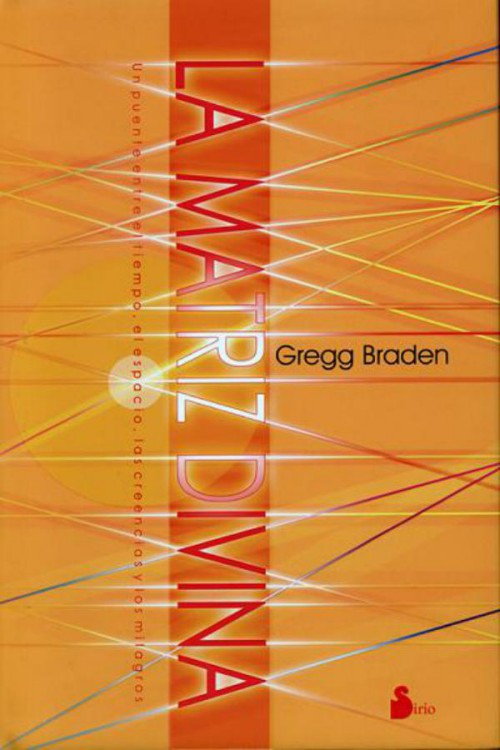

Marcador
Según la visión científica tradicional, no somos más que observadores pasivos viviendo en un universo preexistente sobre el que tenemos muy poca influencia. Como dice el eminente científico John Wheeler: "Teníamos esta vieja idea según la cual el universo está allí fuera y aquí está el hombre, el observador, separado del universo por una gruesa plancha de vidrio".
Los últimos descubrimientos de la física, sin embargo, nos ofrecen una perspectiva muy distinta. Según esta nueva visión, no estamos en absoluto separados del mundo que nos rodea ni tampoco somos meros observadores pasivos de la realidad. Existe un campo de energía que conecta todas las cosas. Existe un lugar que es el origen de nuestro mundo. Existe un espacio en el que todo es posible: La Matriz Divina.
La existencia de la Matriz Divina lo cambia todo. Si supiésemos cómo comunicarnos con ella, podríamos transformar nuestras vidas y nuestro mundo.
Y éste es justamente el tema de este libro. Además de presentar todas las evidencias científicas correspondientes, el autor nos proporciona los elementos necesarios para que podamos comunicarnos con la Matriz Divina y podamos convertirnos en arquitectos de nuestra propia vida.
Título Original: The divine matrix
Traductor: Vergara Varas, José
Autor: Braden, Gregg
©2008, Editorial Sirio, S.A.
ISBN: 9788478085750
Generado con: QualityEPUB v0.26
Titulo Original: THE DIVINE MATRIX
Traductor: resuAdriana Minino
©2007, Braden, Gregg
©2008, Hay House, Inc
ISBN: 9788478085750
Generado con: QualityEPUB v0.23
Corregido: pepe, 07/08/2011
Cruzando las barreras del tiempo,
el espacio, los milagros y las creencias
Gregg Braden
HAY HOUSE, INC. Carlsbad, California • New York City
London • Sydney - Johannesburg Vancouver • Hong Kong • New Delhi
Derechos de Autor © 2007 por Gregg Braden
Publicado y distribuido en los Estados Unidos por: Hay House, Inc., P.O. Box 5100, Carlsbad, CA 92018-5100 USA • (760) 431-7695 o (800) 654-5126 (760) 431-6948 (fax) o (800) 650-5115 (fax) • www.hayhouse.com®
Supervision de la editorial: Jill Kramer • Diseno: Suzie Bergstrom
Asesora de la editorial: Stephanie Gunning
Traduccion al espanol: Adriana Minino: adriana@mincor.net
Agradecemos encarecidamente al Institute of HeartMath por el permiso de reimprimir la ilustracion en la Figura 2, a Christopher Logue por el permiso de reimprimir su poema "Come to the Edge" en la Introduccion, y a Alvin Lee y Chrysalis Music Group por el permiso de reimprimir un extracto de "I'd Love to Change the World" en el Capitulo 8.
Titulo del original en ingles: THE DIVINE MATRIX: Bridging Time, Space, Miracles, and Belief.
Todos los derechos reservados. Ninguna parte de este libro puede ser reproducida bajo ningun medio mecanico, fotografico o electronico, o en la forma de registro fonografico. Tampoco puede ser almacenado en sistema de recuperacion, transmision o cualquier otro metodo de copia para el uso privado o publico, con la excepcion del "uso justificado", como citas breves contenidas en articulos y revistas sin el consentimiento, previo de la editorial.
El autor de este libro no otorga consejos medicos ni prescribe el uso de ninguna tecnica como forma de tratamiento de problemas medicos o fisicos sin consultar con la opinion medica, directa o indirectamente. La intencion del autor unicamente es ofrecer informacion de naturaleza generica para ayudarlo en su sendero hacia el bienestar emocional y espiritual. En el evento de que usted use cualquier informacion en este libro para su uso personal, lo cual es su derecho constitucional, el autor y la editorial no asumen ninguna responsabilidad por sus acciones.
ISBN: 978-1-4019-2177-4 Impresion #1: Diciembre 2008
Impreso en los Estados Unidos
CONTENIDO
Introduccion
PRIMERA PARTE: DESCUBRIENDO LA MATRIZ DIVINA, EL MISTERIO QUE CONECTA TODAS LAS COSAS
Capitulo 1: P:? Que hay en el espacio intermedio? R: La Matriz Divina
Capitulo 2: Haciendo anicos el paradigma: los experimentos que cambian todo
SEGUNDA PARTE: EL PUENTE ENTRE LA IMAGINACION Y LA REALIDAD: COMO FUNCIONA LA MATRIZ DIVINA
Capitulo 3:? Somos observadores pasivos o creadores poderosos?
Capitulo 4: Una vez conectados, estamos conectados para siempre: la vida en el universo holografico
Capitulo 5: Cuando el aqui es alla y el entonces es ahora: saltando las barreras del tiempo y del espacio en la Matriz
TERCERA PARTE: MENSAJES DE LA MATRIZ DIVINA: VIVIR, AMAR Y SANAR EN LA CONCIENCIA CUANTICA
Capitulo 6: El universo nos habla: mensajes de la Matriz....
Capitulo 7: Como comprender los reflejos de las relaciones: mensajes desde nuestro interior
Capitulo 8: Reprogramar el codigo de la realidad: 20 claves para la creacion consciente
Notas finales
Acerca del autor
Poseo una gotita de sabiduria en mi alma. Dejala que se disuelva en tu oceano.
Rumi
"Toda la materia se origina y existe solamente en virtud de una fuerza... Debemos asumir, tras esa fuerza, la existencia de una Mente consciente e inteligente. Esta Mente es la Matriz de toda la materia"
Max Planck, 1944
Con estas palabras, Max Planck, el padre de la teoria cuantica, describio un campo universal de energia que conecta todo en la creacion: la Matriz Divina.
La Matriz Divina es nuestro mundo. Tambien es todo en nuestro mundo. Es: nosotros, todo lo que amamos, odiamos, creamos y experimentamos. Al vivir en la Matriz Divina, somos artistas expresando nuestras pasiones, temores, suenos y deseos mas profundos a traves de la esencia de un misterioso lienzo cuantico. Pero nosotros somos el lienzo, al igual que las imagenes en el lienzo. Somos las pinturas y tambien los pinceles.
En la Matriz Divina, somos el contenedor en donde existen todas las cosas, el puente entre las creaciones de nuestros mundos interior y exterior, y el espejo que nos muestra lo que hemos creado.
Este libro ha sido escrito para todos aquellos de ustedes que anhelan despertar el poder de sus mayores pasiones y mas profundas aspiraciones. En la Matriz Divina, ustedes son la semilla del milagro, y son el milagro mismo.
INTRODUCCION
Vengan a la orilla. Podriamos caernos. Vengan a la orilla.? Esta demasiado alto! VENGAN A LA ORILLA Y vinieron. Y el los empujo. Y ellos volaron.
Con estas palabras, vemos un hermoso ejemplo del poder que nos espera cuando nos permitimos aventurarnos mas alla de los limites, de lo que siempre hemos dado por cierto en nuestras vidas. En este breve dialogo del poeta contemporaneo Christopher Logue, un grupo de iniciados se encontraba en una experiencia muy distinta a lo que originalmente esperaban.?En vez de quedarse simplemente en la orilla, su maestro los motivo lo suficiente para que fueran mas alla de ella, de una manera tanto sorprendente como empoderadora. Es en este territorio desconocido que lograron experimentarse de una manera totalmente nueva, y en su descubrimiento, encontraron una nueva libertad.
En muchos sentidos, las paginas que siguen son como la llegada de los iniciados a la orilla. Describen la existencia de un campo de energia (la Matriz Divina) que suministra el contenedor, asi como el puente y el espejo, de todo lo que ocurre en el mundo, en nuestro interior y en el exterior de nuestro cuerpo. El hecho de que este campo existe en todo, desde las particulas pequenisimas del atomo cuantico hasta las galaxias mas distantes, cuya luz apenas llega ahora a nuestros ojos, y en todo lo que esta en el medio, cambia lo que hemos creido respecto a nuestro papel en la creacion.
Para algunos de ustedes, lo que estan a punto de leer es una manera nueva y muy distinta de pensar respecto a la forma como funcionan las cosas en la vida. Para otros, es una sintesis reconfortante de lo que ya sabian, o por lo menos sospechaban que fuera cierto. Para todos, sin embargo, la existencia de una red primaria de energia que conecta sus cuerpos, el mundo y todo en el universo, abre las puertas a una posibilidad poderosa y misteriosa.
Esa posibilidad sugiere que puede ser que seamos mucho mas que simples observadores, atravesando por un breve momento del tiempo en una creacion ya existente. Cuando vemos la "vida": nuestra abundancia espiritual y material, nuestras relaciones y carreras, nuestros mas intensos amores y mayores logros, asi como nuestros miedos y la carencia de todas estas cosas, tambien estamos contemplandonos cara a cara en el espejo de nuestras mas fieles (y a veces mas inconscientes) creencias. Las vemos a nuestro alrededor porque se han manifestado a traves de la misteriosa esencia de la Matriz Divina, y para que esto ocurra, la conciencia misma debe representar un papel clave en la existencia del universo.
SOMOS LOS ARTISTAS Y SOMOS LA OBRA DE ARTE
Por muy absurda que esta idea pueda parecerle a muchas personas, es precisamente el punto crucial de las mayores controversias entre algunas de las mentes mas brillantes de la historia reciente.
En una cita de sus notas autobiograficas, por ejemplo, Albert Einstein compartio su creencia de que somos esencialmente observadores pasivos viviendo en un universo que ya esta en su lugar, en el que parecemos tener muy poca influencia: "Alla a lo lejos hay un mundo enorme," dijo, "que existe independientemente de nosotros los humanos y que se yergue ante nosotros como un enorme y eterno acertijo, por lo menos parcialmente accesible para nuestra inspeccion y raciocinio."?
En contraste con la perspectiva de Einstein, todavia predominante en muchos cientificos actuales, John Wheeler, fisico de la Universidad de Princeton y colega de Einstein, ofrece una vision radicalmente distinta de nuestro papel en la creacion. En terminos que son osados, claros y graficos, Wheeler dice: "Antes teniamos un concepto antiguo de que habia un universo ahi fuera, [enfasis del autor] y que aqui estaba el hombre, el observador, protegido con toda seguridad del universo por una losa de vidrio templado de 15 centimetros de grosor." Refiriendose a los experimentos de finales del siglo XX, que nos demuestran como simplemente al mirar algo, ese algo cambia, Wheeler continua: "Ahora hemos aprendido del mundo cuantico que incluso para observar un objeto tan minusculo como un electron, debemos destrozar ese vidrio templado: tenemos que ponernos en contacto con el otro lado... Entonces, el antiguo termino de observador debe ser sencillamente tachado de los libros, y debemos anadir la nueva palabra: participante."?
? Que cambio tan radical! En una interpretacion totalmente distinta de nuestra relacion con el mundo en el que vivimos, Wheeler afirma que es imposible que solamente observemos que el universo que nos rodea suceda. Los experimentos en fisica cuantica, de hecho, demuestran que simplemente al observar algo tan pequeno como un electron, enfocando nuestra conciencia en lo que el electron esta haciendo por hasta un solo instante, sus propiedades cambian. El experimento sugiere que el puro acto de observar es un acto de creacion, y que esa conciencia esta realizando la creacion. Estos descubrimientos parecen apoyar la propuesta de Wheeler de que ya no podemos considerarnos puramente como espectadores que no tenemos efecto en el mundo que observamos.
Pensar en nosotros mismos como participantes en la creacion, en vez de simplemente pasar a traves del universo durante el breve periodo de tiempo de toda una vida, requiere una nueva percepcion de lo que es el cosmos y como trabaja. La infraestructura para una vision tan radical del mundo fue la base para una serie de libros y ensayos de otro fisico de Princeton y colega de Einstein, David Bohm. Antes de su muerte en 1992, Bohm nos dejo dos teorias de vanguardia que ofrecen una vision muy distinta (y de alguna manera, casi holistica) del universo y de nuestro papel en el.
La primera fue una interpretacion de la fisica cuantica, que prepara el escenario para el encuentro y la amistad subsiguiente entre Bohm y Einstein. Fue esta teoria la que abrio la puerta a lo que Bohm llamaba la "operacion creadora de los niveles subyacentes de la realidad."4En otras palabras, el creia que hay planos mas profundos o elevados de creacion, que contienen el molde para lo que ocurre en nuestro mundo. Es desde estos niveles mas sutiles de la realidad que se origina nuestro mundo fisico.
Su segunda teoria era una explicacion del universo como un sistema unico y unificado de la naturaleza, conectado en formas que no son siempre obvias.
Durante sus primeros trabajos en el Laboratorio de Radiacion Lawrence de la Universidad de California (ahora llamado Laboratorio Nacional Lawrence Livermore), Bohm tuvo la oportunidad de observar pequenas particulas de atomos en un estado gaseoso especial llamado plasma. Bohm descubrio que cuando las particulas estaban en el estado de plasma, actuaban un poco distinto a las unidades individuales, tal como las concebimos, y mas como si estuvieran conectadas con otra como parte de una existencia mas grandiosa. Estos experimentos sentaron la base para el trabajo vanguardista por el cual Bohm es probablemente mas recordado: su libro escrito en 1980: La totalidad y el orden implicado.
En este volumen transformador de paradigmas, Bohm propone que si pudieramos ver el universo en su totalidad, desde un punto de vista mas elevado, los objetos de nuestro mundo, de hecho aparecerian como una proyeccion de cosas que han ocurrido en otro dominio que no podemos ver. El percibia lo visible y lo invisible como expresiones de un orden mayor y mas universal Para distinguirlos, denominaba estos dos dominios como: "implicado" y "explicado."
Las cosas que podemos ver y tocar y que aparecen separadas en nuestro mundo (como las rocas, los oceanos, los animales y las personas) son ejemplos del orden explicado de la creacion. Sin embargo, por distintas que puedan parecer una de la otra, Bohm sugirio que estan conectadas en una realidad mas profunda en formas, que sencillamente no podemos ver desde nuestro lugar en la creacion. El veia todas las cosas que parecen separadas de nosotros como parte de una totalidad mayor, la cual llamaba orden implicado.
Para describir la diferencia entre lo implicado y lo explicado, nos dio la analogia de un raudal que fluye. Bohm describia la ilusion de la separacion, usando como metafora las diferentes formas en que podemos ver el agua correr en el raudal: "En este raudal, uno podria ver un patron siempre cambiante de vortices, ondas, olas, salpicaduras, etcetera, sin existencia, evidentemente separada como tal."5Aunque las alteraciones del agua pueden lucir separadas ante nosotros, Bohm las veia intimamente enlazadas y profundamente conectadas entre si. "Dicha subsistencia transitoria, tal como puede ser poseida por estas formas abstractas, implica solamente una independencia relativa [enfasis del autor] en vez de una existencia absolutamente independiente," afirmaba.6En otras palabras, todas son parte de la misma agua.
Bohm usaba dichos ejemplos para describir su percepcion de que el universo y todo lo que el contiene (incluidos nosotros) puede, de hecho, ser parte de un patron cosmico mas grande en donde todas las partes son compartidas de forma equivalente entre si. Encapsulando esta vision unificada de la naturaleza, Bohm asevera sencillamente: "La nueva forma de percepcion puede quiza ser mejor llamada Totalidad indivisible en movimiento fluyente."7
En la decada de los setenta, Bohm ofrecio una metafora incluso mas clara para describir la forma en que uno podria concebir el universo como un todo distribuido pero indivisible. Reflexionando en la conexion de la naturaleza en la creacion, se convencio aun mas de que el universo trabaja como un gran holograma cosmico. En un holograma, cada porcion de un objeto dado contiene ese objeto en su totalidad, solamente que en una escala menor.
(Para aquellos que no estan familiarizados con el concepto de holograma, se ofrece una explicacion detallada en el Capitulo 4.) Desde la perspectiva de Bohm, lo que vemos como nuestro mundo es, en realidad, la proyeccion de algo aun mas real que esta ocurriendo en un nivel mas profundo de la creacion. El nivel mas profundo es el original: el implicado. En esta vision de "como es arriba, es abajo" y "como es adentro, es por fuera," los patrones estan contenidos en el interior de los patrones, completos de por si y distintos solamente en escala.
La elegante simplicidad del cuerpo humano nos ofrece un hermoso ejemplo de un holograma, uno que ya nos es familiar. El ADN de cualquier parte de nuestros cuerpos contiene nuestro codigo genetico (el patron completo de ADN) para el resto del cuerpo, sin importar de donde viene. Ya sea que tomemos una muestra de nuestro cabello, una una o nuestra sangre, el patron genetico que nos hace ser lo que somos, esta siempre ahi en el codigo... siempre es el mismo.
Al igual que el universo esta constantemente cambiando de lo implicado a lo explicado, el flujo de lo invisible a lo visible es lo que constituye la corriente dinamica de la creacion. Es esta naturaleza constantemente cambiante de la creacion, lo que John Wheeler tenia en mente cuando describio el universo como "participante", es decir, inconcluso y continuamente respondiendo a la conciencia.
Curiosamente, esta es precisamente la forma en que las antiguas tradiciones sabias sugieren que funciona el mundo. Desde los antiguos vedas de la India, que algunos eruditos datan de 5,000 a. C, hasta los Rollos del Mar Muerto hace 2000 anos, un tema general parece sugerir que el mundo es actualmente el espejo de las cosas que estan ocurriendo en un dominio mas elevado o en una realidad mas profunda. Por ejemplo, comentando las nuevas traducciones de los fragmentos de los Rollos del Mar Muerto, conocidos como Los canticos del sacrificio del Sabat, sus traductores resumieron el contenido: "Lo que ocurre en la tierra es apenas un palido reflejo de una realidad suprema mayor."8
La implicacion de la teoria cuantica y de los textos antiguos es que en los dominios invisibles creamos el patron para las relaciones, las carreras, los exitos y los fracasos del mundo visible. Desde esta perspectiva, la Matriz Divina trabaja como una gran pantalla cosmica que nos permite ver como la energia no fisica de nuestras emociones y creencias (nuestra ira, odio y enojo; asi como nuestro amor, compasion y comprension) se proyecta en el medio fisico de la vida.
Al igual que una pantalla de cine refleja sin juicio la imagen de lo que sea o quien sea que haya sido filmado, la Matriz parece proveer una superficie imparcial para que nuestras experiencias y creencias internas se manifiesten en el mundo. A veces, conscientemente, a veces no, "demostramos" nuestras verdaderas creencias respecto a todo, desde la compasion hasta la traicion, a traves de la calidad de las relaciones que nos rodean.
En otras palabras, somos como artistas expresando nuestras pasiones, miedos, suenos y deseos mas profundos a traves de la esencia viva de un misterioso lienzo cuantico. Sin embargo, al contrario del lienzo convencional de un pintor, el cual existe en un lugar en un momento dado, nuestro lienzo es de la misma materia que todo lo demas, esta en todas partes y siempre presente.
Llevemos un paso mas adelante la analogia del artista y del lienzo. Tradicionalmente, los artistas se separan de su obra y usan sus herramientas para transmitir su creacion interna a traves de una expresion externa. En el interior de la Matriz Divina, sin embargo, desaparece la separacion entre el arte y el artista. Somos el lienzo, asi como las imagenes en el, somos las herramientas, asi como el artista que las usa.
La pura idea de que creamos desde el interior de nuestra propia creacion, nos recuerda aquellos comunes personajes de Walt Disney en la television en blanco y negro en los anos cincuenta y sesenta. Primero, veiamos la mano de un artista no identificado esbozando sobre un papel de dibujo un personaje de historietas famoso como el raton Miguelito. Mientras se formaba la imagen, de repente el dibujo se animaba y lucia real. Luego, Miguelito comenzaba a crear sus propios dibujos de otros personajes de historietas desde el interior del dibujo mismo. De repente, el artista original ya no era necesario y quedaba fuera del cuadro... literalmente.
Sin que se viera la mano por ninguna parte, Miguelito y sus amigos se encargaban por si mismos de las vidas y las personalidades. Mientras todos dormian en el departamento de la imaginacion, la cocina entera se animaba con gran deleite. Mientras el azucarero bailaba con el salero y la taza de te estremecia el mundo del mantequillero, los personajes dejaban de tener conexion alguna con el artista. Aunque esto pueda parecer una simplificacion de como funcionamos dentro de la Matriz Divina, tambien ayuda a anclar la idea sutil y abstracta de que somos creadores, creando desde el interior de nuestras propias creaciones.
Asi como los artistas refinan una imagen hasta que es exactamente correcta en sus mentes, en muchos sentidos parece que a traves de la Matriz Divina, hacemos lo mismo con nuestras experiencias de vida. A traves de nuestra paleta de creencias, juicios, emociones y oraciones, nos encontramos en relaciones, empleos y situaciones de apoyo y traicion que se desempenan con diferentes individuos en varios lugares. Al mismo tiempo, estas personas y situaciones a menudo se sienten insistentemente familiares.
Tanto como individuos, como en conjunto, compartimos creaciones de nuestra vida interior como un ciclo eterno de momento tras momento, dia tras dia, y asi sucesivamente.? Que concepto tan hermoso, extrano y poderoso! Igual que un pintor usa el mismo lienzo una y otra vez buscando la expresion perfecta de una idea, podemos pensar en nosotros como artistas perpetuos disenando una creacion siempre cambiante y sin final.
Las implicaciones de estar rodeados por un mundo maleable de nuestra propia fabricacion son vastas, poderosas, y para algunos, quiza un poco temibles. Nuestra habilidad de usar creativa e intencionalmente la Matriz Divina, de repente nos empodera para alterar todo segun como vemos nuestro papel en el universo. Por lo menos, sugiere que hay mucho mas en la vida que sucesos casuales y sincronismos ocasionales con los cuales lidiamos lo mejor que podemos.
A fin de cuentas, nuestra relacion con la esencia cuantica que nos conecta con todo lo demas nos recuerda que nosotros mismos somos creadores. Como tal, podemos expresar nuestros mas profundos deseos de sanacion, abundancia, alegria y paz en todo, desde nuestros cuerpos hasta nuestras relaciones.
Y podemos hacer esto conscientemente, en el momento y en la manera que deseemos.
Sin embargo, al igual que los iniciados en el poema de Christopher Logue al comienzo de esta Introduccion necesitaban un pequeno "empujoncito" para que comenzaran a volar, todas estas posibilidades requieren de un cambio sutil no obstante poderoso en la forma que pensamos sobre nuestro mundo y sobre nosotros mismos. En este cambio, nuestros deseos secretos, nuestras metas mas elevadas y nuestros suenos mas atrevidos, aparecen de repente a nuestro alcance. Tan milagrosa como dicha realidad pueda sonar, todas estas cosas, y muchas mas, son posibles en el dominio de la Matriz Divina. La clave es no solamente comprender como funciona, tambien necesitamos un lenguaje para comunicar nuestros deseos que sea reconocible para esta antigua red de energia.
Nuestras mas antiguas, sabias y apreciadas tradiciones nos recuerdan que, de hecho, existe un lenguaje que habla con la Matriz Divina, un lenguaje sin palabras que no involucra las senales externas comunes de comunicacion que hacemos con nuestras manos o cuerpos. Proviene de una forma tan simple que todos ya sabemos como "hablarlo" con fluidez, de hecho lo usamos todos los dias en nuestras vidas: es el lenguaje de las emociones humanas.
La ciencia moderna ha descubierto que a traves de cada emocion que experimentamos en nuestros cuerpos, tambien pasamos por cambios quimicos tales como pH y hormonas que reflejan nuestros sentimientos.9A traves de las experiencias "positivas" de amor, compasion y perdon, y de las emociones "negativas" del odio, el juicio y la envidia, cada uno de nosotros posee el poder de afirmar o negar nuestra existencia a cada momento del dia. Adicionalmente, la misma emocion que nos proporciona tal poder dentro de nuestros cuerpos, extiende esta fuerza en el mundo cuantico mas alla de nuestros cuerpos.
Puede ser util pensar en la Matriz Divina como una manta cosmica que comienza y termina en el dominio de lo desconocido, y comprende todo en el intermedio. Esta cubierta tiene muchas capas de profundidad y esta en todas partes todo el tiempo; ya esta colocada en su lugar. Nuestros cuerpos, vidas y todo lo que conocemos, existe y toma lugar en el interior de sus fibras. Desde nuestra creacion acuatica en el vientre de nuestras madres, hasta nuestros matrimonios, divorcios, amistades y carreras, todo lo que experimentamos puede concebirse como "arrugas" en la manta.
Desde una perspectiva cuantica, todo, desde los atomos de materia y desde una brizna de pasto hasta nuestros cuerpos, el planeta, y mas alla, puede ser concebido como una "alteracion" de la suavidad de la tela de esta manta del tiempo y espacio. Quiza no es coincidencia que las tradiciones antiguas espirituales y poeticas describan la existencia de forma muy parecida. Los vedas, por ejemplo, hablan de un campo unificado de "conciencia pura" que impregna y penetra toda la creacion.10En estas tradiciones, nuestras experiencias de pensamientos, sentimientos, emociones y creencias (y todo el juicio que ellos crean) son vistas como alteraciones, interrupciones en un campo que de lo contrario seria liso y e inmovil.
De manera semejante, la obra del siglo VI, el Hsin-Hsin Ming (que traduce Versos de la fe y la mente) describe las propiedades de una esencia que es el anteproyecto para todo en la creacion.
Llamado el Tao, va mas alla de las descripciones, al igual que lo vemos en los textos vedicos. Es todo lo que es; el contenedor de todas las experiencias, asi como la experiencia misma. El Tao es descrito como perfecto: "como el vasto espacio en donde no hace falta nada y no hay nada en exceso."??
De acuerdo con el Hsin-Hsin Ming, es solamente cuando perturbamos la tranquilidad del Tao a traves de nuestros juicios que la armonia nos evade. Cuando esto inevitablemente ocurre, y nos encontramos atrapados en sentimientos de ira y separacion, el texto ofrece guias para remediar esta condicion: "Para volver directamente a la armonia en esta realidad, cuando surja la duda, diga simplemente: 'No dos.' En este 'no dos' nada esta separado, nada esta excluido."??
Aunque admito que vernos a nosotros mismos como una alteracion de la Matriz puede quitarle un poco de romanticismo a nuestra vida, nos proporciona una manera poderosa para conceptualizar nuestro mundo y a nosotros mismos. Si por ejemplo, deseamos formar relaciones nuevas, sanas y que reafirmen nuestras vidas, dejar que entre a nuestras vidas el romance que sana o atraer una solucion pacifica en el Medio Oriente, debemos crear una nueva alteracion en el campo, una que refleje nuestro deseo. Debemos hacer una nueva "arruga" en la materia de la cual estan hechos el espacio, el tiempo, nuestros cuerpos y el mundo.
Esta es nuestra relacion con la Matriz Divina. Nos han dado el poder de imaginar, sonar y sentir las posibilidades de la vida desde la Matriz misma, para que podamos reflejar de regreso hacia nosotros lo que hemos creado. Tanto las tradiciones antiguas como la ciencia moderna han descrito el funcionamiento de este espejo cosmico; es el caso de los experimentos que compartiremos en los siguientes capitulos, y hasta demostraremos como funcionan estos reflejos en el lenguaje de la ciencia. Sin duda alguna, aunque estos estudios pueden resolver algunos misterios de la creacion, tambien abren la puerta a preguntas incluso mas profundas respecto a nuestra existencia.
Obviamente, no conocemos todo sobre la Matriz Divina. La ciencia no tiene todas las respuestas, con toda honestidad, los cientificos ni siquiera estan seguros de donde proviene la Matriz Divina, y tambien estamos conscientes de que podemos estudiarla por otros cien anos y, aun asi, no encontrar todas las respuestas. Lo que si sabemos, no obstante, es que la Matriz Divina existe. Esta aqui, y podemos tener acceso a su poder creativo a traves del lenguaje de nuestras emociones.
Podemos aplicar este conocimiento en una forma util y significativa en nuestras vidas. Al hacerlo, no puede negarse nuestra conexion con los demas y con todas las cosas. Es a la luz de esta conexion que podemos comprender lo poderosos que en verdad somos. Desde el lugar de la fortaleza, que dicha comprension ofrece, tenemos la oportunidad de convertirnos en seres mas pacificos y mas compasi- vos, trabajando activamente para crear un mundo que refleje estas cualidades, y mas. A traves de la Matriz Divina, tenemos la oportunidad de enfocarnos en estos atributos en nuestras vidas, aplicandolos como nuestra tecnologia interna de sentimientos, imaginacion y suenos. Cuando lo hacemos, tenemos acceso a la verdadera esencia del poder de cambiar nuestras vidas y el mundo.
ACERCA DE ESTE LIBRO
En muchos sentidos, nuestra experiencia de la Matriz Divina puede compararse con el programa que hace funcionar una computadora. En ambos casos, las instrucciones deben usar un lenguaje que el sistema comprenda. Para la computadora, hay un codigo numerico de ceros y unos. Para la conciencia, se requiere un tipo distinto de lenguaje, uno que no usa numeros, alfabetos, ni siquiera palabras. Puesto que ya somos parte de la Matriz Divina, tiene todo el sentido del mundo que deberiamos tener todo lo necesario para comunicarnos con ella, sin necesidad de un manual de instrucciones o de un entrenamiento especial. Y asi lo hacemos.
El lenguaje de la conciencia parece ser la experiencia universal de las emociones. Ya sabemos como amar, odiar, temer y perdonar. Al reconocer que estos sentimientos son en verdad las instrucciones que programan la Matriz Divina, podemos agudizar nuestras habilidades para comprender mejor como atraer alegria, sanacion y paz en nuestras vidas.
Este libro no tiene la intencion de ser una obra categorica de la historia de la ciencia y de la nueva fisica. Hay una diversidad de otras obras que ya han realizado un maravilloso trabajo para brindar este tipo de informacion a nuestra conciencia hoy en dia. Cito algunas de ellas en este libro: Hiperespacio de Michio Kaku por ejemplo, y La totalidad y el orden implicado de David Bohm. Cada uno representa una nueva forma poderosa de ver nuestro mundo, y los recomiendo ampliamente.
La intencion de este libro es convertirse en una herramienta util (una guia) para que podamos aplicarla en los misterios de nuestra vida diaria. Por esta razon, hay lugares en donde he decidido enfocarme mas en los resultados radicales e inesperados de los experimentos cuanticos, que en quedarme estancado en demasiados detalles tecnicos de los experimentos mismos. Para que logremos comprender el poder de manifestar sanaciones, paz, alegria, romance y compania, asi como en sobrevivir nuestro tiempo en la historia, es importante enfatizar lo que los resultados nos estan diciendo acerca de nosotros, en vez de en las particularidades de como fueron realizados los estudios. Para aquellos interesados en los detalles tecnicos, he incluido las fuentes como notas finales en este libro.
Para muchas personas, los grandes avances en el mundo de la fisica cuantica apenas son un poco mas que hechos interesantes, temas para discutir en conferencias, talleres o tomando un cafe con un amigo. Sin embargo, por muy profundas que sean las implicaciones, y por muy elevada que sea la filosofia que esto conlleva, estos descubrimientos parecen tener muy poca incidencia en nuestras vidas diarias. Por ejemplo,? que de bueno tiene saber que una particula de materia puede estar en dos lugares al tiempo o que los electrones pueden viajar mas rapidamente de lo que Einstein dijo, si este conocimiento no mejora de alguna manera nuestras vidas? Es solamente cuando podemos conectar estos descubrimientos asombrosos con la sanacion de nuestros cuerpos o con lo que vivimos a diario en los centros comer-ciales, las salas, los aeropuertos y los salones de clases, que se convierte en algo importante para nosotros.
En este aparente abismo, entre los misterios del mundo cuantico y nuestras experiencias diarias, es donde La Matriz Divina nos ofrece un puente.
Ademas de describir los descubrimientos, este libro nos lleva un paso mas adelante: le da significado a como nos pueden ayudar estos descubrimientos a convertirnos en mejores personas y a construir un mundo mejor juntos.
He escrito este libro por una razon: para ofrecer un sentido de esperanza, posibilidad y empoderamiento en un mundo que a menudo nos hace sentir pequenos, poco efectivos e impotentes. Mi meta tambien es hacerlo usando un metodo coloquial que describa las increibles perspectivas de la nueva ciencia, de una forma facil de entender e interesante.
Mi experiencia con las presentaciones en vivo me ha demostrado que con el fin de tocar el corazon de una audiencia de una forma significativa, es importante honrar la manera en que las personas aprenden. Sin importar lo mucho que creamos que nos dejamos guiar por el hemisferio derecho o izquierdo del cerebro, el hecho es que todos usamos ambos para encontrarle sentido al mundo. Y aunque algunas personas ciertamente usan mas un hemisferio que otro, es importante honrar tanto nuestra intuicion como nuestra logica cuando invitamos a la gente a cambiar radicalmente su vision del mundo.
Por esta razon, La Matriz Divina fue escrita de forma muy similar a como se crea el tejido de un tapiz. A lo largo de estas paginas, he entretejido las descripciones de mis relatos y experiencias direc- tas y personales relacionados del "hemisferio derecho", con las investigaciones e informes de los descubrimientos relacionados del hemisferio izquierdo, que nos dicen por que estas historias son importantes. Esta forma de compartir informacion hace que los datos parezcan menos como textos escolares, mientras que se mantiene suficiente informacion de las innovaciones de la ciencia como para que sean significativos.
Asi como la vida se construye desde las cuatro bases quimicas que crean nuestro ADN, el universo parece estar fundado en las cuatro caracteristicas de la Matriz Divina, que hacen que las cosas funcionen de la forma en que lo hacen. La clave para conectarse con el poder de la Matriz yace en nuestra habilidad de adoptar los cuatro descubrimientos cruciales, que se conectan con nuestras vidas de una forma sin precedentes:
Primer descubrimiento: Hay un campo de energia que conecta toda la creacion.
Segundo descubrimiento: Este campo asume el papel de un contenedor, un puente y un espejo de las creencias que tenemos en nuestro interior.
Tercer descubrimiento: El campo no es local y es holografico. Cada parte de si esta conectada con las demas, y cada parte refleja la totalidad en una escala menor.
Cuarto descubrimiento: Nos comunicamos con el campo a traves del lenguaje de las emociones.
Es nuestro poder reconocer y aplicar estas realidades que determinan todo, desde nuestra sanacion hasta el exito de nuestras relaciones y carreras. A fin de cuentas, nuestra supervivencia como especie puede estar conectada directamente con nuestra habilidad y nuestra voluntad de compartir practicas que afirmen la vida proveniente de una vision del mundo cuantica y unificada.
Para hacerle justicia a los enormes conceptos implicados en La Matriz Divina, la he escrito en tres partes, cada una de las cuales cubre una de las implicaciones claves del campo. En vez de crear una conclusion formal al final de cada parte, he resaltado los conceptos importantes como un resumen lineal, anotando la idea "Clave" designada por un numero (Clave 1, Clave 2, y asi sucesivamente). Para una referencia rapida, al final del capitulo 8 se encuentra una lista de las 20 Claves.
Una breve descripcion de cada seccion le ayudara a navegar a lo largo del material y a encontrar informacion util para todo proposito, desde referencias importantes hasta inspiraciones profundas.
En la Primera parte: "El descubrimiento de la Matriz Divina: El misterio que conecta todas las cosas", se explora el sentido perdurable de la condicion humana que hemos unificado por un campo de energia que conecta todas las cosas. En el Capitulo 1, describo el unico experimento realizado por cientificos hace mas de cien anos en la busqueda de dicho campo unificado. En esta seccion tambien comparto las investigaciones del siglo XX que llevaron a los avances en fisica cuantica, que forzaron a los cientificos a repasar el experimento original, que nos decia que todo estaba separado. Esto incluye tres experimentos representativos, que nos demuestran los ultimos documentos cientificos, de un campo de energia previamente sin reconocer. En resumen, estos descubrimientos demuestran lo siguiente:
1. El ADN de los humanos tiene un efecto directo sobre la materia de la cual esta hecho nuestro mundo.
2. Las emociones humanas tienen efecto directo sobre el ADN que afecta la materia de la cual esta hecho nuestro mundo.
3. La relacion entre las emociones y el ADN trasciende los limites del tiempo y el espacio. Los efectos son los mismos independientemente de la distancia.
Al final de la Primera parte, puede quedar un poco de duda en cuanto a la existencia de la Matriz Divina. Ya sea que la describamos desde una perspectiva espiritual o cientifica, es claro que hay algo mas ahi fuera, un campo de energia que conecta todas las cosas que hacemos, asi como todo lo que somos y experimentamos. Las preguntas logicas serian entonces: "? Que hacemos con esta informacion" y "?Como usamos la Matriz Divina en nuestras vidas?"
En la Segunda parte: "El puente entre la imaginacion y la realidad: Como funciona la Matriz Divina," exploramos lo que significa vivir en un universo en donde ademas de solo estar conectados (sin limites de espacio), todo esta conectado de forma holografica. El sutil poder de estos principios es quiza uno de los descubrimientos mas grandes de la fisica del siglo XX, y al mismo tiempo, es bastante posible que sea el menos comprendido y mas descuidado. Esta seccion no es tecnica (intencionalmente) y esta disenada para ser una guia util ante el misterio de experiencias que todos compartimos, pero que raramente reconocemos en su plena capacidad como para que lleguemos a aprender de ellas.
Cuando observamos nuestras vidas desde el punto de vista de que todo esta en todas partes todo el tiempo, las implicaciones son tan vastas que son dificiles de comprender para muchas personas. Esto ocurre precisamente debido a nuestra conexion universal que hemos empoderado para apoyar, compartir y participar en las alegrias y en las tragedias de todas partes, a toda hora.? Como podemos hacer uso de dicho poder?
La respuesta comienza con nuestra comprension de que en verdad no existen "aqui" y "alla," ni "entonces" y "ahora." Desde la perspectiva de la vida como un holograma conectado universalmente, aqui ya es alla, y entonces siempre ha sido ahora. Las tradiciones espirituales antiguas nos recuerdan que en cada momento del dia, podemos optar por afirmar o negar nuestras vidas. Cada segundo optamos por nutrirnos de forma que apoyemos o neguemos nuestras vidas; respiramos profundamente y afirmamos nuestras vidas con el aliento, o respiramos de forma superficial, negandola; y pensamos y hablamos respecto a los demas de manera que los honramos o los deshonramos.
A traves del poder de nuestra conciencia no local y holografica, todas estas opciones, en apariencia insignificantes, tienen consecuencias que se extienden mas alla de los lugares y los momentos de nuestras vidas. Nuestras opciones individuales se combinan para convertirse en nuestra realidad colectiva, esto es lo que hace que estos descubrimientos sean tanto emocionantes como temibles. A traves de esta comprension, vemos:
· Por que nuestros buenos deseos, pensamientos y oraciones ya han llegado a su destino
· Que no estamos limitados por nuestros cuerpos o por las "leyes" de la fisica
· Como podemos apoyar a nuestros seres queridos en cualquier lugar, desde el campo de batalla hasta la sala de juntas, sin siquiera salir de nuestra casa
· Que tenemos el potencial de sanar de forma instantanea
· Que es posible ver a traves del tiempo y del espacio sin abrir nuestros ojos
En la Tercera parte: "Mensajes de la Matriz Divina: Vivir, amar y sanar en la conciencia cuantica," ahondamos directamente en los aspectos practicos de lo que significa vivir en un campo unificado de energia, y como afecta esto los eventos de nuestras vidas. Con ejemplos de sincronismos y coincidencias, poderosos actos de sanacion intencionada y lo que nuestras relaciones mas intimas nos estan ensenando, esta seccion sirve como modelo para reconocer lo que otras experiencias similares pueden significar en nuestras propias vidas.
A traves de una serie de historias de casos reales, comparto el poder, la ironia y la claridad de como eventos aparentemente insignificantes de nuestras vidas, en realidad somos "nosotros" manifestando nuestras verdaderas y mas profundas creencias. Entre los ejemplos usados para describir esta relacion, incluyo un caso de como nuestras mascotas pueden mostrarnos con sus cuerpos las condiciones fisicas que hemos pasado por alto o estamos todavia desarrollando en nuestro propio cuerpo.
La Matriz Divina es el resultado de mas de veinte anos de investigaciones, asi como de mi propia jornada para lograr encontrarle sentido al mayor secreto de nuestras tradiciones mas antiguas, misticas y amadas. Si siempre ha anhelado encontrar respuestas a las preguntas: "?En verdad estamos conectados?, y silo estamos,? que tan profunda es esa conexion?" y "? Que tanto poder tenemos en realidad para cambiar nuestro mundo?" este libro sera entonces de su agrado.
La Matriz Divina ha sido escrito para aquellos de ustedes cuyas vidas han conectado la realidad del pasado con la esperanza de nuestro futuro. Es a ustedes a quienes se les pide que perdonen y encuentren la compasion en un mundo que se esta recuperando de las cicatrices del dolor, el juicio y el miedo. La clave para sobrevivir nuestro tiempo en la historia, es crear una nueva forma de pensar mientras que estamos viviendo en las condiciones que amenazan nuestra existencia.
A fin de cuentas, podemos descubrir que nuestra habilidad de entender y aplicar las "reglas" de la Matriz Divina contiene la clave para nuestra sanacion mas profunda, nuestra alegria mas grande y nuestra supervivencia como especie.
Gregg Braden
Santa Fe, Nuevo Mexico
PRIMERA PARTE
DESCUBRIENDO LA MATRIZ DIVINA:
EL MISTERIO QUE CONECTA TODAS LAS COSAS
CAPITULO UNO
P:? QUE HAY EN EL ESPACIO INTERMEDIO?
R: LA MATRIZ DIVINA
"La ciencia no puede resolver el grandioso misterio de la naturaleza. La razon es, que en el ultimo analisis, nosotros somos... parte del misterio que estamos tratando de resolver"
Max Planck (1858-1947), fisico
"Cuando nos comprendemos, comprendemos nuestra conciencia, tambien comprendemos el universo y la separacion desaparece."
Amit Goswami, fisico
Hay un lugar en donde comienzan todas las cosas, un sitio de pura energia que simplemente "es". En esta incubadora cuantica de la realidad, todas las cosas son posibles. Desde nuestros exitos, abundancia y sanacion, hasta nuestros fracasos, carencias y enfermedades..., todo, desde nuestro mayor temor hasta nuestro deseo mas profundo, comienza en esta "sopa"de potencial.
Como forjadores de la realidad en los aspectos de imaginacion, expectativa, juicio, pasion y oracion, impulsamos cada posibilidad para que sea real. En nuestras creencias respecto a lo que somos, lo que tenemos y lo que no tenemos, y lo que debemos y no debemos ser, le damos vida a nuestras mayores alegrias asi como a nuestros momentos mas oscuros.
La clave para dominar este lugar de energia pura es reconocer que existe, comprender como funciona y, finalmente, hablar el lenguaje que este lugar reconoce. Todas las cosas estan disponibles para nosotros, como arquitectos de la realidad de este lugar en donde el mundo comienza: el espacio puro de la Matriz Divina.
Clave 1: La Matriz Divina es el contenedor que sostiene el universo, el puente entre todas las cosas, y el espejo que nos muestra lo que hemos creado. Lo ultimo que esperaba encontrar una tarde de octubre, mientras iba de excursion por un remoto canon del area de las Cuatro Esquinas al noroeste de Nuevo Mexico, era un indio americano guardian de sabiduria que iba caminando hacia mi en el mismo sendero. Ahi estaba, parado en la cima de la pequena cuesta que nos separaba mientras nuestros caminos convergian.
No estoy seguro de cuanto tiempo llevaba el ahi. Para cuando lo vi, solo me esperaba; me observaba mientras yo daba pasos atentos entre las piedras sueltas del sendero. El sol creo un resplandor que proyecto una intensa sombra sobre su cuerpo. Cuando levante mi mano para bloquear la luz del sol de mis ojos, pude ver algunos mechones de su cabello, que llegaba a la altura de los hombros, volando sobre su rostro.
Parecia tan sorprendido de verme como yo a el. El viento transporto el sonido de su voz hacia mi mientras puso las manos de cada lado de su boca y grito:
"Hola" respondi. "No esperaba ver a nadie mas aqui a esta hora del dia." Acercandome un poco mas, le pregunte: "? Cuanto tiempo lleva observandome?"
"No mucho," respondio. "Vengo aqui a escuchar en esas cuevas las voces de mis ancestros," dijo, mientras senalaba con un brazo hacia el otro lado del canon.
El sendero que seguiamos serpenteaba a traves de una serie de sitios arqueologicos, construidos unos 11 siglos antes, por un clan misterioso. Nadie sabe de donde vinieron ni quienes eran. Sin la evidencia de la evolucion de sus habilidades, las personas a quienes los nativos modernos llaman simplemente "los antiguos," llegaron un dia en la historia y trajeron la tecnologia mas avanzada que seria vista en America del Norte por los siguientes mil anos.
Desde los edificios de cuatro pisos y las kivas (estructuras redondas para ceremonias) perfectas, construidas en piedra que yacen enterradas, hasta los vastos sistemas de irrigacion y las sofistica- das cosechas que alimentaban al pueblo, pareciera que este lugar hubiera aparecido un dia de la nada. Y luego, aquellos que lo construyeron se fueron de repente, simplemente se esfumaron.
Los antiguos dejaron unas pocas claves muy valiosas que nos dicen quienes eran. Con la excepcion del arte en las rocas de las paredes del canon, jamas se encontraron registros escritos. No hay cementerios, lugares de cremacion, ni armas de guerra. Sin embargo, ahi esta la evidencia de su existencia: cientos de moradas en un canon de 17 kilometros de largo por 1.6 kilometros de ancho, en el remoto rincon de un canon desolado en el noroeste de Nuevo Mexico.
A menudo voy a caminar a ese lugar, me sumerjo en la extrana belleza de su desolacion y su pasado. Esa tarde de octubre, tanto el guardian de sabiduria como yo, llegamos a esas alturas del desierto el mismo dia y por la misma razon.
Mientras intercambiabamos nuestras creencias respecto a los secretos que se encerraban en ese lugar, mi nuevo amigo compartio conmigo una historia.
HACE MUCHO TIEMPO...
"Hace mucho tiempo, nuestro mundo era muy distinto a como es hoy en dia," comenzo a relatar el guardian de sabiduria. "Habia menos gente y viviamos mas cerca de la tierra. La gente conocia el lenguaje de la lluvia, de las cosechas y del Gran Creador. Sabian como hablar con las estrellas y con los seres del cielo. Comprendian que la vida era sagrada y que era producto del matrimonio entre la Madre Tierra y el Padre Cielo. En esa epoca habia equilibrio y la gente era feliz."
Al oir la calmada voz del hombre hacer eco contra el risco de arenisca que nos rodeaba, senti que algo muy antiguo brotaba de mi interior. De repente, su voz se entristecio.
"Luego, algo ocurrio," dijo. "Nadie en verdad sabe por que, pero comenzaron a olvidar quienes eran. Con el olvido, comenzaron a sentirse separados, separados de la tierra, de los demas, y hasta de su creador. Se perdieron y deambularon por la vida sin direccion ni conexion. En su separacion, creian que tenian que pelear para sobrevivir en este mundo, y defenderse contra las mismas fuerzas que les habian dado la vida, en la que habian aprendido a vivir en armonia y confianza. Muy pronto, usaron toda su energia para protegerse del mundo que los rodeaba, en vez de hacer las paces con su mundo interior."
De inmediato, la historia de aquel hombre resono conmigo. Mientras escuchaba lo que decia,? me parecia que estaba describiendo a los humanos de hoy en dia! Con las pocas excepciones de algunas culturas aisladas y concentraciones remotas de tradiciones que aun quedan, nuestra civilizacion ciertamente coloca su enfoque mas en el mundo a nuestro alrededor y menos en el mundo en nuestro interior.
Gastamos cientos de millones de dolares cada ano para defendernos de enfermedades e intentar controlar a la naturaleza. Al hacerlo, quiza nos desviamos aun mas de nuestro equilibrio con el mundo natural de lo que ya estabamos. El guardian de sabiduria habia logrado llamar mi atencion, la pregunta ahora era:? adonde queria llegar con su historia?
"Aunque habian olvidado quienes eran, en algun punto de su interior permanecia el don de sus ancestros," continuo. "Todavia les quedaba un recuerdo que vivia con ellos. En sus suenos sabian que poseian el poder de sanar sus cuerpos, de atraer la lluvia cuando fuera necesario y de hablar con sus ancestros. Sabian que de alguna manera podian encontrar de nuevo su lugar en el mundo de la naturaleza.
"Mientras intentaban recordar quienes eran, comenzaron a construir cosas fuera de sus cuerpos para recordarles quienes eran en su interior. Con el paso del tiempo, incluso construyeron maquinas para curar a las personas, crearon quimicos para hacer crecer sus cosechas, y extendieron cables para comunicarse a traves de largas distancias. Cuanto mas se desviaban de su poder interior, mas se enredaban sus vidas externas con las cosas que creian que los harian felices."
Mientras lo escuchaba, vi los inconfundibles paralelos entre las personas de las que el hablaba y nuestra civilizacion actual. Estamos inmersos en sentimientos de impotencia en cuanto a ayudarnos a nosotros mismos y hacer de nuestro mundo algo mejor. Con frecuencia nos sentimos inutiles ante los deslices de nuestros seres queridos, cuando quedan sujetos al dolor y a las adicciones. Pensamos que somos impotentes para aliviar el dolor de las terribles enfermedades, que ningun ser viviente deberia tener que soportar. Solo nos queda esperar que llegue la paz para que nuestros seres queridos se liberen del terror de las guerras en otros paises. Y en conjunto, nos sentimos insignificantes ante la presencia de una creciente amenaza nuclear, mientras el mundo se alinea segun las divisiones de religiones, razas y fronteras.
Parece que cuanto mas nos alejamos de nuestra relacion natural con la tierra, con nuestros cuerpos, con nuestros semejantes y con Dios, mas vacios nos volvemos. En esa vacuidad, nos esforzamos por llenar nuestro vacio interior con "cosas." Cuando miramos el mundo desde esta perspectiva, no podemos hacer otra cosa mas que pensar en un dilema similar representado en la pelicula de ciencia-ficcion llamada Contacto. El consejero cientifico del presidente (interpretado por Matthew McConaughey) explora la pregunta fundamental que enfrenta toda sociedad tecnologica. Durante una entrevista de television, el pregunta si somos una mejor sociedad como consecuencia de nuestra tecnologia; si eso nos ha unido o nos ha separado aun mas. La pregunta no llega a ser respondida en la pelicula, y este tema podria ser el movil de todo un libro. Sin embargo, es un buen punto que el consejero se haga la pregunta de que tanto de nuestro poder estamos entregando en aras de nuestras diversiones.
Cuando sentimos que los juegos de video, las peliculas, las relaciones virtuales y las comunicaciones sin voz, son parte de nuestras necesidades y se han convertido en sustitutos de la vida real y del contacto cara a cara, puede ser una senal de una sociedad en apuros. Aunque los equipos electronicos y las actividades recre- ativas parecen hacer la vida mas interesante, tambien pueden ser advertencias de lo mucho que nos estamos desviando de nuestro poder de llevar una vida enriquecedora, sana y significativa.
Ademas, cuando nos enfocamos mas en evitar enfermedades que en llevar una vida sana, en mantenemos alejados de las guerras en vez de como cooperar de forma pacifica, y en como crear nuevas armas en vez de como vivir en un mundo en donde los conflictos armados serian obsoletos, es claro que el sendero en el que nos encontramos es el de la supervivencia. En dicha modalidad, nadie es verdaderamente feliz, en realidad nadie "gana." Cuando nos descubrimos viviendo de esta manera, lo obvio que debemos hacer es buscar otro camino. Y esto es precisamente de lo que trata este libro y la razon por la cual comparto con ustedes esta historia.
"?Como termina la historia?" le pregunte al guardian de sabiduria. "?Lograron esas personas encontrar su poder y recordar quienes eran?"
Para ese momento, el sol habia desaparecido tras los muros del canon, y por primera vez pude ver en verdad con quien habia estado hablando. El hombre de tez bronceada por el sol, estaba de pie al frente mio con una amplia sonrisa al escuchar mi pregunta. Se quedo callado por un momento y luego susurro: "Nadie lo sabe porque la historia no ha terminado. Aquellos que se perdieron son nuestros ancestros, y nosotros somos los que estamos escribiendo el final.? Usted que cree...?"
Despues de eso, solamente volvi a verlo un par de ocasiones en varios lugares de esta tierra y de las comunidades que ambos amamos. No obstante, pienso en el con frecuencia. Cuando veo como se estan desarrollando los eventos del mundo, recuerdo su historia y me pregunto si completaremos el final en esta vida.? Seremos usted y yo quienes recordaremos?
Las implicaciones de la historia que el hombre del canon compartio conmigo son muy vastas. La sabiduria convencional de la historia es que las herramientas de las civilizaciones pasadas, sin importar su antiguedad, fueron de alguna manera menos avanzadas que nuestra tecnologia moderna. Aunque es cierto que estas personas pueden no haber usado la ciencia "moderna" para resolver sus problemas, es posible que hayan tenido algo incluso mejor.
En conversaciones con historiadores y arqueologos, cuyo sustento esta basado en interpretar el pasado, este tema es, por lo general, fuente de emociones apasionadas y acaloradas. "Si ellos eran tan avanzados,? en donde esta la evidencia de su tecnologia?" preguntan los expertos. "?En donde estan sus tostadoras, microondas y equipos de reproduccion de video?" Me parece muy interesante que para interpretar el desarrollo de una civilizacion, todo gire en torno a las cosas que construyeron esos individuos.? Que hay de las ideas tras sus obras? Aunque hasta donde se, es cierto que jamas se han encontrado una television ni una camara digital en las zonas arqueologicas del suroeste de los Estados Unidos (de hecho, en ningun otro lugar), la pregunta es? por que?
? Es posible que cuando vemos los residuos de civilizaciones avanzadas, como las de Egipto, Peru o el desierto en el suroeste de los Estados Unidos, estamos en verdad siendo testigos de los restos de una tecnologia tan avanzada que no necesitaron de tostadoras ni equipos de reproduccion de video? Quiza superaron la necesidad de un mundo externo enredado y complejo. Quiza poseian el conocimiento sobre ellos mismos que les brindo la tecnologia interna para vivir de manera distinta, conocimiento que hemos olvidado. Esa sabiduria puede haberles proporcionado todo lo que necesitaban para sustentar sus vidas y sanarse de una manera que nosotros apenas estamos comenzando a comprender.
Si esto es cierto, entonces quiza no tenemos que ver mas alla de la naturaleza para comprender quienes somos y cual es nuestro verdadero papel en la vida. Y quiza algunas de nuestras visiones mas profundas y poderosas ya estan disponibles en los misteriosos descubrimientos del mundo cuantico. Durante el siglo pasado, los fisicos descubrieron que la materia de la cual estaban compuestos nuestros cuerpos y el universo, no sigue siempre las leyes claras y ordenadas que han sido consideradas como sagradas desde hace casi tres siglos por la fisica. De hecho, en las escalas mas minusculas de nuestro mundo, las mismas particulas de las que estamos hechos, rompen las reglas que dicen que estamos separados mutuamente y limitados en nuestra existencia. Al nivel de las particulas, todo parece estar conectado y ser infinito.
Estos descubrimientos sugieren que hay algo en el interior de cada uno de nosotros que no esta limitado por el tiempo, el espacio ni la muerte.
Lo esencial de estos descubrimientos es que parecemos vivir en un universo "no local" en donde todo esta conectado siempre.
Dean Radin, cientifico de renombre del Instituto de Ciencias Noeticas, ha sido un pionero al explorar exclusivamente lo que significa que vivamos en dicho mundo. La "no localidad," nos explica, "significa que hay formas en que las cosas que aparecen separadas, de hecho, no lo estan."?Hay aspectos de nosotros, sugiere Radin, que se extienden mas alla del aqui y del ahora y nos permiten extendernos a traves del tiempo y del espacio. En otras palabras, el "nosotros" que vive en nuestros seres fisicos no esta limitado por la piel y el cabello que definen nuestros cuerpos.
Sea lo que sea que decidamos llamar a ese "algo" misterioso, todos lo tenemos; y el nuestro se entremezcla con el de todos los demas como parte del campo de energia que impregna todas las cosas. Se cree que este campo es la red cuantica que conecta todo el universo, asi como el patron infinitamente microscopico y energetico para todo, desde sanar nuestro cuerpo hasta forjar la paz del mundo; reconocer nuestro verdadero poder significa que debemos comprender que es este campo y como funciona.
Si los antiguos en el canon al norte de Nuevo Mexico, o para el caso, en cualquier parte del mundo, comprendieron como funcionaba esta parte olvidada de nosotros, entonces tiene muchisimo sentido que honremos los conocimientos de nuestros ancestros y encontremos un lugar para su sabiduria en nuestros tiempos.
?ESTAMOS CONECTADOS?? REALMENTE CONECTADOS?
La ciencia moderna esta a punto de encontrar evidencias de uno de los misterios mas grandes de todos los tiempos. Es posible que no lo escuche en las noticias vespertinas ni lo lea en la portada de USA Today o del periodico Tlxe Wall Street Journal. No obstante, casi 70 anos de investigaciones en el area de la ciencia conocida como la "nueva fisica" esta senalando una conclusion de la cual no podemos escapar.
Clave 2: Todo en nuestro mundo esta conectado con todo lo demas. ? Asi es en realidad! Estas son las noticias que cambian todo y que estremecen por completo las bases de la ciencia tal como la conocemos hoy en dia.
"Bueno, esta bien" dice usted, "esto ya lo hemos escuchado antes.? Que hace que esta conclusion sea distinta?? Que significa en verdad que estemos tan conectados?" Estas son muy buenas preguntas y las respuestas podrian sorprenderlo. La diferencia entre los nuevos descubrimientos y lo que hemos creido previamente es que en el pasado, sencillamente, nos habian dicho que esta conexion existe.
Por medio de frases tecnicas como "dependencia sensible de las condiciones iniciales" (o el "efecto mariposa"), y de teorias que sugieren que lo que hacemos "aqui" tiene un efecto "alla," podiamos observar vagamente el papel de la conexion en nuestras vidas. Los nuevos experimentos, sin embargo, nos llevan un paso mas adelante.
Ademas de decirnos que estamos conectados con todo, las investigaciones ahora demuestran que esta conexion existe debido a nosotros. Nuestra conexion nos brinda el poder de barajar las cartas a nuestro favor cuando se trata de los resultados de nuestras vidas. En todos los aspectos, desde encontrar el romance y sanar a nuestros seres queridos, hasta el logro de nuestras aspiraciones mas profundas, somos una parte integral de todo lo que experimentamos cada dia.
El hecho de que los descubrimientos demuestran que podemos usar nuestra conexion de forma consciente, abre las puertas a nada menos que nuestra oportunidad de tener acceso al mismo poder que dirige todo el universo. Por medio de la unicidad que reside en su interior, en el mio y en el de todos los seres humanos del planeta, tenemos una linea directa con la misma fuerza que crea todas las cosas,? desde los atomos y las estrellas, hasta el ADN de la vida!
Sin embargo, hay un pequeno truco. Nuestro poder para hacer esto esta dormido hasta que lo despertemos. La clave para despertar tan fascinante poder, es realizar un pequeno giro en la forma como nos vemos en el mundo. Asi como los iniciados del poeta Logue descubrieron que podian volar despues de recibir un pequeno empujon en el acantilado (como nos dice el poema en la pagina 5), con un pequeno giro en la percepcion, podemos tener acceso a la fuerza mas poderosa del universo con el fin de enfrentar las situaciones en apariencia mas imposibles. Esto ocurre cuando nos permitimos ver nuestro papel en el mundo de una manera nueva.
En razon de que el universo parece como un lugar muy grande, casi demasiado vasto como para siquiera pensar en el, podemos comenzar a vernos de forma distinta en nuestras vidas diarias. El "pequeno giro" que necesitamos es vernos como parte del mundo en vez de separados de el. La forma de convencernos de que en verdad somos uno con todo lo que vemos y experimentamos es comprender como estamos unidos y que significa esa conexion.
Clave 3: Para tener acceso a la fuerza del universo mismo, debemos vernos como parte del mundo en vez de separados de el. A traves de la conexion que une todas las cosas, la "materia" de la cual esta hecho el universo (ondas y particulas de energia) parece romper las leyes del tiempo y el espacio tal como una vez las conocimos. Aunque los detalles pueden sonar como ciencia-ficcion, son muy reales. Se ha observado, por ejemplo, que las particulas de luz (fotones), se han bilocado, es decir, que han estado en dos lugares distintos separados por muchos kilometros al preciso instante.
Desde el ADN de nuestros cuerpos hasta los atomos de todo lo demas, la naturaleza parece compartir informacion mas rapidamente de lo que Albert Einstein llego a predecir que cualquier cosa pudiera, mas rapido que la velocidad de la luz. En algunos experimentos, los datos han llegado a su destino,? antes de salir de su lugar de origen! Historicamente, se supone que era imposible que dicho fenomeno ocurriera, pero en apariencia, no solamente es posible, sino que ademas podrian estar mostrandonos algo mas que unas simples anomalias interesantes de pequenas unidades de materia. La libertad de movimiento que demuestran las particulas cuanticas, puede revelar como funciona el resto del universo cuando vemos mas alla de lo que conocemos de fisica.
Aunque estos resultados pueden sonar como un libreto futurista de un episodio de Viaje a las estrellas, han sido ahora observados bajo el escrutinio de cientificos actuales. De forma individual, los experimentos que producen dichos efectos son ciertamente fascinantes y son dignos de mas investigaciones. Sin embargo, considerados en conjunto, tambien sugieren que puede ser que no estemos tan limitados por las leyes de la fisica como creiamos. Quiza las cosas son capaces de viajar mas rapido que a la velocidad de la luz, y quiza pueden estar? en dos lugares a la vez! Y si las cosas poseen esta habilidad,? que sera en cuanto a nosotros?
Estas son precisamente las posibilidades que estimulan a los innovadores de la actualidad y que activan nuestra propia imaginacion. Es cuando se acopla la imaginacion (la idea de algo que puede ser) con la emocion, que se le da vida a una posibilidad que se convierte en realidad. La manifestacion comienza con la voluntad de hacer espacio en nuestras creencias para algo que presuntamente no existe. Creamos ese "algo" a traves de la fuerza de la conciencia y de la percepcion.
El poeta William Blake reconocio el poder de la imaginacion como la esencia de nuestra existencia, en vez de algo que simplemente experimentamos ocasionalmente en nuestro tiempo libre. "El hombre es pura imaginacion," dijo, aclarando: "El Cuerpo Eterno del Hombre es la Imaginacion, es decir, Dios mismo."?El filosofo y poeta John Mackenzie explico mas a fondo nuestra relacion con la imaginacion sugiriendo: "La distincion entre lo que es real y lo que es imaginario no puede ser sustentada con precision..., pues todas las cosas son... imaginarias."? En ambas descripciones, los eventos concretos de la vida deben ser primero visualizados como posibilidades antes de que puedan convertirse en realidad.
Sin embargo, para que las ideas imaginarias de un momento en el tiempo se conviertan en realidad en otro momento del tiempo, debe haber algo que las una. De alguna manera, en la fabrica del universo, debe haber una conexion entre las imagenes del pasado y las realidades del futuro. Einstein creia firmemente que el pasado y el futuro estaban entrelazados intimamente como la materia de la cuarta dimension, una realidad que llamaba espacio-tiempo. "La distincion entre el pasado, el presente y el futuro," dijo, "es solamente una ilusion obstinadamente persistente."4
Por consiguiente, de formas que apenas comenzamos a comprender, descubrimos que estamos conectados, no solamente con todo lo que vemos en nuestras vidas hoy, sino tambien con todo lo que siempre ha sido, asi como con todas las cosas que todavia no han ocurrido.
Y lo que estamos experimentando ahora es el resultado de los eventos que han ocurrido (por lo menos en parte) en un dominio del universo que ni siquiera podemos ver.
Las implicaciones de estas relaciones son enormes. En un mundo en donde un campo de energia inteligente lo conecta todo, desde la paz global hasta la sanacion personal, lo que solia sonar como fantasias y milagros en el pasado, de repente se convierte en posible en nuestras vidas.
Con estas conexiones en mente, debemos comenzar a pensar desde una nueva y poderosa perspectiva en la forma en que nos relacionamos con la vida, con nuestras familias e incluso con las personas que apenas conocemos. Lo bueno y lo malo, lo correcto y lo incorrecto, todo, desde la mas leve y la mas hermosa experiencia de la vida, hasta las ocasiones mas horribles de sufrimiento, nada puede ahora ser descartado como un evento fortuito. Claramente, la clave para la sanacion; la paz, la abundancia y la creacion de experiencias, carreras y relaciones que nos brinden alegria, es comprender lo profundamente conectados que estamos con todo en nuestra realidad.
EN BUSCA DE LA MATRIZ
Recuerdo la primera vez que le conte a mi amigo indio americano del canon las noticias sobre nuestra conexion. En una ocasion inesperada en donde nos encontramos en un supermercado del lugar, comparti con el apasionadamente una noticia de prensa que acababa de leer sobre un "nuevo" campo de energia que habia sido descubierto, un campo unificado distinto a cualquier otra energia de la cual se conociera su existencia.
"Este es el campo de energia que todo lo conecta," dije abruptamente. Nos conecta con el mundo, con los demas, y hasta con el universo mas alla del planeta, es lo mismo que hemos hablado antes."
Mi amigo, como hacia tipicamente, se quedo callado por un momento honrando mis emociones. Despues de unos segundos, respiro profundamente y luego respondio con la misma franqueza que yo habia visto en el muchas veces.
Fue honesto y directo: "?Grandioso!" dijo. "Descubrieron que todo esta conectado. Eso es lo que nuestro pueblo lleva diciendo desde un principio.? Que bien que su ciencia tambien lo haya entendido!"
Si un campo de energia inteligente realmente representa un papel tan poderoso en el funcionamiento del universo, entonces? por que hasta ahora lo sabemos? Acabamos de emerger del siglo XX, una epoca que los historiadores probablemente consideraran como el periodo mas notable de la historia. En una sola generacion, aprendimos a liberar el poder del atomo, a almacenar una biblioteca del tamano de una cuadra en un circuito integrado de una computadora, y a leer y a disenar el ADN de la vida.? Como pudimos lograr todas estas maravillas cientificas y, sin embargo, haber fallado al realizar el descubrimiento mas importante de todos, el unico que nos daria acceso al poder de la creacion misma? La respuesta puede sorprenderlo.
Hubo una epoca en un pasado no muy distante en que los cientificos, de hecho, intentaron resolver el misterio de si estabamos o no conectados por medio de un campo de energia inteligente, comprobando de una vez por todas si este campo existia o no. Aunque la idea de la investigacion era buena, mas de cien anos despues, todavia nos estamos recuperando de la forma en la cual fue interpretado este experimento. Como resultado, durante la mayor parte del siglo XX, si los cientificos se atrevian a mencionar cualquier cosa relacionada con un campo de energia unificado, que conectara todo por medio de lo que antes se denominaba espacio vacio, eran ridiculizados en sus salones de clases o en el estrado de sus universidades. Con pocas excepciones, la idea no era aceptada, ni siquiera permitida, en discusiones cientificas serias. No obstante, esto no fue siempre asi.
Aunque nuestra percepcion de exactamente que era lo que conectaba al universo ha seguido siendo un misterio, han habido innumerables intentos por ponerle un nombre con el fin de reconocer su existencia. En los Sutras budistas, por ejemplo, el dominio del gran dios Indra es descrito como el lugar en donde se origina la red que conecta todo el universo: "Muy lejos, en la morada celestial del gran dios Indra, existe una maravillosa red sostenida por un sagaz artifice, de tal manera que se extiende infinitamente en todas las direcciones."5
En la historia de la creacion de los indios hopi, se dice que el ciclo actual de nuestro mundo comenzo hace mucho tiempo cuando la Abuela Arana emergio hacia la vacuidad de este mundo. Lo primero que ella hizo fue hacer girar la gran red que conecta todas las cosas, y asi creo el lugar en donde sus hijos vivirian.
Desde la epoca de los antiguos griegos, aquellos que han creido en un campo de energia universal que todo lo conecta, se han referido a eso como el eter. En la mitologia griega, el eter era considerado como la esencia del espacio mismo y era descrito como "el aire que respiraban los dioses." Tanto Pitagoras como Aristoteles lo identificaban como el misterioso quinto elemento de la creacion, despues de los cuatro elementos conocidos como fuego, aire, agua y tierra. Mas tarde, los alquimistas siguieron usando las palabras de los griegos para describir nuestro mundo, terminologia que sobrevivio hasta el nacimiento de la ciencia moderna.
Contradiciendo la vision tradicional de la mayoria de los cientificos actuales, algunas grandes mentes de la historia no solamente creian que el eter existia. Muchos de ellos incluso llevaron su existencia un paso mas adelante. Dijeron que el eter era necesario para el funcionamiento de las leyes de la fisica. Durante los anos 1600, Sir Isaac Newton, el "padre" de la ciencia moderna, uso la palabra eter para describir una sustancia invisible que impregna todo el universo, el cual se creia era responsable tambien de la gravedad, asi como de las sensaciones del cuerpo. Newton pensaba que era un espiritu viviente, aunque reconocia que el equipo para probar su existencia no estaba disponible en su epoca.
No fue sino hasta el siglo XIX que el hombre que propuso la teoria electromagnetica, James Clerk Maxwell, ofrecio formalmente una descripcion cientifica del eter que conecta todas las cosas. Lo describio como una "sustancia material de un tipo mas sutil que los cuerpos visibles, que supuestamente existia en esas partes del espacio que parecen vacias."6
En los inicios del siglo XX, algunas de las mentes cientificas mas respetadas seguian usando la terminologia antigua para describir la esencia que llena el espacio vacio. Pensaban que el eter era una sustancia real, con una consistencia que estaba a medio camino entre la materia fisica y la energia pura. Es a traves del eter, razonaban los cientificos, que las ondas de luz pueden viajar de un punto a otro en lo que se ve como espacio vacio.
"No puedo evitar considerar al eter, el cual puede ser la base de un campo electromagnetico con su energia y sus vibraciones, como dotado de un cierto grado de materialidad, por muy distinta que pueda ser de la materia ordinaria" declaro en 1906 el fisico y Premio Nobel Hendrik Lorentz.7Las ecuaciones de Lorentz fueron las que eventualmente le proporcionaron a Einstein las herramientas para desarrollar su revolucionaria teoria de la relatividad.
Incluso, despues que sus teorias parecieron dejar por descontado la necesidad del eter en el universo, Einstein mismo creia que algo seria descubierto para explicar lo que ocupa el espacio vacio. Dijo: "El espacio sin eter es impensable." De forma similar a como Lorentz y los antiguos griegos consideraban esta sustancia como el conducto a traves del cual se movian las ondas, Einstein afirmo que el eter era necesario para el funcionamiento de las leyes de la fisica: "En dicho espacio [sin eter] no solamente no podria propagarse la luz, sino que no habria posibilidades de existencia de los estandares del tiempo y el espacio."8
Aunque por un lado, Einstein parece reconocer la posibilidad del eter, por otro, nos advierte que no deberia considerarse como una energia en el sentido ordinario. "No se debe considerar al eter como dotado con las caracteristicas de los medios ponderables, como consistente de partes ['particulas'] que pueden ser rastreadas con el tiempo."9De esta forma, debido a la naturaleza singular del eter, describe como su existencia seguia siendo compatible con sus propias teorias.
La pura mencion del campo del eter hoy en dia, todavia activa el debate sobre su existencia. Casi al mismo tiempo, surge de nuevo el recuerdo de un experimento famoso disenado para comprobar de una vez por todas la existencia del campo. Como ocurre con frecuencia con este tipo de investigaciones, el resultado inspira mas preguntas y controversias de lo que llega a resolver.
EL EXPERIMENTO MAS FALLIDO DE LA HISTORIA
Llevado a cabo hace mas de cien anos, el experimento del eter fue llamado segun los dos cientificos que lo disenaron: Albert Michelson y Edward Morley. El unico proposito del experimento Michelson-Morley era determinar si en verdad existia o no el misterioso eter del universo. El tan esperado experimento (concebido para verificar los resultados de otro similar llevado a cabo en 1881) era la comidilla de la comunidad cientifica que se habia reunido en 1887, en el laboratorio de lo que es ahora la Universidad Case Western Reserve.10A final de cuentas, tuvo consecuencias que ni siquiera las mentes mas brillantes de finales del siglo XIX hubiesen podido concebir.
La idea tras el experimento era por lo menos innovadora. Si el eter en verdad existia, razonaban Michelson y Morley, deberia ser una energia que estuviera en todas partes, inmovil y estacionaria.
Y si esto fuera cierto, entonces el pasaje de la tierra a traves de este campo en el espacio deberia crear un movimiento que pudiera ser medido. Al igual que podemos detectar el aire cuando pasa por los vastos campos de trigo dorado en las planicies de Kansas, tambien deberiamos poder ser capaces de detectar la "brisa" del eter. Michelson y Morley llamaron a este fenomeno hipotetico el viento del eter.
El piloto de cualquier avion estaria de acuerdo con que cuando una aeronave vuela a favor de la corriente atmosferica, el tiempo para llegar de un lugar a otro puede ser mucho mas corto.
Sin embargo, cuando el avion esta volando contra el flujo, se convierte en un vuelo dificil, y la resistencia del viento puede anadir horas de vuelo. Con estas metaforas en la mente, Michelson y Morley razonaron que si pudieran fotografiar un rayo de luz en dos direcciones simultaneamente, la diferencia en la cantidad de tiempo que le tomaria a cada rayo llegar a su destino, deberia permitirle a los investigadores detectar la presencia y el flujo del viento del eter. A pesar de que la idea del experimento era buena, los resultados sorprendieron a todo el mundo.
Figura 1. Si el eter estuviera presente, Michelson y Morley creian que un rayo de luz deberia viajar mas lentamente si iba en contra de las corrientes del eter (A), y mas rapidamente si viajaba a favor de las corrientes (B). El experimento, conducido en 1887 no encontro corrientes de eter, llegando entonces a la conclusion de que el eter no existia. Las consecuencias de esta interpretacion han acosado a los cientificos durante mas de cien anos. En 1986, el periodico Nature informo sobre los resultados de los experimentos conducidos con equipos mas sensibles. Conclusion: se detecto un campo con las caracteristicas del eter, y se comporto tal cual como las predicciones antiguas habian sugerido que lo haria un siglo antes.
El punto basico es que el equipo de Michelson y Morley no detectaron el viento del eter. Al haber descubierto lo que parecia como la ausencia del viento, los experimentos de 1881 y 1887 parecian llegar a la misma conclusion: el eter no existe.
Michelson interpreto los resultados de lo que fue llamado por la prestigiosa publicacion American Journal of Science: "el experimento mas afortunadamente fallido" de la historia: "Se ha comprobado que el resultado de la hipotesis del campo de un eter estacionario es incorrecto, y la conclusion necesaria que se desprende es que la hipotesis es erronea."??
Aunque el experimento puede haber sido descrito como "fallido" respecto a comprobar o no la existencia del eter, en realidad demostro que el campo del eter podria no comportarse segun los cientificos suponian al principio. No porque no se hubiera detectado un movimiento significaria que no existia el eter. Una analogia seria colocar el dedo indice arriba de su cabeza para ver si hay viento: un equivalente aproximado a la idea tras las conclusiones del experimento de 1887 seria concluir que el aire no existe porque usted no sintio la brisa durante la prueba.
Al aceptar este experimento como prueba de que el eter no existe, los cientificos modernos estan operando bajo la suposicion de que las cosas en nuestro universo ocurren de forma independiente. Aceptar que lo que un individuo hace en una parte del mundo esta completamente desconectado de otras areas, y no tiene efecto en nadie que se encuentre a medio planeta de distancia. Sin duda, este experimento se ha convertido en la base de una vision mundial que ha tenido profundo impacto en nuestras vidas y en la tierra. Como consecuencia de esta manera de pensar, gobernamos nuestras naciones, energizamos nuestras ciudades, probamos nuestras bombas atomicas, agotamos nuestros recursos, creyendo que lo que hacemos en un lugar no tiene impacto en ningun otro. Desde 1887, hemos basado el desarrollo de toda una civilizacion bajo la creencia de que todo esta separado de todo,? una premisa que experimentos mas recientes han sencillamente comprobado como falsa!
Hoy, mas de cien anos despues del experimento original, nuevos estudios sugieren que el eter, o algo parecido, si existe, solo que no aparece como Michelson y Morley lo habian supuesto. Creyendo que el campo debia ser estatico y que deberia componerse de electricidad y magnetismo, al igual que las otras formas de energia descubiertas a mediados de los anos 1800, buscaron el eter como si se tratara de una forma convencional de energia. Pero el eter esta lejos de ser convencional.
En 1986, Nature publico un informe sin pretensiones sencillamente titulado: "Relatividad especial."??Con implicaciones que estremecen por completo la base del experimento Michelson-Morley, asi como todo lo que creiamos sobre nuestra conexion con el mundo, describe un experimento realizado por un cientifico llamado E. W. Silvertooth que habia sido patrocinado por la Fuerza Aerea de los Estados Unidos. Duplicando el experimento de 1887 (pero con equipos mucho mas sensibles) Silvertooth informo haber detectado un movimiento en el campo del eter. Ademas, estaba relacionado con precision con el movimiento de la tierra a traves del espacio,? como habia sido vaticinado! Este experimento, y otros desde entonces, sugieren que el eter existe de verdad, como lo sugirio Planck en 1944.
Aunque experimentos modernos siguen indicando que el campo esta ahi, podemos estar seguros de que jamas volvera a ser llamado "eter". En los circulos cientificos, la pura mencion de la palabra conjura adjetivos? que van desde "pseudociencia" hasta "disparates"! Como veremos en el Capitulo 2, la existencia de un campo de energia universal que impregna nuestro mundo ha sido concebida en terminos muy distintos: los experimentos que comprueban su existencia son tan recientes que todavia no se ha escogido un nombre en particular. Independientemente del nombre que decidamos asignarle, definitivamente existe algo. Conecta todas las cosas en nuestro mundo y mas alla de el, y nos afecta de formas que apenas estamos comenzando a comprender.
? Como puede entonces haber ocurrido algo asi?? Como es posible que no hayamos descubierto antes una clave tan poderosa para comprender como funciona el universo? La respuesta a esta pregunta se reduce a la cuestion basica de la cruzada que ha creado la controversia mas intensa y el debate mas acalorado entre las grandes mentes de los dos ultimos siglos, una disputa que continua hoy en dia. Todo es cuestion de como nos vemos en el mundo y nuestra interpretacion de esa perspectiva.
? La clave es que la energia que conecta todas las cosas en el universo tambien es parte de aquello que conecta! En vez de concebir al campo como separado de la realidad diaria, los experimentos nos dicen que el mundo visible de la materia se origina como el campo: es como si la manta de la Matriz Divina se extendiera sutilmente a traves del universo, y muy de vez en cuando se "arrugara" aqui y alla en una roca, arbol, planeta, o persona que reconocemos. A fin de cuentas, todas estas cosas son simplemente ondas en el campo, y este giro, sutil pero poderoso, en la manera de pensar, es la clave para tener acceso al poder de la Matriz Divina en nuestras vidas. Para hacer esto, no obstante, debemos comprender por que los cientificos de hoy en dia ven el mundo como lo ven.
BREVE HISTORIA DE LA FISICA: REGLAS DIFERENTES PARA MUNDOS DIFERENTES
La ciencia es simplemente un lenguaje para describir el mundo de la naturaleza, asi como nuestras relaciones con el y con todo el universo. Y es un solo lenguaje; ha habido otros (conocidos como alquimia y espiritualidad, por ejemplo) que se usaron mucho antes de que apareciera la ciencia. A pesar de que estos no fueron tan sofisticados, en verdad funcionaron. Siempre me sorprende cuando las personas preguntan: "?Que hicimos antes de la existencia de la ciencia?? Acaso sabiamos algo sobre nuestro mundo?" La respuesta es un rotundo "?Si!" Sabiamos muchisimo acerca del universo.
Lo que sabiamos funcionaba tan bien que proveyo todo un marco de referencia para la comprension de todas las cosas, desde los origenes de la vida, por que nos enfermamos y que hacer al respecto, hasta calcular los ciclos del sol, la luna y las estrellas. Aunque este tipo de conocimiento obviamente no habia sido descrito en el lenguaje tecnico al que estamos acostumbrados hoy en dia, fue de gran utilidad para explicar como funcionaban las cosas y por que eran como eran. De hecho, era tan bueno, que la civilizacion existio por mas de 5,000 anos sin tener que depender de la ciencia tal como la conocemos hoy.
La era de la ciencia y de los cientificos comenzo a ser reconocida a comienzos de los anos 1600.
Fue en julio de 1687 que Isaac Newton formalizo las matematicas que parecen describir nuestro mundo cotidiano, cuando publico su obra clasica Philosophiae Naturalis Principia Mathematica (Principios matematicos de la filosofia natural).
Por mas de 200 anos, las observaciones de Newton sobre la naturaleza fueron la base del campo cientifico llamado ahora "fisica clasica." En conjunto con las teorias de Maxwell sobre la electricidad y el magnetismo a finales de los anos 1800 y las teorias de la relatividad de Einstein a comienzos de 1900, la fisica clasica ha logrado un exito tremendo en explicar las cosas que vemos a gran escala, como el movimiento de los planetas y las manzanas que caen de los arboles. Tambien nos ha sido util para calcular las orbitas de nuestros satelites e incluso para llevar un hombre a la luna.
Sin embargo, a comienzos del siglo XX, los avances en la ciencia revelaron un lugar en la naturaleza en donde las leyes de Newton sencillamente no parecian funcionar: el minusculo mundo del atomo. Antes de eso, simplemente no teniamos la tecnologia para atisbar el mundo subatomico ni para observar la forma en que se conducen las particulas durante el nacimiento de una estrella en una galaxia distante. En ambos dominios (el mas pequeno y el mas grande) los cientificos comenzaron a ver cosas que no podian explicarse por medio de la fisica tradicional. Tuvo que desarrollarse una nueva clase de fisica, con las reglas que explicarian las excepciones a nuestro mundo cotidiano. Las cosas que ocurrian en el dominio de la fisica cuantica.
La definicion de la fisica cuantica yace en su nombre. Quantum quiere decir "una cantidad discreta de energia electromagnetica" por consiguiente, es la materia de la cual nuestro mundo esta compuesto cuando se reduce a su esencia. Los cientificos cuanticos descubrieron rapidamente que lo que luce como un mundo solido en realidad no lo es tanto. La siguiente analogia puede ayudarlo a entender el porque.
Cuando observamos en la pantalla de cine una imagen en movimiento, sabemos que la historia que vemos es una ilusion. El romance y la tragedia que nos arrancan emociones profundas, son en realidad el resultado de muchas imagenes que se transmiten rapidamente, una tras otra, para crear la sensacion de una historia continua. Aunque nuestros ojos en verdad ven las imagenes cuadro por cuadro, nuestro cerebro las fusiona en lo que percibimos como un movimiento continuo.
Los fisicos cuanticos creen que nuestro mundo funciona de una manera muy semejante. Por ejemplo, lo que percibimos como un gol en un partido de futbol o un triple salto de un patinador en el programa de deportes del sabado en la tarde, es en realidad, en terminos cuanticos, una serie de eventos individuales que ocurren muy rapidamente y muy cercanos uno del otro. Semejante a como muchas imagenes se unen para hacer una pelicula y lucir tan real, la vida en verdad ocurre como minusculos y breves destellos de luz llamados "quanta." Los quanta de la vida ocurren de forma tan rapida que a menos que nuestro cerebro este entrenado para funcionar de manera distinta (como en algunas formas de meditacion), sencillamente promedia los impulsos para crear la accion ininterrumpida que vemos en los deportes dominicales.
La fisica cuantica entonces, es el estudio de las cosas que ocurren a una escala muy pequena, de las fuerzas que yacen bajo nuestro mundo fisico.
La diferencia en la forma en que el quantum y el mundo diario parecen funcionar, ha creado dos escuelas de pensamiento entre cientificos en la fisica contemporanea: la clasica y la cuantica. Y cada cual tiene sus propias teorias que la apoyan.
El gran desafio ha sido enlazar estas dos clases de pensamiento tan distintas en una sola vision del universo: una teoria unificada. Hacer esto requiere de la existencia de algo que llene lo que consideramos espacio vacio. Pero,? que lo ocuparia?
UN RESUMEN DE LA EXTENSA JORNADA HACIA LA TEORIA UNIFICADA
1687 - Fisica newtoniana: Isaac Newton publica las leyes del movimiento, y la ciencia moderna comienza. Esta perspectiva observa el universo como un sistema mecanico masivo en donde el espacio y el tiempo son absolutos.
1867 - Fisica de la teoria del campo: James Clerk Maxwell propone la existencia de fuerzas que no pueden explicarse segun la fisica de Newton. Sus investigaciones, en conjunto con las de Michael Faraday, condujeron al descubrimiento del universo como campos de energia que se relacionan entre si.
1900 - Fisica cuantica: Max Planck publica su teoria del mundo como destellos de energia llamados "quanta." Los experimentos en el nivel cuantico demuestran que la materia existe como probabilidades y tendencias en vez de como cosas absolutas, sugiriendo que la "realidad" podria no ser tan real ni tan solida despues de todo.
1905 - Fisica de la relatividad: La vision del universo de Albert Einstein desconcierta a los fisicos newtonianos. El propone que el tiempo es relativo en vez de absoluto. Un aspecto clave de la relatividad es que el tiempo y el espacio no pueden separarse y existen juntos como una cuarta dimension.
1970 - Fisica de la teoria de cuerdas: Los fisicos descubren que las teorias que describen el universo como minusculas cuerdas vibratorias pueden usarse para explicar las observaciones, tanto del mundo cuantico como del mundo cotidiano. La teoria es aceptada formalmente por la comunidad de la fisica tradicional en 1984 como un posible puente para unir todas las demas teorias.
20?? - La nueva y reformada teoria unificada de la fisica: Algun dia en el futuro, los fisicos descubriran una forma de explicar la naturaleza hologranca de lo que observamos en el universo cuantico, asi como en nuestro mundo cotidiano. Formularan las ecuaciones para unificar su explicacion en una historia consistente.
? QUE HAY EN EL ESPACIO INTERMEDIO?
Al inicio de la pelicula Contacto, el personaje principal, la doctora Arroway (protagonizada por Jodie Foster), le formula a su padre la pregunta que se convierte en la consigna para el resto de la pelicula:? Estamos solos en el universo? La respuesta de su padre se convierte en el punto de partida o de referencia para las cosas que son verdaderas en la vida de ella.
Cuando se encuentra en una situacion particularmente vulnerable, como cuando se abre a una relacion amorosa o cuando confia en su experiencia en el universo distante a donde es transportada, las palabras de su padre se convierten en el principio que la guia en sus creencias: la respuesta de su padre fue simplemente que si estuvieramos solos en el universo, seria un enorme desperdicio de espacio.
De forma muy similar, si creemos que el espacio entre dos cosas esta vacio, entonces tambien parece un enorme desperdicio. Los cientificos creen que mas del 90 por ciento del cosmos esta "desaparecido" y se presenta ante nosotros como un espacio vacio. Esto significa que del inmenso universo que conocemos, solamente el 10 por ciento tiene algo en el.? Cree usted realmente que lo unico que existe es ese 10 por ciento de creacion que ocupamos?? Que hay en el espacio que concebimos como "vacio"?
Si de verdad estuviera desocupado, entonces habria una gran pregunta que debe ser contestada:? como pueden viajar de un lugar a otro las ondas de energia que transmiten desde nuestras llamadas por celular, hasta la luz que se refleja para llevarle las palabras de esta pagina a sus ojos? Al igual que el agua lleva de un lado a otro las ondas que se forman cuando se arroja una piedra a un estanque, algo debe existir que transmita las vibraciones de la vida de un punto al otro. Para que esto sea cierto, no obstante, debemos alterar uno de los dogmas claves de la ciencia moderna: la creencia en que el espacio esta vacio.
Cuando podamos finalmente resolver el misterio de que esta compuesto el espacio, habremos dado un gran paso hacia la comprension de nosotros mismos y de nuestra relacion con el mundo que nos rodea. Esta pregunta, como veremos, es tan antigua como el ser humano. Y la respuesta, descubriremos, ha estado siempre con nosotros.
La sensacion de que estamos conectados de alguna manera con el universo, con nuestro mundo y mutuamente, ha sido una constante, desde la historia de los aborigenes grabada en aguafuerte en los muros de los acantilados de Australia (en la actualidad, se cree que tienen mas de 20,000 anos de antiguedad) hasta los templos del antiguo Egipto y el arte sobre las rocas del sudoeste de los Estados Unidos. Aunque esa creencia parece ser hoy mas fuerte que nunca, precisamente lo que nos une sigue siendo tema de controversia y de debate. Para que estemos conectados, debe haber algo que haga la conexion. Desde los poetas, los filosofos y los cientificos y aquellos que buscan respuestas mas alla de las ideas aceptadas en su epoca, la humanidad ha mantenido la sensacion de que en verdad hay algo en el interior de ese vacio que llamamos "espacio".
El fisico Konrad Finagle (1858 - 1936) formulo la pregunta obvia con relacion al significado del espacio mismo: "Considere lo que ocurriria si quitaramos el espacio entre la materia. Todo en el universo se arrumaria en un volumen no mas grande que una mota de polvo... El espacio es lo que impide que todas las cosas ocurran en el mismo lugar."??El antropologo de vanguardia Louis Leakey declaro en una ocasion: "Si no comprendemos quienes somos, verdaderamente que no podemos avanzar." Creo que hay mucha verdad en esta afirmacion. La forma en que nos hemos visto en el pasado funciono lo suficientemente bien como para traernos hasta donde estamos. Ahora es el momento de abrir la puerta a una nueva vision de nosotros mismos, una que permita una posibilidad aun mas grande.
Puede ser que nuestra resistencia a aceptar lo que significa que el espacio este ocupado por una fuerza inteligente, y para nosotros ser parte de ese espacio, haya sido el obstaculo mas grande en nuestra comprension de quienes somos y como funciona realmente el universo.
En el siglo XX, la ciencia moderna puede haber descubierto lo que hay en el espacio vacio: un campo de energia distinto a todas las formas de energia. Tal como sugieren la red de Indra y el eter de Newton, esta energia parece estar siempre y en todas partes, y haber existido desde el comienzo de los tiempos. En una conferen- cia en 1928, Albert Einstein dijo: "De acuerdo con la teoria general de la relatividad, el espacio sin eter es impensable, pues en tal espacio no solamente no habria propagacion de la luz, sino que tampoco existiria la posibilidad de la existencia de los estandares del espacio."14
Max Planck afirmo que la existencia del campo sugiere que la inteligencia es responsable de nuestro mundo fisico. "Debemos asumir tras esta fuerza [que vemos como material] la existencia de una Mente consciente e inteligente." Concluyo: "Esta mente es la Matriz de toda la materia [corchetes y cursiva por el autor]."15
LA COLA DEL LEON DE EINSTEIN
Ya sea que hablemos del intervalo cosmico entre estrellas y galaxias distantes o del espacio microscopico entre las bandas de energia que forman un atomo, desde los libros de texto hasta los telescopios, por lo general percibimos como vacio el espacio entre las cosas. Cuando decimos que esta "vacio," queremos decir tipicamente que nada (absolutamente nada) existe ahi.
Sin duda alguna, para el ojo del neofito, lo que llamamos "espacio" ciertamente luce desocupado. Pero,? que tan vacio puede estar? Cuando realmente pensamos en eso,? que significaria vivir en un mundo en donde el espacio entre la materia estuviera realmente desprovisto de todo? Primero, sabemos que encontrar un lugar asi en el cosmos es probablemente imposible por una razon, tal como dice el refran: la naturaleza aborrece el vacio. No obstante, si pudieramos como por arte de magia transportarnos a un lugar asi,? como seria la vida?
Para comenzar, seria un lugar muy oscuro. Aunque podriamos encender una linterna, su brillo no podria viajar porque sus ondas no tendrian por donde atravesar. Seria como si tiraramos una piedra en un estanque reseco y luego buscaramos las ondas en la superficie. La roca golpeara el piso, haya o no agua, pero no habria olas, pues las ondas que normalmente surgirian a causa del impacto, no tendrian un medio para moverse.
Precisamente por la misma razon, nuestro mundo hipotetico tambien estaria muy callado. El sonido debe viajar a traves de algun medio para perpetuarse. De hecho, casi todos los tipos de energia tal como las conocemos, desde el movimiento del viento hasta el calor del sol, no podrian existir pues sus campos electricos, magneticos y radiantes (incluso los campos de gravedad) no tendrian el mismo significado en un mundo en donde el espacio estuviera verdaderamente desprovisto de todo.
Afortunadamente, no tenemos que especular sobre como seria dicho mundo, puesto que el espacio que nos rodea es todo menos vacio. Independientemente de como lo llamemos o como lo definan la ciencia y la religion, es claro que hay un campo o presencia que es la "gran red" que conecta todo en la creacion y nos enlaza con el poder mas elevado de un mundo mas grandioso.
A inicios del siglo XX, Einstein se refirio a la fuerza misteriosa que el estaba seguro existia en lo que vemos como el universo que nos rodea. "La naturaleza nos muestra solamente la cola del leon," declaro, sugiriendo que hay algo mas que lo que vemos como realidad, aunque no podemos verlo desde nuestro punto de vista cosmico. Con la belleza y la elocuencia propias de la vision del universo que tenia Einstein, amplio su analogia del cosmos: "No dudo que el leon pertenezca a ella [la cola] aunque no pueda revelarse del todo debido a su enorme tamano."16En escritos posteriores, Einstein continuo diciendo que independientemente de quienes somos o de cual es nuestro papel en el universo, estamos sujetos a un poder mayor: "Seres humanos, vegetales o polvo de estrellas, todos danzamos al ritmo de una melodia misteriosa, entonada en la distancia por un flautista invisible."17
Con su declaracion respecto a una inteligencia a la base de la creacion, Planck habia descrito la energia del leon de Einstein. Al hacerlo, encendio una llama de controversia que sigue ardiendo intensamente hasta el dia de hoy. En el centro de todo esto, las viejas ideas respecto a la composicion de nuestro mundo (y de paso, la realidad del universo)? han salido volando por la ventana! Hace mas de 90 anos, el padre de la teoria cuantica nos dijo que todo estaba conectado a traves de una energia muy real, pero poco convencional.
CONECTADOS EN LA FUENTE: ENTRELAZAMIENTO CUANTICO
Desde que Planck ofrecio sus ecuaciones de fisica cuantica a comienzos del siglo XX, se han desarrollado muchas teorias y se han realizado numerosos experimentos que precisamente parecen comprobar esa nocion.
En los niveles mas pequenos del universo, los atomos y las particulas subatomicas de hecho actuan como si estuvieran conectados. El problema es que los cientificos no saben como, y ni siquiera si la conducta observada en escalas tan minusculas, tiene algun significado para las realidades mas grandes de nuestras vidas. Si asi es, entonces los descubrimientos sugieren que las sorprendentes tecnologias de la ciencia ficcion,? seran muy pronto la realidad de nuestro mundo!
Apenas en el ano 2004, fisicos de Alemania, China y Austria publicaron informes que parecian mas fantasia que experimentos cientificos. En la revista Nature, los cientificos anunciaron los primeros experimentos documentados de teleportacion a destinos abiertos; es decir, enviar informacion cuantica sobre una particula (su diseno energetico) a lugares distintos al mismo tiempo.18En otras palabras, el proceso es como "enviar por fax un documento y en el proceso destruir el original."19
Otros experimentos han demostrado otras hazanas que suenan igualmente imposibles, como "transmitir" particulas de un lugar a otro por bilocacion.
Por muy distintas que parezcan estas investigaciones entre si, todas comparten un comun denominador que implica una historia todavia mas importante. Para que estos experimentos funcionen como lo hacen, debe existir un vehiculo, es decir, tiene que haber algo por donde las particulas puedan avanzar. Y aqui yace lo que puede ser el misterio mas grande de los tiempos modernos, pues la fisica convencional afirma que este vehiculo no existe.
En 1997, periodicos cientificos de todo el mundo publicaron los resultados de algo que los fisicos tradicionales dicen que no puede ocurrir. En mas de cuarenta paises, mas de 3,400 periodistas, cientificos e ingenieros, informaron sobre un experimento que habian realizado en la Universidad de Ginebra en Suiza con la materia de la cual esta compuesto nuestro mundo: particulas de luz llamadas fotones lo que dio resultados que siguen estremeciendo la base de la sabiduria convencional.20
Especificamente, los cientificos dividieron un foton en dos particulas separadas, creando "mellizos" con propiedades identicas. Luego, usando equipos desarrollados para el experimento, separaron las particulas en direcciones opuestas. Los mellizos fueron colocados en una camara especialmente designada con dos rutas de fibra optica, semejantes a las que se usan para transmitir llamadas telefonicas. Las rutas se extendian desde la camara en direcciones opuestas a una distancia de once kilometros. Para cuando cada mellizo alcanzaba su objetivo, los separaban 22 kilometros. Al final de la ruta, los mellizos se sintieron forzados a "escoger" entre dos rutas aleatorias identicas en todos los aspectos.
Lo que hace que este experimento sea tan interesante es que cuando las particulas mellizas llegaban al punto en que tenian que escoger una ruta o la otra, ambas tomaban la misma decision y la misma ruta cada vez. Sin falta, los resultados fueron identicos cada vez que se condujo el experimento.
Aunque la sabiduria convencional dice que los mellizos estan separados y no tienen comunicacion entre si, actuan? como si estuvieran conectados! Los fisicos llamaron a esta conexion misteriosa "entrelazamiento cuantico." El lider del proyecto, Nicholas Gisin, explica: "Lo fascinante es que los fotones entrelazados forman uno y el mismo objeto. Incluso cuando los fotones mellizos son separados geograficamente, si uno de ellos es modificado, el otro foton experimenta automaticamente el mismo cambio."??
Historicamente, no existe absolutamente nada en la fisica tradicional que explique lo que este experimento demuestra. No obstante, lo vemos una y otra vez en experimentos como el de Gisin. El doctor Raymond Chiao de la Universidad de California en Berkeley describe los resultados de los experimentos de Ginebra como "uno de los profundos misterios de la mecanica cuantica. Estas conexiones son un hecho de la naturaleza comprobado por los experimentos, pero tratar de explicarlas filosoficamente es muy dificil."??
La razon por la cual estas investigaciones son importantes para nosotros es que la sabiduria convencional hizo que creyeramos que era imposible que los fotones se comunicaran entre si, decian que sus decisiones eran independientes y no estaban relacionadas. Nuestra creencia ha sido que cuando un objeto fisico en este mundo esta separado, en verdad esta separado en todo el sentido de la palabra. Pero los fotones nos estan demostrando algo muy distinto.
En un comentario respecto a este tipo de fenomeno, mucho antes de que el experimento de 1997 fuera llevado a cabo, Albert Einstein denomino la posibilidad de que ocurriera un resultado tal como "una accion espeluznante en la distancia." Los cientificos actuales creen que estos resultados poco convencionales son propiedades que ocurren solamente en el dominio cuantico y los reconocen como "extranezas cuanticas."
La conexion entre los fotones fue tan completa que parece ser instantanea. Una vez que se reconocio en la minuscula escala de los fotones, el mismo fenomeno fue subsecuentemente descubierto en otros lugares de la naturaleza, incluso en galaxias separadas por anos luz de distancia. "En principio, no habria diferencia si la correlacion existe entre particulas mellizas cuando estan separadas por unos cuantos metros o por todo el universo/' dice Gisin.? Por que?? Que conecta las dos particulas de luz o las dos galaxias a tal grado que un cambio en la primera ocurre simultaneamente en la segunda?? Que nos demuestra respecto a la forma en que funciona el mundo que no hayamos visto en experimentos anteriores llevados a cabo en el pasado?
Para responder a este tipo de pregunta, primero tenemos que comprender de donde proviene la Matriz Divina. Y para hacer esto, tenemos que retroceder muchisimo, hasta la epoca en que los cientificos occidentales creen que todo comenzo... o por lo menos el universo tal como lo conocemos.
EL ORIGEN DE LA MATRIZ
Los cientificos convencionales actuales creen que nuestro universo empezo hace 13 a 20 mil millones de anos, con una explosion masiva como jamas habia existido antes ni desde entonces. Aunque hay algunas teorias conflictivas respecto al momento preciso, o si se trato de una o varias explosiones, parece que hay un acuerdo general en que el universo comenzo con una liberacion masiva de energia hace mucho tiempo. En 1951, el astronomo Fred Hoyle acuno un termino para esa explosion inescrutable que todavia se usa hoy en dia: la llamo el "big bang."
Los investigadores han calculado que fracciones de segundo antes de que ocurriera el big bang, todo nuestro universo era mucho, mucho mas pequeno que en la actualidad. Los modelos por computadora sugieren que de hecho era tan pequeno, que estaba fuertemente comprimido en una minuscula esfera. Al remover todo ese espacio "vacio" de lo que vemos hoy como el universo, se cree que esa esfera tendria el tamano de? un guisante!
Sin embargo, por muy pequeno que haya sido, ciertamente no estaba frio. Los modelos sugieren que la temperatura en el interior de ese espacio compacto era de la cifra inimaginable de 18 mil millones de millones de millones de millones de grados Fahrenheit, mucho mas caliente que la temperatura actual del sol. Una fraccion de segundo despues del big bang, la simulacion demuestra que la temperatura puede haberse enfriado a unos templados 18 mil millones de grados, y el nacimiento del nuevo universo ya estaba en camino.
Cuando la fuerza de la explosion del big bang desgarro la insustancialidad del vacio existente, se llevo consigo mas que el calor y la luz que se suponia se llevaria.
Tambien estallo desplegandose como un patron de energia que se convirtio en el anteproyecto de todo lo que existe ahora y existira jamas. Este patron es el tema de mitos antiguos, doctrinas eternas y sabiduria mistica. Con nombres que varian de la "red" de Indra en el Sutra budista, hasta la "telarana" de la tradicion hopi de la Abuela Arana, el eco de ese patron permanece hasta hoy en dia.
Es esta red o telarana de energia que sigue expandiendose a lo largo del cosmos como la esencia cuantica de todas las cosas, incluyendonos y a nuestro entorno. Esta es la energia que conecta nuestras vidas como la Matriz Divina. Es esta esencia tambien que actua como un espejo multidimensional reflejando lo que creamos en nuestras emociones y creencias de regreso a nosotros en nuestro mundo. (Ver la Tercera parte.)
? Como podemos estar tan seguros de que todo en el universo esta realmente conectado? Para responder a esta pregunta, regresemos al big bang y al experimento de la Universidad de Ginebra de la seccion precedente. Por muy distintos que parezcan entre si, hay una sutil similitud: en ambos, la conexion que ha sido explorada existe entre dos cosas que una vez estuvieron unidas. En el caso del experimento, la division de un unico foton en dos particulas identicas creo los mellizos, y esto se hizo con el fin de asegurar que fueran similares en todos los aspectos. El hecho de que los fotones y las particulas del big bang fueron una vez fisicamente parte los unos de los otros, es la clave de su conexion. Parece que una vez que algo se ha unido, queda conectado para siempre, ya sea que permanezca o no unido fisicamente.
Clave 4: Una vez que algo se ha unido, queda conectado para siempre, ya sea que permanezca o no unido fisicamente. Esto es clave en nuestra discusion por una razon muy importante y a menudo pasada por alto. Por muy grande que nos parezca nuestro universo en la actualidad, y a pesar de los miles de millones de anos luz que le toma al resplandor de las estrellas mas distantes llegar a nuestros ojos, en una epoca, toda la materia del universo estuvo confinada en un espacio muy pequeno. En ese estado inimaginable de compresion, todo estaba unido fisicamente. Cuando la energia del big bang hizo que el universo se expandiera, las particulas de la materia se separaron por cantidades de espacio cada vez mas grandes.
Los experimentos sugieren que independientemente de la cantidad de espacio que separe dos cosas, una vez que se han unido, siempre permanecen conectadas. Existen todas las razones para creer que el estado de entrelazamiento que une las particulas que estan separadas, tambien aplica a la materia de nuestro universo que estaba conectada antes del big bang. Tecnicamente, todo lo que estuvo comprimido en nuestro cosmos del tamano de un guisante hace unos 13 a 20 mil millones de anos,? sigue conectado! Y la energia que conecta todo, es lo que Planck describio como la "Matriz" de todas las cosas.
En la actualidad, la ciencia moderna ha refinado nuestra nocion de la Matriz de Planck, describiendola como una forma de energia que ha estado en todas partes, presente siempre desde que comenzo el tiempo con el big bang.
La existencia de este campo implica tres principios que tienen efecto directo en la forma en que vivimos, lo que hacemos, en lo que creemos, e incluso como nos sentimos cada dia de nuestras vidas. Hay que admitir que estas ideas contradicen directamente muchas creencias firmemente establecidas tanto en la ciencia como la espiritualidad. No obstante, al mismo tiempo, son precisamente estos principios los que abren la puerta a un estilo de vida empoderado y positivo de ver nuestro mundo y de llevar nuestras vidas:
1. El primer principio sugiere que puesto que todo existedentro de la Matriz Divina, todas las cosas estan conectadas. Si asi es, entonces lo que hacemos en una parte de nuestras vidas debe tener efecto e influencia en otras partes.
2. El segundo principio propone que la Matriz Divina es holografica, lo que quiere decir que cualquier porcion del campo contiene todo lo del campo. Se cree que la conciencia por si misma es holografica, esto significa que la oracion que hacemos en la sala de nuestras casas, por ejemplo, ya existe con nuestros seres amados y en el lugar a donde fue dirigida. En otras palabras, no hace falta enviar nuestras oraciones a ningun lugar, porque ya existen en todas partes.
3. El tercer principio implica que el pasado, el presente y el futuro estan intimamente unidos. La Matriz parece ser el recipiente que contiene el tiempo, ofreciendo continuidad entre las opciones de nuestro presente y las experiencias de nuestro futuro.
Independientemente de como lo llamemos o como lo definan la ciencia y la religion, es claro que hay algo mas: una fuerza, un campo, una presencia, que es la gran "red" que nos conecta con nuestro mundo, mutuamente y con un poder mayor.
Si podemos llegar a comprender verdaderamente los tres principios que nos hablan de nuestra relacion con los demas, con el universo, con nosotros mismos, entonces los eventos de nuestras vidas adquieren un significado totalmente nuevo. Nos volvemos participes en lugar de victimas de fuerzas que no podemos ver o entender. Nuestro empoderamiento realmente comienza cuando estamos en dicho lugar.
CAPITULO DOS
HACIENDO ANICOS EL PARADIGMA:
LOS EXPERIMENTOS QUE CAMBIAN TODO
"Todo debe estar basado en una simple idea. Finalmente, una vez que la hayamos descubierto, sera tan persuasiva, tan hermosa, que nos diremos los unos a los otros: si, como podria ser de otra manera."
John Wheeler (1911-2008), fisico
"Hay dos formas de enganarse. Una es creer lo que no es cierto; la otra es rehusarse a creer lo que es cierto."
Soren Kierkegaard (1813-1855), filosofo
Los primeros rayos del sol matutino proyectaban grandes sombras desde las Montanas Sangre de Cristo que se imponian tras nosotros y hacia el este. Estuve de acuerdo en encontrarme con mi amigo Joseph (no es su nombre real) aqui en el valle, simplemente para hablar, caminar y disfrutar de la manana. Mientras estabamos ahi de pie al borde de la vasta extension de tierra que conecta el norte de Nuevo Mexico con el sur de Colorado, podiamos ver a lo lejos, kilometros de campos que nos separaban del gran tajo en la tierra, el Desfiladero Rio Grande, el cual delimita la ribera del Rio Grande. La salvia del alto desierto estaba especialmente fragante esa manana, y cuando comenzamos nuestro paseo, Joseph comento sobre la familia de plantas que cubria la tierra.
"Todo este campo," comenzo, "tan lejos como nuestros ojos pueden ver, funciona en conjunto como una sola planta." Su calido aliento se mezclo con el aire helado de la manana y, por unos segundos, breves nubes de vapor quedaron suspendidas en el aire mientras el formulaba cada palabra.
"Hay muchos arbustos en este valle," continuo, "y cada planta esta enlazada con las otras a traves de un sistema de raices que esta oculto a nuestra vista. Aunque no podemos verlas, pues estan bajo el suelo, las raices existen: todo el campo es una familia de salvia. Y, como en cualquier familia," explico, "la experiencia de un miembro es compartida por los otros en algun grado."
Reflexione en lo que decia Joseph. Que metafora tan hermosa para describir la forma en que estamos conectados mutuamente y con el mundo que nos rodea. Nos han guiado a creer que estamos separados unos de los otros, de nuestro mundo y de todo lo que ocurre en el. En esa creencia, nos sentiamos aislados, solos, y a veces impotentes, para cambiar las cosas que causan nuestro propio dolor y el sufrimiento de los demas. La ironia es que tambien nos hemos inundado de libros y talleres de autoayuda que nos hablan de que tan conectados estamos, de lo poderosa que es nuestra conciencia y de como la humanidad es en realidad una sola y preciosa familia.
Mientras escuchaba a Joseph, no podia dejar de pensar en la forma en que el gran poeta Rumi describio nuestra condicion. "?Que extranos somos los humanos!" dijo. "Que estando sentados en el infierno, en lo mas profundo de la oscuridad, tememos nuestra propia inmortalidad."?
Precisamente, pense. No solo las plantas en este campo estan conectadas sino que, ademas, poseen un poder en conjunto que es mayor que el que puede tener una de ellas por si sola. Por ejemplo, cualquier arbusto del valle, influye solamente en esa pequena area de la tierra que lo rodea. Pero, coloquemos miles de ellos juntos y? obten- dremos un poder considerable! Juntos, cambian caracteristicas como el pH del suelo de forma tal que aseguran su supervivencia. Y, al hacerlo, el derivado de su existencia (su abundante oxigeno) es la misma esencia del nuestro. Como una familia unida, estas plantas pueden cambiar su mundo.
Es probable que tengamos mas en comun con la salvia de ese valle de Nuevo Mexico de lo que usted pueda pensar. Asi como estas plantas poseen el poder individual y colectivo de cambiar su mundo, tambien lo tenemos nosotros.
Cada vez mas, las investigaciones sugieren que somos mas que recien llegados cosmicos, pasando simplemente a traves de un universo que hace mucho tiempo termino de formarse. La evidencia de los experimentos nos lleva a la conclusion de que en realidad estamos creando el universo a nuestro paso y? anadiendo a lo que ya existe! En otras palabras, parece que somos la misma energia que esta formando el cosmos, asi como somos seres que experimentamos lo que estamos creando. Esto se debe a que somos conciencia, y la conciencia parece ser la misma "sustancia" de la cual el universo esta constituido.
Esta es la misma esencia de la teoria cuantica que tanto perturbo a Einstein. Hasta el final de su vida, mantuvo la creencia de que el universo existia independientemente de nosotros. Al responder a las analogias respecto a nuestro efecto sobre el mundo, y a los experimentos que comprueban que la materia cambia cuando es observada, afirmo simplemente: "Me gusta pensar que la luna esta ahi aunque yo no la este mirando."?
Aunque todavia no ha llegado a comprenderse por completo nuestro preciso papel en la creacion, los experimentos en el dominio cuantico demuestran con claridad que la conciencia tiene un efecto directo en las particulas mas elementales de la creacion. Y nosotros somos la fuente de la conciencia. Quiza John Wheeler, profesor emerito de Princeton y colega de Einstein, es quien mejor ha resumido nuestro recien comprendido papel.
Los estudios de Wheeler lo llevaron a creer que es probable que vivamos en un mundo que en realidad ha sido creado por la conciencia misma, un proceso que llama: universo participante, "De acuerdo con esto [el principio participante]," Wheeler dice: "ni siquiera podemos imaginarnos un universo que en algun momento, y durante alguna extension de tiempo, no haya contenido observadores, puesto que los propios materiales de construccion del universo son estos actos compuestos del observador y el participante.?El ofrece el punto central de la teoria cuantica con su afirmacion: "Ningun fenomeno elemental es un fenomeno hasta que no es un fenomeno observado (o registrado)."4
EL ESPACIO ES LA MATRIZ
Si "los materiales de construccion del universo" estan compuestos de la observacion y la participacion \'7bnuestra observacion y nuestra participacion),? que es lo que estamos creando? Para hacer cualquier cosa, debe haber algo para nosotros con que crear, alguna esencia maleable que sea el equivalente a la plastilina del universo.? De que estan hechos el universo, el planeta y nuestros cuerpos?? Como se conecta todo?? Tenemos en verdad control sobre todas las cosas?
Para responder a este tipo de preguntas, debemos traspasar los limites de nuestras fuentes tradicionales de conocimiento: la ciencia, la religion y la espiritualidad, y congregarlas en una sabiduria mas elevada. Aqui es donde aparece la Matriz Divina. No es que represente un pequeno papel de un derivado en el universo o que sea sencillamente una parte de la creacion; la Matriz es la creacion. Es el material que todo lo comprende asi como el contenedor de todo lo que es creado.
Cuando pienso en la Matriz de este modo, recuerdo como Joel Primack, cosmologo de la Universidad de California en Santa Cruz, describio el instante en que comenzo la creacion. En vez de decir que el big bang fue una explosion que ocurrio en un lugar, de la forma en que tipicamente esperamos que nos expliquen como ocurre una explosion, dijo: "El big bang no ocurrio en algun lugar del espacio, ocurrio en el espacio entero."5El big bang era el espacio mismo estallando en una nueva forma de energia,? como ESA energia! Asi como el origen del universo es el mismo espacio manifestandose energeticamente, la Matriz es en verdad ella misma: todas las posibilidades en movimiento perpetuo como la esencia permanente que conecta todas las cosas.
LA FUERZA ANTES DEL COMIENZO
La antigua coleccion de textos de la India, los Vedas, esta entre las escrituras mas antiguas del mundo y algunos eruditos las datan de hace mas de 7,000 anos. En el que quiza sea el mas conocido de ellos, el Rig Veda, hay una descripcion de una fuerza subyacente a la creacion de la cual emanan todas las cosas, la fuerza que existia desde antes del "comienzo." Este poder, llamado Brahman, es identificado como el "no nacido... en quien residen todas las cosas."6Mas adelante en el texto, se hace claro que todas las cosas existen porque "el Unico se manifiesta como muchos, aquel que carece de forma se demuestra en formas."7
En un lenguaje diferente, podemos pensar en la Matriz Divina exactamente de la misma forma: como la fuerza ante las otras fuerzas. Es el contenedor que incluye al universo asi como el patron de todo lo que ocurre en el mundo fisico. Puesto que es la sustancia del universo, es obvio que existia antes del comienzo de la creacion. Si este es el caso, la pregunta logica es: "?Por que los cientificos no han encontrado hasta ahora evidencia de la Matriz?"
Esta excelente pregunta es la que le formulo en cada oportunidad que tengo a los cientificos e investigadores de este campo. Cada vez que lo hago, la respuesta es tan similar que casi puedo predecir lo que esta a punto de ocurrir.
Primero, hay una mirada de incredulidad ante la idea de que yo pueda estar implicando de alguna manera, que la ciencia haya podido pasar por alto un descubrimiento tan importante como el campo de energia que conecta todas las cosas en la creacion. Enseguida, la discusion gira hacia el equipo y la tecnologia: "Sencillamente, no poseiamos la tecnologia para detectar un campo tan sutil" es la respuesta tipica.
Aunque puede haber sido cierto en algun momento, por lo menos durante los ultimos cien anos, tuvimos la habilidad de construir detectores que nos habrian dicho que la Matriz Divina (o el eter, o la red de la creacion, o como sea que decidamos llamarlo) existe. Seria mas preciso decir que el mayor obstaculo, para el descubrimiento de la Matriz Divina, ha sido la renuencia de la ciencia tradicional para reconocer que esta ahi.
Esta fuerza primaria de energia provee la esencia de todo lo que experimentamos y creemos. Posee la clave para develar los misterios mas profundos sobre lo que somos, asi como la respuesta a las preguntas mas antiguas respecto a como funcionan las cosas en nuestro mundo.
TRES EXPERIMENTOS QUE CAMBIAN TODO
La historia vera el ultimo siglo como un siglo de descubrimientos y revoluciones cientificas. Sin duda alguna, los adelantos claves que se han convertido en la base de disciplinas enteras, han ocurrido en el transcurso de los ultimos cien anos. Desde el descubrimiento de los Rollos del Mar Muerto en 1947, pasando por el modelo de ADN de doble helice de Watson y Crick, hasta nuestra habilidad de miniaturizar la electronica para microcomputadoras, el siglo XX no tuvo precedentes en funcion de avances cientificos. Sin embargo, muchos de los descubrimientos ocurrieron de forma tan rapida, que nos dejaron tambaleantes. Aunque abrieron las puertas a nuevas posibilidades, no logramos responder a la pregunta: "? Que significa esta nueva informacion en nuestras vidas??"
Asi como el siglo XX fue un periodo de descubrimientos, podemos encontrar que el XXI es un periodo para encontrarle sentido a todo lo encontrado. Muchos de los cientificos, maestros e investigadores tradicionales de hoy en dia se han involucrado en este proceso. A pesar de que la existencia de un campo de energia universal se ha teorizado, visualizado, escrito e imaginado durante mucho tiempo, es solo recientemente que los experimentos realizados han comprobado de una vez por todas que la Matriz existe.
Entre 1993 y 2000, una serie de experimentos sin precedentes demostro la existencia de un campo subyacente de energia que impregna el universo. Para el proposito de este libro, he escogido tres que ilustran claramente el tipo de estudios que estan redefiniendo nuestra idea de la realidad. Enfatizo que estos son solamente experimentos representativos, ya que se han reportado otros, al parecer a diario, que ofrecen resultados similares.
Aunque los estudios por si mismos son fascinantes, lo que realmente me interesa es el concepto tras cada una de las investigaciones. Cuando los cientificos disenan experimentos para determinar la relacion entre el ADN humano y la materia fisica, podemos tener la seguridad de que esta a punto de ocurrir un cambio radical en nuestros paradigmas.
Lo digo porque antes de que estos experimentos comprobaran que existia dicha relacion, la creencia comun era que todo en nuestro universo estaba separado.
Asi como hemos escuchado a los cientificos de la "vieja escuela" afirmar claramente que si uno no puede medir algo, ese algo no existe, en la misma linea, antes de la publicacion de los siguientes experimentos, la creencia era que si dos "cosas" estaban fisicamente separadas en el mundo, no tenian efecto mutuo ni conexion. Pero todo esto cambio en los ultimos anos del ultimo siglo.
Fue durante este tiempo que el biologo cuantico Vladimir Poponin informo sobre las investigaciones que estaban realizando el y sus colegas, incluyendo a Peter Gariaev, en la Academia Rusa de Ciencias. En un ensayo que aparecio en los Estados Unidos en 1995, describieron una serie de experimentos que sugerian que el ADN humano afecta directamente al mundo fisico, a traves de lo que ellos creian era un nuevo campo de energia que los conectaba.8Mi percepcion es que el campo con el cual ellos trabajaron no era verdaderamente "nuevo" en todo el sentido de la palabra. Lo mas probable es que siempre haya existido, pero jamas habia sido reconocido porque esta compuesto de una energia que nunca habiamos podido medir por carecer del equipo apropiado.
El doctor Poponin estaba visitando una institucion estadounidense cuando esta serie de experimentos fue repetida y publicada. La magnitud de lo que nos dice el estudio llamado: "El efecto del ADN fantasma," respecto a nuestro mundo, es quiza mejor resumido en las palabras del mismo Poponin. En la introduccion de su informe, nos dice: "Creemos que este descubrimiento tiene un tremendo significado para la explicacion y para un entendimiento mas profundo de los mecanismos subyacentes en el fenomeno de la energia sutil, incluyendo muchos de los fenomenos observados de sanacion alternativa."9
? Que es entonces lo que Poponin realmente nos esta diciendo? El primer experimento describe el efecto fantasma y lo que dice respecto a nuestra relacion con el mundo, a nuestra relacion mutua y a la relacion con el universo distante... Todo es cuestion de nuestro ADN y nosotros.
PRIMER EXPERIMENTO
Poponin y Gariaev disenaron su innovador experimento para probar la conducta del ADN en particulas de luz (fotones), la "materia" cuantica de la cual esta compuesto nuestro mundo. Primero, retiraron todo el aire de un tubo especificamente disenado para esto, creando lo que se supone que fuera un vacio. Tradicionalmente, el termino vacio implica que no hay nada en el interior del contenedor, pero incluso, despues de sacar el aire, los cientificos creian que habia quedado algo adentro: fotones. Usando equipos disenados con extrema precision para detectar las particulas, los cientificos midieron la localizacion de los fotones dentro del tubo.
Querian ver si las particulas de luz estaban esparcidas por todas partes, aferradas a las paredes del cristal, o quiza agrupadas en una pila el fondo del contenedor. Lo que encontraron al principio no los sorprendio: los fotones estaban distribuidos de una forma totalmente desordenada.
Es decir, las particulas estaban en todas partes dentro del contenedor, lo cual es, precisamente, lo que esperaban Poponin y su equipo.
En la siguiente parte del experimento, se colocaron muestras de ADN humano con los fotones dentro del tubo cerrado. En la presencia del ADN, las particulas de luz hicieron algo que nadie anticipaba: en vez del patron esparcido que el equipo habia visto antes, las particulas se ordenaron de forma distinta ante la presencia del material vivo. El ADN estaba claramente afectando a los fotones, como si los estuviera configurando en patrones uniformes a traves de una fuerza invisible. Esto es importante, puesto que no existe nada en los principios de la fisica convencional que permita este efecto. Sin embargo, en este ambiente controlado, fue documen- tado y observado, que el ADN (la sustancia de la cual nos compone- mos) tiene un efecto directo sobre la? la materia cuantica de la cual se compone nuestro mundo!
La siguiente sorpresa ocurrio cuando el ADN fue extraido del contenedor. Los cientificos suponian que las particulas de luz regresarian a su estado esparcido original en el interior del tubo. Segun el experimento Michelson-Morley (descrito con anterioridad en este capitulo), nada en la literatura tradicional sugiere que podria ocurrir algo distinto a esto. Pero, en su lugar, los cientificos fueron testigos de un suceso muy distinto. Los fotones permanecieron ordenados, como si el ADN todavia estuviera en el tubo. En sus propias palabras, Poponin describio la conducta de la luz "sorpresiva y opuesta a la intuicion."10
Despues de verificar los instrumentos y los resultados, Poponin y sus colegas se enfrentaron con la tarea de encontrar una explicacion para lo que acababan de descubrir. Despues de retirar el ADN del tubo,? que estaba afectando a las particulas de luz?? Habia dejado el ADN algo tras de si, una fuerza residual que persistia despues de haber sido retirada la materia fisica?? O se trataba de un fenomeno aun mas misterioso?? Seguian conectados el ADN y las particulas de luz en algun nivel o de alguna manera que no reconocemos, a pesar de que estaban separados fisicamente y que ya no estaban en el mismo tubo?
En su resumen, Poponin escribio que el y su equipo estaban "forzados a aceptar la hipotesis funcional de que una nueva estructura de campo habia sido estimulada."??Puesto que el efecto parecia estar relacionado directamente ante la presencia del material vivo, el fenomeno fue denominado "el efecto del ADN fantasma." La estructura del nuevo campo de Poponin suena sorprendentemente similar a la "Matriz" que Max Planck identifico hace mas de cincuenta anos, asi como a los efectos sugeridos en las antiguas tradiciones.
Resumen del primer experimento: Este experimento es importante por un numero de razones. Quiza la mas obvia es que nos demuestra claramente una relacion entre el ADN y la energia de la cual esta compuesto nuestro mundo. De las muchas conclusiones que podemos sacar de esta poderosa demostracion, dos son indudables:
1. Existe un tipo de energia que no habia sido reconocida con anterioridad.
2. La influencia de las celulas o ADN tiene trascendencia a traves de esta forma de energia.
La evidencia generada bajo el rigido control de las condiciones del laboratorio (tal vez por primera vez), surge de la poderosa relacion que las tradiciones antiguas han considerado sagrada por siglos. El ADN cambio la conducta de las particulas de luz, la esencia de nuestro mundo. Al igual que nuestras mas apreciadas tradiciones y textos espirituales llevan diciendonos por mucho tiempo, el experimento valido que tenemos un efecto directo sobre el mundo que nos rodea.
Mas alla del optimismo ingenuo y de las teorias de la Nueva Era, este impacto es real. El efecto del ADN fantasma nos demuestra que con las condiciones correctas y con el equipo apropiado, esta relacion puede ser documentada. (Veremos de nuevo este experimento mas adelante en este libro.) Aunque de por si es una demostracion revolucionaria y grafica de la conexion entre la vida y la materia, es en el contexto de los dos siguientes experimentos, que el efecto del ADN fantasma adquiere un significado aun mayor.
SEGUNDO EXPERIMENTO
Las investigaciones han demostrado, mas alla de cualquier duda razonable, que la emocion humana tiene influencia directa en la forma en que nuestras celulas funcionan en nuestro cuerpo.??Durante la decada de los noventa, los cientificos que trabajaban con el ejercito de los Estados Unidos, investigaron si el poder de nuestros sentimientos seguia o no teniendo un efecto en las celulas vivas, especificamente el ADN, una vez que esas celulas dejaban de formar parte de nuestro cuerpo. En otras palabras, cuando se tomaban muestras de tejido,? seguia la emocion teniendo impacto positivo o negativo sobre ellas?
La sabiduria convencional asume que no.? Por que deberiamos anticipar dicho descubrimiento? Refierase de nuevo al experimento Michelson-Morley en 1887, los resultados en donde se creyo haber demostrado que no habia nada "fuera" que conectara el mundo con todo lo demas. Siguiendo una linea tradicional de pensamiento, una vez que los tejidos, piel, organos o huesos son retirados de una persona, cualquier conexion con esas partes del cuerpo no deberia existir. Este experimento, sin embargo, nos demuestra que algo muy distinto esta ocurriendo en realidad.
En un estudio descrito en 1993 en el periodico Advances, el ejercito realizo experimentos para determinar precisamente si la conexion entre las emociones y el ADN perduraba despues de una separacion, y si asi era, a que distancia.??Los investigadores comenzaron por recolectar una muestra de tejido y de ADN de la boca de un voluntario. Esta muestra fue aislada y llevada a otra habitacion del mismo edificio, en donde comenzaron a investigar un fenomeno que la ciencia moderna dice que no deberia existir. En una camara especialmente disenada, el ADN fue medido electricamente para ver si respondia a las emociones de la persona de la cual provenia: el donante que estaba en otra habitacion como a cien metros de distancia.
En su habitacion, el sujeto fue expuesto a una serie de imagenes de video. Disenado para crear estados genuinos de emocion en su cuerpo, este material variaba entre documentales graficos de guerras, imagenes eroticas y comedia. La idea era que el donante experimentara un espectro real de emociones en un breve periodo de tiempo.
Al hacerlo, en otra habitacion, las repuestas de su ADN estaba siendo medidas.
Cuando el donante experimento "picos" y "caidas" emocionales, sus celulas y el ADN demostraron una poderosa respuesta electrica exacto, en el mismo instante. A pesar de la distancia de mas de cien metros que separaba al donante de las muestras, el ADN actuaba como si siguiera fisicamente conectado a su cuerpo. La pregunta es: "?por que?"
Hay una nota al margen de este experimento que compartire aqui. Durante los ataques del 11 de septiembre en el Pentagono y las Torres Gemelas, me encontraba en una gira literaria en Australia. Cuando regrese a Los Angeles, me quedo claro de inmediato que estaba en un pais distinto al que habia dejado solo diez dias antes. Nadie viajaba, los aeropuertos y sus estacionamientos estaban vacios. El mundo habia cambiado tremendamente.
Tenia una conferencia programada en Los Angeles poco despues de mi regreso, y aunque parecia que muy pocas personas asistirian, los organizadores tomaron la decision de seguir con el programa. Cuando comenzo la presentacion, se hicieron realidad los temores de los productores: solamente un punado de asistentes habia llegado. Cuando los cientificos y los autores comenzaron sus charlas, parecia que nos lo estuvieramos presentando los unos a los otros.
Acababa de terminar mi programa sobre la naturaleza interrelacionada de todas las cosas, asi como el experimento del ejercito que acabo de describir. Esa noche, durante la cena, otro presentador se acerco a mi, me agradecio por mi programa y me informo que habia sido parte del estudio del cual yo habia hablado. Para ser exacto, este hombre, el doctor Cleve Backster, habia disenado el experimento para el ejercito como parte de un proyecto en curso. Su innovadora labor sobre la forma en que la intencion humana afecta las plantas lo habia llevado a los experimentos militares. Lo que el doctor Backster me dijo a continuacion es la razon por la cual comparto ahora esta historia.
El ejercito suspendio sus experimentos con el donante y su ADN mientras estuvieron en el mismo edifico, separados solamente por cientos de metros. Despues de estos estudios iniciales, el doctor Backster describio como el y su equipo continuaron con sus investigaciones a distancias todavia mayores. En un punto, una distancia de 560 kilometros separaba al donante de sus celulas.
Ademas, el tiempo entre la experiencia del donante y la respuesta de la celula fue calibrado con un reloj atomico localizado en Colorado. En cada experimento, el intervalo medido entre la emocion y la respuesta de la celula era cero: el efecto fue simultaneo. Los resultados eran iguales estuvieran las celulas en la misma habitacion o separadas por cientos de kilometros. Cuando el donante tuvo una experiencia emocional, el ADN reacciono como si siguiera conectado con el cuerpo del donante de alguna manera.
Aunque esto al principio suena un poco espeluznante, considere lo siguiente: si existe un campo cuantico que enlaza todas las cosas, entonces todas las cosas deben estar y permanecer conectadas. Como lo dice de forma tan elocuente el doctor Jeffrey Thompson, colega de Cleve Backster, desde este punto de vista: "En realidad, no hay un lugar en donde el cuerpo termina y no hay lugar en donde comienza."14
Resumen del segundo experimento: Las implicaciones de este experimento son vastas, y para algunos, sorprendentes. Si no podemos separar a las personas de las partes de sus cuerpos,? significa que cuando un organo vivo es transplantado con exito en otro ser humano, los dos individuos siguen conectados mutuamente de alguna manera?
En un dia tipico, la mayor parte de nosotros entra en contacto con docenas, y a veces cientos, de personas, y con frecuencia este contacto es fisico. Cada vez que tocamos a otra persona, aun si es solamente estrechando su mano, un rastro del ADN del individuo permanece con nosotros en la forma de celulas de piel que el o ella han dejado tras de si. Al mismo tiempo, un poco del nuestro se queda con la otra persona.? Significa esto que seguimos conectados con todas las personas que tocamos siempre y cuando siga vivo el ADN de las celulas que compartimos? Y si asi es,? que tan profunda es esa conexion con ellos? La respuesta a estas preguntas es afirmativa, parece que la conexion si existe. No obstante, la calidad de la conexion parece estar determinada en cuanto a que tan conscientes estemos de su existencia.
Todas estas posibilidades ilustran la magnitud de lo que este experimento nos esta demostrando. Al mismo tiempo, sientan las bases para algo todavia mas profundo. Si el donante esta experimentando emociones en su propio cuerpo y el ADN esta respondiendo a estas emociones, entonces algo debe estar viajando entre ellos que permite que la emocion del uno le llegue al otro,? no es cierto?
Quiza... o quiza no. Este experimento puede estar simplemente demostrandonos algo mas: una poderosa, pero sencilla idea, que puede ser pasada por alto con facilidad: Quiza las emociones del donante no tienen que viajar en lo absoluto. Podria ser que no sea necesario que la energia viaje desde el donante hasta un lugar distante con el fin de que tenga efecto. Puede ser que las emociones de la persona ya esten en el ADN, y para el caso, en todas partes, desde el instante mismo en que fueron creadas. Menciono esto aqui para plantar la semilla de una fascinante posibilidad que exploraremos con toda la consideracion que merece en el Capitulo 3.
A final de cuentas, la razon por la cual he decidido compartir este experimento es sencillamente la siguiente: para que el ADN y el donante tengan cualquier conexion en lo absoluto, debe haber algo que los enlace. El experimento sugiere cuatro cosas:
1. Existe una forma de energia previamente desconocida entre los tejidos vivos.
2. Las celulas y el ADN se comunican a lo largo de este campo de energia.
3. La emocion humana tiene una influencia directa sobre el ADN vivo.
4. La distancia parece no tener consecuencias respecto a este efecto.
TERCER EXPERIMENTO
Aunque el efecto de la emocion humana en la salud de nuestro cuerpo y en nuestro sistema inmunologico ha sido aceptado en las tradiciones espirituales del mundo, raramente ha sido documen- tado de una forma que sea util para la persona promedio.
En 1991, se formo una organizacion llamada el Institute of HeartMath con el proposito especifico de explorar el poder que tienen los sentimientos humanos sobre el cuerpo, y el papel que esas emociones representan en nuestro mundo. Especificamente, HeartMath decidio enfocar sus investigaciones en el lugar de nuestros cuerpos, en donde parecen originarse nuestras emociones y sentimientos: el corazon humano. El innovador trabajo de estos investigadores ha sido extensivamente publicado en periodicos de prestigio y citado en ensayos cientificos.15
Uno de los descubrimientos mas significativos reportados por HeartMath es la documentacion del campo de energia en forma de circulo, que rodea el corazon y se extiende mas alla del cuerpo. Este campo de energia electromagnetica existe en una configuracion llamada toms y tiene un diametro de entre 1.52 y 2.50 metros (ver la Figura 2). Aunque el campo del corazon no es el aura del cuerpo, o el prona descrito en las antiguas tradiciones sanscritas, puede muy bien ser una expresion de la energia que comienza en esta area.
Figura 2. Ilustracion que demuestra la forma y el tamano relativo del campo energetico que rodea al corazon humano. (Cortesia del Institute of HeartMath.)
Sabiendo que este campo existe, los investigadores de HeartMath se preguntaron si podia haber otro tipo de energia, que todavia no hubiese sido descubierta, que conllevara en su interior este campo conocido. Para poner a prueba su teoria, los investigadores decidieron probar los efectos de las emociones humanas en el ADN, la esencia de la vida misma.
Los experimentos fueron conducidos entre 1992 y 1995, y comenzaron por aislar el ADN humano en un vaso de precipitados en cristal16y, luego, exponerlo a una poderosa forma de sentimientos conocida como emocion coherente. De acuerdo con Glen Rein y Rollin McCraty, los principales cientificos, este estado fisiologico puede ser creado intencionalmente "usando tecnicas de autogestion mental y emocional especialmente disenadas, las cuales involucran: aquietar la mente voluntariamente, tornar la atencion hacia el area del corazon y enfocarse en emociones positivas."17Realizaron una serie de pruebas que involucraban hasta cinco personas entrenadas en la aplicacion de la emocion coherente.
Usando tecnicas especiales que analizan el ADN de forma quimica y visual, los investigadores podian detectar cualquier cambio que ocurriera.
Los resultados eran innegables y las implicaciones eran inequivocas. El punto fundamental:? la emocion humana cambiaba la forma del ADN! Sin tocarlo fisicamente o hacer nada distinto a crear sentimientos precisos en sus cuerpos, los participantes fueron capaces de influir sobre las moleculas de ADN contenidas en el vaso de precipitados.
En el primer experimento, que involucraba solamente una persona, los efectos fueron producidos por una combinacion de "intencion directa, amor incondicional y representaciones visuales especificas de la molecula del ADN." En palabras de uno de los investigadores: "Estos experimentos revelan que intenciones distintas producen efectos distintos en la molecula del ADN, haciendo que se enrolle o se desenrolle." 18Claramente, las implicaciones van mas alla de lo que teoria cientifica tradicional hubiera permitido hasta ahora.
Hemos sido condicionados a creer que el estado del ADN en nuestro cuerpo es un hecho determinado. Los conceptos contemporaneos sugieren que es una cantidad fija, cuando nacemos "recibimos lo que nos toca recibir", y con la excepcion de drogas, quimicos y campos electricos, nuestro ADN no cambia como respuesta a nada que podamos hacer en nuestras vidas. Pero este experimento nos demuestra que nada puede estar mas lejos de la verdad.
LA TECNOLOGiA INTERIOR PARA CAMBIAR NUESTRO MUNDO
? Que nos dicen, entonces, estos experimentos respecto a nuestra relacion con el mundo? El denominador comun es que todos involucran el ADN humano. No existe absolutamente nada en la sabiduria convencional que permita, que el material de vida de nuestros cuerpos tenga efecto alguno en nuestro mundo externo.
Tampoco hay nada que sugiera que la emocion humana pueda afectar de ninguna manera el ADN cuando esta dentro del cuerpo de su dueno, mucho menos cuando esta a cientos de kilometros de distancia. Sin embargo, esto es precisamente lo que los resultados nos estan demostrando.
Es interesante cuando pensamos en cada uno de los experimentos por si mismos, sin ninguna consideracion hacia los demas: cada uno nos demuestra algo que parece ser una anomalia que existe mas alla de los limites de los conceptos convencionales, y algunos de los descubrimientos pueden incluso ser un poco sorprendentes. Sin un contexto mayor, podemos sentirnos tentados a clasificar los experimentos bajo la categoria de: "cosas que hay que revisar otro dia..., un dia muy, muy lejano." Pero, cuando consideramos los tres experimentos en conjunto, ocurre nada menos que la destruccion de un paradigma: estos comienzan a contarnos una historia. Cuando observamos cada uno como una pieza de un rompecabezas mayor, la historia nos salta a la vista como? las imagenes escondidas de un dibujo de Escher!
Observemos entonces con un poco mas de detenimiento...
En el primer experimento, Poponin nos demostraba que el ADN humano tiene un efecto directo en la vibracion de la luz. En el segundo, el experimento militar, aprendimos que estemos o no en la misma habitacion de nuestro ADN, o separados por una distancia de cientos de kilometros, seguimos conectados con sus moleculas, y los efectos son los mismos. En el tercer experimento, los investigadores de HeartMath nos demostraron que la emocion humana tiene un efecto directo en el ADN, que a su vez, impacta directamente el material del cual esta constituido nuestro mundo. Esto es el comienzo de una tecnologia, una tecnologia interior, que hace mas que decirnos sencillamente que tenemos un efecto en nuestros cuerpos y en nuestro mundo...; nos demuestra? que este efecto existe y como funciona!
Todos estos experimentos sugieren dos conclusiones similares, que son los puntos cruciales de este libro:
1. Hay algo "ahi fuera": la Matriz de una energia que conecta una cosa con lo demas en el universo. Este campo conectivo es responsable por los resultados inesperados de los experimentos.
2. El ADN de nuestros cuerpos nos da acceso a la energia que conecta nuestro universo, y la emocion es la clave para tener acceso al campo.
Ademas, los experimentos nos demuestran que nuestra conexion con el campo es la esencia de nuestra existencia. Si comprendemos como funciona esto y la forma en que estamos conectados con el, entonces tenemos todo lo necesario para aplicar en nuestras vidas lo que conocemos sobre el campo.
Lo invito a pensar en lo que estos resultados y conclusiones significan en su vida.? Que problema no puede resolverse, que enfermedad no puede curarse, y que condicion no puede mejorar si logramos tener acceso a la fuerza y cambiar el patron cuantico de todas las cosas de donde provienen? Este patron es el campo de energia previamente desapercibido, que Max Planck describio como la "Mente consciente e inteligente."
LA MATRIZ DIVINA
Los experimentos demuestran que la Matriz esta compuesta de una forma de energia distinta a todo lo que hemos conocido en el pasado, razon por la cual les tomo tanto tiempo encontrarla a los cientificos. Llamada "energia sutil," sencillamente no funciona de la forma tipica que lo hace el campo electrico convencional. Mas bien, parece ser como una red urdida estrechamente que constituye el tejido de la creacion que yo llamo la Matriz Divina.
.
Figura 3. Los experimentos sugieren que la energia que conecta al universo existe como una red urdida estrechamente que constituye el tejido subyacente de nuestra realidad
De las muchas formas que podemos definir la Matriz Divina, quiza la mas sencilla es pensar en ella como tres cosas basicas: (1) el contenedor en donde existe el universo; (2) el puente entre nuestro mundo interior y exterior y (3) el espejo que refleja nuestros pensamientos, sentimientos, emociones y creencias diarios.
Existen otros tres atributos que diferencian la Matriz Divina de cualquier otra energia de su tipo. Primero, puede ser descrita como omnipresente todo el tiempo...: ya existe. Al contrario de una emision de television o de radio que debe crearse en un lugar antes de ser enviada y recibida en otro lugar, este campo parece ya estar en todas partes.
Segundo, parece que este campo se origino al mismo tiempo que la creacion, con el big bang o como sea que optemos por llamar el "comienzo." Obviamente, nadie estaba ahi para decirnos lo que habia desde antes, pero los fisicos creen que la liberacion masiva de energia que sacudio nuestro universo para propulsarlo a su existencia, fue el puro acto de crear el espacio mismo.
Como sugiere el Himno de la Creacion del antiguo Rig Veda, antes del comienzo "ni siquiera la nada existia entonces, ni el aire, ni el cielo." Cuando la "nada" estallo en el "algo" del espacio, nacio la materia entre la nada.
Podemos concebir la Matriz Divina como un eco de ese momento en que el tiempo comenzo, asi como un enlace constituido de tiempo y espacio que nos conecta con la creacion de todo. Es la naturaleza de esta conexion omnipresente que permite la no localidad de las cosas que existen en el interior de la Matriz.
La tercera caracteristica de este campo, y quiza la que hace que sea tan significativa en nuestras vidas, es que parece poseer "inteligencia." En otras palabras, el campo responde al poder de la emocion humana. En lenguajes de otras epocas, las tradiciones antiguas hicieron lo maximo para compartir con nosotros este gran secreto. Inscritas en las paredes de los templos, escritas en pergaminos deteriorados con el tiempo, e imbuidos en las vidas de las personas mismas, nos fueron dejadas las instrucciones que nos dicen como comunicarnos con la energia que todo lo conecta. Nuestros ancestros intentaron demostrarnos como sanar nuestros cuerpos e infundir vida en nuestros anhelos mas profundos y suenos mas grandiosos. Es solamente ahora, casi 5,000 anos despues de que estas instrucciones fueron registradas, que el lenguaje de la ciencia ha redescubierto exactamente la misma relacion entre nuestro mundo y nosotros.
La energia descubierta en estos experimentos (y postulada en otros) es tan nueva que los cientificos todavia no se han puesto de acuerdo en un solo termino para describirla. Por consiguiente, hay muchos nombres diferentes que se han usado para identificar el campo que todo lo conecta. Por ejemplo, Edgar Mitchell, antiguo astronauta del Apollo, la llama la "Mente de la Naturaleza." El fisico y coautor de la teoria de supercuerdas, Michio Kaku, la describio como el "Holograma Cuantico." Aunque estas son etiquetas modernas para la fuerza cosmica presuntamente responsable por el universo, encontramos temas e incluso palabras similares en textos creados miles de anos antes de la existencia de la fisica cuantica.
Por ejemplo, en el siglo IV, los Evangelios Gnosticos tambien usaron la palabra mente para describir esta fuerza y como "desde el poder del Silencio aparece 'un gran poder, la Mente del Universo, la cual conduce todas las cosas.."19Por muy distintos que suenen los nombres unos de otros, todos ellos parecen describir la misma cosa: la esencia viva que es el tejido de nuestra realidad.
Es bajo este concepto que Planck se refiere a ella en Florencia, Italia, a mediados del siglo XX. Durante una conferencia dictada en 1944 afirmo que probablemente, no habia sido comprendida por completo por los cientificos de esa epoca. En palabras profeticas tan revolucionarias en el siglo XXI, como fueron entonces, Planck dijo:
Como un hombre que ha dedicado su vida entera a la ciencia mas lucida, al estudio de la materia, puedo decirles lo siguiente, como resultado de mis investigaciones referentes a los atomos:? No existe la materia como tal! Toda la materia se origina y existe solamente en virtud de una fuerza que hace vibrar las particulas de un atomo y mantiene unido este minusculo sistema solar del atomo... Debemos asumir tras esta fuerza, la existencia de una Mente consciente e inteligente. Esta Mente es la Matriz de toda la materia.20
Mas alla de toda duda razonable, los experimentos y discusiones de este capitulo nos demuestran la existencia de la Matriz de Planck. Independientemente de como decidamos llamarla o a cuales leyes de la fisica se atenga, el campo que todo lo conecta es real.
Esta aqui en este preciso instante, existe como usted y yo existimos. Es el universo en nuestro interior asi como el que nos rodea, el puente cuantico entre todo lo que es posible en nuestras mentes y lo que se convierte en realidad en el mundo. La Matriz de la energia que explica por que estos tres experimentos funcionan como lo hacen, mientras tambien demuestra como los sentimientos positivos y las oraciones en nuestro interior pueden ser tan efectivos en el mundo a nuestro alrededor.
Pero, nuestra conexion con la Matriz de toda la materia no se detiene ahi..., continua en todas las cosas que no podemos ver. La Matriz Divina esta en todas partes y en todas las cosas. Desde el ave que surca los cielos, hasta las particulas cosmicas que pasan a traves de nuestros cuerpos y hogares como si fueramos espacio vacio, toda la materia existe en el mismo contenedor de la realidad: la Matriz Divina. Es lo que llena el vacio entre usted y las palabras en esta pagina. Es lo que constituye el espacio mismo. Cuando usted piensa en la Matriz y se pregunta donde esta, puede estar seguro que dondequiera que hay espacio, tambien se encuentra esta energia sutil.
?QUE SIGNIFICA TODO ESTO?
Al igual que un gran secreto que todo el mundo presume y del cual nadie habla, a traves de la Matriz Divina estamos todos conectados en la forma mas intima imaginable. Pero,? que significa en realidad esta conexion?? Que implica que estemos tan enmarana- dos con nuestro mundo y con las vidas de los demas que compartimos el puro espacio cuantico, en donde reside la imaginacion y nace la realidad? Si en verdad no somos mas que simplemente espectadores casuales, observando mientras nuestras vidas y el mundo "transcurre" a nuestro alrededor, entonces? que tanto "mas" somos?
Los experimentos previos nos demuestran que hay un poder en el interior de cada uno de nosotros, que es distinto a cualquier otro que haya sido creado por una maquina en un laboratorio. Es una fuerza que no esta sujeta a las leyes de la fisica, por lo menos no a las conocidas en la actualidad. Y no necesitamos un experimento de laboratorio para saber que esta conexion existe.
? Cuantas veces ha estado a punto de llamar a alguien por telefono para descubrir que esa persona ya estaba en la linea cuando usted tomo el auricular...? o cuando marco el numero lo encontro ocupado porque esa persona lo estaba llamando al mismo tiempo!?
? En cuantas ocasiones ha estado disfrutando con amigos en una traficada calle, centro comercial o aeropuerto, y ha sentido la extrana sensacion de que ya habia estado antes en ese sitio o con esas personas, haciendo exactamente lo mismo que estaba haciendo en ese momento?
Aunque estos sencillos ejemplos son temas divertidos de compartir, son mas que coincidencias aleatorias. Aunque no podemos probar cientificamente por que ocurren estas cosas, todos sabemos que ocurren. En dichos momentos de conexion y deja vu, nos descubrimos transcendiendo espontaneamente los limites impuestos por las leyes fisicas. En esos breves instantes, recordamos que quiza hay mas en el universo y en nosotros de lo que podemos reconocer conscientemente.
Este es el mismo poder que nos dice que somos mas que observadores en este mundo. La clave para experimentarnos de esta manera, es crear estas experiencias intencionalmente, sentir esas visiones transcendentales cuando deseemos tenerlas en vez de que simplemente parezcan "ocurrir." Con la excepcion de unas cuantas personas privilegiadas entre nosotros, parece haber una muy buena razon para que no estemos en dos lugares simultaneamente, viajando a traves del tiempo y comunicandonos mas rapidamente de lo que las leyes de la fisica lo permiten: todo se reduce a las creencias que tenemos respecto a nosotros mismos y a nuestro papel en el universo. Y de eso es que trata la siguiente seccion.
Somos creadores, mas aun, somos creadores conectados. A traves de la Matriz Divina, participamos en el cambio constante que le da significado a la vida. La cuestion ahora no es tanto si somos o no observadores pasivos, sino como podemos crear intencionalmente.
SEGUNDA PARTE
EL PUENTE ENTRE LA IMAGINACION Y LA REALIDAD:
COMO FUNCIONA LA MATRIZ DIVINA
CAPITULO 3
? SOMOS OBSERVADORES PASIVOS O CREADORES PODEROSOS?
"Somos parches diminutos del universo observandose a si mismos..., construyendose a si mismos."
John Wheeler (1911-2008), fisico
"La imaginacion crea la realidad... El hombre es pura imaginacion."
Neville (1905-1972), visionario y mistico
En 1854 el Jefe Seattle le advirtio a los legisladores de Washington, D.C., que la destruccion de las zonas selvaticas de Norteamerica tenia implicaciones que perdurarian mucho mas alla de nuestra epoca actual, y pondrian en riesgo la supervivencia de generaciones futuras. Con una profunda sabiduria, tan cierta hoy como lo era a mediados del siglo XIX, se dice que el Jefe afirmo: "El hombre no tejio la red de la vida, el es simplemente una de sus hebras. Cualquier cosa que el le haga a la red, se la esta haciendo a si mismo."?
El paralelo entre las descripciones del Jefe Seattle de nuestro lugar en la "red de la vida" y nuestra conexion con (y el interior de) la Matriz Divina es inconfundible. Como parte de todo lo que vemos, participamos en una conversacion en progreso (un dialogo cuantico) con nosotros, con nuestro mundo y con el mas alla. En este intercambio cosmico, nuestros sentimientos, emociones, oraciones y creencias, representan en cada momento nuestras palabras hacia el universo. Y todo, desde la vitalidad de nuestros cuerpos hasta la paz del mundo, es lo que el universo nos responde.
QUE SIGNIFICA PARTICIPAR EN EL UNIVERSO?
Como mencione en el ultimo capitulo, el fisico John Wheeler sugiere que, definitivamente, no solo representamos un papel en lo que el llama "universo participante" sino que, ademas, representamos el papel protagonico.
La clave de la propuesta de Wheeler es la palabra participante. En este tipo de universo, usted y yo somos parte de la ecuacion. Ambos somos catalizadores de los eventos de nuestras vidas, asi como los "experimentadores" de lo que creamos...? estas cosas estan ocurriendo al mismo tiempo! Somos "parte de un universo que es un trabajo en progreso." En esta creacion inconclusa, "somos parches diminutos del universo observandose a si mismos..., construyendose a si mismos."?
La sugerencia de Wheeler abre la puerta a una posibilidad radical: si la conciencia crea, entonces el universo mismo podria ser el resultado de esta conciencia. Aunque la vision de Wheeler fue propuesta a finales de siglo XX, no podemos evitar remontarnos a la declaracion de Max Planck en 1944 respecto a que todo existe en razon de una "Mente inteligente," la cual el llamo "la Matriz de toda la materia." La pregunta que implora una respuesta es sencillamente:? Cual Mente?
En un universo participante, el acto de enfocar nuestra conciencia, de mirar a algun lugar y examinar el mundo, es un acto de creacion en si y por si. Somos quienes observamos y estudiamos nuestro mundo. Somos la mente (o por lo menos parte de una mente mayor), como lo describio Planck. Dondequiera que miremos, nuestra conciencia hace que haya algo que podamos ver.
Clave 5: El acto de enfocar nuestra conciencia es un acto de creacion.? La conciencia crea!. En nuestra busqueda por encontrar la particula mas pequena de materia y en nuestro anhelo por definir el borde del universo, esta relacion sugiere que puede ser que jamas encontremos a ninguno de ellos. Sin importar lo profundo que lleguemos a asomarnos en el mundo cuantico del atomo, o que tan lejos lleguemos en la inmensidad del espacio exterior, el acto de observar con la expectativa de que algo exista, puede ser precisamente la fuerza que crea algo para que lo veamos.
Un universo participante...? que implica exactamente? Si la conciencia realmente crea, entonces,? que tanto poder tenemos en verdad para cambiar nuestro mundo? La respuesta puede sorprenderlo.
Quiza el visionario del siglo XX de Barbados, conocido sencillamente bajo el nombre de Neville, es quien mejor ha descrito nuestra habilidad de convertir nuestros suenos en realidad y darle vida a la imaginacion. A traves de numerosos libros y conferencias, en terminos que son simples pero directos, compartio el gran secreto de como navegar en las muchas posibilidades de la Matriz Divina. Desde la perspectiva de Neville, todo lo que experimentamos, literalmente todo lo que nos pasa o todo lo que hacemos, es producto de nuestra conciencia y de absolutamente nada mas. El creia que nuestra habilidad de aplicar este conocimiento, a traves del poder de la imaginacion, es lo unico que se interpone entre nosotros y los milagros de nuestra vida. Asi como la Matriz Divina provee el contenedor del universo, Neville sugiere que es imposible que algo ocurra fuera del contenedor de la conciencia.
? Que facil es pensar lo contrario! Inmediatamente despues de los ataques terroristas del 11 de septiembre en Nueva York y
Washington, D.C., las preguntas que todos nos haciamos eran: "?Por que ellos nos hicieron esto?" y "?Que les hemos hecho a ellos?" Vivimos en una epoca de la historia en que es muy facil pensar respecto al mundo en funcion de "ellos" y "nosotros," y preguntarnos como le pueden suceder cosas malas a personas buenas. Si existe, de hecho, un solo campo de energia que conecta todas las cosas en nuestro mundo, y si la Matriz Divina funciona de la manera en que la evidencia lo sugiere, entonces no puede haber ellos y nosotros, sino solamente nosotros.
Desde los lideres de naciones que hemos aprendido a temer y a odiar, hasta las personas en otros paises que han tocado nuestros corazones e incitado nuestro amor, todos estamos conectados en lo que puede ser la forma mas intima imaginable: a traves del campo de la conciencia, incubadora de nuestra realidad. Juntos creamos la salud o la enfermedad; la paz o la guerra. Esto puede muy bien ser la repercusion mas dificil de lo que la nueva ciencia nos esta demostrando. Y puede ser tambien la fuente de nuestro maximo bienestar y supervivencia.
La obra de Neville nos recuerda, que quiza el mayor error en la percepcion de nuestro mundo es buscar razones externas para los altibajos de la vida. Aunque ciertamente hay causas y efectos que pueden llevarnos a los eventos de la vida diaria, estos parecen originarse desde un tiempo y espacio que parecen completamente desconectados con el momento. Neville comparte la esencia del misterio mas grandioso en cuanto a nuestra relacion con el mundo que nos rodea: "El engano supremo del hombre es su conviccion de que existen causas distintas a su propio estado de conciencia."??Que significa esto exactamente? Es la pregunta practica que surge cuando hablamos acerca de vivir en un universo participante. Cuando preguntamos: que tanto poder realmente tenemos para causar cambios en nuestras vidas y en nuestro mundo, la respuesta es simple.
Clave 6:? Tenemos todo el poder necesario para crear todos los cambios que deseemos!. Esta capacidad esta disponible para nosotros a traves de la forma en que usemos el poder de nuestra conciencia y donde decidamos colocar nuestro enfoque. En su libro The Power of Awareness, Neville ofrece ejemplo tras ejemplo de casos que ilustran clara y precisamente como funciona esto.
Una de las historias mas conmovedoras, que ha permanecido conmigo durante anos, trata de un hombre de unos veintitantos anos que habia sido diagnosticado con una rara enfermedad del corazon que los doctores suponian fatal. Casado con dos ninos pequenos, era amado por todos los que lo conocian y tenia todas las razones del mundo para disfrutar de una vida larga y saludable. Para cuando le pidieron a Neville que hablara con el, el hombre habia perdido mucho peso y se habia "encogido hasta parecer casi un esqueleto."
Estaba tan debil que simplemente hablar era dificil; pero estuvo de acuerdo en escuchar solamente y asentir con la cabeza mientras Neville compartia con el sobre el poder de sus creencias.
Desde la perspectiva de nuestra participacion en un universo dinamico y cambiante, solamente puede haber una solucion a todos los problemas: un cambio en la actitud y en la conciencia. Con esto en mente, Neville le pidio al hombre que se sintiera como si su sanacion ya hubiera tenido lugar. Como sugiere el poeta William Blake, hay una linea muy fina entre la imaginacion y la realidad: "El hombre es pura imaginacion." Como propone el fisico David Bohm: este mundo es una proyeccion de eventos en un dominio mas profundo de la realidad. Blake prosigue: "Todo lo que contemplas, si bien parece Fuera, esta Dentro, "En tu imaginacion, de la cual este Mundo de Mortalidad no es mas que una Sombra."4A traves del poder de enfocarnos conscientemente en las cosas que creamos en nuestra imaginacion, les damos el "empujon" que hace que atraviesen la barrera de lo irreal a lo real.
En una sola frase, Neville explica como le ofrecio las palabras que ayudarian a su nuevo amigo a lograr esta nueva manera de pensar: "Le sugeri que en su imaginacion, viera el rostro del medico expresando una incredulidad asombrosa ante su recuperacion, contraria a toda la razon (desde las ultimas etapas de una enfermedad incurable), que lo viera examinandolo una y otra vez, y lo escuchara diciendo repetidas veces: 'Es un milagro, es un milagro"5Bien, ya se imagina la razon por la cual comparto esta historia: el hombre se curo. Meses despues, el visionario recibio una carta donde se entero que, de hecho, el joven habia pasado por una recuperacion milagrosa. Neville lo vio poco despues y lo encontro llevando una vida agradable con su familia y en perfecto estado de salud.
El secreto, revelo el hombre, fue que en vez de sentir deseos de mejorar su salud desde el dia de su encuentro, vivio con la "suposicion de que ya estaba bien y en perfecto estado de salud." Y aqui yace el secreto de impulsar los deseos de nuestro corazon, desde un estado de imaginacion hasta la realidad de nuestro diario vivir: es nuestra habilidad de sentir que nuestros suenos ya se han convertido en realidad, nuestros deseos se han cumplido y nuestras oraciones han sido respondidas. De esta manera, compartimos activamente lo que Wheeler llamo nuestro "universo participante."
VIVIR DESDE LA RESPUESTA
Hay una diferencia sutil, no obstante poderosa, entre trabajar hacia un resultado y pensar y sentir desde el resultado. Cuando trabajamos hacia algo, nos embarcamos en una jornada eterna e indefinida. Aunque podemos identificar grandes logros y establecer metas que nos acerquen a nuestros suenos, en nuestras mentes siempre estamos "en camino" hacia el objetivo, en vez de "en" la experiencia de lograrlo. Esta es precisamente la razon por la cual la exhortacion de Neville a "entrar en la imagen" del deseo de nuestro corazon y "pensar desde este" es tan poderosa en nuestras vidas.
En el antiguo estudio de las artes marciales, vemos una hermosa metafora en el mundo fisico, precisamente para la forma en que este principio funciona en la conciencia.
Sin duda ha visto demostra ciones de personas entrenadas en estas disciplinas, combinando sus poderes de concentracion y fortaleza en un unico momento de intenso enfoque, en donde son capaces de realizar verdaderas proezas (tales como romper un bloque de concreto o una pila de trozos de madera) que de lo contrario seria imposible lograr. El principio que permite estas demostraciones es el mismo que Neville describio en su historia de la sanacion del joven.
Aunque a veces existen "trucos" que se usan para lograr estas sorprendentes proezas, sin el enfasis espiritual, cuando son realizadas de forma autentica, la clave del exito yace en el lugar en donde los artistas marciales colocan su atencion. Por ejemplo, cuando deciden romper un bloque de concreto, la ultima cosa que pasa por sus mentes es el punto de contacto entre sus manos y la superficie. Tal como sugiere Neville en sus instrucciones al joven moribundo, la clave es colocar el enfoque en el acto consumado: la sanacion ya lograda o el ladrillo ya roto.
Los artistas marciales lo logran centrando su percepcion en un punto que esta mas alla del fondo del bloque. La unica manera en que sus manos pueden llegar a este lugar, es si ya han traspasado el espacio entre ellos y ese punto. El hecho de que el espacio este ocupado por algo solido, como un bloque de concreto, se convierte en algo secundario. De esta manera, piensan desde el punto de la consumacion, en vez de en la dificultad de llegar ahi. Estan experimentando la alegria de lo que se siente lograr el acto, en vez de en todas las cosas que pueden ocurrir antes de tener exito. Este sencillo ejemplo precisamente ofrece una poderosa analogia de la forma en que la conciencia parece funcionar.
Poco despues de cumplir mis veinte anos, experimente en persona este principio. Fue durante esa epoca que el centro de mi vida dio un giro: pase de trabajar en una industria de cobre y de ser musico en una banda de rock, a enfocarme en la espiritualidad del poder interior. En la manana del dia en que cumpli mis 21 anos, me encontre repentina e inesperadamente atraido hacia una combinacion de actividades que incluian atletismo de larga distancia, yoga, meditacion y artes marciales. Comence apasionadamente a dedicarme a estas cuatro vocaciones, y se convirtieron en la "roca" a la cual me aferraba cada vez que mi mundo parecia derrumbarse ante mi. Un dia mientras estaba en el dojo (salon de practica para artes marciales) antes de nuestra clase de karate, fui testigo del poder del enfoque concentrado de una manera que jamas habia visto antes, habiendo crecido en la zona central del norte de Missouri.
Ese dia, nuestro instructor entro a la habitacion y nos pidio que hicieramos algo muy diferente a las practicas de forma y movimiento que nos eran familiares. Nos explico que se sentaria en el centro de la gruesa estera en donde puliamos nuestras tecnicas, cerraria sus ojos y entraria en meditacion. Durante este ejercicio, estiraria sus brazos hacia cualquiera de los lados de su cuerpo, con sus palmas abiertas y hacia abajo. Nos pidio que le dieramos un par de minutos para "anclarse" en esa posicion de T y luego nos invitaria a que hicieramos cualquier cosa que pudieramos para hacerlo cambiar de posicion.
Los hombres de nuestra clase superabamos a las mujeres casi por el doble, y siempre habia una competencia amistosa entre ambos sexos. Ese dia, no obstante, no hubo dicha division. Juntos, nos sentamos cerca de nuestro instructor, en silencio y sin movernos.
Lo observamos mientras caminaba hacia el centro de la estera, en donde se sento con las piernas cruzadas, cerro sus ojos, levanto sus brazos y cambio su patron de respiracion. Recuerdo que yo estaba fascinado y observaba de cerca mientras su pecho se hinchaba y se encogia, cada vez mas despacio hasta que era dificil darse cuenta si respiraba o no.
Asintiendo todos en acuerdo, nos acercamos e intentamos cambiarlo de lugar. Al principio, pensamos que iba a ser un ejercicio facil, y solamente lo intentamos unos cuantos de nosotros. Tomabamos sus brazos y piernas, jalabamos en diferentes direcciones sin el menor exito. Sorprendidos, cambiamos nuestra estrategia y nos reunimos a uno de sus lados para intentar usar nuestros pesos combinados para forzarlo hacia la direccion opuesta. Aun asi, no logramos desplazar ni sus brazos,? ni siquiera los dedos de sus manos!
Despues de unos momentos, respiro profundamente, abrio sus ojos y con el tierno humor que habiamos llegado a respetar, nos pregunto: "?Que paso?? Como es que sigo aqui?" Despues de una carcajada que aligero la tension y con un brillo familiar en sus ojos, nos explico lo que acababa de ocurrir.
"Cuando cerre mis ojos," dijo, "tuve una vision que fue como un sueno, y ese sueno se convirtio en mi realidad. Me imagine dos montanas, una a cada lado de mi cuerpo, y yo en la tierra entre los dos picos." Mientras hablaba, vi de inmediato la imagen con el ojo de mi mente y senti que de alguna manera, el nos estaba instilando la experiencia directa de su vision.
"Atada a cada uno de mis brazos," continuo, "vi una cadena que me ligaba a la cima de cada montana. Siempre y cuando las cadenas estuvieran ahi, yo estaba conectado a las montanas de una forma que nada podia cambiar." Nuestro instructor observo nuestros rostros fascinados con cada una de sus palabras. Con una gran sonrisa, concluyo: "Ni siquiera una clase llena de mis mejores estudiantes pudo cambiar mi sueno."
Por medio de una breve demostracion en una clase de artes marciales, este hermoso hombre nos habia brindado a cada uno de nosotros una percepcion directa del poder de redefinir nuestra relacion con el mundo. La leccion no era tanto sobre como reaccionar ante lo que el mundo nos estaba mostrando, sino sobre como crear nuestras propias reglas para lo que optemos vivir.
El secreto era que nuestro instructor se estaba experimentando desde la perspectiva de que el ya estaba fijo en un lugar en esa estera. En esos momentos, el estaba viviendo desde el resultado de su meditacion. Hasta que decidio romper las cadenas en su imaginacion, nada podia moverlo. Y eso es precisamente lo que descubrimos.
En palabras de Neville, la forma de lograr tal proeza es hacer de "su sueno futuro un hecho presente."6En un lenguaje prosaico, que suena casi demasiado candido como para ser real, el nos dice precisamente como lograrlo. Por favor, no se deje enganar por la simplicidad de las palabras del visionario, cuando nos sugiere que lo unico que tenemos que hacer para transformar nuestra imaginacion en realidad es "asumir el sentimiento de nuestro deseo realizado."7En un universo participante producto de nuestra creacion,? por que anticipamos que sea dificil tener el poder de crear?
MUCHAS POSIBILIDADES: UNA REALIDAD
? Por que la manera en que pensamos y nos sentimos respecto a nuestro mundo tendra algun efecto sobre los eventos que ocurren en nuestras vidas?? Como hacer que un "sueno futuro sea un hecho presente" pueda cambiar el curso de los eventos que ya vienen en nuestro camino? Si parece que nuestro mundo se esta encarrilando velozmente por el sendero hacia una guerra global, por ejemplo,? tiene en verdad que ocurrir ese conflicto? Cuando parece que nuestro matrimonio esta a punto de derrumbarse o que estamos destinados a vivir con una condicion de salud debilitante,? tiene que ocurrir el resultado de estas experiencias como fue pronosticado?
? O acaso hay otro factor, un factor que a menudo es ignorado, que de hecho, puede representar un poderoso papel en la forma como experimentamos las cosas que ya hemos puesto en movimiento?? Sigue la vida nuestras predicciones o cumple con nuestras expectativas? La clave para vivir desde el lugar en donde nuestra imaginacion ya ha sido realizada y nuestros suenos y oraciones ya han sido respondidos es, en primer lugar, comprender como existen las posibilidades. Y para hacer esto debemos regresar brevemente al descubrimiento central de la fisica cuantica respecto a nuestro mundo.
La fisica cuantica ha tenido un gran exito al describir la conducta de cosas que son mas pequenas que el atomo, tanto exito, de hecho, que se ha creado una serie de "reglas" para describir lo que podemos anticipar que ocurra en este mundo minusculo e invisible. Aunque estas reglas son pocas y simples, tambien pueden sonar extranas cuando describen las cosas que hacen las particulas a un nivel subatomico. Por ejemplo, nos dicen que:
· Las "leyes" de la fisica no son universales, porque en pequenas escalas, las cosas se conducen de forma distinta a como lo hacen en el mundo cotidiano.
· La energia puede expresarse ya sea como una onda o una particula, y a veces como ambas.
· La conciencia del observador determina la conducta de la energia.
Sin embargo, por muy buenas que sean estas reglas, es importante recordar que las ecuaciones de la fisica cuantica no describen la existencia real de las particulas. En otras palabras, las leyes no nos dicen en donde estan las particulas ni como actuan una vez que llegan a ese lugar. Solamente describen el potencial de la existencia de las particulas, o sea, en donde pueden estar, como podrian conducirse, y cuales podrian ser sus propiedades. Todas estas caracteristicas evolucionan y cambian con el tiempo. Estas cosas son significativas porque nosotros estamos constituidos de las mismas particulas que estan describiendo estas reglas. Si podemos llegar a conocer como funcionan, entonces quiza podamos aprender sobre las grandiosas posibilidades de como funcionamos nosotros.
Aqui yace la clave para comprender lo que la fisica cuantica en realidad nos esta diciendo respecto a nuestro poder en el universo. Nuestro mundo, nuestras vidas y nuestros cuerpos existen como lo hacen porque fueron escogidos (imaginados) desde el mundo de las posibilidades cuanticas. Si deseamos cambiar cualquiera de estas cosas, primero debemos verlas desde una nueva vision, hacer esto es seleccionarlas de entre una "sopa" de muchas posibilidades.
Entonces, en nuestro mundo, parece que solamente uno de esos potenciales cuanticos puede convertirse en lo que experimentamos como nuestra realidad. Por ejemplo, bajo la vision de mi instructor de karate, el se observo a si mismo atado a la estera en un lugar en el tiempo, y lo estaba... nadie pudo moverlo.
Cual de las muchas posibilidades se convierte en real, parece estar determinado por la conciencia y el acto de observacion. Es decir, el objeto de nuestra atencion se convierte en la realidad de nuestro mundo. Esta es el area en donde el propio Einstein tuvo problemas con la teoria cuantica, senalando: "Creo que una particula debe tener una realidad separada independiente de las mediciones."8En este contexto, las "mediciones" equivalen al observador: nosotros.
Clave 7: El enfoque de nuestra conciencia se convierte en la realidad de nuestro mundo. Claramente, nuestro papel en el universo es primordial para la pregunta de por que el mundo cuantico funciona de la forma en que parece hacerlo. Esta es precisamente la razon por la cual es importante entender primero el "que" de las observaciones cientificas, para luego poder entender como podemos aplicarlas en nuestras vidas.
El misterio de la razon por la cual necesitamos estas dos series de reglas para describir el mundo, puede remontarse a un experimento que fue primero llevado a cabo en 1909 por Geoffrey Ingram Taylor, un fisico britanico. Aunque el experimento tiene casi un siglo de antiguedad, sus resultados siguen siendo tema de controversia y ambiguedad. Desde la epoca del experimento original, se ha recreado un sinnumero de veces. Los resultados son identicos cada vez, y son igual de sorprendentes.
El experimento, llamado de la "doble rendija", trata de proyectar particulas cuanticas a traves de una barrera que posee dos pequenos agujeros y medir la manera en que son detectadas cuando pasan a traves de los orificios. El sentido comun sugiere que cuando las cosas comienzan en un lado como particulas, pasarian por el experimento como tales y terminarian tambien como particulas. Sin embargo, la evidencia demuestra que algo bastante extraordinario ocurre en algun punto entre el lugar en donde las particulas comienzan y el lugar en donde terminan.
Los cientificos han descubierto que cuando un electron, por ejemplo, pasa a traves de una barrera con un solo orificio disponible, se conduce de la forma en que anticipamos: comienza y termina su jornada como una particula. Al hacer esto, no hay sorpresas.
Figura 4. Cuando solamente existe un orificio en la barrera, la particula se conduce tal como se anticipo.
En contraste, cuando se usan dos rendijas, el mismo electron hace algo que suena imposible. Aunque definitivamente comienza su jornada como una particula, un evento misterioso ocurre en el camino: el electron pasa por ambas rendijas al mismo tiempo, como solo una onda de energia puede hacerlo, formando el tipo de patron en el objetivo que solamente puede hacer una onda de energia.
Figura 5. Cuando hay dos orificios disponibles, la particula actua como una onda, pasando a traves de los dos orificios al mismo tiempo.
Este es un ejemplo del tipo de conducta que los cientificos sencillamente denominan "rareza cuantica." La unica explicacion posible es que el segundo orificio forzo de alguna manera al electron a viajar como si fuera una onda, pero aun asi llega a su destino como empezo: como una particula. Para hacer esto, el electron tiene en cierto modo que percibir que el segundo orificio existe y esta disponible. Y aqui es donde entra en juego el papel de la conciencia. Porque se asume que el electron en verdad no puede "saber" nada en el verdadero sentido de la palabra, la unica fuente de esa conciencia es la persona observando el experimento. La conclusion es que de alguna forma, el hecho de que el electron sepa que tiene dos posibilidades para pasar, esta en la mente del observador, y que la conciencia del espectador es lo que determina la manera en que viaja el electron.
El punto crucial del experimento es este: a veces los electrones se conducen como anticipamos. Cuando lo hacen, se aplican las reglas de nuestro mundo cotidiano que dicen que las cosas son distintas y estan separadas. Sin embargo, en otras ocasiones, los electrones nos sorprenden y actuan de forma ondulatoria. Cuando esto sucede, se requiere que las reglas cuanticas expliquen su conducta. Y aqui es cuando tenemos la oportunidad de observar nuestro mundo y a nosotros mismos bajo una nueva luz, porque significa que somos parte de todo, y que la conciencia juega un papel clave en el universo.
Historicamente, los cientificos buscan en una de las dos teorias principales la forma de explicar los resultados del experimento de la doble rendija. Cada una tiene sus fortalezas y posee ciertos aspectos que tienen mas sentido que la otra explicacion. Hasta el momento en que este libro fue escrito, las dos seguian siendo teorias, y mas recientemente, se propuso una tercera posibilidad. Miremos brevemente las tres interpretaciones.
LA INTERPRETACION COPENHAGUE
En 1927, los fisicos Niels Bohr y Werner Heisenberg del Instituto de Fisica Teorica en Copenhague, Dinamarca, intentaron encontrarle sentido a la rareza cuantica que las nuevas teorias estaban revelando. El resultado de su trabajo es conocido como la interpretacion Copenhague. Hasta ahora, esta es la explicacion mas ampliamente aceptada de por que las particulas cuanticas actuan como lo hacen.
De acuerdo con Bohr y Heisenberg, el universo existe como un numero infinito de imbricadas posibilidades. Todas estan en una especie de sopa cuantica, sin una localizacion precisa o estado del ser, hasta que algo ocurre que fija en un lugar una de esas posibilidades.
Ese "algo" es la conciencia de una persona en el simple acto de observacion. Como lo comprueba el experimento, cuado observamos algo, como un electron pasando por una rendija en la barrera, el puro acto de observar es lo que parece convertir en realidad una de las posibilidades cuanticas. En ese momento, lo unico que vemos es la version en la que nos enfocamos.
Figura 6. En la interpretacion Copenhague de la realidad cuantica, es el enfoque de nuestra conciencia lo que determina cual de las muchas posibilidades (A, B, C, D, etcetera) se convierte en realidad.
Ventaja: Esta teoria logra un exito grandioso en cuanto a la explicacion de la conducta de las particulas cuanticas al ser observadas en experimentos.
Desventaja: La principal critica a esta teoria (si es que puede ser considerada como tal) es que sugiere que el universo puede manifestarse solamente mediante la observacion en presencia de alguien o algo. Ademas, la interpretacion Copenhague no toma en cuenta el factor de la gravedad.
LA INTERPRETACION DE LOS MUNDOS MULTIPLES
Despues de la interpretacion Copenhague, la siguiente explicacion mas popular para la extrana conducta de las particulas cuanticas es llamada la interpretacion de los mundos multiples de universos paralelos. Propuesta primero en 1957 por el fisico de la Universidad de Princeton, Hugh Everett III, esta teoria ha obtenido tremenda popularidad y acogida porque parece cubrir muchos de los aparentes misterios del mundo cuantico. De forma similar a la interpretacion de Copenhague, sugiere que en un momento dado del tiempo, hay un numero infinito de posibilidades ocurriendo, y que todas ellas ya existen y estan ocurriendo simultaneamente.
Figura 7. En la interpretacion de los mundos multiples de la realidad cuantica, hay un numero infinito de posibilidades (A, B, C, D, etcetera) que ya existen. Cada posibilidad existe en un universo propio que las otras posibilidades no pueden ver. De forma similar a la interpretacion Copenhague, es el enfoque de nuestra conciencia lo que determina cual posibilidad se convierte en realidad.
La diferencia entre esta y la interpretacion de Copenhague es que de acuerdo con la interpretacion de los mundos multiples, cada posibilidad ocurre en su propio espacio y no puede ser vista por las otras. Estos espacios unicos son llamados universos alternos. Presuntamente, viajamos a lo largo de una linea cronologica de una sola posibilidad en un universo y de vez en cuando damos un salto cuantico hacia otra posibilidad en un universo distinto. Desde esta perspectiva, alguien podria estar llevando una vida de dolencias y enfermedades, y por medio de un cambio en su enfoque, encontrarse de repente "milagrosamente" curado, aunque el mundo a su alrededor parezca igual que antes.
La interpretacion de Everett sugiere que ya existimos en cada uno de estos universos alternos. Cuando los consideramos todos, experimentamos cada uno de los suenos y fantasias que hemos podido llegar a imaginar. Algunos adeptos de esta teoria incluso sugieren que cuando dormimos en la noche, nuestros suenos son el resultado de dejar el enfoque que nos mantiene aqui en nuestra realidad, permitiendonos deambular a traves de otros mundos de posibilidades paralelas. De forma similar a la interpretacion Copenhague, solamente vemos la posibilidad en la cual nos enfocamos. Y esta es la clave para asegurar esa posibilidad en particular, en nuestra "realidad."
Ventaja: Esta teoria parece explicar la razon por la cual no vemos las muchas posibilidades propuestas en la interpretacion Copenhague.
Desventaja: Al igual que con todas las ideas basadas en la teoria cuantica, esta teoria no toma en cuenta la fuerza de gravedad. A pesar de que puede explicar algunas de las cosas que vemos en el mundo cuantico, seguira siendo vista como incompleta hasta que no pueda tomar en cuenta todas las fuerzas de la naturaleza.
En anos recientes, se ha propuesto una tercera teoria, la cualparece cubrir las deficiencias de las interpretaciones Copenhague y de los mundos multiples. Denominada segun su autor el profesor de matematicas de la Universidad de Oxford, Sir Roger Penrose, la interpretacion Penrose sugiere que la fuerza de gravedad que los fisicos cuanticos a menudo descartan, es precisamente lo que mantiene unido al universo.
LA INTERPRETACION PENROSE
Semejante a las otras interpretaciones, Penrose tambien cree que en el nivel cuantico existen muchas posibilidades o probabilidades. Su teoria difiere, no obstante, en cuanto a que es ese algo que "asegura" una posibilidad en particular en nuestra realidad.
Penrose propone que las posibilidades cuanticas de los otros dominios son una forma de materia. Puesto que toda la materia crea gravedad, cada una de las posibilidades tiene su propio campo gravitatorio. Sin embargo, mantener esto consume energia, y cuanta mas energia requiere una probabilidad, mas inestable es. Puesto que es imposible mantener suficiente energia para que todas ellas se mantengan funcionando eternamente, eventualmente colapsan en un estado unico, el mas estable, el cual vemos como nuestra "realidad."
Figura 8. En la interpretacion Penrose, existen muchas posibilidades (A, B, C, D, etcetera) que colapsan eventualmente en una sola realidad, sencillamente porque mantenerlas todas indefinidamente requiere demasiada energia.
Aunque en algun punto del tiempo todas las posibilidades existen, el estado que requiere la menor cantidad de energia es el mas estable y el que experimentaremos como nuestra realidad.
Ventaja: El punto mas fuerte de esta teoria es que, por primera vez, considera la fuerza de gravedad, el factor que separaba las ideas de Einstein de las teorias cuanticas, y hace que esta fuerza sea crucial en la existencia de la realidad.
Desventaja: Quiza el mayor inconveniente de la teoria de Penrose (si puede considerarse uno) es que sus criticos creen que puede no ser necesaria. A pesar de que la teoria cuantica sigue siendo una teoria, hasta ahora ha tenido un exito del 100% al predecir el resultado de experimentos cuanticos. Por lo tanto, ya tenemos una teoria viable para la realidad. La interpretacion de Penrose tambien nos ofrece esto, incluyendo a la vez el factor de la gravedad, de lo cual carecen las otras teorias.
? CUAL ES ENTONCES?
El fisico teorico Michio Kaku, coautor de la teoria unificante de las supercuerdas, puede ser quien mejor haya descrito la fisica cuantica cuando dijo: "Se ha afirmado a menudo que de todas las teorias propuestas en este siglo, la mas absurda de ellas es la teoria cuantica. Algunos dicen que lo unico que ha logrado probar la teoria cuantica, de hecho, es que es indiscutiblemente correcta."9
? Logra una de estas teorias prevalecientes explicar tanto los eventos "anomalos" del diminuto dominio subatomico, como la razon por la cual el mundo que vemos funciona como lo hace? Por muy maravillosa que sea cada una de las interpretaciones y por mucho que expliquen lo ocurrido en el laboratorio, el factor que puede ser el "eslabon perdido" es el papel que juega la Matriz Divina en conectarnos con el contenedor para todo lo observado.
Aunque el espectador parece ser el comodin o personaje cambiante en los experimentos para producir los resultados inesperados,? que tal que las "anomalias" no sean anomalias en lo absoluto?? Que tal que la "rareza" de las particulas cuanticas sea en verdad la forma normal en que se comporta la materia?? Es posible que todo, desde la informacion que viaja mas rapido que la velocidad de la luz, hasta dos cosas existiendo en el mismo lugar al mismo tiempo, en verdad nos esta demostrando nuestro potencial, en lugar de nuestras limitaciones? Si asi es, debemos preguntarnos: "?Cual es el factor que enlaza todas estas cosas y evita que experimentemos la misma libertad que parecen tener las particulas cuanticas?"
? Nosotros somos el factor mismo que falta en las teorias cuanticas de la actualidad! Especificamente, es nuestra habilidad de crear intencionalmente las condiciones de la conciencia (conceptos, sentimientos, emociones y creencias) que aseguran una posibilidad que hayamos escogido en la realidad de nuestras vidas.
Y ahi es donde se ponen de acuerdo la ciencia y las tradiciones espirituales antiguas del mundo. Tanto la ciencia como el misticismo describen una fuerza que conecta todo y nos brinda el poder de influir la conducta de la materia y la realidad misma, simplemente a traves de la forma en que percibimos el mundo que nos rodea.
La clave es que hay una gran diferencia en la importancia que varias tradiciones espirituales y la ciencia tradicional le dan a los descubrimientos del mundo cuantico. Por razones que he descrito con anterioridad, la mayor parte de los fisicos cree que la forma en que los electrones y los fotones se conducen, tiene muy poco que ver con la forma en que vivimos nuestras vidas diarias. Las antiguas tradiciones, por otro lado, sugieren que es segun como funcionan las cosas en el ambito subatomico que podemos cambiar nuestros cuerpos y el mundo. Si esto es cierto, entonces, lo que ocurre en el dominio cuantico tiene todo que ver con nuestras vidas cotidianas.
Como sugirio Joseph, mi amigo indio americano del canon, no necesitamos maquinas para crear los efectos milagrosos que vemos en las particulas cuanticas. A traves del poder de nuestra olvidada tecnologia interna, podemos curar, realizar el acto de bilocacion, estar en todas partes al tiempo, ver a grandes distancias, conectarnos telepaticamente, optar por la paz, y todas las demas posibilidades. Todo es cuestion de nuestro poder de enfocarnos en la conciencia, la cual es el mayor secreto de algunas de nuestras tradiciones mas antiguas y apreciadas.
CURSO BASICO DE CREACION DE LA REALIDAD
En las ensenanzas del budismo Mahayana, se cree que la realidad solamente puede existir en donde nuestra mente pueda crear un enfoque. De hecho, la sabiduria sugiere que tanto el mundo de la forma pura y el mundo amorfo, fueron el resultado de un modo de conciencia llamada "imaginacion subjetiva."10Aunque cualquier experiencia ciertamente nos parece muy real, solamente cuando dirigimos nuestra atencion, mientras sentimos algo respecto al objeto de nuestro enfoque, es que una posible realidad se convierte en una experiencia "real". Excepto por una ligera variacion en el lenguaje, esta antigua tradicion suena bastante parecida a la teoria cuantica del siglo XX.
Si todo lo que se debe y lo que no se debe hacer en las posibilidades cuanticas es cierto y la emocion es la clave para escoger la realidad, entonces, la pregunta es:? Como hacemos para sentir que algo ha ocurrido cuando la persona que esta a nuestro lado nos mira de frente y nos dice que no ha ocurrido?" Por ejemplo,? nos estamos enganando cuando decimos que un ser amado ya esta curado, mientras estamos haciendo guardia en cuidados intensivos en un hospital cualquiera?
La ironia de esta ultima pregunta es que su naturaleza intrinseca elude una respuesta unica. En un universo de muchas realidades posibles, hay numerosas respuestas potenciales. En algun lugar, entre todas esas realidades alternas, existe un escenario en donde la curacion de nuestro ser querido ya ha ocurrido. En algun lugar existe una realidad en donde la enfermedad jamas ha ocurrido.
Por razones que jamas podriamos conocer o comprender, sin embargo, este no es el resultado que ha sido concientizado, no es la realidad que yace sobre una camilla al frente nuestro.
La respuesta a nuestra pregunta se reduce a lo que creemos respecto al mundo y a nuestro poder de escoger. La respuesta seria entonces: "?Cual posibilidad escojo?? Cual realidad escoge nuestro ser querido o el doctor que lo atiende?" Para responder a esto, debemos primero reconocer que tenemos el poder de tomar dicha decision.
Al igual que la historia de Neville del joven que estaba gravemente enfermo, el presente no esta grabado en piedra. Mas bien, parece ser suave y maleable, puede incluso cambiar cuando parece que no hay razon para hacerlo. En el relato de Neville, los doctores del joven habian realizado un diagnostico (escogieron una realidad) con un resultado esperado. Sin saber que el tenia la opcion de escoger, el hombre les creyo al principio y acogio su version de la realidad. Fue solamente cuando le fue ofrecida otra posibilidad y el la acepto, que su cuerpo respondio a su nueva creencia, y lo hizo rapidamente. (Comparto otro ejemplo poderoso de dicha posibilidad en el capitulo 4.)
Einstein proclamo su frase celebre que decia que no podemos resolver un problema mientras estemos en el mismo nivel de pensamiento que cuando lo creamos. De forma semejante, no podemos cambiar una realidad si permanecemos en la misma conciencia que la creo. Para asegurar una de las muchas posibilidades descritas en las teorias de las realidades de Copenhague, de los mundos multiples y de Penrose, debemos localizarla con precision. Y logramos esto a traves de la forma como la "observamos," es decir, como nos sentimos al respecto en nuestras vidas.
Una vez que reconocemos que podemos escoger en funcion de lo que vemos como nuestra realidad, son comunes las siguientes preguntas: "?Como lo hacemos?? Como podemos ver a alguien sano cuando el cuerpo de esa persona luce enfermo?" La respuesta comienza con nuestra voluntad de ver mas alla de la ilusion de lo que el mundo nos esta mostrando. En el ejemplo de la enfermedad de nuestros seres queridos, somos invitados a ver mas alla de la enfermedad que esta experimentando, pensando en ellos ya sanos y sintiendonos como nos sentiriamos con ellos ante esta nueva realidad.
Sin embargo, para escoger esta posibilidad, debemos hacer mas que simplemente pensar en esta nueva forma de ser o desear que la recuperacion de nuestro ser ya haya ocurrido. Esta es quiza la mayor advertencia de esta forma de ver el mundo, y de aquella que puede presentar el mayor peligro. En nuestro temor de perder a las personas, lugares y cosas que mas apreciamos, yace la tentacion de lidiar con la magnitud de la situacion negando la realidad que se nos presenta ante nosotros, diciendo que no lo creemos. Pero, a menos que tambien tomemos las acciones que reemplacen esta atemorizante realidad por la curacion, nuestra negacion nos conduce a producir algo mas que frustracion y desengano.
Personalmente, he experimentado la perdida de amigos que cayeron en esa trampa y ya no estan en este mundo. Aunque ellos son los unicos que saben lo que en verdad ocurrio en sus corazones y mentes antes de morir, tuve la oportunidad de ser testigo de algunos de los sufrimientos por los que pasaron en razon de sus creencias. "Si soy un ser tan poderoso," razonaban, "?por que sigo padeciendo esta enfermedad?
He cambiado mis creencias...? por que no me he curado?"
Este tema es profundo, personal y delicado. Y la respuesta puede a menudo atraer sentimientos intensos en discusiones sobre que "es," como parece funcionar el universo y en donde tiene cabida Dios en todo esto. El punto crucial es: hay un equilibrio fino y delicado entre simplemente escoger una nueva posibilidad y seguirla de verdad con pensamientos, sentimientos y creencias que despierten ese resultado como una nueva realidad.
Clave 8:? No es suficiente simplemente decir que escogemos una nueva realidad!. Para escoger una posibilidad cuantica, debemos convertimos en esa forma de ser. Como sugiere Neville: debemos "abandonarnos" a esa nueva posibilidad y en nuestro "amor por ese estado... vivimos en el nuevo estado y dejamos el viejo estado del ser."??Y eso es precisamente lo que nos invitan a hacer las instrucciones antiguas encontradas en algunas de nuestras tradiciones mas apreciadas. La tecnica usada para esta relacion entre lo humano y lo divino es a menudo llamada oracion.
HABLANDO EN TERMINOS CUANTICOS: SENTIDO ES LA CLAVE
A inicios de este capitulo identificamos varias de las interpretaciones de por que parecen ocurrir las rarezas cuanticas de la forma en que lo hacen. Las teorias se relacionan en particular con el acto de que con el solo hecho de que observemos la materia, esta parece cambiar. Aunque cada explicacion varia en el porque de un efecto en particular, todas parecen sugerir el mismo denominador en comun: nosotros y nuestro papel como observadores en el mundo.
Cuando observamos algo, es decir, cuando enfocamos conscientemente nuestra atencion en un lugar en el tiempo, parece que aseguramos una de muchas posibilidades cuanticas en un lugar en ese instante. Ya sea que esto provenga de una "realidad paralela" o de una sopa de probabilidades cuanticas oscilante, las teorias sugieren que lo que vemos como Realidad (con R mayuscula) es lo que es, debido a nuestra presencia.
A pesar de que esto parece ser una noticia revolucionaria para la ciencia moderna, ha sido aceptada como la manera en que son las cosas en las tradiciones antiguas y en las culturas indigenas durante siglos. En palabras de epocas pasadas, escribas, misticos, curanderos y eruditos, hicieron lo mejor que pudieron para preservar este gran secreto de nuestra relacion con el universo y transmitirnoslo. A veces, lo encontramos donde menos esperamos encontrar una sabiduria tan poderosa.
Desde las paredes de los templos y tumbas en los desiertos de Egipto, hasta la sabiduria gnostica de la biblioteca de Nag Hammadi y la medicina tradicional practicada hoy en dia a lo largo del Suroeste de los Estados Unidos, permanece con nosotros el lenguaje que instila vida a las posibilidades de nuestra imaginacion, suenos y oraciones.
Quiza el ejemplo mas claro de este lenguaje ha sido descrito en las palabras de un hombre que vivio en un monasterio a casi 4,500 metros sobre el nivel del mar, en las alturas de la meseta del Tibet. En la primavera de 1998, durante 22 dias tuve la oportunidad de facilitar un viaje de investigacion y peregrinaje en las montanas del centro de Tibet. Durante ese tiempo, mi grupo y yo nos encontramos inmersos en una de las tierras mas grandiosas, escabrosas, primitivas y remotas que quedan hoy en el planeta. En el camino, visitamos 12 monasterios, 2 conventos y algunos de los seres humanos mas hermosos que uno podria imaginar, incluyendo monjes, monjas, nomadas y peregrinos. Fue durante este tiempo, que me encontre cara a cara con el abad de uno de los monasterios y tuve la oportunidad de hacerle la pregunta, en busqueda de cuya respuesta viajamos tan lejos y durante tanto tiempo.
En una helada manana, nos encontramos atiborrados en una minuscula capilla rodeados de altares budistas y antiguos thangkas (tapices intrincadamente tejidos con brocados que representan las grandes ensenanzas del pasado). Enfoque mi atencion directamente en los ojos del hombre cuya edad era imposible de determinar, sentado en la posicion de loto al frente mio. A traves de nuestro traductor, le hice la misma pregunta que le habia hecho a cada monje y monja que habiamos encontrado a lo largo de nuestro peregrinaje. "Cuando observamos sus oraciones," comence, "?que estan haciendo? Cuando los vemos entonando y cantando durante 14 y 16 horas al dia; cuando vemos los cencerros, cuencos, gongs, campanillas, mudras y mantras en el exterior,? que esta ocurriendo en el interior de ustedes?"
Una sensacion poderosa recorrio todo mi cuerpo cuando el traductor compartio conmigo la respuesta del abad. "Ustedes jamas han visto nuestras oraciones," dijo, "porque una oracion no puede verse." Ajustandose la pesada tunica de lana bajo sus pies, el abad continuo: "Lo que ustedes han visto es lo que hacemos para crear el sentimiento en nuestros cuerpos.? El sentimiento es la oracion!"
Que hermoso, pense.? Y que simple! Tal como los experimentos a finales del siglo XX demostraron, es el sentimiento y la emocion humanos lo que afecta la materia de la cual esta hecha nuestra realidad, es nuestro lenguaje interior lo que cambia los atomos, los electrones y los fotones del mundo exterior. Sin embargo, se trata menos de las palabras reales que murmuramos y mas del sentimiento que ellas crean en nuestro interior. Es el lenguaje de la emocion el que le habla a las fuerzas cuanticas del universo..., el sentimiento es lo que la Matriz Divina reconoce.
Clave 9: El sentimiento es el lenguaje que le "habla" a la Matriz Divina. Sentir que su meta ya ha sido lograda y que su oracion ya ha sido respondida. El abad nos estaba diciendo lo mismo que los grandes cientificos del siglo XX. No solamente estaba transmitiendo las mismas ideas que los experimentadores han documentado, el habia llegado un paso mas lejos: estaba compartiendo las instrucciones que describian como hablar el lenguaje de las posibilidades cuanticas, y lo estaba haciendo a traves de una tecnica que conocemos hoy como una forma de oracion.
? No es de extranar que la oracion obre milagros! Ella nos pone en contacto con el espacio puro en donde los milagros de nuestras mentes se convierten en la realidad de nuestro mundo.
LA COMPASION: UNA FUERZA DE LA NATURALEZA Y UNA EXPERIENCIA HUMANA
La claridad de la respuesta del abad me hizo tambalear. Sus palabras hacian eco a las ideas que han sido registradas en las antiguas tradiciones gnosticas y cristianas desde hace 2,000 anos. Para que nuestras oraciones sean respondidas, debemos trascender la duda que a menudo acompana la naturaleza positiva de nuestros deseos. Siguiendo una breve ensenanza para superar dichas polaridades, las palabras de Jesus registradas en la biblioteca Nag Hammadi nos recuerdan el poder de nuestras ordenes. En palabras que a estas alturas deberian sonarnos familiares, nos recuerdan que cuando le decimos a una montana: "'Muevete,' se movera."??
Por medio de la claridad de sus palabras, el abad respondio al misterio de que era lo que estaban haciendo los monjes y las monjas en sus oraciones: estaban hablando el lenguaje cuantico de las emociones y los sentimientos, un lenguaje sin palabras ni expresiones exteriores.
En 2005, tuve la oportunidad de visitar de nuevo los monasterios del Tibet por un total de 37 dias. Durante la jornada, nuestro grupo se entero de que el abad que habia compartido el secreto del sentimiento conmigo en 1998, habia muerto. Aunque las circunstancias nunca quedaron completamente claras, nos enteramos sencillamente de que ya no estaba en este mundo. Aunque no habiamos conocido antes al hombre que tomo su lugar, cuando escucho que habiamos regresado, nos dio la bienvenida y nos permitio continuar la conversacion que habia comenzado en 1998.
En otra manana helada del Tibet, en una capilla distinta, nos encontramos cara a cara con el nuevo abad del monasterio. Solo minutos antes, nos habian llevado a traves del pasaje sinuoso empedrado que nos condujo a su diminuta, fria y poco iluminada habitacion, en total oscuridad. Sentiamos cada paso sobre el piso peligrosamente resbaladizo por anos de verter mantequilla de yac sobre la superficie. Fue en esta antigua habitacion fria, llena del aire de las montanas, anidada en el corazon de ese monasterio, que le formule a este nuevo abad mis preguntas para proseguir con el tema: "?Que nos conecta mutuamente, con nuestro mundo y con el universo?? Cual es la 'materia' que transporta nuestras oraciones fuera de nuestros cuerpos y mantiene el mundo unido?" El abad me miro directamente a los ojos mientras nuestro traductor repetia mi pregunta en tibetano.
De forma instintiva, le eche una mirada al guia, quien habia sido nuestro intermediario durante toda la conversacion. Yo no estaba preparado para la traduccion que escuche de regreso. "La compasion," dijo. "El geshe [gran maestro] dice que la compasion es lo que nos conecta."
"?Como puede ser eso?" pregunte, buscando claridad en lo que estaba escuchando. "?Esta describiendo la compasion como una fuerza de la naturaleza o como una experiencia emocional?"
De repente, se desato una acalorada conversacion cuando el traductor le formulo mi pregunta al abad.
"La compasion es lo que conecta todas las cosas" fue su respuesta final.? Y eso es todo! Despues de casi diez minutos de un dialogo intenso que involucraba los elementos mas profundos del budismo tibetano,? lo unico que escuche fueron esas nueve palabras!
Unos dias despues, me encontre entablado en la misma conversacion de nuevo, haciendo exactamente la misma pregunta a un monje de alto rango en otro monasterio. En vez de la formalidad que experimentamos en la presencia del abad, estabamos mas bien en la minuscula celda del monje, en donde el comia, dormia, oraba y estudiaba cuando no estaba en el gran salon de canticos.
A estas alturas, nuestro traductor ya se habia familiarizado con la forma en que yo hacia las preguntas y lo que estaba tratando de entender. Cuando nos acuclillamos alrededor de las lamparas de mantequilla de yac en la habitacion en penumbra, observe el techo muy bajo. Estaba cubierto del tizne negro de anos y anos de quemar las mismas lamparas con el fin de recibir luz y calor en el exacto lugar en donde nos encontrabamos aquella tarde.
De la misma manera que le habia formulado la pregunta al abad solo unos dias antes, le dije (por medio del traductor) al monje: "? Es la compasion una fuerza de creacion o es una experiencia?" Sus ojos se dirigieron hacia el mismo lugar en el techo a donde yo habia mirado unos segundos antes. Dando un profundo suspiro, penso por un momento, recolectando la sabiduria que habia acumulado desde que habia entrado al monasterio a la edad de ocho anos. (Parecia estar entre los veinte y los treinta anos ahora.) De repente, bajo la mirada, me miro y me respondio. La respuesta era corta, poderosa y tenia muchisimo sentido. "Es ambas cosas," fueron las palabras que el monje me respondio. "La compasion es a la vez una fuerza del universo y una experiencia humana."
En ese dia, en la celda de un monje a medio mundo de distancia, a cerca de 4,500 metros sobre el nivel del mar y a horas de distancia del pueblo mas cercano, escuche las palabras de una sabiduria que siendo tan simple, muchas tradiciones occidentales han pasado por alto hasta el dia de hoy. El monje acababa de compartir el secreto de lo que nos conecta a todos en el universo, asi como la cualidad que hace que nuestros sentimientos y emociones sean tan poderosos: son uno y lo mismo.
NO SE TRATA DE CUALQUIER SENTIMIENTO
Traducciones recientes de antiguas oraciones inscritas en arameo, el lenguaje de los esenios (los escribas de los Rollos del Mar Muerto), parecen apoyar la idea precisamente de lo que el monje estaba compartiendo, como los secretos de hacer que algo se haga realidad. Estas nuevas interpretaciones tambien ofrecen pistas respecto a por que dichas instrucciones parecen ser tan vagas. Al traducir de nuevo los documentos originales del Antiguo Testamento, es claro que se tomaron inmensas libertades con el paso de los siglos respecto a las palabras y a las intenciones de los antiguos autores. Como dice el refran, "mucho se perdio en la traduccion."
(Describo esto, y otros ejemplos que comparto en estas paginas, en mi ultimo libro Secrets of the Lost Mode of Prayer, pero son tan importantes todos que he decido incluirlos tambien aqui.)
Por ejemplo, relatando nuestra habilidad de participar en los eventos de la vida, la salud y la familia, una comparacion de la version moderna biblica de "Pedid y se os dara," con su texto original, nos da una idea de lo mucho que puede haberse perdido. La version moderna y condensada de la Biblia dice:
"En verdad os digo: todo lo que pidais al Padre en mi Nombre, El os los dara. Hasta ahora no habeis pedido nada invocando mi Nombre: pedid y se os dara, y vuestro gozo sera completo. "n
(Juan 16: 2-24)
Cuando comparamos esto con el texto original, vemos que la clave quedo fuera del texto. En el siguiente parrafo, he subrayado la parte faltante.
"Todas las cosas que vosotros pedis recta y directamente al Padre...
desde el interior en Mi nombre,
se os daran. Hasta ahora no lo habeis hecho...
Pedid entonces sin motivaciones escondidas y
estareis rodeados por vuestras respuestas.
Envolveros en vuestros deseos, pues vuestro gozo sera pleno. "14
Con estas palabras, recordamos los principios cuanticos que nos dicen que el sentimiento es un lenguaje para dirigir y enfocar nuestra conciencia. Es un estado del ser en el que estamos, en vez de algo que hacemos a cierta hora del dia.
Aunque es obvio que la emocion es el lenguaje que reconoce la Matriz Divina, tambien es aparente que no se trata de cualquier sentimiento. Si asi fuera, el mundo seria un lugar muy confuso, en donde la idea de una persona quedaria imbricada con el concepto muy distinto de la otra. El monje afirmo que la compasion es tanto una fuerza de la creacion como la experiencia que hace que podamos tener acceso a ella. Los elementos mas profundos de la ensenanza sugieren que con el fin de lograr la compasion, debemos considerar una circunstancia sin una fuerte expectativa sobre lo correcto o lo incorrecto del resultado de esa situacion. En otras palabras, debemos percibirla sin juicios ni ego. Y parece ser que precisamente esta cualidad de la emocion es la clave para hablar con la Matriz Divina de forma que sea significativa y efectiva.
Como sugiere el fisico Amit Goswami, se necesita mas que un estado normal de la conciencia para hacer que una posibilidad cuantica se convierta en una realidad presente. De hecho, para hacer esto, indica que debemos estar en lo que describe como un "estado no ordinario de la conciencia."15
Para llegar a este punto, la traduccion del arameo afirma que debemos "pedir sin motivaciones escondidas." Otra forma de aclarar esta parte tan importante de la instruccion, es decir en palabras modernas, que debemos tomar nuestras decisiones desde un deseo que no este basado en nuestro ego. El gran secreto para atraer a nuestra realidad presente el enfoque de nuestra imaginacion, creencias, curaciones y paz, es que debemos hacerlo sin un fuerte apego al resultado de nuestro agrado. En otras palabras, nos invitan a orar sin juicio alguno sobre lo que deberia o no deberia estar ocurriendo.
Clave 10: No se trata de cualquier sentimiento. Para que podamos crear, los sentimientos deben ser carentes de ego y juicio. Quiza una de las mejores descripciones de como experimentar este lugar de neutralidad, lo encontramos en la obra del gran poeta sufi Rumi. Con palabras sencillas, pero poderosas, nos dice: "Mas alla de las ideas sobre lo que es correcto o incorrecto, existe un campo. Ahi me reunire contigo."16?Con que frecuencia podemos decir que estamos de verdad en el campo del no juicio de Rumi en cualquier momento de nuestras vidas, especialmente cuando el destino de uno de nuestros seres queridos esta en juego? No obstante, esta parece ser precisamente la leccion mas grandiosa de nuestro poder, el mayor reto de nuestras vidas, y la inmensa ironia de nuestra habilidad de crear en un universo participante.
Parece ser que cuan mayor sea nuestro deseo de cambiar nuestro mundo, mas esquivo es nuestro poder para lograrlo. Esto ocurre porque lo que deseamos esta a menudo basado en el ego. Si no fuera asi, el cambio no tendria tal significado para nosotros. No obstante, cuando maduramos hacia el estado de conciencia en donde sabemos que podemos alterar nuestra realidad, parece ser que se convierte en cada vez menos importante para nosotros hacerlo.
Semejante a como cuando deseamos tener un auto, por ejemplo, y luego al tenerlo el deseo languidece, al tener la habilidad de obrar milagros de sanacion y paz, desaparece la urgencia por hacer que estos ocurran. Esto puede ser porque cuando sabemos que podemos cambiar las cosas, llega la aceptacion del mundo tal como es.
Es esta libertad de poseer el poder sin adjudicarle tanta importancia, lo que nos permite ser todavia mas efectivos en nuestras oraciones. Y aqui puede yacer la respuesta a la pregunta que formulan todos aquellos que han meditado, entonado canticos, recitado el OM, danzado y orado por la recuperacion de sus seres amados.
A pesar de que sin duda alguna, todos estos actos estaban basados en buenas intenciones, a menudo involucraban un profundo apego a la curacion de nuestros seres queridos. Conllevaban la creencia de que era necesaria una recuperacion milagrosa.
Y si la sanacion tenia que ocurrir, implicaba que todavia no habia sido llevada a cabo, si asi fuera, no lo estariamos pidiendo en nuestras oraciones. Es como si al desear el resultado de la curacion, los esfuerzos por crearla estuvieran reforzando la realidad de que la enfermedad estaba presente. Esto nos lleva a la segunda parte de la antigua instruccion, algo que es menudo pasado por alto en nuestro intento de atraer milagros en nuestras vidas.
La siguiente parte de la traduccion nos invita a "rodearnos" de nuestra respuesta y a "envolvernos" con nuestro deseo para que nuestro gozo ocurra. Este pasaje nos recuerda, en palabras precisamente, lo que los experimentos y las antiguas tradiciones sugieren en su sabiduria compartida. Debemos, primero, tener en nuestros corazones el sentimiento de sanacion, abundancia, paz y las respuestas a nuestras oraciones de bienestar como si ya hubieran ocurrido, antes de que puedan convertirse en realidad en nuestras vidas.
En el pasaje, Jesus sugiere que aquellos a quienes el les habla, todavia no lo han hecho. Al igual que mis amigos con la poderosa medicina de oracion y buenas intenciones, aunque hayan creido que estaban pidiendo que sus oraciones fueran respondidas, si su solicitud eran simplemente las palabras: Por favor, permite que se realice esta curacion, dice Jesus que este no es el lenguaje que reconoce el campo universal de la Matriz Divina. El les recuerda a sus discipulos que deben "hablar" con el universo de manera significativa. Cuando sentimos que estamos rodeados por la sanacion de nuestros seres amados y envueltos en la paz de nuestro mundo, estamos usando el lenguaje y el codigo que abre las puertas a todas las posibilidades.
Con este sentimiento, pasamos de la perspectiva que sospecha que estamos simplemente experimentando lo que sea que llega a nuestras vidas, a la perspectiva de que sabemos que somos parte de todo lo que es. Por consiguiente, creamos un giro en la energia que puede describirse como el clasico "salto cuantico." De forma muy parecida a como el electron de un atomo salta de un nivel de energia a otro, sin moverse a traves de los espacios intermedios, cuando sabemos realmente que estamos hablando el lenguaje cuantico de nuestra eleccion y no simplemente pensando en lo podria ser, estamos en otro estado de conciencia. Es este estado el que se convierte en el espacio puro en donde comienzan los suenos, las oraciones y los milagros.
ESTAMOS DISENADOS PARA CREAR
Durante una conversacion con el poeta y mistico indio Rabin-dranath Tagore en 1930, Albert Einstein resumio los dos puntos de vista de inicios del siglo XX respecto a nuestro papel en el universo. "Existen dos conceptos diferentes respecto a la naturaleza del universo," comenzo diciendo. El primero observa "al mundo como una unidad dependiente de la humanidad..." y el segundo percibe "al mundo como una realidad independiente del factor humano" [italicas por el autor].17Aunque los experimentos descritos en el capitulo 2, ciertamente demuestran que nuestra observacion consciente de la materia de la cual esta hecho el mundo, incluyendo atomos y electrones, afecta directamente la conducta de la materia, probablemente descubriremos que existe una tercera posibilidad, una que este en algun punto entre los dos extremos de Einstein.
Esta posibilidad puede demostrar que nuestro universo llego a existir a traves de un proceso que inicialmente no nos involucraba. Aunque la creacion pudo haber comenzado sin nuestra presencia, ahora estamos aqui mientras sigue creciendo y evolucionando. Desde estrellas tan distantes que terminan sus vidas antes de que su luz llegue a nuestros ojos, hasta la energia que desaparece en los misteriosos vortices llamados simplemente "agujeros negros," el cambio es la constante universal con que la podemos contar. Esta ocurriendo como parte de todo lo que vemos e incluso en los dominios que no vemos.
A estas alturas debe estar claro que es imposible que seamos simples transeuntes en nuestro mundo. Como observadores conscientes, somos parte de lo que vemos. Ademas, a pesar de que los cientificos todavia tienen que llegar a ponerse de acuerdo en cual es la teoria que explica la manera en que cambiamos nuestra realidad, todos sugieren que el universo es alterado ante nuestra presencia. Es como si ser consciente fuera un acto de creacion por si mismo. Como senala el fisico John Wheeler: vivimos en una universo "participante", no en uno en donde manipulamos o forzamos nuestra voluntad o somos capaces de controlar el mundo que nos rodea.
En nuestra capacidad, como parte del universo actual, tenemos la habilidad de modificar y cambiar pequenas piezas de el a traves de la forma en que vivimos nuestras vidas. En el dominio de las posibilidades cuanticas, parece que fuimos hechos para participar en nuestra creacion.? Estamos disenados para crear! Puesto que parecemos estar conectados universalmente a escala cuantica, nuestra conexion a fin de cuentas, nos promete que hasta el menor giro en nuestras vidas puede tener enorme influencia en nuestro mundo e incluso en el universo lejano. Nuestro enlace cuantico con el cosmos llega a tal profundidad, que los cientificos han creado un nuevo vocabulario para describir lo que dichas conexiones realmente significan. El "efecto mariposa" mencionado en el capitulo 1, por ejemplo, describe como pequenos cambios pueden causar efectos realmente grandes.
Anteriormente conocido como dependencia sensible a las condidones iniciales, el punto crucial de este fenomeno sugiere que un pequeno y unico cambio en una parte del mundo, puede activar una enorme alteracion en otro lugar y tiempo. Con frecuencia es descrito usando la analogia de que "si una mariposa bate sus alas en Tokyo, puede causar un mes mas tarde un huracan en Brasil."18Un ejemplo de este efecto usado a menudo es el resultado originado cuando en 1914 el chofer del Archiduque Ferdinand dio un giro equivocado en una calle mientras conducia. Este error llevo al lider de Austria cara a cara con su asesino, y la historia demuestra que la muerte de Ferdinand fue el catalizador que condujo a la Primera Guerra Mundial. Todo comenzo con la ocurrencia fortuita de un sencillo error que todos hemos cometido en una u otra ocasion. Ese giro equivocado, no obstante, tuvo consecuencias globales.
En el capitulo 2, exploramos tres experimentos que nos hablan de nuestra relacion con el mundo que nos rodea. Nos demuestra que el ADN cambia la materia de la cual esta hecho nuestro mundo y que la emocion altera el propio ADN. Los experimentos militares y aquellos conducidos por Cleve Backster demostraron que este efecto no esta limitado por el tiempo o la distancia. El resultado neto sugiere que usted y yo dirigimos una fuerza en nuestro interior, que funciona en un dominio libre de los limites de la fisica tal como los conocemos.
Los estudios implican que no estamos sujetos a las leyes cientificas tal como las entendemos hoy en dia. Este puede ser precisamente el poder al que el mistico San Francisco aludio hace mas de 600 anos cuando dijo: "Hay fuerzas hermosas y salvajes en nuestro interior." Si existe un poder en nuestro interior capaz de alterar la esencia del universo en formas que pueden sanar y crear paz, entonces tiene muchisimo sentido que haya un lenguaje que nos permita hacerlo conscientemente y a voluntad. Y lo hay; curiosamente, es precisamente el lenguaje de la emocion, de la imaginacion y de la oracion que quedo perdido para el mundo occidental a raiz de las ediciones realizadas a la Biblia por la iglesia cristiana del siglo IV.
CUANDO EL MILAGRO DEJA DE FUNCIONAR
Los efectos de la conexion mente-cuerpo y ciertos tipos de oracion han sido bien documentados en literatura publica. Estudios de grandes universidades y pruebas de campo en paises acosados por las guerras, muestran que la manera en que nos sentimos en el interior de nuestros cuerpos nos afecta, no solamente a nosotros, sino a todo el mundo.19Esta relacion entre nuestras experiencias internas y externas parece ser la razon por la cual algunas oraciones nos empoderan de la forma en que lo hacen. Aunque el meca- nismo preciso que explica por que las oraciones funcionan puede no haber sido comprendido a plenitud, la verdad es que funcionan y la evidencia esta alli (en el mecanismo). Sin embargo, tambien persiste un misterio. En los estudios, el impacto positivo de las oraciones parece perdurar solamente durante el periodo de tiempo en que estan ocurriendo. Cuando se detienen, parece que sus efectos tambien se acaban.
Por ejemplo, durante los experimentos con oraciones por la paz, los estudios demuestran claramente que hubo una disminucion estadistica significativa en los indicadores claves que los investigadores estaban observando. Se redujeron las incidencias de accidentes de trafico, los casos de emergencia en los hospitales e incluso los crimenes violentos contra las personas. En presencia de la paz, lo unico que podia ocurrir era paz. Sin embargo, por muy interesantes que sean estos resultados, lo que demuestran despues ha sido un misterio constante para las personas que estudian este efecto.20
Cuando se detuvieron los experimentos, la violencia regreso, en algunos casos alcanzo niveles todavia mayores que antes de que comenzaran los experimentos.? Que ocurrio?? Por que los efectos de las meditaciones y las oraciones parecen terminar? La respuesta a estas preguntas parece ser la clave para comprender la calidad de conciencia que se crea. Lo que sucedio fue que los practicantes dejaron de hacer lo que estaban haciendo: cesaron sus meditaciones y oraciones. Y esta es la respuesta a nuestro misterio.
Si creemos que escoger nuestra realidad es algo que hacemos solamente en el momento, entonces tiene mucho sentido que cuando dejamos de sentir que existe nuestra nueva realidad, el efecto de nuestra decision tambien cesa. Crear nuestra realidad puede ser una eleccion de corta vida si asumimos que los sentimientos de sanacion, paz y abundancia son experiencias que solamente duran minutos a la vez. Entre los experimentos modernos y las instrucciones de los textos antiguos, sabemos que crear la realidad es mas que lo que hacemos... es? lo que somos!
Clave 11: Debemos convertimos en nuestras vidas, en las cosas que optamos por experimentar como nuestro mundo. Si sentir es lo que escogemos y estamos sintiendo todo el tiempo, tambien estamos constantemente escogiendo. Podemos sentir nuestra gratitud por la paz en nuestro mundo con conviccion porque siempre existe en alguna parte. Podemos sentir aprecio por el bienestar de nuestros seres queridos, asi como el nuestro, porque estamos sanos y, en cierto modo, cada dia nos renovamos.
Esto puede ser precisamente lo que las versiones arameas de los evangelios estaban tratando de transmitir a las personas del futuro, a traves del lenguaje que nos dejaron hace casi 2,000 anos. Puede ser, ademas, este efecto el que describio el texto gnostico del evangelio perdido de Tomas: "Aquello que poseen los salvara si lo hacen surgir de su interior. Aquello que no poseen en su interior, los matara."??
Aunque la advertencia es breve, las implicaciones son poderosas. A traves de las palabras atribuidas al maestro, Jesus, recordamos que el poder de moldear nuestras vidas y nuestro mundo es algo que reside en nuestro interior como una habilidad que todos compartimos.
LA VIDA NO SIEMPRE SIGUE LAS REGLAS DE LA FISICA
? Que sucede si vivimos de forma que rompemos las reglas aceptadas de la fisica? O,? que tal que ni siquiera sepamos que las reglas existen?? Es posible seguir el ejemplo de las particulas cuanticas que parecen hacer esto precisamente?
El sentido comun nos dice que si algo existe en un lugar, no puede estar en otro al mismo tiempo, independientemente de lo que "eso" sea. Sin embargo, eso es precisamente lo que los experimentos han demostrado.
La pregunta obvia que sigue a tales descubrimientos es: si la materia de la cual el mundo esta hecho puede estar en dos lugares a la vez, y nosotros somos parte del mundo, entonces,? por que no podemos hacer lo mismo?? Por que no podemos cumplir con nuestro deber en nuestro lugar de trabajo o en el salon de clases y al mismo tiempo estar disfrutando en una playa soleada o escalando una montana en algun canon? Aunque todos nos hemos pregun- tado en algunas ocasiones si tal cosa pudiera ocurrir, la posibilidad es realmente pura fantasia...? o no lo es?
Cuando escuchamos que algo poco usual ocurre en muchas ocasiones, en donde estan involucrados muchas personas distintas, normalmente hay un poco de verdad en los informes. Aunque los detalles pueden variar, a menudo es posible rastrear el tema subyacente a un evento real en el tiempo. El Diluvio Universal es un ejemplo perfecto. A traves de la historia, y en una multitud de culturas, hay un tema casi universal que ha sido relatado una y otra vez. Llevado a cabo en varios continentes, en diversos idiomas y con personas distintas, la historia y el resultado son casi identicos.
Aunque los detalles varian, la historia esta marcada de forma similar con informes de personas que se han bilocado, es decir, que han aparecido fisicamente en diferentes lugares en el mismo instante en el tiempo. A menudo estas proezas se le atribuyen a yoguis, misticos o individuos que de alguna manera han dominado una habilidad latente (aunque no siempre es el caso). El punto en comun que parece conectar estos informes es que las personas que lo han logrado, son por lo general maestros de las emociones humanas como el amor y la compasion. Con frecuencia, los informes estan asociados con las obras sagradas de los santos y estan bien documentados por misioneros, indigenas y otros que se cree que han sido testigos confiables de los milagros.
Por ejemplo, de los mejores casos documentados de bilocacion de entre muchos atribuidos a San Francisco de Paula, hay uno acontecido en 1507. Mientras el santo estaba cumpliendo con sus deberes en el altar de la iglesia, algunas personas que vinieron a verlo se dieron cuenta que parecia encontrarse en un profundo estado de oracion, y decidieron no molestarlo. Sin embargo, cuando salieron, quedaron mas que sorprendidos al encontrarlo fuera de la iglesia de la cual ellos acababan de salir. Y no estaba solo, estaba hablando con los pueblerinos y otras personas que pasaban por la calle. Rapidamente, corrieron de regreso a la capilla para descubrir que seguia ahi, "perdido en la oracion." De alguna manera, a traves de un misterioso estado de conciencia, asociado con un estado de profunda meditacion, San Francisco de Paula habia aparecido ante las mismas personas en dos lugares durante el mismo periodo de tiempo.
Entre 1620 y 1631, Maria de Agreda, una monja que vivio 46 anos en un convento en Agreda, Espana, relato mas de 500 travesias a traves del oceano, a una tierra lejana. Segun las personas que la conocieron y vivieron con ella, dijeron que jamas salio del convento. Sin embargo, Maria afirmaba que podia "volar" a cualquier lugar distante durante lo que llamaba sus "experiencias de extasis."
Dicho fenomeno podria estar hoy relacionado con un informe de hace 300 anos que habla de la vision remota (la capacidad de ser testigos y percibir eventos desde lejos, dirigiendo la conciencia hacia un lugar preciso), excepto por una curiosa distincion: Maria de Agreda no solamente visito las tierras que describio, sino que, ademas, le enseno la vida de Jesus a los indigenas que conocio. Aunque solamente hablaba su espanol nativo, los indios podian entenderla mientras ella compartia con ellos las ensenanzas del gran maestro.
Los documentos de sus visiones aparecieron cuando el arzobispo de Mexico, Don Francisco Manzo y Zuniga, escucho hablar de sus experiencias. Cuando envio misioneros a investigar, estos quedaron sorprendidos al encontrar que los indigenas del area ya conocian muy bien la vida de Jesus; tan bien que, de hecho, comenzaron a bautizar de inmediato a la tribu entera ahi mismo.
Casi una decada mas tarde, las jornadas misticas de Maria de Agreda fueron finalmente validadas. Mientras se encontraba bajo el voto de obediencia en una orden de la iglesia, describio los detalles intimos de una tierra que jamas habia visitado fisicamente. Su descripcion era tan completa que incluia las sutilezas del clima y los cambios de estaciones, asi como los matices de las culturas y las creencias de las personas a quienes ella ensenaba.
Despues de un "examen eclesiastico riguroso," las jornadas misticas de Maria de Agreda fueron declaradas autenticas por la iglesia y se le otorgo la consideracion del "maximo rango entre los misticos de las eras antiguas. "??
No todos los informes de bilocacion datan de los lugubres siglos XVI y XVII. Tan reciente como en la Segunda Guerra Mundial, hubo varios casos de santos apareciendo en muchos lugares al tiempo. Uno de los casos mejores documentados, es el del mistico italiano Padre Pio. Siguiendo su promesa de que la ciudad de San Giovanni Rotondo, ocupada por los nazis, seria salvada de la destruccion por los aliados, se aparecio en plena luz del dia de una manera que era extrana incluso en los casos de bilocacion.
Cuando los bombarderos llegaron sobre la ciudad para apuntar hacia los baluartes alemanes, la imagen del Padre Pio en una tunica color cafe aparecio al frente de sus aviones,? suspendida en pleno aire! Al contrario de algunas apariciones breves que fueron reportadas bajo el estres de condiciones belicas, la imagen permanecio hasta que todos pudieron verla. Mientras estuvo ahi, fracasaron todos los intentos por liberar sus bombas sobre la ciudad.
Frustrados y desconcertados, los pilotos cambiaron de curso y aterrizaron sus aviones en un aeropuerto cercano con todas las bombas con las que habian comenzado su mision. Poco despues, uno de los pilotos acudio a una capilla cercana. Para su asombro, en su interior estaba el mismo fraile que habia visto suspendido en el aire al frente de su avion...? el Padre Pio!
El padre no era un fantasma ni la aparicion de algun santo difunto desde hacia mucho tiempo, como lo sospechaba el piloto. Era real. Estaba vivo. Y ese dia, habia estado de alguna manera dos veces a la vez: en tierra, en la capilla, y en el aire, directamente al frente de los aviones. Aunque los aliados liberaron Italia, la ciudad de San Giovanni Rotondo se salvo de la destruccion, tal como lo habia prometido el Padre Pio.??
Cuando experimentamos algo que parece ocurrir mas alla del dominio de lo que conocemos como cierto, a menudo lo catalogamos como un milagro. Entonces,? que hacemos con los informes y los casos documentados de casos de bilocacion y otras proezas en apariencia milagrosas que han ocurrido en mas de 600 anos?? Podemos descartarlos como puras fantasia o ilusiones vanas?... Posiblemente. Siempre existe la posibilidad de que hayan sido conjurados por personas con mucho tiempo de sobra o que deseaban honestamente que fueran ciertos.
No obstante,? que tal que se trate de algo mas? Si nos prueban mas alla de toda duda que no estamos limitados por las leyes actuales de la fisica. Esa confirmacion nos permite vernos bajo una nueva y poderosa luz, al ofrecernos algo mas alla de la fe en que basar nuestras nuevas creencias.
Asi como los iniciados, mencionados en el poema de la Introduccion de este libro, encontraron una nueva libertad en sus experiencias inesperadas, si encontramos que podemos seguir las "huellas" de particulas cuanticas que funcionan mas alla de las fronteras del tiempo y el espacio, entonces podemos ciertamente usar nuestra habilidad de sanar nuestros cuerpos y de traer alegria a nuestras vidas.
La clave es: para hacer lo que parece imposible, una persona tiene que primero ir mas alla de los limites de lo que se pensaba como cierto. Asi como los iniciados descubrieron que tan pronto se sobrepusieron a su miedo de la 'orilla', eran mas de lo que solian creer, con el fin de vivir milagros en nuestras vidas, debemos primero superar nuestra creencia de que dichos fenomenos son imposibles.
Clave 12: No estamos sujetos a las leyes de la fisica como la conocemos hoy en dia. Para hacer esto, alguien debe primero realizar ese milagro para que todos podamos verlo cuando ocurra. Quiza esa persona tiene un don particular en un area de la vida, como la sanacion, o quiza ese individuo simplemente esta abierto a ver el mundo de forma distinta. Independientemente de como ocurra, una vez que esa persona hace algo tan especial, ya sea Jesus o su vecino, ese milagro se vuelve disponible para todos los demas.
Un hermoso ejemplo de este principio es ilustrado por la incapacidad de los nativos de Norteamerica, de ver las naves de los primeros europeos que anclaron en sus playas. El concepto de un bote en madera maciza con enormes mastiles y velas era tan extrano para ellos, que no tenian punto de referencia para lo que estaban viendo. En la misma forma que nuestra vision es capaz de detectar los cuadros individuales de una pelicula, los ojos de los nativos ciertamente podian distinguir la silueta de las naves sobre el horizonte. Y al igual que nuestros cerebros intentan darle sentido a lo que vemos, uniendo los cuadros en la experiencia continua de la pelicula, los nativos intentaron hacer lo mismo. El problema es que nadie lo habia hecho antes: nada en su experiencia colectiva les habia dicho como observar una carabela europea.
Fue solamente cuando el curandero de la tribu dio una mirada inquisitiva y uso su vision de forma un poco distinta, que pudo comenzar a distinguir las naves. Una vez que lo hizo, no paso mucho tiempo antes de que el grupo lograra ver lo que solo unas horas antes era invisible para ellos. Todo es cuestion de lo que las personas se permiten percibir. En su voluntad de intentar algo distinto, un nuevo mundo se abrio ante ellos. Quiza no somos muy distintos a esos nativos de la playa de hace mas de 500 anos. Podemos solo imaginar lo que nos espera cuando pensamos en nuestro mundo, nuestro universo y nosotros mismos de manera un poco diferente.
Al comienzo de esta seccion, nos hicimos la pregunta: "Si un electron es capaz de estar en dos lugares a la vez,? por que no podemos nosotros?" Quiza podemos encontrar la respuesta si nos formulamos la pregunta de forma ligeramente distinta. En vez de convencernos de que las particulas pueden hacer algo que nosotros no podemos, preguntemonos lo que hace un electron para bilocarse. Si comprendemos como se comporta la materia de la que estamos hechos en las circunstancias de un milagro, quiza podamos encontrar esas condiciones en nuestras propias vidas. Y para entender como funciona esto, debemos explorar la unica faceta de nuestra existencia que nos ofrece la habilidad de alterar nuestro mundo cambiandonos a nosotros mismos: el poder del holograma.
CAPITULO CUATRO
UNA VEZ CONECTADOS, ESTAMOS CONECTADOS PARA SIEMPRE:
LA VIDA EN UN UNIVERSO HOLOGRAFICO
"Henos aqui, todos formando parte de este grandioso holograma llamado Creacion, que es el YO INTERIOR de todos los demas... Es todo un juego cosmico,? y no hay nada mas que tu!"
Itzhak Bentov (1923-1979), cientifico, autor y mistico
Para ver al mundo en un grano de arena, y al Cielo en una flor silvestre, sosten al infinito en la palma de tu mano y a la eternidad en una hora.
William Blake (1757-1827), poeta y mistico visionario
Aludimos a un misterio en los experimentos de la ultima seccion, uno que jamas fue resuelto. Una parte de la prueba de que la Matriz Divina existe en realidad, fue cuando dos "algos" que una vez estuvieron unidos (dos fotones, el ADN y los fotones, o el donante y su ADN) actuaron como si siguieran unidos, aun separados por distancias que variaban de metros a cientos de kilometros. La pregunta es:? Por que?
ES REAL O ES UN HOLOGRAMA?
Todos hemos escuchado que una imagen vale mas que mil palabras. Para mi, como ser visual que soy, esto es muy cierto. Por ejemplo, ver una demostracion de como encender el motor de mi camioneta es mucho mas significativo para mi, que leer todas las paginas de un manual que describe por que los pistones se mueven y las bujias se encienden cuando giro la llave. Una vez que he visto el panorama completo, puedo regresar a contemplar los detalles, si es que todavia son importantes; a veces lo unico que quiero es que mi camioneta arranque.
Presiento que muchos de nosotros funcionamos de igual manera. Aunque nos encontramos en el mundo de los manuales practicos de alta tecnologia, y de los tutoriales de computadora sobre el porque de todas las cosas, una experiencia directa sigue siendo la mejor forma de explicar claramente una idea. Un ejemplo poderoso de una experiencia de este tipo es nuestra introduccion a la idea de un holograma. Los hologramas se han usado en el campo de las investigaciones desde su descubrimiento a finales de la decada de los 40.?Sin embargo, desde esa epoca, precisamente lo que hacen o como funcionan tiene poco significado para la persona promedio no interesada en datos tecnicos, hasta que fue lanzada en 1977 la pelicula original de La guerra de las galaxias.
Al comienzo de la pelicula, en una escena crucial, vemos a la representante de todo un planeta, la princesa Leia, pidiendo ayuda para salvar a su pueblo. Ella codifica su mensaje en forma de un holograma digital almacenado en la memoria de Arturito, el androide que capturo los corazones y la imaginacion de audiencias en todo el mundo.
Mientras la princesa Leia permanece en una parte del universo, Arturito lleva su imagen holografica a otro mundo en una galaxia muy, muy lejana. El mensaje permanece en secreto hasta que un joven guerrero, Luke Skywalker, lo persuade para que se lo entregue. En un sorprendente despliegue de graficas ultramodernas de la industria cinematografica, Arturito transmite la solicitud de la princesa, proyectando una imagen miniatura de ella en la habitacion, como si estuviera alli en persona.
De repente, su vivida imagen aparece en el aire para solicitar la suplica. Dado que luce tridimensional ante la audiencia, sentimos que si estuvieramos alli, seriamos capaces de estirar los brazos y tocarla igual como podemos tocar a la persona sentada a nuestro lado en el cine. Sin embargo, si trataramos, nuestras manos solo lograrian tocar el aire: es solo un holograma.
Para muchas personas de la decada de los setenta, esta escena fue su primera experiencia con una proyeccion holografica y con lo real que puede parecer. Tambien nos ofrecio un sorprendente atisbo de lo que nuestras llamadas telefonicas podrian ser en un futuro no muy distante. Incluso hoy, decadas mas tarde, la mencion de la palabra holograma sigue trayendo a la mente la imagen de la princesa Leia.
Para todos los efectos practicos, un holograma es por lo general considerado como una fotografia (una imagen tridimensional), que parece real cuando es proyectada de una forma en particular o es vista bajo cierto tipo de luz. Aunque la interpretacion de la pelicula es un ejemplo de lo que puede producir un holograma, este es mucho mas que una sencilla fotografia.
El principio holografico puede ser uno de los fenomenos mas sencillos, pero menos comprendidos de la naturaleza. Al mismo tiempo, puede poseer el mayor potencial de cambio aun en la escala mas grande posible, en un marco de tiempo que deja perpleja a la mente. Para aplicar este poder en nuestras vidas personales, no obstante, debemos comprender precisamente que es y como funciona un holograma. Por lo tanto, comencemos por el principio:? que es entonces un holograma?
ENTENDIMIENTO DEL HOLOGRAMA
Si uno le pidiera a los cientificos que explicaran un holograma, probablemente comenzarian por describirlo como un tipo especial de fotografia, en donde la imagen en la superficie de repente aparece tridimensional cuando es expuesta a una luz directa. El proceso que crea estas imagenes involucra una forma de luz laser, para que la fotografia quede distribuida sobre toda la superficie de la pelicula. Es esta propiedad de "distribucion" que hace que la pelicula holografica sea tan original.
De esta manera, cada parte de la superficie contiene toda la imagen original, solamente que en una escala menor. En otras palabras, cada fragmento es un holograma. Si dividieramos la fotografia original en cualquier numero de piezas, cada una de ellas, sin importar lo pequenas que fueran, seguirian mostrando una vision total de la imagen original completa.
Figura 9. Cuando algo es holografico, existe en su totalidad en cada fragmento de si mismo, sin importar en cuantas piezas se divida. La ilustracion ayuda a transmitir la idea de que no importa la cantidad de trozos en que se divida el universo, desde las cuatro partes mostradas arriba hasta una galaxia, un ser humano o un atomo, cada segmento refleja al universo entero, solo que en una escala menor.
Al igual que la experiencia directa de encender el motor de un automovil es la forma mas efectiva de demostrar su operacion, probablemente el mejor metodo de ilustrar como funciona un holograma es a traves de un ejemplo. Alla por los anos ochenta, aparecio en el mercado una serie de marcadores de paginas de libros (ahora articulos de coleccion) que usaban tecnologia holografica. Cada uno de ellos estaba hecho de una tira satinada de papel plateado que parecia a primera vista papel aluminio brillante. Cuando el papel se exponia directamente a una luz brillante y era girado de un lado a otro, sin embargo, algo ocurria que hacia que estos marcadores fueran distintos a los tradicionales: de repente, las imagenes de la hoja parecian volverse reales y quedaban suspendidas en el aire por encima del papel mismo. Cuando se giraba hacia un lado, luego hacia el otro, la imagen del marcador de libros permanecia presente, tridimensional y real. Recuerdo un numero de distintas versiones: el rostro de Jesus, el cuerpo de la Virgen Maria, un delfin saltando sobre una piramide y un capullo de rosa en pleno florecimiento.
Si usted posee uno de estos marcadores, puede hacer un experimento para demostrar por si mismo como funciona un holograma. Pero debe tener en cuenta lo siguiente:? la desventaja es que su marcador quedara destruido en el proceso! Teniendo esto en cuenta, use unas tijeras afiladas para cortar su hermoso y brillante marcador en cientos de piezas de cualquier forma. Luego tome el mas pequeno de los fragmentos y vuelvalo a cortar en una pieza todavia mas pequena. Si el marcador es en verdad un holograma, usted podra ver bajo una lupa en su pequeno fragmento la imagen completa, solamente que a una menor escala. La razon por la cual esto ocurre es porque la imagen existe a lo largo y ancho de todo el marcador.
Clave 13: En un "objeto" holografico, cualquier pieza del objeto refleja el todo. LA RESOLUCION DEL MISTERIO DE LOS FOTONES GEMELOS
Con una comprension mas clara de lo que es un holograma y de como es creado, repasemos entonces el experimento de la Universidad de Ginebra del Capitulo 1. Recapitulemos: una distancia de 22 kilometros y medio separaba unos fotones gemelos. Cuando uno de ellos fue forzado a escoger entre dos senderos al final de su jornada, el segundo foton siempre escogio la misma opcion, como si "supiera" lo que su gemelo estaba haciendo. El mismo experimento fue repetido en diferentes ocasiones, y los resultados fueron siempre identicos. Las dos particulas actuaban como si siguieran conectadas, a pesar de que se encontraban a kilometros de distancia.
La sabiduria convencional sugiere que para que ocurra este tipo de conexion, los fotones deben estar de alguna manera enviando senales entre si. Aqui es donde aparece el problema para los fisicos. Porque para que un mensaje viaje entre ellos, deberia hacerlo mas rapidamente que la velocidad de la luz. Pero, de acuerdo con la teoria de la relatividad de Einstein, nada puede viajar asi de rapido.
? Es posible entonces que estas particulas esten violando las leyes de la fisica... o nos estan demostrando algo mas?? Nos estan acaso demostrando algo tan distinto a la forma o al concepto que tenemos de nuestro mundo, que seguimos tratando de forzar el misterio de lo que vemos en un marco de comoda familiaridad de como creemos que la energia viaja de un lugar a otro?
? Y si acaso la senal de un foton jamas tuvo que viajar para llegar hasta el otro?? Es posible que vivamos en un universo en donde la informacion entre fotones, la oracion por nuestros seres queridos, o el deseo de paz en un lugar al otro lado del mundo, jamas tengan que ser transportados a ningun sitio para ser recibidos?
? La respuesta es si! Este parece ser precisamente el tipo de universo en el que vivimos. Russell Targ, cofundador del programa para las ciencias cognitivas del Instituto de Investigaciones Stanford en Menlo Park, California, describe con elocuencia y belleza esta conexion: "Vivimos en un mundo no local en donde las cosas separadas fisicamente de las otras, pueden, no obstante, estar en comunicacion instantanea."?Targ aclara lo que significa dicha conexion, afirmando: "No se trata de cerrar mis ojos y enviarle un mensaje a una persona a kilometros de distancia, sino mas bien, en cierto sentido, no hay separacion entre mi conciencia y su conciencia."?La razon por la cual las senales no tuvieron que viajar entre los fotones es porque ya estaban ahi, jamas salieron de un lugar y jamas fueron llevadas a otro lugar en un sentido convencional.
Por definicion, cada lugar de un holograma es un reflejo de otro. Y una propiedad que existe en cualquier lugar de su interior, tambien existe en el resto. Entonces, en el holograma no local de nuestro universo, la energia subyacente que enlaza todas las cosas, las conecta a la vez instantaneamente.
Los maestros espirituales, por lo general, estan de acuerdo con los cientificos en esta vision de la realidad. Como lo describe Ervin Laszlo, fundador de la filosofia de sistemas: "La vida evoluciona, el universo mismo evoluciona, en una 'danza sagrada' con un campo subyacente."4
Esto parece ser precisamente lo que el antiguo Avata Saka Sutra del budismo Mahayana esta describiendo como la "maravillosa red" de energia que conecta a todas las cosas en el cosmos. Si el universo es no local y holografico, esta red no solamente enlaza todo sino que cada punto en su interior tambien refleja todos los demas. El Sutra comienza por declarar que en un momento dado en el pasado distante, esta red estaba "suspendida" y que "se extendia infinitamente en todas las direcciones" como el universo mismo.
Ademas de ser el universo, la red lo contiene y le ofrece cualidades holograficas. El antiguo Sutra describe un numero infinito de joyas a lo largo de la red que tienen la funcion de ojos cosmicos. Por consiguiente, todas las cosas son visibles para todas las demas. En lo que puede ser la mas antigua descripcion de un holograma descubierta hasta la fecha, el Sutra revela entonces el poder de cada joya de crear el cambio a traves de la red entera: "Cada una de las joyas reflejadas en esta joya esta tambien reflejando a las demas, por lo cual esta ocurriendo un proceso infinito de reflexion."5Segun la traduccion del Sutra al que me refiero, esta red "simboliza un cosmos en el que hay una relacion mutua repetida infinitamente entre todos los miembros del cosmos."6
Que hermosa descripcion del principio sutil, no obstante poderoso, que la naturaleza utiliza para sobrevivir, crecer y evolucionar. En un universo holografico, en donde cada pieza ya tiene reflejado el mundo entero en una escala menor, todas las cosas ya estan en todas partes. El principio holografico nos promete que todo lo que necesitamos para sobrevivir y crecer esta siempre con nosotros, en todas partes, todo el tiempo..., desde la sencillez de una brizna de yerba hasta la complejidad de nuestros cuerpos.
Cuando comprendemos el poder de nuestro holograma infinitamente conectado, es claro que nada esta escondido y no hay secretos, estas cosas se derivan de nuestro sentimiento de separacion. Aunque puede parecer que estamos desconectados unos de los otros y del resto del mundo, ese desprendimiento no existe en el plano en donde el holograma se origina: en el interior de la Matriz Divina. En este nivel de unidad, no existe tal cosa como "aqui" y "alla."
Ahora, podemos responder el "porque" de los misterios en nuestros experimentos de la primera parte de este libro. Cuando el ejercito de los Estados Unidos realizo estos experimentos con el donante y sus celulas, el ADN actuo como si siguiera conectado con la persona y sus emociones. Incluso, cuando el donante y su ADN fueron separados por distancias de hasta 560 kilometros, los resultados fueron los mismos y el misterio siguio, porque nuestras explicaciones convencionales para responder por que el ADN reacciona a las emociones de su dueno, son invalidas.
La mayoria de las personas asumirian que hubo algun tipo de energia compartida en este experimento. Cuando pensamos en energia, nos imaginamos tipicamente que se genera en un lugar y luego es transmitida o enviada de alguna manera a otro.
Al igual que la imagen de nuestro televisor, o nuestra musica favorita en la radio, son el resultado de energia siendo emitida desde un punto A hasta un punto B, tambien suponemos que algun tipo de fuerza viaja del donante a su ADN. Sin embargo, para que ocurra una transferencia, se toma tiempo llegar de un lugar a otro. Aunque este intervalo puede no ser muy largo, quiza un nanosegundo, debe transcurrir una cantidad de tiempo para que una energia convencional se mueva de un punto a otro.
Sin embargo, el punto clave de este experimento fue que un reloj atomico (con una precision de un segundo en un millon de anos), demostro que no hubo dicho lapso de tiempo. El efecto fue simultaneo porque no hizo falta dicho intercambio. En el ambito cuantico, el donante y el ADN eran parte del mismo patron, y la informacion de uno ya estaba presente en el otro. Ya estaban conectados. La energia de las emociones del donante nunca viajo a ningun lugar porque ya estaba en todas partes.
Cualquier cambio que deseamos ver en el mundo, desde la sanacion y la seguridad de nuestros seres queridos hasta la paz en el Medio Oriente o cualquiera de las mas de sesenta naciones ahora mismo involucradas en conflictos armados, no tiene que ser enviado desde nuestros corazones y mentes a los lugares en donde se necesita. No es necesario "enviar" nada a ningun lugar. Una vez que nuestras oraciones estan en nuestro interior, ya estan en todas partes.
Clave 14: El holograma de la conciencia conectado umversalmente nos promete que en el instante en que creamos nuestros buenos deseos y oraciones, ya han sido recibidos en su destino. Las implicaciones de este principio son vastas y profundas. No obstante, para saber realmente lo que significa esto en nuestras vidas, debemos examinar la ultima parte de como funciona el holograma: el poder de crear cambios desde ahi. Si de verdad todo esta conectado y todo esta en todas partes todo el tiempo, entonces,? que ocurre cuando cambiamos algo en una parte del holograma? Una vez mas, la respuesta puede sorprenderlo.
UN CAMBIO EN CUALQUIER LUGAR SIGNIFICA UN CAMBIO EN TODAS PARTES
En la pelicula Contacto, hay escenas que se remontan a la infancia de la protagonista y muestran la influencia de su padre antes de su muerte repentina. Apoyando la ambicion con la cual ella se enfocaba en sus metas, su padre le comentaba a menudo que las cosas mas grandiosas del futuro se lograban por medio de pasos pequenos.
No solamente este es un gran consejo de parte de todo padre a sus hijos, parece ser precisamente la forma en que funciona el holograma de la conciencia y de la vida. Cuando realizamos pequenos cambios aqui y alla, de repente todo parece cambiar. De hecho, una pequena alteracion en un lugar puede cambiar definitivamente todo un paradigma.
El visionario y filosofo Ervin Laszlo describe la razon por la cual esto ocurre: "Todo aquello que ocurre en un lugar ocurre tambien en otros lugares; todo lo que ocurre en un instante, tambien ocurre en todos los instantes a continuacion. Nada es "local y limitado a donde y cuando esta ocurriendo."7Grandes maestros espirituales como Mahatma Gandhi y la Madre Teresa demostraron con mucha elocuencia, que el principio holografico de la no localidad es una fuerza inmensa, como el "David" ante el "Goliat" del cambio en el mundo cuantico.
Asi como un holograma contiene la imagen original en todas sus partes, cualquier cambio realizado en uno de esos segmentos se refleja en todas partes a lo largo del patron.? Que relacion mas poderosa!? Un sencillo cambio en un lugar puede marcar la diferencia en todas partes! Quiza el mejor ejemplo de como las pequenas modificaciones pueden afectar todo un sistema, puede ser visto en algo con lo cual estamos familiarizados todos: el ADN de nuestros cuerpos.
Si observamos cualquier pelicula basada en investigaciones de escenas de crimenes, aprendemos rapidamente que la identidad del autor del delito puede detectarse segun los rastros que haya dejado en el lugar del crimen. Si los investigadores pueden identificar cualquier parte del cuerpo de una persona o cualquier cosa que provenga de su cuerpo, desde una salpicadura de sangre o una hebra de cabello, hasta manchas de semen o incluso una una rota, pueden identificar a cualquier individuo. Y no altera nada el lugar de donde el ADN provenga debido al principio holografico, todas las partes reflejan el todo. Cada pieza del ADN se asemeja con exactitud a las demas (excepto en el caso de las mutaciones).
Se estima que el humano promedio tiene entre 50 y 100 billones de celulas en su cuerpo. Cada una de esas celulas posee 23 pares de cromosomas que contienen el ADN (codigo de vida) del individuo. Cuando hacemos cuentas, esto significa que las personas pueden llevar algo asi como entre 2,300 y 4,600 billones de copias de ADN en sus cuerpos. Imaginese tan solo lo que se tomaria realizar un cambio en el ADN de alguna persona si trataramos de actualizar cada copia, una celula a la vez. Pero cuando el ADN llega a modificar el patron de una especie, no tiene que hacerlo de modo lineal, una hebra a la vez. En razon del principio holografico, cuando el ADN es alterado, ese cambio se refleja a lo largo del todo.
Clave 15: A traves del holograma de la conciencia, un pequeno cambio en nuestras vidas se refleja en todas partes en nuestro mundo. Figura 10. En un holograma, cada parte de "algo" refleja el resto, y los cambios se reflejan a traves del todo. Incluso si dividimos al universo en cuatro fragmentos mas pequenos, por ejemplo, cada pieza es un reflejo del universo entero. Un cambio en un lugar (indicado por la seccion iluminada) es reflejado en cada espejo.
Usted probablemente se esta preguntando,? por que es esto importante en mi vida? Aunque es una pregunta obvia, la respuesta puede serlo menos. El sutil poder del holograma es que nos ofrece los medios para realizar un cambio tremendo a gran escala alterando un patron en solamente un lugar. Es importante comprender el principio holografico, porque parece describir precisamente la forma en que funcionamos. Desde el ADN de nuestros cuerpos hasta la estructura atomica del mundo que nos rodea y la forma en que la memoria y la conciencia funcionan, parece ser que somos hologramas de una existencia mayor que apenas estamos comenzando a entender.
EL CEREBRO HOLOGRAFICO EN UN UNIVERSO HOLOGRAFICO
Recuerdo un documental que vi en la decada de los setenta, sobre unos cirujanos operando un cerebro humano, para aliviar la presion en las profundidades del tejido causada por un accidente. Aunque el paciente estaba totalmente despierto y consciente, porciones de su cerebro expuesto estaban siendo estimuladas con sensores electricos, para ver cuales partes del cuerpo estaban relacio- nadas con esos segmentos. Por ejemplo, cuando un electrodo toco un lugar, el paciente "vio" una rafaga de colores, y entonces se anotaba ese lugar como el centro visual.
Aparte de la extrana experiencia de observar un cerebro vivo expuesto a las intensas luces de la sala de operacion, lo que hacia tan interesante esta pelicula en particular era la forma en que funcionaba el cerebro del paciente. Cuando ciertos sitios fueron estimulados electricamente y produjeron su experiencia del color, por ejemplo, esos sitios no eran los que correspondian con los tradicionalmente asociados con la vision. Era como si porciones de su cerebro estuvieran de alguna forma aprendiendo a "ver," de la manera como esperariamos encontrar en otra parte del cerebro.
El revolucionario trabajo del neurologo Karl Pribram tambien ha descubierto que las funciones cerebrales son mas globales de lo que fue alguna vez postulado. Antes del trabajo de Pribram, se creia que nuestro cerebro trabajaba como maravillosas computadoras biologicas, que almacenaban tipos de informacion en particular en lugares precisos. En este modelo mecanico de memoria, habia una correspondencia directa entre ciertos tipos de recuerdos y los lugares en donde eran almacenados. El problema fue que en los experimentos de laboratorios lo que se encontro no fue el recuerdo localizado.
De forma muy parecida a como el documental mostraba lugares en el cerebro del hombre que "conocian" la funcion de otras areas, los experimentos demostraron que los animales retenian sus recuerdos y seguian con sus vidas, aunque se removieran de sus cuerpos las partes de su cerebro en donde se creia que se alojaban estas funciones. En otras palabras, parecia que no habia una correspondencia entre los recuerdos y un lugar fisico en el cerebro. Era obvio que la vision mecanica del cerebro y la memoria no era la respuesta, algo mas debia estar ocurriendo, algo extrano y maravilloso.
A comienzos de los setenta, Pribram promovio un nuevo y poderoso modelo para explicar la evidencia de los experimentos. Comenzo a pensar en el cerebro y en los recuerdos contenidos en el, como si estuviera trabajando con hologramas. Una de las claves que confirmo que Pribram iba por buen camino fue la confirmacion del laboratorio, de la manera en que procesamos mentalmente la informacion. Recurrio a investigaciones anteriores para comprobar su hipotesis. En los anos cuarenta, el cientifico Dennis Gabor uso un conjunto complejo de ecuaciones conocido como la Transformada de Fourier (llamadas asi segun su descubridor, Joseph Fourier), para crear los primeros hologramas, obra por la cual gano un Premio Nobel en 1971. Pribram supuso que si el cerebro en verdad funcionaba como un holograma, distribuyendo informacion a lo largo de sus circuitos flexibles, entonces deberia procesar la informacion de la misma forma que lo hacen las ecuaciones de Fourier.
Sabiendo que las celulas del cerebro crean ondas electricas, Pribram fue capaz de probar los patrones de los circuitos usando la Transformada de Fourier. Segun lo esperado, su teoria fue correcta, los experimentos probaron que nuestro cerebro procesa la informacion de una forma que equivale a las ecuaciones de un holograma.
Pribram aclaro el modelo del cerebro por medio de una simple metafora de hologramas dentro de hologramas. En una entrevista afirmo: "Los hologramas en el marco del sistema visual son... hologramas parches."8Son porciones muy pequenas de una imagen mayor. "La imagen total esta compuesta en gran parte al igual que el ojo de un insecto, que tiene cientos de pequenos lentes en vez de un solo lente grande... Cuando uno lo experimenta se obtiene el patron total entretejido como una pieza unificada."9Curiosamente, aunque Pribram y David Bohm (cuyas ideas fueron tratadas en la Introduccion) comenzaron su trabajo por separado, ambos usaron la misma explicacion para describir los resultados de sus experimentos. Cada uno de ellos aplico el modelo holografico para darle sentido a la vida. Bohm, como fisico cuantico, observaba el universo como un holograma. Pribram, como neurologo, estaba estudiando el cerebro como un procesador holografico mientras nuestras mentes realizaban los procesos holograficos. Cuando se combinan ambas teorias, el resultado es nada menos que una posibilidad capaz de destruir paradigmas.
Esa posibilidad sugiere que somos parte de un sistema mucho mayor de muchas realidades, en el interior de realidades, en el interior de otras realidades. En ese sistema, nuestro mundo podria ser considerado como una sombra o una proyeccion de eventos, que estan ocurriendo en una realidad subyacente mas profunda. Lo que vemos como nuestro universo es en realidad nosotros, nuestras mentes individuales y colectivas, transformando las posibilidades de los dominios mas profundos en realidad fisica. Esta forma radicalmente nueva de vernos y de ver el universo nos proporciona nada menos que acceso directo a todas las posibilidades, suenos o anhelos que jamas hayamos deseado o imaginado (u orado por lograr).
En sus estudios, Pribram ofrece una razon para precisamente esas posibilidades. Por medio del modelo holografico del cerebro relacionandose con el universo, el dice que el funcionamiento de nuestro cerebro permite que las experiencias trasciendan el tiempo y el espacio. En el marco del contexto de este modelo holografico, todas las cosas se vuelven posibles. La clave para experimentar el poder de estos resultados potenciales es que debemos pensar en nosotros bajo este nuevo concepto. Y cuando lo hacemos, algo maravilloso comienza a ocurrir: hemos cambiado.
Es imposible para nosotros vernos a nosotros mismos como "algo asi como" o "una especie de" seres empoderados en un universo de posibilidades: o nos vemos o no nos vemos asi. Y este es precisamente el enfoque de este libro. Podemos tener un concepto distinto de nosotros solo cuando tengamos una razon para hacerlo. El concepto de la Matriz Divina, como un holograma conectado umversalmente, nos promete que estamos limitados solamente por nuestras creencias.
Como sugieren las antiguas tradiciones espirituales, los muros invisibles de nuestras creencias mas profundas pueden convertirse en nuestra mayor prision. No obstante, tambien nos recuerdan que son nuestras creencias las que pueden convertirse en nuestra mayor fuente de libertad. Por muy distintas que sean entre si las sabias tradiciones del mundo, todas nos llevan a la misma conclusion: la oportunidad de estar libres o en prision es nuestra, y somos los unicos que podemos tomar esa decision.
EL PODER DE LA SEMILLA DE MOSTAZA
El innovador trabajo de Karl Pribram y los estudios de otros investigadores posteriores, demuestran que nuestro cerebro funciona como un procesador holografico de informacion. Si esto es cierto para los individuos, entonces es obvio que nuestra mente y conciencia colectiva puede tambien funcionar asi. Hoy habitan en el mundo mas de seis mil millones de seres (y mentes) humanos. Dentro del contenedor de la Matriz Divina, la mente de cada individuo es parte de una conciencia mas grande y unica.
Independientemente de lo distintas que puedan parecer unas de otras, cada mente contiene el patron de toda la conciencia. Y por medio de ese enlace, todos tenemos acceso directo a todo el patron. En otras palabras, todos tenemos el poder de cambiar el holograma de nuestro mundo.
Aunque para algunas personas esto sea una forma poco convencional de pensar en lo que somos, para otros esta perfectamente alineado con sus creencias y experiencias.
Los estudios cientificos apoyan estos principios, y han descubierto que cuando las personas en un grupo comparten una experiencia comun de conciencia, los efectos pueden ser detectados mas alla del grupo mismo e incluso fuera del lugar fisico en donde los individuos se reunen. Obviamente, las experiencias interiores estan siendo transmitidas a traves de cierto conducto sutil, en una manera que no esta restringida por las asi llamadas leyes de la fisica ni limitadas por su entorno inmediato. Un ejemplo de este fenomeno es evidente en el efecto que la Meditacion Trascendental (MT) puede tener sobre grandes poblaciones.
En 1972, 24 ciudades de los Estados Unidos con poblaciones de mas de 10,000 personas, experimentaron cambios significativos en sus comunidades cuando solo un uno por ciento (100 personas) participaron en los estudios. Los individuos involucrados usaron tecnicas de meditaciones especificas, para crear experiencias internas de paz que se reflejaron en el mundo a su alrededor. Esto es llamado el "Efecto Maharishi" en honor de Maharishi Mahesh Yogui, quien afirmo que cuando el uno por ciento de la poblacion practicara los metodos de Meditacion que el ofrecia, habria una reduccion en la violencia y el crimen en esa poblacion.
Estos y estudios similares condujeron al proyecto historico "Proyecto Internacional para la Paz en el Medio Oriente," publicado en el Journal of Conflict Resolution en 1988.10Durante la guerra entre Israel y Libano a comienzos de los anos ochenta, unos practicantes fueron entrenados en tecnicas precisas de MT para crear paz en sus cuerpos, en vez de sencillamente pensar en eso u orar para que ocurriera.
En unos dias especificos del mes, a unas horas especificas cada dia, estas personas acudian al interior de areas azotadas por la guerra en el Medio Oriente. Durante la ventana de tiempo en que ellos se sintieron en paz, se redujeron en numero los incidentes terroristas, los crimenes contra la gente, los casos de emergencia en los hospitales y los accidentes de trafico. Cuando los participantes suspendieron su practica, las estadisticas se invirtieron. Estos estudios confirmaron los descubrimientos anteriores: cuando un pequeno porcentaje de la poblacion logra la paz en su interior, esa paz se refleja en el mundo a su alrededor.
Los resultados tuvieron en cuenta los dias de la semana, fiestas e incluso ciclos lunares, y fueron tan consistentes que los investigadores fueron capaces de identificar el numero minimo de personas necesarias para experimentar la paz interior, antes de que se reflejara en el mundo de su entorno. La raiz cuadrada del uno por ciento de la poblacion. Esto representa solamente el numero base requerido para que el efecto comience, cuantas mas personas participen, mas intensos los resultados. Aunque es posible que no comprendamos por completo las razones por las cuales se presenta el efecto, las relaciones y los resultados demuestran que si ocurren. Podemos aplicar este principio en nuestras vidas para cualquier grupo de personas, sin importar si se trata de una pequena comunidad, una congregacion de una iglesia, una gran ciudad o el planeta entero. Para determinar cuantas personas son necesarias para trabajar en conjunto por la paz y la sanacion de ese grupo, la formula sugiere lo siguiente:
1. Determine el numero total de personas presentes.
2. Calcule un uno por ciento del numero total (multiplique el total del paso 1 por .01).
3. Calcule la raiz cuadrada del uno por ciento (introduzca el numero del paso 2 y pulse la funcion V Raiz Cuadrada en su calculadora).
Esta formula da como resultados numeros menores a lo que podriamos esperar. Por ejemplo, en una ciudad de un millon de personas, el total es de unas cien personas. En un mundo de 6 mil millones de personas, es solamente unas 8,000. Y este calculo representa solamente el minimo necesario para comenzar el proceso. Cuantas mas personas se involucren, mas rapido se crea el efecto.
Aunque estos y otros estudios similares obviamente merecen una exploracion mas a fondo, todos demuestran que existe un efecto que va mas alla de la casualidad.
Clave 16: El minimo numero de personas requerido para "poner en marcha" un cambio en la conciencia es la Raiz Cuadrada del 1% de una poblacion. Quiza esta es la razon por la que tantas sabias tradiciones, enfatizan la importancia de cada individuo ante la totalidad. En una de las parabolas mas famosas sobre el poder de la fe, Jesus uso el principio holografico para ilustrar como un poquito de fe era todo lo que hacia falta para abrir las puertas a posibilidades mayores. "En verdad os digo," dijo, "que si vuestra fe fuera del tamano de una semilla de mostaza, le diriais a esa montana 'muevete' y esta se moveria; nada seria imposible para vosotros."??Exploraremos las implicaciones de lo que esto significa en la siguiente seccion. Antes de hacerlo, sin embargo, conviene aclarar brevemente lo que significa la "fe".
La palabra fe puede conllevar por si misma un poco de carga emocional, pues a menudo es asociada con una creencia que no tiene fundamento aparente o bases para apoyarla. Escuchamos a menudo referirse a ella como "fe ciega." Mi percepcion es que no existe nada como tal. En alguna parte en lo mas profundo de nuestro ser, todas nuestras creencias provienen del sentimiento de una conexion mas profunda entre las cosas que "son" y las cosas que pueden ser. Aunque no siempre somos conscientes de esto, no somos capaces de explicar por que pensamos como pensamos, nuestras creencias son ciertas para nosotros. Y esa verdad es la base de la fe.
Sin embargo, hay un tipo de fe que esta basada realmente en una base muy solida de ciencia innovadora, apoyada por los descubrimientos de la fisica cuantica. En el capitulo 3, tratamos brevemente las razones posibles por las cuales el mundo fisico cambia al observarlo. Todas las explicaciones subsiguientes reconocieron la coexistencia de muchas realidades en el marco de una sopa cosmica de posibilidades. Como demostraron los experimentos es el acto de que observemos algo, es decir, la observacion consciente, lo que asegura en su lugar una de esas posibilidades como nuestra realidad. En otras palabras, la expectativa o la creencia que tenemos mientras observamos es el ingrediente en la sopa que "escoge" cual posibilidad se convierte en nuestra experiencia "real".
Con esto en mente, la fe de la declaracion de Jesus es mas que simplemente decir las palabras para representar que la montana se ha movido de lugar. Una parabola que data de casi dos mil anos, nos ensena un poderoso lenguaje para escoger las realidades desde las infinitas posibilidades que ya existen. Como dice con tanta claridad Neville en su descripcion de la fe a traves del acto de "persistir en la suposicion de que su deseo ya se ha realizado..., su mundo se adapta inevitablemente a su suposicion."??En el ejemplo de la montana, cuando sabemos verdaderamente que ya se ha movido, nuestra fe, creencia o suposicion que ha ocurrido, es la energia que activa esa posibilidad en nuestra realidad. En el dominio cuantico de todas las posibilidades la montana no tiene opcion: debe moverse.
El siguiente ejemplo ilustra lo sencilla y natural que este tipo de fe y de creencia puede ser. Tambien abre las puertas a posibilidades infinitas para que un pequeno giro en nuestra percepcion pueda crear una gran diferencia en el mundo.
Hace unos cuantos anos, tuve la oportunidad de ser testigo del equivalente biologico de "mover la montana." En este caso, la "montana" era un tumor letal en la vejiga de una mujer de mediana edad. Los doctores occidentales habian diagnosticado que la masa era maligna y creian que no era operable. En el salon de clase improvisado del salon de fiestas de nuestro hotel, el grupo del cual yo formaba parte, estaba exhibiendo una pelicula creada por nuestro instructor, mientras estuvo presente ante la curacion milagrosa de esa protuberancia, en un hospital sin el uso de medicinas en Beijing, China.??
La clinica era una de las muchas de la region que usan rutinariamente metodos no tradicionales de tratamiento con un exito rotundo. Despues de intercambiar saludos y de las formalidades de la presentacion, nos prepararon para lo que estabamos a punto de ver. El instructor enfatizo que el proposito de la pelicula era demostrarnos que el poder de sanar es algo que reside en el interior de cada uno de nosotros. No se trataba de publicidad para la clinica ni de una invitacion para cualquiera que sufriera de una condicion mortal saliera corriendo a Beijing. Lo que estabamos a punto de presenciar podia ser logrado ahi mismo en nuestro salon de clases o en las salas de estar de nuestros hogares. La clave para la sanacion, dijo, es la habilidad de enfocar la emocion y la energia en nuestros cuerpos o en la de un ser querido (con el permiso de la persona) de una manera no invasora y compasiva.
La mujer de la pelicula habia llegado a la clinica sin medicinas como ultimo recurso porque todo lo demas habia fallado. El lugar enfatizaba la responsabilidad personal en nuestra salud y ofrecia formas nuevas y afirmativas de vivir, en vez de sencillamente "arreglar" a las personas y enviarlas a sus hogares. Estos protocolos incluian nuevos habitos alimenticios, formas suaves de movimiento para estimular la fuerza vital (chi) dentro del cuerpo y metodos nuevos de respiracion. Siguiendo estos simples cambios en el estilo de vida, el cuerpo del cliente se fortalecia para la posible sanacion. Siguiendo estos procedimientos, en algun punto, a los pacientes de la clinica les parecia obvio que debian seguir el tratamiento registrado en el video.
Cuando la pelicula portatil comenzo, pudimos ver a la mujer con el tumor recostada sobre lo que parecia ser una camilla de hospital. Estaba despierta, totalmente consciente y no se le habia proporcionado ningun sedante ni anestesia.
Tres medicos en batas blancas de laboratorio estaban de pie tras ella mientras que el tecnico del ultrasonido estaba sentado al frente de ella, sosteniendo el transductor que seria usado para transmitir los datos a la ecografia que mostraria la masa en el interior de su cuerpo. Nos dijeron que la imagen no era un montaje cinematografico como los que se ven en los programas de la naturaleza en donde muestran el proceso de varios dias de duracion de un capullo de rosa abriendose, condensado en unos segundos, sino que nuestra pelicula ocurriria en tiempo real para que pudieramos ver el verdadero efecto de la sanacion de los medicos.
La pelicula era corta, duraba menos de cuatro minutos. En ese lapso de tiempo, todos vimos lo que seria considerado un milagro segun los estandares de la medicina occidental. No obstante, en el marco del contexto holografico de la Matriz Divina, es algo que tiene perfecto sentido. Los medicos se pusieron de acuerdo en una palabra, para que les reforzara una cualidad especial de sentimientos en el interior de sus cuerpos. Recordandonos la instruccion de Neville de "haz de tu sueno futuro un hecho presente... asumiendo el sentimiento de tu deseo realizado," la emocion de los medicos era simplemente que la mujer ya se habia curado.14Aunque sabian que el tumor habia existido en los momentos que conllevaban al proceso, tambien reconocian que su presencia era solamente una posibilidad de las muchas que existian. Ese dia, ellos activaron el codigo que invoca otra posibilidad. Y lo hicieron en el lenguaje que la Matriz reconoce y al cual responde: el de la emocion humana dirigiendo la energia (ver el Capitulo 3).
Al observar a estos medicos, escuchamos que repetian una especie de mantras, los cuales se traducirian al espanol como: "ya se ha logrado, ya se ha logrado." Al principio parecia que nada ocurria. De repente el tumor comenzo a titilar dentro y fuera de nuestra vista, como si estuviera vacilando entre realidades. La habitacion estaba en silencio absoluto mientras observabamos totalmente atonitos. En el plazo de unos segundos se desvanecio y luego desaparecio por completo de la pantalla... se habia ido. Todo lo demas estaba ahi, tal como habia estado unos segundos antes, todo, excepto el tumor que amenazaba la vida de la mujer. La habitacion se veia igual. Los medicos y los tecnicos estaban presentes, nada "fantasmagorico" parecia haber ocurrido en ningun lugar; solamente la condicion que habia amenazado previamente la vida de la mujer habia desaparecido.
Recuerdo haber pensado en la antigua exhortacion de que con un poquito de fe, podiamos mover montanas. Tambien recorde haber reflexionado en eso antes de ese momento, siempre habia creido que lo de la montana era una metafora, ahora sabia que se trataba de un hecho real. Usando la formula de la raiz cuadrada del uno por ciento, la poblacion de la clinica habia comprobado que la conciencia puede afectar directamente nuestra realidad.
Habia un total de seis personas en la habitacion mientras ocurria la sanacion (tres medicos, el tecnico, el camarografo y la paciente). Aplicando la formula, la raiz cuadrada del uno por ciento de la poblacion de esa habitacion era solamente? .244 de una persona! Con el requisito de menos de la creencia de una persona en la certeza absoluta de que la sanacion ya habia ocurrido, la realidad fisica del cuerpo de la mujer habia cambiado.
Aunque el numero en este caso era pequeno, la formula resulto verdadera.
Como lo notamos anteriormente, ese total es el minimo necesario para poner en marcha una nueva realidad. En toda probabilidad, el cien por ciento de las personas en la habitacion experimentaron el sentimiento de su sanacion, y les tomo dos minutos y cuarenta segundos reflejar en su cuerpo esa realidad.
Con el permiso de ellos, desde entonces le he mostrado esta pelicula a muchas audiencias, incluyendo personal medico, por todo el mundo. Las reacciones varian y son predecibles. Una vez que ocurre la sanacion, hay un breve silencio mientras los espectadores registran en sus corazones y en sus mentes lo que acaban de ver con sus propios ojos. El silencio se rompe con exclamacion de alegria, risas y hasta aplausos. Para algunas personas, la pelicula es una confirmacion de lo que ya creian que era cierto. La fe es estimulada por la comprobacion de ver en realidad que algo asi es posible.
Para otros mas escepticos, la pregunta tipica es: "Si esto fuera real,? por que no nos enteramos de esto?" Mi respuesta es: "?Ahora ya se entero!". La siguiente pregunta es "?Cuanto dura el efecto de la sanacion?". Los estudios han demostrado un 95 por ciento de exito despues de cinco anos para los clientes que siguen practicando los cambios positivos en sus vidas respecto a nutricion, respiracion y movimientos aprendidos en la clinica.
Despues de que alguien del publico se queda sin aliento ante el deseo de creer y la frustracion de que tantas personas no pueden recibir verdadera ayuda de las tecnicas modernas, por lo general escucho algo semejante a: "?Es demasiado sencillo... no puede ser tan sencillo!"
Mi respuesta es: "?Por que deberiamos esperar menos que eso?" En el mundo holografico de la Matriz Divina, todas las cosas son posibles y escogemos nuestras posibilidades.
Creer que estamos "aqui" y que las posibilidades estan "alla fuera," sin embargo, algunas veces nos produce la sensacion de que son inaccesibles. Las mismas reglas que describen como funciona la Matriz Divina tambien nos dicen que en la realidad mas profunda, lo que tipicamente vemos como "en algun otro lugar" esta realmente "aqui" ya, y viceversa. Todo es cuestion de la forma en que nos vemos en el campo de las posibilidades.
Sabiendo que ya existe todo, desde el dolor mas profundo hasta el extasis mas glorioso, y todas las posibilidades en el medio, descubrimos que tiene todo el sentido del mundo que tengamos el poder de colapsar el espacio intermedio y atraer esas posibilidades a nuestras vidas. Y lo hacemos... a traves del lenguaje silencioso de la imaginacion, los suenos y la fe.
CAPITULO CINCO
CUANDO EL AQUI ES ALLA Y EL ENTONCES ES AHORA:
SALTANDO LAS BARRERAS DEL TIEMPO Y DEL
ESPACIO EN LA MATRIZ
"El tiempo no es en absoluto lo que parece. No fluye solamente en una direccion, y el futuro existe simultaneamente con el pasado."
Albert Einstein (1879-1955), fisico
"El tiempo es lo que evita que todo ocurra a la vez."
John Wheeler (1911-2008), fisico
"El tiempo es / demasiado lento para aquellos que esperan, / demasiado veloz para aquellos que temen, / demasiado largo para aquellos que sufren, / demasiado corto para aquellos que gozan, / pero para aquellos que aman, / el tiempo no existe." Con estas palabras, el poeta Henry Van Dyke nos recuerda lo ironica que es nuestra relacion con el tiempo.
El tiempo es quiza la mas elusiva de todas las experiencias humanas. No podemos capturarlo ni fotografiarlo. Al contrario de lo que podria significar adelantar los relojes en el horario de verano, es imposible guardar un poco de tiempo en un lugar para usarlo mas tarde en otro. Cuando intentamos describir el significado del tiempo en nuestras vidas, nos quedamos con palabras que apenas lo calibran de forma relativa. Decimos que algo ocurrio entonces en el pasado, esta ocurriendo ahora en el presente u ocurrira en algun punto en el futuro. La unica forma de describir el tiempo es a traves de las cosas que ocurren dentro del mismo.
Por muy misterioso que sea el tiempo, ha sido el enfoque de la atencion humana por miles de anos. Por siglos y siglos hemos trabajado para disenar y perfeccionar sistemas para contabilizar el tiempo como ciclos, y como ciclos dentro de otros ciclos, por una muy buena razon. Por ejemplo, para saber cuando plantar las cosechas que alimentan toda una civilizacion, es importante conocer cuantos dias, ciclos lunares y eclipses han ocurrido desde la ultima siembra. Los sistemas antiguos de cronometrar el tiempo mantienen un registro muy preciso de esto. Por ejemplo, el calendario maya calcula los ciclos del tiempo desde el ano 3113 A.C. (hace mas de 5,000 anos), mientras que el sistema hindu de yugas cronometra el progreso de los ciclos de creacion que comenzaron? hace mas de 4 millones de anos!
Hasta el siglo XX en el mundo occidental se tenia tipicamente un concepto poetico del tiempo, como un artefacto de la experiencia humana.
El filosofo Jean-Paul Sartre describio nuestra relacion con el tiempo como "una clase especial de separacion: una division que reune." Pero esa vision poetica cambio en 1905 cuando Einstein postulo su teoria de la relatividad. Antes de la relatividad, se creia que el tiempo era de su propia experiencia, distinto de las tres dimensiones de altura, longitud y ancho que define el espacio. Sin embargo, en su teoria, propuso que el espacio y el tiempo estan intimamente entretejidos y no pueden ser separados. Es esta union del tiempo y el espacio, dice el, la que forma un dominio mas alla de nuestra familiar experiencia tridimensional: la cuarta dimension. De repente, el tiempo se convirtio en algo mas que en un concepto filosofico casual..., era una fuerza de importancia considerable.
En palabras que brindaron un nuevo significado a nuestra percepcion del tiempo, Einstein describio su misteriosa naturaleza, diciendo simplemente lo obvio: "La distincion entre el pasado, el presente y el futuro es solamente una ilusion obstinadamente persistente."lCon esta poderosa afirmacion, Einstein cambio para siempre el concepto que teniamos de nuestra relacion con el tiempo. Considere las implicaciones...: si el pasado y el futuro estan presentes en este momento,? podemos comunicarnos con ellos?? Podemos viajar en el tiempo?
Incluso antes de esta osada afirmacion de Einstein, las posibilidades que estas preguntas originaban intrigaron a cientificos, misticos y escritores. Desde los templos escondidos en Egipto dedicados a la experiencia del tiempo, hasta el estremecimiento causado por la novela clasica escrita en 1895 por H. G. Wells, La maquina del tiempo, ha sido parte de nuestros suenos el prospecto de tener la habilidad de asegurarnos un viaje en el flujo del tiempo y ha capturado nuestra imaginacion. Nuestra fascinacion con el tiempo es tan antigua como nuestra existencia, y nuestras preguntas al respecto, parecen infinitas.
? Es el tiempo real?? Existe sin nosotros?? Hay algo en nuestra conciencia que hace que el tiempo tenga significado? Si asi es,
? tenemos el poder o el derecho de interrumpir su avance lo suficiente como para atisbar el futuro... o quiza visitar o comunicarnos con las personas del pasado?? Podemos contactar otros reinos e incluso otros mundos con quienes compartimos el presente?
A la luz de relatos tales como el que veremos en la siguiente seccion, la frontera entre "aqui" y "alla" se vuelve menos clara, invitandonos a reconsiderar lo que realmente el tiempo significa en nuestras vidas.
UN VIAJE DESDE MAS ALLA DEL TIEMPO
En el poderoso libro de Yitta Halberstam y Judith Leventhal titulado Small Miracles: Extraordinary Coincidences from Everyday Life, encontramos una fascinante historia sobre el poder del perdon.?Aunque he hecho lo posible por capturar la esencia de este inspirador relato, lo animo a que lo experimente en su totalidad en el texto original. Lo que hace tan interesante esta historia, y la razon por la cual la transcribo aqui, es que este caso de perdon es tan poderoso que transciende el tiempo.
La noticia de la muerte de su padre conmociono a Joey. No se hablaban desde que este habia cumplido los 19 anos, cuando se habia cuestionado las creencias judias tradicionales de su familia. Para el padre de Joey, no podia haber mayor deshonra que sentir dudas de una filosofia honrada por tanto tiempo. Habia amenazado a su hijo con terminar la relacion entre ellos a menos que el aceptara sus raices y dejara de cuestionarse. Joey habia sentido que no podia aceptar las exigencias de su padre, y abandono el hogar para explorar el mundo. El y su padre jamas habian vuelto a hablarse desde entonces.
Fue en un pequeno cafe en la India en donde un amigo encontro a Joey y le transmitio las noticias sobre la muerte de su padre. Regreso de inmediato a su hogar y comenzo a explorar su legado judio. Profundamente emocionado por las nuevas revelaciones respecto a su procedencia y a la de su padre, Joey se encontro haciendo planes para realizar una peregrinacion personal a la tierra en donde comenzaron las tradiciones de su familia, entonces, inicio su camino hacia Israel.
En este momento la historia da un giro profundo y mistico que nos ofrece revelaciones sobre el poder de la Matriz Divina.
Joey se encontraba en el Muro de los Lamentos en Jerusalen, parte de una antigua muralla que permanecio en pie despues de la destruccion del templo hace casi 2,000 anos. Ahi es donde los judios ortodoxos acuden todos los dias a venerar a Dios, repitiendo las palabras de las mismas oraciones que han sido declamadas por siglos.
Joey le habia escrito a su padre una nota, declarandole su amor y pidiendole perdon por el dolor que le habia causado a su familia. Siguiendo la costumbre, habia planificado dejar una su nota en una de las muchas hendiduras y grietas que se han ido formando con la caida del cemento entre las piedras. Fue entonces cuando Joey encontro el lugar justo para dejar su nota que algo increible ocurrio, algo que no tiene explicacion racional ante los ojos de la ciencia occidental tradicional.
Tan pronto Joey coloco su nota en el muro, otro papel cayo de repente de entre las piedras aterrizando justo a sus pies. Era una oracion que otra persona habia escrito y colocado en el muro, semanas o quizas meses antes. Cuando Joey se agacho a recoger el papel enrollado, lo embargo una extrana sensacion.
Cuando abrio la nota y comenzo a leer su contenido, reconocio la escritura,? era la de su padre! La nota que Joey sostenia en sus manos habia sido escrita por su padre y habia sido depositada en el muro antes de su muerte. En ella, el declaraba clamor por su hijo y le pedia perdon a Dios. En algun momento de un pasado no muy lejano, el padre de Joey habia viajado exactamente al mismo lugar en donde su hijo se encontraba en ese preciso momento.
En un giro ironico de sincronismo, su padre habia colocado su oracion exactamente en el mismo lugar del muro, en donde habia permanecido hasta el momento en que Joey llego ahi.
? Que historia tan poderosa!? Como pudo haber ocurrido algo tan extraordinario? Obviamente, debe haber algun tipo de comunicacion entre las realidades y los mundos. Joey vive en el dominio del presente que llamamos "nuestro mundo." Aunque su padre ya no estaba vivo, el judaismo cree que sigue existiendo en otro dominio, en el hashamayim o cielo, el cual reside mas alla de nuestro mundo. Se cree que ambos dominios coexisten en el presente y estan en comunicacion mutua.
Aunque los mecanismos exactos de como llego el mensaje del padre de Joey a sus manos siguen siendo un misterio, una cosa es cierta: para que Joey haya recibido una indicacion de que su padre seguia en contacto con el, debe haber algo que los conecta, un medio que provee el contenedor de ambos dominios de experiencia. La Matriz Divina es ese medio, se ajusta a la descripcion del lugar que los antiguos llamaron cielo: el hogar del alma que contiene el pasado, el presente y el futuro.
A traves del puente de la Matriz Divina, algo hermoso y precioso transpiro entre Joey y su padre. Trascendiendo el tiempo, el espacio y (en esta historia) incluso la vida y la muerte, ocurrio una comunicacion que permitio que se sanaran un padre y un hijo, y que dieran por terminado un asunto doloroso. Debemos ver incluso con mayor profundidad nuestra relacion con el espacio que crea el aqui y el alla, y con el tiempo que permite el entonces y el ahora, para comprender como ocurre esto y por que.
CUANDO AQUI ES ALLA
Si nuestro universo y todo en el estan verdaderamente contenidos en la Matriz Divina, como lo sugiere el experimento, entonces pronto podriamos descubrirnos redefiniendo nuestras ideas sobre el espacio asi como sobre el tiempo. Incluso, podriamos descubrir que las distancias que parecen separarnos de los demas y de nuestros seres queridos, solamente separan nuestros cuerpos. Como vimos en la historia de Joey y su padre, algo en nuestro interior no esta limitado por las distancias ni esta sujeto a las leyes tradicionales de la fisica.
Aunque estas posibilidades pueden sonar como materia de ciencia-ficcion, tambien son el tema de estudios serios de investigaciones cientificas, tan serios, de hecho, que durante los ultimos anos de la Guerra Fria, tanto los Estados Unidos como la Union
Sovietica dedicaron tremendas cantidades de dinero y de investigaciones para comprender precisamente que tan real es la Matriz que todo lo conecta. Especificamente, las potencias deseaban saber si era posible navegar grandes distancias a traves de la Matriz usando la vision interna de la mente, las habilidades psiquicas de cierto tipo de telepatia llamada vision remota. Los resultados pueden sonar sorprendentemente similares a algunas peliculas populares de anos recientes, y pueden ser muy facilmente la base identica de sus tramas. Los experimentos tambien hacen que la linea ya borrosa entre la realidad y la ficcion, sea todavia mas confusa.
En 1970 los Estados Unidos comenzaron oficialmente a investigar la posibilidad de usar metodos psiquicos para "navegar" en la Matriz y ver tierras distantes y objetivos enemigos. Entonces la CIA subvenciono los primeros experimentos usando personas psiquicamente sensibles, como los empaticos (individuos capaces de percibir las experiencias de otros sin recibir senales verbales ni visuales), para enfocar sus mentes en lugares confidenciales.?Una vez que lograron hacerlo, fueron entrenados para describir lo que encontraban con detalles cada vez mayores. Bajo la sigla de SCANATE, segun la frase del ingles correspondiente a "escaner por coordenadas," este programa fue uno de los precursores, que condujo a los estudios ahora famosos sobre vision remota en el Instituto de Investigaciones en Stanford (SRI por sus siglas en ingles).
Aunque en algunos aspectos, la vision remota puede parecer un poco "estrambotica," en realidad esta basada en los principios cuanticos del sonido, algunos de los cuales ya han sido explorados en este libro. Incluso los expertos reconocen que nadie sabe exactamente como funciona la vision remota. En general, su exito se atribuye a la idea de la fisica cuantica, de que aunque las cosas pueden lucir solidas y separadas ante nosotros, existen y estan conectadas a todo lo demas como un campo universal de energia. Por ejemplo, cuando sostenemos una hermosa concha de mar en nuestra mano, desde una perspectiva cuantica, hay una parte energetica de la concha que esta en todas partes. Puesto que nuestra concha existe mas alla del lugar local en donde la tenemos en nuestra mano, se dice de esta que es "no local."
Un numero cada vez mayor de cientificos acepta la evidencia experimental de que el universo, el planeta e incluso nuestros cuerpos, son no locales. Estamos en todas partes y siempre. Como afirmaba Russell Targ en el Capitulo 4, aunque podamos estar fisicamente separados unos de los otros, aun asi podemos estar en comunicacion instantanea, y de eso es de lo que se trata la vision remota.
En efecto, se les enseno a los espectadores del programa SCANATE a estar concientes en sus suenos, o sea a tener suenos "lucidos". En este estado alterado, le dieron a su conciencia la libertad de enfocarse en lugares precisos. Estos lugares podian estar en otra habitacion del mismo edificio o del otro lado del mundo. Aclarando la conexion de nuestro universo en el dominio cuantico, Targ enuncia: "No es mas dificil describir lo que ocurre en las lejanias de la Union Sovietica, que lo que ocurre al otro lado de la calle."4Los aprendices pasaban por hasta tres anos de ensenanzas antes de ponerlos al frente de misiones secretas.
Los detalles de los proyectos de vision remota del ejercito de los Estados Unidos, los cuales han sido puestos a disposicion del publico solamente hace poco, describen por lo menos dos tipos de sesiones. La primera, llamada vision remota coordinada, involucra las descripciones de los espectadores sobre lo que encontraban en coordinadas geograficas especificas, identificadas por latitud y longitud. La segunda, llamada vision remota extendida, esta basada en una serie de tecnicas de relajacion y meditacion.
Aunque los detalles varian segun el metodo, en general, los procedimientos de vision remota comienzan con las personas entrando en un estado apacible de relajacion, puesto que en este estado, estan mas abiertos a recibir impresiones sensoriales de lugares distantes. Durante las sesiones, por lo comun hay otra persona como guia, cuyo papel es ayudar al que visualiza pidiendole que observe detalles especificos. A traves de una serie de protocolos que permiten que la persona que visualiza distinga las impresiones que son importantes para la "mision" en particular, es capaz de describir lo que ve con niveles cada vez mas intensos de profundidad en los detalles. Las indicaciones del guia parecen separar esta forma de vision remota controlada de los suenos lucidos, que a menudo ocurren espontaneamente durante el sueno.
Las implicaciones respecto a la confidencialidad fueron enormes y abrieron las puertas a una nueva era de reuniones de servicios secretos con menos riesgos para las personas involucradas; con menos riesgos, es decir, hasta que los programas de vision remota fueron cancelados a mediados de la decada de los noventa. Con nombres intrigantes, como Proyecto Stargate, el ultimo fue "oficialmente" terminado en 1995. Aunque el proceso fue considerado por algunos como ciencia "marginal" e incluso fue descartado por completo por escepticos militares, se comprobo un numero de sesiones de vision remota exitosas que no podian ser atribuidas a coincidencias. Algunas de ellas incluso salvaron vidas.
Durante la primera Guerra del Golfo en 1991, se les pidio a practicantes de vision remota que buscaran misiles enemigos escondidos en los desiertos del occidente de Irak.5El proyecto senalo con exito lugares de misiles especificos y elimino otras areas para que no fueran consideradas. La ventaja de dichas busquedas psiquicas es obvia. Al limitarse a unos cuantos lugares posibles en donde podrian estar las armas, puede ahorrarse desde tiempo hasta gasolina y dinero. Sin embargo, el mayor beneficio eran las vidas de los soldados. La busqueda remota de misiles letales reducia el riesgo de los soldados, quienes tradicionalmente habrian tenido que realizar dicha mision desde tierra.
La razon por la cual menciono estos proyectos y tecnicas aqui es porque demostraron con exito dos cosas que son claves en nuestra comprension de la Matriz Divina. Primero que todo, indican de nuevo que la Matriz existe. Para que una parte de nosotros viaje a lugares distantes y vea los detalles de cosas que son muy reales sin levantarnos de la silla en donde estamos, debe haber algo por donde pueda viajar nuestra percepcion. Mi punto clave aqui es que la persona que visualiza tiene acceso a su destino, sin importar en donde este. Segundo, la propia naturaleza de la energia que hace posible la vision remota, muestra la conexion holografica que parece ser parte de nuestra identidad. En la presencia de la evidencia de la Matriz Divina, comienzan a desquebrajarse las viejas ideas de quienes somos y como funcionamos en el espacio y el tiempo.
EL LENGUAJE QUE REFLEJA LA REALIDAD
Aunque la ciencia occidental esta apenas comenzando a comprender lo que significa nuestra relacion con el tiempo y el espacio en el marco del contexto de la conexion, nuestros ancestros indigenas ya estaban muy conscientes de estas relaciones. Cuando el linguista Benjamin Lee Whorf exploro el lenguaje de los hopis, por ejemplo, descubrio que sus palabras reflejaban directamente su vision del universo. Y su idea de quienes somos como humanos es muy distinta de lo que pensamos tipicamente de nosotros: veian el mundo como una sola entidad con todo en el conectado en la fuente.
En su revolucionario libro Language, Thought, and Reality, Whorf resume la vision de los hopis: "En la vision de los hopis, el tiempo desaparece y el espacio es alterado, ya no existe el espacio sin tiempo homogeneo e instantaneo de nuestra supuesta intuicion o de la clasica mecanica newtoniana."6En otras palabras, los hopis no piensan respecto al tiempo, al espacio, a la distancia y a la realidad de la forma en que nosotros lo hacemos. En sus ojos, vivimos en un universo en donde todo esta vivo, conectado y ocurriendo "ahora." Y su lenguaje refleja esta perspectiva.
Por ejemplo, cuando observamos el oceano y vemos una ola, podemos decir: "Mira esa ola." Pero sabemos que en realidad no existe sola: esta ahi porque hay otras olas. "Sin la proyeccion del lenguaje," dice Whorf, "nadie jamas ha visto una sola ola."7Lo que vemos es una "superficie con movimientos ondulatorios siempre cambiantes." Sin embargo, en el lenguaje de los hopis el oceano esta "ondeando" para describir la accion presente del agua. Siendo aun mas precisos, de acuerdo con Whorf, "los hopis dicen walalata, que significa "ondulacion plural ocurriendo" pudiendo asi llamar la atencion sobre un lugar en la ondulacion justo como lo hacemos nosotros. "8De esta manera, aunque nos parezca extrano, en realidad son mas precisos al describir el mundo.
En la misma linea, el concepto del tiempo como tendemos a pensar en el asume un significado enteramente nuevo en las creencias tradicionales de los hopis. Los estudios de Whorf lo llevaron a descubrir que lo "manifestado comprende todo lo que es o ha sido accesible a los sentidos, el universo fisico historico... sin intentos de distinguir entre el presente y el pasado, pero excluyendo todo lo que llamamos futuro."9En otras palabras, los hopis usan las mismas palabras para identificar solamente lo que "esta" pasando o lo que ya ha pasado. Segun las explicaciones previas de las posibilidades cuanticas, esta vision del tiempo y del lenguaje tiene perfecto sentido. Los hopis estan describiendo las posibilidades que han sido escogidas, dejando el futuro abierto.
Desde las implicaciones del lenguaje hopi hasta los ejemplos comprobados de la vision remota, nuestra relacion con el espacio y con el tiempo es obviamente mas profunda de lo que hemos reconocido tradicionalmente. La esencia de la nueva fisica sugiere que el espacio y el tiempo no pueden separarse. Si reconsideramos entonces lo que la distancia significa para nosotros en el contexto de la Matriz Divina, es obvio que tambien debemos reconsiderar nuestra relacion con el tiempo. Aqui es donde las posibilidades se vuelven realmente interesantes.
CUANDO ENTONCES ES AHORA
Ademas de llevar a nuestros hijos a la practica de futbol, mientras el resto del equipo sigue en la cancha, y asegurarnos de estar en el aeropuerto antes de la salida de nuestro vuelo, pensamos: en realidad,? que es el tiempo?? Son los segundos entre los minutos que componen nuestro dia lo que evita que todo ocurra al mismo tiempo, como decia la cita de John Wheeler al comienzo de este capitulo?? Existe el tiempo aunque nadie sepa nada de el?
Quiza una pregunta todavia mas profunda seria: si las cosas que ocurren en el tiempo estan o no estan "fijas."? Estan los eventos del universo ya inscritos en un cronograma que sencillamente se materializa en nuestras vidas?? O es el tiempo maleable en cierto modo? Y si lo es,? son sus eventos alterables?
Las ideas convencionales sugieren que el tiempo solamente se mueve en una direccion: hacia delante, y lo que ya ha ocurrido, esta de hecho grabado en la tela del tiempo y del espacio. Sin embargo, la evidencia experimental indica que nuestras ideas del pasado y del presente pueden no ser claras y ordenadas. No solamente parece que el tiempo se mueve en dos direcciones, como postulo Einstein, ademas parece que las elecciones de hoy pueden en verdad cambiar lo que ocurrio ayer. En 1983 se diseno un experimento para comprobar dicha posibilidad. El resultado fue totalmente contrario a lo que nos han llevado a creer respecto al tiempo, y sus implicaciones son asombrosas.
Para esta investigacion, el fisico John Wheeler propuso usar una variacion del famoso experimento de la doble ranura para comprobar los efectos del presente sobre el pasado. A continuacion vemos un breve resumen del experimento original descrito en el Capitulo 2.
Una particula cuantica (un foton) fue lanzada hacia un objetivo que podia detectar como llegaba: si como particula o como onda de energia. Antes de alcanzar su objetivo, sin embargo, tenia que pasar por una apertura en una barrera. El misterio fue que el foton de alguna manera "sabia" cuando la barrera tenia una apertura y cuando tenia dos.
En la presencia de una sola apertura, la particula viajaba y llegaba a su destino de la misma manera en que comenzaba su jornada: como una particula. Sin embargo, en presencia de dos ranuras, aunque comenzaba el experimento como una particula, se movia como una onda de energia a traves de las dos ranuras al tiempo y actuaba como una onda en su destino.
El resultado: se determino que puesto que los cientificos realizando el experimento eran los unicos que conocian las aperturas en la barrera, su conocimiento influia de alguna manera la conducta del foton.
La variacion de Wheeler de este experimento incluia una diferencia clave designada para comprobar sus ideas sobre el pasado y el presente. El cambio el experimento para que el foton fuera observado solamente despues de haber pasado por la barrera, pero antes de llegar a su destino. En otras palabras, ya estaria en camino hacia el objetivo cuando se tomara la decision de como seria observado.
Designo dos formas muy distintas de saber si el foton habia logrado su objetivo: una usaba un lente para "verlo" como una particula, mientras que el otro usaba una pantalla que lo percibia como una onda. Esto es importante puesto que los experimentos previos demostraban que los fotones actuaban de la forma en que se esperaba que lo hicieran, dependiendo de como eran observados, es decir, eran particulas cuando fueron medidos como particulas y ondas cuando fueron medidos como ondas.
En este experimento, si el observador decidia ver el foton como una particula, el lente estaria en su lugar y el foton viajaria solamente a traves de una ranura. Si el observador decidia verlo como una onda, la pantalla permaneceria en su lugar y el foton pasaria a traves de las ranuras como una onda. El factor determinante era que la decision era tomada despues de que el experimento estuviera encaminado (el presente), pero determinaria la conducta de la particula cuando el experimento comenzara (el pasado). Wheeler llamo a esta prueba: el experimento de la opcion retrasada.
Basados en este tipo de investigaciones, parece que el tiempo como lo conocemos en nuestro mundo (el nivel de lo fisico), no tiene efecto en el dominio cuantico (el nivel de la energia). Si una opcion tardia determina lo que ocurre en el pasado, Wheeler propone entonces que el "puede escoger conocer una propiedad despues de que el evento haya tomado lugar."10Las implicaciones de lo que dice, abren las puertas a una posibilidad poderosa de nuestra relacion con el tiempo. Wheeler esta sugiriendo que las decisiones que tomemos hoy, de hecho, pueden afectar directamente lo que ha ocurrido en el pasado. Y si ese es el caso,? lo cambiaria todo!
Por consiguiente,? es cierto que las decisiones que tomamos ahora mismo influyen, o incluso determinan, lo que ya ha ocurrido? Aunque hemos escuchado de parte de los grandes sabios que tenemos el poder de trascender a nuestros sufrimientos mas intensos,? se extiende esta habilidad hasta la capacidad de volver a escribir los eventos pasados que nos condujeron a dichos sufrimientos? Cuando formulamos una pregunta de este tipo, es dificil no recordar lo complicadas que las cosas se volvieron cuando Marty McFly (interpretado por Michael J. Fox) el protagonista de la pelicula Regreso al futuro, tuvo la oportunidad de hacerlo. Sin embargo, imagine las posibilidades si podemos aprender de las calamidades de las guerras mundiales del siglo pasado, por ejemplo, o del amargo divorcio por el que acabamos de pasar y tomar decisiones hoy que podrian prevenir que estas cosas ocurrieran. Si podemos, seria el equivalente a un gran borrador cuantico que nos permitiria cambiar el curso de los eventos que nos condujeron a nuestro sufrimiento.
Es precisamente esta pregunta la que llevo a una variacion adicional del experimento de la doble ranura. Curiosamente, este se llama el experimento del "borrador cuantico". Aunque su nombre suena complicado, es sencillo de explicar y nada menos que capaz de destruir paradigmas con sus implicaciones, por lo tanto ire directamente al grano.
El punto crucial que demuestra este experimento es que la conducta de las particulas cuando el experimento comienza, parece determinarse por completo segun las cosas que ni siquiera ocurren hasta que el experimento termina.??Es decir, el presente tiene el poder de cambiar lo que ya ha ocurrido en el pasado. Y este es el efecto del denominado borrador cuantico: las cosas que ocurren despues del hecho pueden cambiar ("borrar") la forma en que las particulas se conducen en un punto previo en el tiempo.
La cuestion es obvia:? aplica este efecto solamente a las particulas cuanticas o tambien se aplica a nosotros?
A pesar de que estamos compuestos de particulas, quiza nuestra conciencia es el pegamento que nos mantiene aferrados a los eventos (guerras, dolor, divorcios, pobreza y enfermedades) que percibimos como realidad. O quiza algo mas esta ocurriendo: podria ser que ya cambiamos nuestro pasado mientras aprendemos de nuestros errores, y lo estamos haciendo todo el tiempo. Quiza es tan comun que nuestras decisiones repercuten en nuestro pasado, que esto ocurre sin que nos demos cuenta o sin que lo dudemos.
Quiza el mundo que vemos hoy, por muy duro que a veces parezca, es el resultado de lo que ya hemos aprendido siendo reflejado en retrospectiva. Ciertamente, es algo que vale la pena considerar, y en el momento, parece que la ciencia apoya esta posibilidad. Si esto es cierto y nuestro mundo, de hecho, actua como un circuito cosmico de retroalimentacion, mientras las lecciones del presente cambian el pasado,? solo piense en lo que significa! Minimo, implica que el mundo que vemos hoy es el resultado de lo que ya hemos aprendido. Y sin esas lecciones, las cosas podrian ser mucho peor,? es eso posible?
Independientemente de si influimos o no el pasado, es claro que las decisiones que tomamos ahora determinan el presente y el futuro. Y los tres (pasado, presente y futuro) existen en el contexto del contenedor de la Matriz Divina. Tiene todo el sentido del mundo que siendo parte de la Matriz, seamos capaces de comunicarnos con ella de una forma que sea significativa y util para nuestras vidas. Y de acuerdo con los experimentos cientificos, asi como con nuestras tradiciones mas apreciadas, lo hacemos. El denominador comun de las investigaciones en los capitulos previos, toca dos aspectos:
1. Muestran que somos parte de la Matriz Divina.
2. Demuestran que la emocion humana (creencias, expectativas y sentimientos) es el lenguaje que reconoce la Matriz Divina.
Curiosamente, aunque quiza sea una coincidencia, estas son precisamente las experiencias que fueron editadas de los textos biblicos cristianos y han sido desalentadas por la cultura occidental. No obstante, hoy en dia, todo esto esta cambiando. Los hombres estan siendo motivados a honrar sus emociones y las mujeres estan explorando nuevas formas de expresar el poder que es una parte tan natural de su existencia. Es claro que las emociones, los sentimientos y las creencias son el lenguaje de la Matriz Divina, y existe una calidad de emocion que nos permite experimentar el campo de energia que conecta el universo de forma poderosa, sanadora y natural.
La pregunta que surge es: "Si estamos hablando con la Matriz Divina,? como sabemos cuando nos responde?" Si nuestros sentimientos, emociones, creencias y oraciones estan proveyendo el patron para la materia cuantica del universo, entonces? que estan diciendonos nuestros cuerpos, vidas y relaciones respecto a nuestra parte en la conversacion? Para responder esto, debemos reconocer la segunda parte de nuestro dialogo con el universo. Entonces,? como leemos los mensajes de la Matriz Divina?
TERCERA PARTE
MENSAJES DE LA
MATRIZ DIVINA:
VIVIR, AMAR Y SANAR
EN LA CONCIENCIA CUANTICA
CAPITULO SEIS
EL UNIVERSO NOS HABLA:
MENSAJES DE LA MATRIZ
"Cuando tanto el amor como el odio estan ausentes, todo se vuelve claro y abierto. Pero haga la mas minima distincion, y el cielo y la tierra se apartan infinitamente."
Seng-ts'an, filosofo del siglo VI
"Somos tanto el espejo como el rostro que vemos en el."
Rumi, poeta del siglo XIII
Aunque hablamos con la Matriz Divina a traves del lenguaje del sentimiento y las creencias, los capitulos previos describen tambien como la Matriz nos responde a traves de los eventos en nuestras vidas. En este dialogo, nuestras creencias mas profundas se convierten en el patron para todo lo que experimentamos. Desde la paz en nuestro mundo hasta la sanacion de nuestros cuerpos, desde todas nuestras relaciones y romances hasta la carrera que seguimos, nuestra conversacion con el mundo es constante e infinita. Puesto que no se detiene, es imposible que seamos observadores pasivos al margen de la vida...; si somos conscientes, por definicion, estamos creando.
Algunas veces, el dialogo es sutil y a veces no. No obstante, independientemente del grado de sutileza, la vida en un universo reflejado nos promete que desde nuestros desafios hasta nuestras alegrias, el mundo no es nada mas (ni nada menos) que la Matriz reflejando nuestras creencias mas profundas y verdaderas. Y esto incluye nuestras relaciones intimas. A pesar de que presentan reflejos honestos, algunas veces los espejos en los que nos vemos en otras personas, pueden ser los mas dificiles de aceptar. Tambien pueden convertirse en la via mas rapida hacia nuestra sanacion.
NUESTRA REALIDAD REFLEJADA
En 1998, tuve una experiencia en el Tibet que ofrece una poderosa metafora de como funciona la "conversacion" cuantica. Camino a Lasa, la capital, nuestro grupo iba conduciendo por una curva en el camino que llevaba a un pequeno lago al pie de un acantilado. El aire estaba absolutamente quieto, lo cual permitia que el agua reflejara de forma perfecta toda el area.
Desde el lugar estrategico en el que nos encontrabamos, podia ver una imagen masiva de un Buda hermosamente esculpido reflejado en el agua. Aparentemente, estaba en algun punto en el acantilado que dominaba al lago desde las alturas, aunque en ese momento no podia ver la escultura misma, lo unico que podia ver era su reflejo. Fue solamente cuando dimos la vuelta y el camino se nivelo, que vi con mis propios ojos lo que me imaginaba que habia sido la fuente del reflejo. Y ahi estaba el Buda, esculpido en alto relieve, elevandose por encima del lago, liberado desde las rocas vivientes como un testigo silencioso ante todo aquel que pasara por ahi.
En ese momento, la imagen en el lago se convirtio en una metafora para el mundo visible. Mientras terminabamos de dar la curva y veiamos al Buda en el agua, el reflejo era la unica manera de saber que la estatua existia. Aunque sospechaba que debia estar reflejando algo fisico, desde mi perspectiva no podia ver el objeto. De una manera similar, presuntamente el mundo cotidiano es el reflejo de una realidad mas profunda esculpida en el material del universo, una realidad que sencillamente no podemos ver desde el lugar en donde estamos.
Figura 11. Un Buda reflejado esculpido en el acantilado cerca de Lasa, Tibet
Tanto la ciencia tradicional antigua como la moderna sugieren que lo que vemos, como las relaciones visibles de la "vida," no son ni mas ni menos que el reflejo de las cosas que ocurren en otro dominio, un lugar que no podemos percibir desde nuestro lugar estrategico en el universo. Y con la misma seguridad con la que yo sabia que la imagen en el agua reflejaba algo que era real y solido, asi tambien podemos estar seguros que nuestras vidas nos estan informando sobre eventos que ocurren en otro dominio de la existencia. No porque no podamos observar esos eventos quiere decir que no son reales. Como lo sugieren las tradiciones antiguas, de hecho,? el mundo invisible es mas real que el visible! Como dice Bohm en la Introduccion, sencillamente, no podemos atisbar esa "realidad mas profunda" desde donde estamos en el espacio y el tiempo.
Aunque no podemos ver directamente ese dominio invisible, podemos tener una indicacion de lo que esta ocurriendo porque vemos su reflejo en nuestras vidas cotidianas. Desde esta perspectiva, nuestras experiencias diarias nos sirven como mensajes desde esas realidades mas profundas, una comunicacion desde el interior de la propia Matriz Divina. Asi como tambien debemos comprender las palabras de cualquier lenguaje para entender su contenido, debemos reconocer el lenguaje de la Matriz Divina para beneficiarnos de lo que nos esta diciendo.
Algunas veces los mensajes que llegan son directos y no hay forma de equivocarnos, pero otras veces, son tan sutiles que los omitimos totalmente. A menudo, sin embargo, podemos pensar que significan una cosa cuando, de hecho, nos estan diciendo algo muy distinto.
LAS COSAS NO SON SIEMPRE LO QUE PARECEN
"Una repentina rafaga de viento me golpeo en ese instante haciendo que mis ojos ardieran. Mire fijamente el area en cuestion. No habia absolutamente nada fuera de lo ordinario.
'No puedo ver nada', dije.
'Solo sientelo' me dijo. [...]
'?Que? El viento?'
'No solo el viento' replico con firmeza. 'Puede parecerte que es el viento, porque el viento es lo unico que conoces. "n
En este dialogo, Don Juan, el brujo indio yaqui, le ensena a su alumno Carlos Castaneda sobre las realidades sutiles del mundo invisible. En su libro, Journey to Ixtian, Castaneda, antropologo que documentaba el chamanismo, aprendio rapidamente que no podia confiar en los filtros de sus percepciones ya que habia sido condicionado a hacerlo en el pasado. Descubrio que el mundo esta vivo en niveles que son tanto visibles como invisibles.
Por ejemplo, Castaneda habia aprendido que siempre que un arbusto se movia a su lado y sentia el aire fresco contra sus mejillas, era el viento que se estaba moviendo.
En el ejemplo anterior, su maestro le recuerda que solamente parece como el viento porque eso es lo que el conoce. En realidad, podia ser el viento o la sensacion de la brisa contra su rostro y fluyendo por su cabello, podia ser la energia de un espiritu tratando de darse a conocer. Castaneda descubrio rapidamente que dicha experiencia jamas volveria a tratarse de "solo el viento".
A traves de nuestros filtros de percepcion, hacemos lo mejor posible para adaptarnos a nuestros romances, amistades, finanzas y salud en el marco que han establecido las pasadas experiencias. Aunque estas fronteras pueden funcionar,? que tanto realmente nos sirven?? Cuantas veces hemos respondido a la vida de la forma que hemos aprendido de otras personas, en vez de basarnos en lo que nos ha ensenado nuestra propia experiencia?? Cuantas veces hemos impedido el flujo de mayor abundancia, de relaciones mas profundas, o de trabajos mas gratificantes porque se nos ha cruzado en nuestro camino una oportunidad similar a una de nuestro pasado y hemos salido corriendo en la direccion opuesta?
ESTAMOS SINTONIZADOS CON NUESTRO MUNDO
En el marco del contexto de la Matriz Divina, somos parte de cada brizna de yerba, de cada roca en cada arroyo y rio. Somos parte de cada gota de lluvia e incluso del aire fresco que roza nuestros rostros cuando nos alejamos de casa a primera hora de la manana.
Si tan profunda es nuestra conexion con todo en nuestro mundo, entonces tiene mucho sentido que debemos ver evidencia de esa conexion en nuestras vidas cada dia. Quiza vemos de hecho precisamente dicha evidencia, y tal vez la vemos cada dia, solamente que no siempre la reconocemos ni la notamos.
Todos sabemos que cuanto mas tiempo estamos en la presencia de personas, lugares y cosas que nos rodean, mas comodos nos sentimos con ellos. Para la mayoria de nosotros, caminar por la sala de estar de nuestra casa, por ejemplo, nos hace sentir obviamente mucho mejor que entrar en la "sala" de un hotel en otra ciudad. Por mas que el hotel pueda ser mucho mas nuevo y que tenga las ultimas telas, alfombras y tapiceria, no se siente como estar en "casa." Cuando experimentamos algo de esa manera, nuestra comodidad proviene de la sintonizacion de la energia sutil que nos equilibra con nuestro mundo; llamamos a ese equilibrio: resonancia.
En algun grado, estamos en resonancia con todo, desde nuestros automoviles hasta nuestras casas (e incluso los electrodomesticos de los cuales dependemos cada dia), razon por la cual afectamos a los demas, a nuestro entorno y a nuestro mundo con tan solo nuestra presencia. No es entonces sorprendente que cuando algo cambia en nuestro interior o en las cosas que nos rodean, esos cambios se manifiesten en nuestras vidas... y lo hacen.
Algunas veces estos cambios vienen en formas sutiles. Por ejemplo, tuve un automovil fabricado en los Estados Unidos con mas de 480,000 kilometros en su motor original cuando lo vendi en 1995. Siempre cuide lo mejor posible a mi "viejo amigo", un vehiculo confiable que lucia como nuevo y me llevaba a salvo desde las montanas de Colorado hasta las colinas de Napa, California, y de regreso al alto desierto del norte de Nuevo Mexico.
Aunque mi auto siempre arrancaba y funcionaba perfectamente para mi, jamas dejaba de "vararse" cada vez que se lo prestaba a alguien. Invariablemente, comenzaba un nuevo ruido en el motor, una luz de alarma aparecia en el tablero de control, o simplemente dejaba de funcionar cuando otras personas con un tacto distinto asumian el papel de conductor. Y con toda seguridad, cuando yo regresaba al asiento del conductor y lo llevaba al mecanico, el problema se "solucionaba solo," desapareciendo misteriosamente.
Aunque el mecanico me aseguraba que "esas cosas pasan todo el tiempo," estoy seguro de que despues de unas cuantas de esas falsas alarmas, comenzo a dudar de mi cada vez que veia mi Pontiac con 480,000 kilometros llegar a su taller. Aunque no puedo comprobarlo cientificamente, he hablado con suficientes personas como para saber que esto no es una experiencia inusual. Cuando las cosas son tan familiares con nosotros como nosotros con ellas, parecen funcionar mejor cuando se encuentran ante nuestra presencia. No obstante, a veces nuestra resonancia con el mundo se nos presenta de una manera menos sutil con un mensaje que es mas dificil pasar inadvertido, como en el caso del siguiente ejemplo.
En la primavera de 1990, deje mi carrera en la industria de la defensa en Denver y me fui a vivir temporalmente a San Francisco. Durante el dia desarrollaba seminarios y escribia mi primer libro, mientras que por la noche trabajaba como consejero. Especificamente, ofrecia guia sobre como comprender el poder de las emociones en nuestras vidas y el papel que juegan en nuestras relaciones. Una de mis primeras dientas describio una relacion que era un hermoso ejemplo de que tan profunda (y que tan literal) podia ser nuestra resonancia con el mundo.
Ella describia la relacion de muchos anos con el hombre de su vida como un "noviazgo eterno." Durante mas de diez anos, habian estado en una relacion que parecia estancada y sin esperanzas. Sus conversaciones respecto a casarse siempre terminaban en amargas discusiones, pero aun asi no les iba bien separados y deseaban compartir sus vidas. Una noche, mi dienta describio una experiencia de resonancia que fue tan clara y poderosa que le dejo poca duda de que existia dicha conexion con nuestro mundo.
-Hableme de su vida esta ultima semana, -le dije-? Como estan las cosas en casa?
-?Oh! no me va a creer las cosas que me han ocurrido, -comenzo -.? Que semana mas extrana! Primero, cuando mi novio y yo estabamos mirando la television sentados en el sofa, escuchamos un ruido muy fuerte en el bano. Cuando fuimos a ver lo que ocurria jamas podra adivinar lo que vimos.
-No puedo siquiera comenzar a adivinar ni a imaginar, -dije-pero ahora estoy realmente interesado...? que ocurrio?"
-Pues bien, la tuberia del agua caliente que esta debajo del lavamanos exploto y la puerta del gabinete salio volando hacia la pared frente al lavamanos, -respondio.
-?Caramba! -exclame-. Jamas he oido hablar de algo asi en toda mi vida.
-Eso no es todo, -continuo diciendo-.? Todavia falta! Cuando fuimos a la cochera por el auto, el calentador de agua habia explotado y habia agua caliente por todas partes. Luego, cuando sacabamos el auto hacia la calle, la manguera del radiador del auto exploto, y habia liquido anticongelante caliente por toda la entrada de la cochera!
Escuche lo que decia esta mujer y de inmediato reconoci el patron. -?Que estaba pasando en casa ese dia? -le pregunte-.? Como describiria su relacion?
-Muy facil de responder, -dijo sin pensarlo-. La casa habia sido como una olla de presion. De repente, se quedo callada y solo me miro. -Usted no cree que la tension en nuestra relacion tenga nada que ver con lo ocurrido,? o si?
-En mi mundo, -le respondi-, tiene todo que ver con lo que sucedio. Estamos sintonizados con nuestro mundo, y el mundo nos demuestra fisicamente la energia de lo que experimentamos emocionalmente. A veces es sutil pero en su caso, fue literal: su casa reflejo literalmente la tension que acaba de describir entre usted y su novio. Y lo hizo por medio de la propia esencia que ha sido usada por miles de anos para representar la emocion: el agua.? Que poderoso, claro y hermoso mensaje ha recibido del campo! Ahora,? que va a hacer con el?"
Clave 17: La Matriz Divina sirve en nuestro mundo como reflejo de las relaciones que creamos con nuestras creencias. Reconozcamos o no nuestra conexion resonante con la realidad que nos rodea, esta existe a traves de la Matriz Divina. Si tenemos la sabiduria para comprender los mensajes que nos llegan a traves de nuestro entorno, nuestra relacion con el mundo puede ser un maestro poderoso. A veces, puede incluso? salvar nuestras vidas!
CUANDO EL MENSAJE ES UNA ADVERTENCIA
En la vida de mi madre, junto a sus dos hijos, su mejor amiga ha sido una bola de energia de 6 kilos en el cuerpo de una perrita border terrier llamada Corey Sue (la llamamos solo Corey). A pesar de que viajo con frecuencia en mis giras y seminarios, hago lo maximo para llamar a mi madre por lo menos una vez a la semana para preguntar si todo esta bien en su vida y contarle lo que esta ocurriendo en la mia.
En 2004, un domingo en la tarde, justo antes de la gira de mi libro El codigo de Dios, llame a mi madre quien compartio conmigo su preocupacion respecto a Corey. No actuaba normal ni comia bien. Mi madre la habia llevado al veterinario para ver si habia un problema. Durante el curso del examen, se realizaron una serie de rayos X y mostraron algo que nadie esperaba. Por alguna razon inexplicada, las placas de Corey mostraban pequenas manchas blancas en sus pulmones, manchas que no deberian estar ahi. "Nunca antes habia visto algo asi en un perro", dijo el desconcertado veterinario. Se tomo la decision de realizar examenes adicionales para ver que podrian estar indicando las manchas de Corey.
A pesar de que mi madre estaba obviamente preocupada por su perrita, mientras escuchaba su historia, me preocupe por otra razon.
Comparti el principio de la resonancia con ella y como nos sintonizamos con nuestro mundo, nuestros autos, nuestras casas e incluso nuestras mascotas. Le relate un numero de casos en donde se han registrado animales que asumen las condiciones medicas de sus duenos semanas e incluso meses antes de que los mismos problemas aparezcan en los cuerpos de las personas que los cuidan. Mi sensacion era que algo similar le estaba ocurriendo a mi mama.
Tras convencer a mi madre de que la vida esta llena de ese tipo de mensajes, acepto hacerse un examen medico a la semana siguiente. Aunque no estaba experimentando ningun tipo de molestia, y segun las apariencias externas no habia razon alguna para un examen, acepto hacerse una revision que incluyera una radiografia del pecho.
Bien, es probable que usted ya haya comprendido hacia donde se dirige esta historia y la razon por la cual la comparto ahora. Para sorpresa de mama, los rayos X revelaron una mancha sospechosa en su pulmon, mancha que no habia aparecido en su ultimo examen anual menos de un ano antes. Despues de investigaciones posteriores, mi madre descubrio que tenia un tejido cicatrizado en su pulmon derecho consecuencia de una enfermedad de la que se habia curado durante su infancia, y la mancha se habia vuelto cancerosa. Tres semanas despues, fue operada y le removieron por completo la tercera parte inferior de su pulmon derecho.
Cuando hable con el doctor en la sala de recuperacion despues de la cirugia, reitero lo "afortunada" que mama habia sido por haber detectado su condicion tan incipiente, especialmente, teniendo en cuenta que no habia sintomas delatores que la hubieran alertado de algun problema. Antes de la cirugia, se sentia bien y su vida transcurria con Corey sus hijos, y sus hermosos jardines, sin la menor pista de que algo andaba mal.
Este es un ejemplo de como podemos aplicar los reflejos en nuestras vidas. A raiz de que mama y yo habiamos aprendido a leer los mensajes que la vida nos estaba mostrando en el momento y habiamos confiado en el lenguaje lo suficiente como para aplicarlo de manera practica, esta historia tuvo un final feliz: mama se recupero de su cirugia. En el momento de escribir este libro, se encuentra en excelente estado y libre de cancer por seis anos.
Curiosamente, las manchas en los pulmones de Corey que nos alertaron originalmente para investigar la condicion de mama, tambien desaparecieron por completo despues de la cirugia. Ella y mama pasaron otros seis anos juntas en buena salud, con toda la alegria que descubrian mutuamente en sus rutinas diarias.
(Nota: Corey Sue dejo este mundo durante la edicion de este libro debido a complicaciones que tuvo como consecuencia de su avanzada edad. Cuando murio, seis meses antes de cumplir sus quince anos, tenia casi cien anos de "edad canina" para su raza. Vivio el periodo despues de sus manchas y de la cirugia de mama en buena salud y con una chispa que brindaba alegria a todo aquel cuya vida tocaba. Como dijo mama muchas veces: "Nadie era un extrano para Corey Sue." Ella amaba a todo aquel que conocia y se lo hacia saber con un beso humedo y suave que todas las personas que la conocieron extranaran.)
Aunque puede ser imposible comprobar cientificamente que la condicion de Corey tenia algo que ver con lo que le ocurrio a mi madre, podemos decir que el sincronismo entre las dos experiencias es considerable. Y puesto que esto no es un incidente aislado, tenemos que decir que cuando vemos dichos sincronismos existe una correlacion. Aunque no podamos comprender esa conexion por completo en la actualidad, la verdad es que podriamos estudiarla por otros cincuenta anos y todavia seguir sin entenderla en su totalidad. Lo que si podemos hacer es aplicar lo que sabemos en nuestras vidas. Cuando lo hacemos, los eventos de cada dia se convierten en un rico lenguaje que nos ayuda a comprender mejor nuestros secretos mas intimos.
Una vez mas, en un mundo en donde la vida refleja nuestras creencias mas profundas, puede haber pocas cosas que son verdaderamente secretas. A fin de cuentas, probablemente importa menos como nos llegan los giros inesperados del camino de la vida, y aun mas si reconocemos o no el lenguaje que nos lo advierte.
NUESTROS MAYORES TEMORES
Ya que la Matriz Divina refleja constantemente nuestras creencias, sentimientos y emociones a traves de los eventos de nuestras vidas, el mundo cotidiano nos provee sabiduria sobre los dominios mas profundos de nuestro propio ser. En nuestros reflejos personales nos muestra nuestras verdaderas convicciones, amores y temores. El mundo es un espejo poderoso (y a menudo literal), un espejo que no es siempre facil encarar. Con total honestidad, la vida nos ofrece una ventana directa en la realidad de nuestras creencias, y a veces nuestros reflejos nos llegan en formas que jamas esperariamos.
Recuerdo un incidente que ocurrio en el supermercado Safeway en un suburbio de Denver en una tarde de 1989. Me detuve camino a casa del trabajo como lo hacia a menudo para hacer compras para la cena. Mientras deambulaba por la seccion de comida enlatada, retire la mirada de mi lista de compras lo suficiente como para darme cuenta que estaba solo en el pasillo, excepto por una joven madre con una nina sentada en el carrito de compras. Era evidente que llevaban prisa y parecian tan felices como yo de andar de compras al final de un largo dia.
Cuando regrese mi atencion a comparar los nombres en mi lista con los de las latas en los estantes, de repente quede perplejo ante el sonido de un alarido infantil. No se trataba de un simple chillido: el volumen y la intensidad rivalizaban con la voz de Ella Fitzgerald en su comercial televisivo de Memorex. La nina estaba sola en el carrito y estaba aterrorizada..., absolutamente aterrorizada. Al cabo de unos segundos, la madre aparecio para calmarla. De inmediato, la nina dejo de gritar y la vida volvio a ser normal para todo el mundo.
Aunque todos hemos visto eso antes, esa tarde, algo me parecio distinto. Por alguna razon, en vez de simplemente ignorar un incidente tan comun, observe verdaderamente lo que estaba ocurriendo. Mis ojos recorrieron el pasillo como por instinto. Todo lo que vi fue que la madre se alejo momentaneamente del carrito, dejando a su hija de dos o tres anos sola por un momento. Eso fue todo; simplemente, la nina estaba sola.
? Por que tenia tanto miedo? Su madre acababa de alejarse de su vista por un instante estaba a la vuelta en otro pasillo.
? Por que una nina, rodeada por un mundo de latas coloridas y de lindas etiquetas, y sin nadie que la desanimara a explorarlas, tenia tanto miedo de una situacion asi?? Por que no dijo para si algo como: Estoy aqui solita con estas hermosas latas rojas y blancas de sopa de tomate. Creo que explorare cada fila, una por una,? y me divertire mucho!?? Por que el prospecto de estar sola, siquiera por un momento, le toco una fibra tan interna a esa edad tan tierna que su instinto fue gritar al maximo de sus pulmones?
Otra tarde, programe una sesion de consejeria con una mujer de unos treinta y tantos anos con quien habia trabajado ya muchas veces antes. Nuestra cita comenzo como siempre: la joven se relajaba sentada en la silla de mimbre al frente mio, y yo le pedia que me describiera lo que habia ocurrido durante el transcurso de la semana desde la ultima vez que habiamos hablado. Comenzo a hablarme sobre su relacion de casi 18 anos con su esposo. Habian peleado casi durante todo el matrimonio, a veces incluso hasta la violencia. Ella estaba en el lado receptor de lo que parecia un criticismo diario de todo lo que ella hacia, desde como se vestia hasta como manejaba la casa y cocinaba. Incluso en la cama, decia que se sentia que nunca era lo suficientemente buena.
Aunque el trato que estaba describiendo no era nada nuevo en su relacion, durante la ultima semana habia escalado. Su esposo se enojo cuando ella lo enfrento con preguntas sobre sus "horas extras" en la oficina y las llegadas tarde. Ella se sentia miserable con el hombre que habia amado y en el que habia confiado por tanto tiempo. Ahora su miseria se complicaba ante la inminente amenaza de dano fisico como resultado de las emociones descontroladas de su esposo.
Despues de lanzarla al piso durante el momento mas acalorado de su ultima discusion, su esposo se habia ido de la casa a vivir con un amigo. No dejo numero de telefono, direccion, ni senal alguna de que pensaba volver, solo se habia ido. El hombre que hacia tan miserable la vida de esta mujer y por tanto tiempo, quien la habia amenazado con estallidos poderosos y abuso, se habia ido finalmente.
Mientras ella describia su partida, yo estaba esperando alguna senal de alivio. Sin embargo, algo sorprendente comenzo a suceder. La mujer comenzo a sollozar inconsolablemente ante el hecho de que el estuviera fuera de su vida. Cuando le pedi que me describiera lo que sentia, lo que escuche no fue el alivio que esperaba. En lugar de eso, me dijo que estaba experimentando el dolor de la soledad y la nostalgia. Comenzo a describir que se sentia "destrozada" y "totalmente devastada" por la ausencia de su esposo. Ahora, ante la oportunidad de vivir libre de criticismos, insultos y abusos, estaba sufriendo,? por que?
La respuesta al "por que" en las dos situaciones que acabo de describir, es la misma. Por muy distintas que parezcan las dos situaciones, un nexo las une. Hay grandes posibilidades de que el terror que la nina sintio en el pasillo del supermercado y la devastacion que sintio la mujer cuyo esposo abusivo la dejo, haya tenido muy poco que ver con la persona que las abandono en esos momentos. La madre de la nina y el esposo de la mujer sirvieron ambos como catalizadores de un patron sutil, pero poderoso, que esta tan profundamente arraigado en el interior de cada uno de nosotros, que es practicamente irreconocible..., a menudo completamente olvidado.
Ese patron es el miedo.
Y el miedo tiene muchas mascaras en nuestra cultura. Aunque juega un papel clave en la forma en que construimos todo, desde nuestras relaciones y nuestras carreras, hasta nuestros romances y la salud de nuestros cuerpos, el miedo surge casi a diario como un patron en nuestras vidas que no reconocemos. Pero curiosamente, ese patron quiza ni siquiera es nuestro.
Cuando nos damos cuenta que una experiencia nos ha tocado y hace que surjan emociones negativas poderosas en nuestras vidas, podemos estar seguros que no importa lo que pensemos que haya causado que surja el miedo, hay muchas posibilidades de que algo distinto este en juego, algo tan profundo y primario que es facil ignorarlo..., hasta que se cruza en nuestro camino de forma evidente.
NUESTROS MIEDOS UNIVERSALES
Si usted esta leyendo este libro, es muy probable que haya examinado muchas de las relaciones en su vida. En su exploracion, sin duda ha obtenido valiosa informacion respecto a cuales personas activan ciertas emociones y por que. De hecho, es probable que usted se conozca tan bien que si yo le preguntara sobre su vida y su pasado, me podria dar las respuestas correctas para llegar a las conclusiones apropiadas en cualquier prueba terapeutica. Y es en esas respuestas perfectas y aceptables que usted podria pasar por alto el patron mas profundo que ha impregnado su vida desde el momento de su nacimiento. Es por esta razon que invito a los participantes en mis seminarios, a que completen un formulario impreso con anticipacion en donde les pido que identifiquen los principales patrones que consideran "negativos," de las personas que los cuidaron durante su infancia.
Les pregunto los patrones negativos porque raramente he visto personas atrapadas en patrones positivos de alegria en sus vidas. Casi de manera universal, las situaciones que estancan a las personas tienen raices en lo que se considera sentimientos negativos. Estas son las emociones que tenemos respecto a nuestras propias experiencias y lo que ellas significan en nuestras vidas. Y aunque no podemos alterar lo que sucedio, podemos comprender por que nos sentimos como nos sentimos y cambiar lo que significa la historia de nuestra vida para nosotros.
Despues de terminar el ejercicio, le pido a los miembros de la audiencia que mencionen al azar las caracteristicas que anotaron como cualidades negativas, tanto en el hombre como en la mujer que representaron a sus padres en su infancia. En muchas personas, pueden ser su padre y su madre biologicos, aunque para otros, fueron las personas encargadas de criarlos. Para algunos, fueron hermanos o hermanas mayores, otros familiares o amigos de la familia. Sin importar de quien se trate, la pregunta esta relacionada a las personas que los cuidaron durante sus anos de formacion, es decir, hasta la edad de la pubertad.
En ese momento, desaparece cualquier rastro de timidez en las personas tan pronto comienzan a gritar las cualidades negativas, mientras yo las escribo lo mas rapido posible en una pizarra virtual. De inmediato, algo interesante comienza a ocurrir: una persona comparte la palabra descrita en sus recuerdos, otra comparte el mismo sentimiento y a menudo la misma palabra. En una muestra de los terminos de cualquier programa, muestra casi identicos adjetivos, incluyendo:
Colerico Frio Inaccesible Critico Propenso al juicio Abusivo Celoso Estricto Controlador Invisible Miedoso Desohesto Una claridad comienza a llenar la sala, y las personas comienzan a reirse ante lo que ven. Si no supieramos con certeza, pensariamos que todos provienen de la misma familia. La similitud de las palabras es mas que una coincidencia.? Como pueden tantas personas con antecedentes tan diversos tener experiencias tan similares? La respuesta a este misterio es el patron que esta profundamente arraigado en nuestra conciencia colectiva, el cual puede describirse como nuestros miedos esenciales o universales.
Los patrones universales de miedo pueden ser tan sutiles en sus expresiones, pero tan dolorosos de recordar, que creamos con mucha habilidad mascaras que los hacen soportables. Asi como el recuerdo de una familia dificil esta siempre ahi, pero rara vez se habla al respecto, asi concordamos inconscientemente en disfrazar el dolor de nuestro pasado colectivo de formas que son socialmente aceptables. Tenemos tanto exito en disimular nuestros mayores miedos, que para todos los fines se olvidan las razones originales de nuestro dolor, y lo unico que queda es su expresion, es decir, su representacion en hechos.
Asi como la mujer que ha perdido a su esposo o a la nina en el supermercado probablemente no estan conscientes de la razon por la cual se sentian y reaccionaban como lo hicieron, tampoco nosotros lo estamos. Debido a las maneras en que enmascaramos nuestros miedos, jamas tenemos que hablar sobre los sufrimientos mas profundos de nuestras vidas. Pero permanecen con nosotros, persistentes y sin haber sido resueltos, hasta que algo ocurre y simplemente ya no podemos mirar en otra direccion. Cuando nos permitimos profundizar un poco en estos poderosos momentos desenmascarados de la vida, lo que descubrimos es que por muy distintos que pueden parecer nuestros miedos, todos concluyen en solamente tres patrones basicos (o en una combinacion de ellos): el miedo a la separacion y al abandono, el miedo a no tener autoestima, y el miedo a entregarnos y confiar.
Exploremos cada uno de ellos.
NUESTRO PRIMER MIEDO UNIVERSAL: SEPARACION Y ABANDONO
Casi de forma universal, en el interior de todos nosotros existe el sentimiento de que estamos solos. En el marco de toda familia y de cada persona, hay un sentimiento no expresado de que de alguna manera estamos separados de aquel o aquello responsable de nuestra existencia.
Sentimos, en algun lugar recondito de nuestra memoria antigua, que nos trajeron aqui y nos abandonaron sin explicacion ni razon alguna.
? Por que esperariamos que no fuera asi? En la presencia de la ciencia que puede colocar a un ser humano en la luna y traducir nuestro codigo genetico, seguimos sin saber quienes somos. Y ciertamente no sabemos con certeza como llegamos aqui. Sentimos en nuestro interior nuestra naturaleza espiritual, mientras buscamos como validar nuestros sentimientos. Desde la literatura hasta el cine, la musica y la literatura, distinguimos entre los lugares aqui en la Tierra y un cielo distante que esta en algun otro lugar. En el occidente, afirmamos la separacion de nuestro creador a traves de la traduccion de la mas grandiosa oracion de la Biblia que describe esta relacion: el Padre Nuestro.
Por ejemplo, la traduccion occidental mas comun comienza con: "Padre Nuestro, que estas en el Cielo," reconociendo esta separacion. En esta interpretacion, estamos "aqui" mientras que Dios esta en algun otro lugar muy lejano. Sin embargo, los textos originales en arameo, ofrecen una vision muy distinta de nuestra relacion con nuestro Padre Celestial. Una traduccion de la misma frase comienza con "Radiante Luz: Tu brillas en nuestro interior, en nuestro exterior, incluso la oscuridad brilla cuando la recordamos"? reforzando la idea de que el Creador no esta ni separado ni distante. Mas bien, la fuerza creativa de nuestro Padre, cualquiera que sea el significado que le demos, no esta solamente con nosotros, es nosotros e impregna todo lo que conocemos como nuestro mundo.
El descubrimiento en 2004 del Codigo de Dios y el mensaje que proviene de la traduccion del ADN de la vida, por medio de las letras de los alfabetos antiguos del hebreo y el arabe, parece apoyar esta traduccion. Cuando seguimos las pistas que nos dejo el libro mistico del siglo I llamado el Sepher Yetzirah, encontramos que cada uno de los elementos que componen nuestro ADN corresponde a una letra de estos alfabetos. Cuando realizamos las sustituciones, descubrimos que la primera capa del ADN de nuestro cuerpo, de hecho, concuerda con la advertencia antigua de que una gran inteligencia reside en todas partes, incluyendo nuestro interior. El ADN lee literalmente: "Dios y la Eternidad en el interior del cuerpo. 'n
Cuando tenemos miedo en nuestras vidas, incluso si no estamos conscientes de que es exactamente, crea una distorsion emocional en nuestros cuerpos, una experiencia a menudo descrita como una "descarga" o un "punto sensible." Esto se manifiesta en nuestras vidas como las ideas radicales que tenemos respecto a lo "correcto" o a lo "incorrecto" de una situacion, o a como "deberia" haber funcionado. Nuestras descargas y nuestros puntos sensibles son la promesa de que crearemos las relaciones que nos demostraran cual miedo esta pidiendo ser sanado. En otras palabras, estas descargas nos muestran nuestros miedos, en cuanto mayores sean, mas profundos los miedos. Y casi nunca se equivocan.
Por lo tanto, si usted no recuerda conscientemente su miedo a la separacion y al abandono, por ejemplo, hay grandes posibilidades de que se manifieste en su vida como menos lo espera y durante los momentos mas inconvenientes. En sus relaciones amorosas, su profesion y amistades, por ejemplo,? es usted quien "deja" o a quien "dejan"?
? Es usted siempre el ultimo en darse cuenta que la relacion se ha terminado?? Matrimonios, trabajos y amistades perfectamente "buenos" parecen derrumbarse ante sus ojos sin advertencia o razon aparente?? Se siente devastado cuando estas relaciones se terminan y fracasan?
O quiza usted se encuentre en el otro lado.? Siempre deja relaciones, profesiones y amistades en sumejormomentoportemoraserherido??Se ha descubierto diciendo algo asi como: " Este es el [llene el espacio en blanco] perfecto. Mejor salgo de esto ahora cuando las cosas van bien, antes de que algo ocurra y salga herido."? Si este tipo de escenario ha aparecido en su vida o lo esta haciendo ahora, hay muchas posibilidades de que usted haya creado de forma maestra, una manera socialmente aceptable de enmascarar su miedo mas profundo al abandono y la separacion.
Al repetir estos patrones en relacion tras relacion, puede reducir el dolor de sus miedos hasta un nivel soportable. Incluso, puede pasar asi toda su vida. Sin embargo, la desventaja es que el sufrimiento se convierte en una distraccion. Se convierte en su forma de alejar su mirada del miedo universal de que fue separado de la union con su Creador, abandonado y eventualmente olvidado.? Como puede llegar a encontrar el amor, la confianza y la cercania que tanto ha anhelado si siempre esta dejando o lo dejan cada vez que se acerca a alguien?
NUESTRO SEGUNDO MIEDO UNIVERSAL: BAJA AUTOESTIMA
Casi universalmente existe un sentimiento arraigado en cada persona de todas las culturas y sociedades de nuestro mundo, que de alguna manera no somos lo suficientemente buenos. Sentimos que no merecemos reconocimiento por lo que hemos contribuido a familias, comunidades y lugares de trabajo. Sentimos que no somos merecedores de ser honrados y respetados como seres humanos. A veces, incluso, nos sorprendemos de que seamos lo suficientemente buenos como para estar vivos.
Y aunque esta baja autoestima puede no siempre ser consciente, esta ahi continuamente, y ofrece la base subyacente para la forma en que enfocamos la vida y nuestras relaciones con otras personas. Como maestros de la supervivencia emocional, a menudo nos encontramos actuando escenas de la vida real que equivalen a valores imaginarios que nos colocamos en nosotros.
Por ejemplo, cada uno de nosotros tiene suenos, esperanzas y aspiraciones de lograr cosas grandiosas en su vida, y muy a menudo encontramos todas las razones para excusarnos por no lograrlo. Como hemos visto en capitulos previos, la emocion es un lenguaje en si mismo, el propio lenguaje al cual responde la Matriz Divina. Cuando sentimos que no podemos alcanzar nuestros suenos mas grandiosos, la Matriz simplemente nos regresa lo que le hemos dado para trabajar: retrasos, retos y obstaculos.
Aunque podamos anhelar cosas mas grandes, la duda que proviene de nuestro interior es, a fin de cuentas, de nuestros sentimientos de baja autoestima. Nos preguntamos:? soy lo suficientemente bueno como para tener tanta alegria en mi vida?? Y por que esperariamos que fuera distinto? En la tradicion judeocristiana occidental, aquellos en quienes confiamos y quienes respetamos nos han dicho que de alguna manera somos seres "inferiores".
No somos tan buenos como los angeles en el cielo ni como los santos de quienes aprendemos. La misma tradicion ha convencido a mucha gente de que solo por el hecho de estar en este mundo, debemos redimirnos de la vida misma por razones que segun dicen estan mas alla de nuestra comprension.
En los mas de dos mil anos que lleva la historia de Jesus, nos hemos comparado con la memoria editada, condensada y predilecta de la vida de un hombre del cual jamas estaremos a su altura. Algunas veces las comparaciones son serias advertencias, sugerencias de que podemos estar condenados a una vida muy dura en el mas alla si no vivimos de cierta manera. Algunas veces, son un poco mas livianas, simples recordatorios de nuestra incompeten- cia, con preguntas sarcasticas tales como: "?Quien crees que eres, Jesucristo?" o "?Como vas a llegar hasta alla...
caminando sobre el agua?"? Cuantas veces ha escuchado esto o algo similar, implicando que aunque intentemos llevar una buena vida, jamas seremos tan buenos o merecedores como el maestro del pasado? Aunque en raras ocasiones nos tomamos con seriedad dichos comentarios, en un nivel muy profundo nos siguen recordando que de alguna manera somos indignos de las alegrias mas grandes de la vida.
Incluso si usted tiene alta autoestima, puede ser que crea en estas sugerencias en algun grado. A fin de cuentas, en algun nivel, es probable que todos lo hagamos. Como resultado, expresamos nuestras creencias a traves de las expectativas de cumplir nuestras metas, de cuanta alegria nos permitimos y del exito de nuestras relaciones. Nuestro miedo de no ser lo suficientemente valiosos como para tener amor, aceptacion, salud y longevidad, promete que cada una de nuestras relaciones refleje el miedo de ser poco valiosos. Y eso ocurre en formas que no sospechariamos ni en un millon de anos.
Por ejemplo,? cuantas veces se ha conformado con relaciones que no son lo que usted verdaderamente desea, pero las excusa diciendo cosas como: "Por ahora esto es lo mejor" o "Este es un trampolin hacia algo mejor"?? Se ha descubierto diciendo alguna vez: "Me encantaria compartir mi vida con una pareja amorosa, compasiva, tierna y carinosa, pero... " o "Este no es el trabajo en donde puedo realmente expresar mis talentos y habilidades, pero..." seguido por todas las razones por las cuales no puede realizar sus suenos mas grandiosos en este momento?
Si estos o casos similares se han presentando en su vida, hay grandes posibilidades de que sean mascaras habilmente creadas por usted para cuestionar su valia. A traves de sus relaciones personales y de negocios, se recuerda a si mismo sus creencias fundamentales sobre usted mismo, creencias que estan pidiendo una gran sanacion.
NUESTRO TERCER MIEDO UNIVERSAL: ENTREGA Y CONFIANZA
? Alguna vez ha tenido una relacion de cualquier tipo en donde su nivel de confianza fue de tal magnitud que fue capaz de entregar su ser individual a cambio de una sabiduria mayor? Para ser bien claro, no estoy sugiriendo que entregue todo su poder en cualquier situacion. Por el contrario, la experiencia que estoy preguntando es si ha tenido un sentido tan fuerte de lo que usted es, que se permitio liberarse de sus creencias respecto a que deberia o quien deberia ser a cambio de una posibilidad mucho mayor de lo que usted podria llegar a convertirse.
Casi umversalmente, existe el sentimiento en nuestro interior de que no es seguro hacer algo asi, no es seguro confiar en los demas, en la sabiduria de nuestros cuerpos o en la paz del mundo.? Y por que deberiamos pensar distinto? No tenemos mas que ver las noticias vespertinas para encontrar miles de razones para justificar nuestros sentimientos. Cada dia vemos ejemplos de conductas que parecen justificar e incluso perpetuar la sensacion de que vivimos en un mundo atemorizante y peligroso. Desde el terror, los asesinatos y los asaltos que vemos en el mundo en general, hasta las violaciones de confianza y las traiciones que experimentamos en nuestras vidas personales y la minada de asuntos de salud que observamos a diario, este planeta llamado "hogar" puede ciertamente lucir como un lugar terrorifico.
A fin de cuentas, nuestro sentido de seguridad en el mundo debe provenir de la seguridad que sentimos en nuestro interior. Para experimentar esto, debemos confiar, debemos preguntarnos si tenemos fe en la inteligencia del universo que esta inherente en todas las situaciones y en toda la vida. Si nuestra respuesta a esta pregunta es negativa, debemos entonces preguntarnos,? por que?? Quien o que experiencia nos enseno que nuestro mundo no es seguro y que no debemos confiar?
Por ejemplo,? cree usted en el proceso de la vida? Cuando descubre que el universo le ha lanzado inesperadamente una pelota en curva a usted, a un ser querido o a su mascota,? se refugia en el reproche para sentirse protegido? Cuando sus hijos salen de casa cada manana para ir a la escuela,? se preocupa de que algo malo pueda ocurrirles, de que no esten seguros?? O sabe que ellos estan a salvo hasta que siente la dicha de recibirlos en casa cuando el autobus de la escuela los traiga de regreso a las 3:30 de la tarde?
Aunque todas las cosas temibles que vemos que ocurren a nuestros alrededor son ciertamente parte de una realidad, la clave para invalidar nuestros miedos es que estos no tienen necesariamente que ser parte de nuestra realidad. Aunque puede parecer una ingenua filosofia de la Nueva Era, en verdad es una creencia muy antigua que ha sido ahora comprobada por la ciencia mas avanzada. Sabemos que la Matriz Divina existe, reflejando en nuestras vidas lo que pensamos, sentimos, expresamos y creemos en nuestros corazones y mentes. Estamos conscientes de que un giro sutil en la forma en que nos vemos es lo unico necesario para que ese cambio se refleje en nuestra salud, carrera y relaciones. Y aqui es en donde se vuelve aparente la absurda naturaleza de este ciclo vicioso del miedo.
Clave 18: La raiz de nuestras experiencias "negativas" puede reducirse a uno de los tres miedos universales (o a una combinacion de ellos): abandono, baja autoestima o falta de confianza. Si deseamos que algo cambie, debemos romper el ciclo y entregarle algo distinto a la Matriz para que ella lo refleje. Suena sencillo,? no es asi?. Puede ser enganosamente simple, puesto que cambiar la forma en que nos vemos es quiza la practica mas dificil con la que nos hemos enfrentado en nuestras vidas. Debido a nuestras creencias internas, experimentamos en nuestro mundo externo la gran batalla que se esta librando en el interior de todos los corazones y las mentes de cada persona que vive la lucha que define lo que creemos que somos.
En presencia de todas las razones para no confiar, nos han pedido que encontremos la forma de escapar de la prision en donde nos han encerrado nuestros miedos. Cada dia, las experiencias de la vida nos piden que nos demostremos cuanto somos capaces de confiar... no confiar ciegamente sin razon, sino realmente sentir la seguridad y la proteccion que son nuestras en el mundo.
CAPITULO SIETE
COMO COMPRENDER LOS REFLEJOS DE LAS RELACIONES:
MENSAJES DESDE NUESTRO INTERIOR
"La vida es un espejo que refleja al pensador los pensamientos que el le entrega."
Ernest Holmes (1887-1960), fundador de la Ciencia de la Mente
"El reino esta en tu interior y en tu exterior... No hay nada escondido que no llegue a manifestarse."
Palabras de Jesus, registradas por Didymos Judas Tomas, en la biblioteca Nag Hammadi
Ademas de ser el contenedor de nuestras experiencias, la Matriz Divina nos ofrece el espejo cuantico que manifiesta en nuestro mundo lo que hemos creado por medio de nuestras creencias. A traves de nuestras relaciones con los demas, nos presenta los mas claros ejemplos de lo que en realidad son esas creencias. Algunas veces nuestros espejos son obvios y nosotros decimos: "?Y que! Asi funcionan las cosas." Y en otras ocasiones, nos sorprenden reflejandonos la sutil realidad de un juicio muy distinto a lo que pensabamos que creiamos. Revelan nuestros puntos ciegos.
Independientemente de lo que nos ensenan nuestros espejos, es pasando tiempo con los demas que se activan las emociones y los sentimientos apropiados, en el momento preciso de nuestras vidas, para ayudarnos a sanar nuestras mayores penas y nuestras heridas mas profundas. Nuestras relaciones nos muestran nuestras alegrias y amores, asi como nuestros miedos. Pero, debido a que casi nunca nos quedamos "estancados" en la alegria, las relaciones puramente agradables generalmente no activan las lecciones mas profundas de la vida.
Las relaciones son nuestra oportunidad de vernos en todas las formas imaginables. Desde las mayores traiciones a nuestra confianza, hasta los intentos mas desesperados de llenar nuestro vacio, todas las personas (incluyendo colegas, companeros de clases y companeros de vida) nos muestran algo sobre nosotros mismos. Si tenemos la sabiduria de reconocer los mensajes que nos estan siendo reflejados, descubrimos las creencias que causan el sufrimiento en nuestras vidas.
He conocido personas que me han dicho que han decidido hacer una pausa en todo tipo de relaciones, o que jamas volveran a tener una, porque es demasiado doloroso para ellos. La verdad es que siempre nos estamos relacionando con alguien o con algo. Incluso, si vivimos en una montana y jamas vemos a otro ser humano, aun asi tenemos una relacion con la montana y con nosotros mismos. En esas interacciones, se manifiesta el verdadero reflejo de nuestras creencias fundamentales.
? La razon? nuestros espejos en el mundo jamas cesan; siempre estan en accion.? No hay escapatoria! Y los espejos jamas mienten.
Clave 19: Nuestras verdaderas creencias se reflejan en nuestras relaciones mas intimas. La Matriz Divina ofrece una superficie neutra que simplemente refleja lo que se proyecta en ella. La cuestion es si comprendemos o no su lenguaje. Quiza una mejor pregunta es:? reconocemos el mensaje que nos estamos enviando nosotros mismos por medio de la Matriz Divina?
En el siglo XX, el fundador de Ciencia de la Mente, Ernest Holmes afirmo: "La vida es un espejo que le refleja al pensador los pensamientos que el le entrega."?Numerosas tradiciones antiguas reconocieron esta conexion y valoraron los reflejos de las relaciones como el sendero a la totalidad y a la union con la Divinidad. Por ejemplo, los textos coptos, gnosticos y esenios que se han descubierto como parte de la biblioteca de Nag Hammadi en 1945, nos muestran una serie de espejos que enfrentaremos en algun punto de nuestras vidas. Aunque pueden estar siempre presentes, parece que hay un orden en la forma en que los reconoceremos.
En estas tradiciones espirituales, se creia que cuando sanamos nuestros sentimientos de dolor, controlamos los patrones que permiten que exista el sufrimiento. Es decir, para superar el miedo que puede existir hoy en nuestras vidas, primero debemos conquistar los patrones que permiten su existencia.
LOS CINCO ESPEJOS ANTIGUOS DE LAS RELACIONES
El primer espejo: Refleja el momento El segundo espejo: Refleja lo que juzgamos en el momento El tercer espejo: Refleja lo que hemos perdido, entregado o nos han quitado El cuarto espejo: Refleja nuestra Noche Oscura del alma El quinto espejo: Refleja nuestro mayor acto de compasion Figura 12. Los espejos de nuestras relaciones listados en el orden en que por lo general los aprendemos. Usualmente, los espejos mas obvios son los que reconocemos primero, permitiendo que el poder de los mas profundos y mas sutiles, emerja y se aclare.
En las siguientes secciones, exploraremos los cinco espejos de las relaciones desde el mas obvio hasta el mas sutil. La resolucion de cada uno en secuencia es la ecuacion codificada que permite nuestra maxima sanacion en el menor tiempo posible. Las investigaciones cientificas han demostrado que cuando cambiamos la forma en que nos sentimos respecto a lo que nos ha ocurrido en el pasado, cambiamos la quimica de nuestros cuerpos en el presente. Vivir en un universo en donde lo que sentimos respecto a nosotros se refleja en el mundo que nos rodea, se convierte en algo mas importante que nunca para reconocer lo que nos estan diciendo nuestras relaciones y aprender a leer los mensajes de la Matriz Divina.
EL PRIMER ESPEJO: REFLEJA EL MOMENTO
"Lees el rostro del cielo y de la tierra, pero no has reconocido a aquel que esta ante ti, y no sabes como interpretar este momento. '?
Evangelio de Tomas
Los animales son grandes espejos para activar las emociones sutiles que llamamos "problematicas." En la inocencia de ser lo que son, pueden encender poderosas emociones de control y juicio respecto a la forma en que las cosas deberian o no deberian ser. Los gatos son un ejemplo perfecto.
Mi primera experiencia con gatos comenzo en el invierno de 1980. Trabajaba para una compania de petroleo como geologo experto en computadoras y vivia en un pequeno apartamento en Denver. Como miembro del departamento recien creado de servicios tecnicos, pasaba la mayor parte de mis dias, tardes y fines de semana aprendiendo los detalles de las nuevas computadoras y aplicando lo aprendido a los conceptos tradicionales de geologia del petroleo. En realidad, no habia considerado tener una mascota, simplemente porque nunca estaba en casa el tiempo suficiente para cuidar de ella.
Un fin de semana, un amigo que vino de visita me trajo un regalo inesperado: un hermoso gatito naranja y beige de unas cinco semanas de edad. Era el escualido de la carnada y le puse de nombre Tigger como el tigre del libro infantil clasico Winnie-the-Pooh. Aunque no me permitian tener mascotas en mi apartamento, me senti de inmediato atraido por Tigger y descubri que la enorme presencia de su cuerpecillo le brindaba tanto a mi vida hasta extra- narlo cuando no estaba a mi lado. Me dije que seria algo temporal, decidi romper un poco las reglas y lo conserve. Y asi, Tigger y yo nos convertimos en una familia.
Enseguida, entrene a mi nuevo amigo para que honrara las "zonas prohibidas" de nuestro hogar. Le ensene a mantenerse alejado de los sofas, los estantes, y a no subirse a la nevera. Y sobretodo, no podia encaramarse en el alfeizar de la ventana, para que todo el mundo lo viera, mientras yo estaba trabajando. Todos los dias cuando regresaba a casa lo encontraba durmiendo en uno de los lugares permitidos. Todo parecia funcionar de maravilla en nuestra relacion secreta.
Un dia, regrese a casa de mi trabajo un poco mas temprano de lo usual. Cuando abri la puerta del apartamento, Tigger se desperto de un sueno felino profundo, justo en el estante de la cocina al lado del lavaplatos, un lugar que habia sido definitivamente identificado como prohibido. Se sorprendio tanto de verme pasar por la puerta como yo de verlo sobre el estante. De inmediato, dio un brinco y se bajo regresando a su lugar sobre la cama, y espero a ver mi reaccion. Ahora, yo sentia curiosidad:? habria sido un incidente casual, o era una senal de lo que realmente ocurria cuando me iba de la casa a diario?? Conocia mis patrones tan bien que podia estar en el lugar correcto a la hora correcta cada vez que yo llegaba a casa en la tarde?
Ese dia realice una prueba. Sali al balcon, que daba a una hermosa zona verde, me escondi detras de las cortinas y espere pretendiendo que me habia ido a trabajar. Al cabo de unos minutos, Tigger salto de la cama y se fue directamente a la cocina.
Creyendo que me habia ido, volvio a encaramarse en el estante al lado de la tostadora y de la maquina extractora de jugos. Estaba tan comodo en su lugar que pronto comenzo a cabecear y se quedo dormido al lado del lavaplatos, un lugar al que nunca iba si sabia que yo estaba en casa.
Fue entonces cuando hable con algunos amigos que tambien tenian gatos y aprendi algo que probablemente todos los duenos de felinos ya han descubierto.? Uno no entrena a un gato! Pues, aunque hay excepciones, por lo general los gatos hacen lo que quieren. Les gustan los lugares altos y gravitan alrededor de estantes, neveras y alfeizares prohibidos. Aunque honren nuestras reglas en nuestra presencia, cuando estan solos, los gatos gobiernan en sus propios mundos.
LOS ESPEJOS ESTAN EN TODAS PARTES
La razon por la cual comparto esta historia es debido a lo que la conducta de Tigger "causo" en mi. Ante lo que el representaba, un simple gato, descubri que me sentia frustrado, casi hasta la ira. Me miro directamente a los ojos y supe que estaba consciente de sus limites. Aun asi, actuaba en contra de su entrenamiento y hacia lo que habia decidido hacer, cuando decidia hacerlo.
Quiza no fue coincidencia que durante la epoca de mis problemas con Tigger advirtiera paralelos con las frustraciones en mi trabajo. De hecho, parecia que las personas que yo supervisaba estaban haciendo exactamente lo mismo que Tigger: ignorando las instrucciones que yo les daba para nuestros proyectos. Despues de una tarde particularmente dificil, una de mis colegas vino y me pregunto por que no la dejaba hacer su trabajo en paz. Le habia asignado un trabajo y ella sentia que yo queria controlar cada paso de lo que hacia. Ese dia, mas tarde, cuando llegue a mi apartamento encontre otra vez a Tigger en la zona prohibida del estante de la cocina. Y esta vez, cuando me miro, ni siquiera se digno a bajarse.? Yo estaba furioso!
Cuando me sente en el sofa a pensar, adverti el paralelo entre la "falta de respeto" de Tigger por mis reglas y la actitud que parecian adoptar mis colegas. En dos experiencias simultaneas, en apariencia no relacionadas, tanto Tigger como mis colegas me estaban mostrando algo importante de mi. Cada uno de ellos estaba reflejando un patron tan sutil del que no habia sido consciente hasta ese preciso momento. Se convirtio en el primero de una serie de espejos que tuve que reconocer en mi interior, antes de sanar otros mas poderosos y delicados en mis relaciones.
Durante las decadas de los sesenta y los setenta era comun que los profesionales de autoayuda nos dijeran que si no nos gustaba el mundo ante nosotros, deberiamos observar nuestro interior. Nos ensenaron que todo -desde la ira de nuestros colegas hasta las traiciones a nuestra confianza- es un reflejo de nuestras creencias mas profundas. Los patrones con los que nos identificamos mas fuertemente son a menudo los que no podemos ver en nuestras propias vidas. Este escenario es precisamente lo que estaba ocurriendo respecto a Tigger y a mis companeros de trabajo.
No estoy sugiriendo que mis colegas estaban conscientes de como me estaban reflejando o del papel que este patron estaba jugando en mi vida, estoy casi seguro de que no era asi. Simplemente, por medio de nuestra dinamica, ellos hicieron surgir en mi algo que yo tambien descubri. En esa epoca de mi vida, yo era el espejo del control. Puesto que el reflejo ocurrio en el momento, en vez de horas o dias mas tarde, pude ver la conexion entre mi conducta y sus reacciones. La clave de mi leccion fue la respuesta inmediata.
EL ESPEJO DEL MOMENTO
Si observamos los estudios antropologicos de tribus escondidas en Asia, descubrimos lo importante que es reconocer la relacion entre lo que hacemos y lo que pasa en el mundo. Cuando unos exploradores descubrieron una de las tribus "perdidas" (obviamente, solo estaban perdidas para nosotros, pues ellos sabian exactamente quienes eran y en donde estaban localizados), se sorprendieron al encontrar que sus miembros no relacionaban el sexo con el embarazo. El espacio de tiempo entre el acto sexual y el momento del nacimiento era tan largo, que el nexo entre los dos eventos no era obvio para ellos. Este es el valor de nuestros espejos, su inmedia- tez nos ayuda a comprender las conexiones reales y subyacentes entre eventos en apariencia dispares.
Si estamos viendo nuestras creencias representadas a traves de nuestros espejos, entonces estan ocurriendo ahora mismo. Cualquier reflejo que veamos nos brinda un momento de una oportunidad preciosa. Una vez que es reconocido, un patron negativo puede ser sanado? en un santiamen! Reconocerlo es la primera clave respecto a la razon de su existencia. Con mucha frecuencia descubrimos que los patrones negativos reflejados en nuestras vidas estan enraizados en uno de los tres miedos universales explorados en el capitulo anterior.
Cuando vemos nuestras creencias reflejadas en tiempo real en nuestras relaciones con los demas, experimentamos el primero de nuestros espejos, y es justamente eso: el espejo del momento.
Algunas veces, sin embargo, el reflejo del momento puede estar mostrandonos algo mas sutil de lo que estamos haciendo en nuestras vidas; a veces nos revela lo que juzgamos en nuestras vidas. Cuando lo hace, experimentamos el segundo espejo de la relacion.
EL SEGUNDO ESPEJO: REFLEJA DE LO QUE JUZGAMOS EN EL MOMENTO
"Reconoce lo que estas viendo, y aquello que estaba escondido de ti, se volvera evidente ante ti."
Evangelio de Tomas
En la decada de los setenta, uno de mis instructores de artes marciales nos compartio el secreto de leer a un oponente: "Cada persona con la que compites es un espejo para ti. Como tu espejo personal, tu oponente te mostrara quien eres en el momento. Al observarlo, mientras se acerca a ti, estas viendo su reaccion segun como te percibe." A lo largo de mi vida, a menudo recuerdo las palabras de mi instructor y pienso en ellas. Mas tarde, comence a aplicar lo que dijo respecto a la competencia en el dojo con la forma en que las personas se comportaban en la vida. En 1992, me encontre involucrado en una experiencia en donde este espejo no tenia sentido en absoluto..., fue cuando descubri la sutilidad del segundo espejo de las relaciones.
En el otono de ese ano, en un periodo muy corto de tiempo, aparecieron tres personas nuevas en mi vida. A traves de ellas, pude experimentar tres de las relaciones mas poderosas y dolorosas que he conocido de adulto. Aunque no lo reconoci en el momento, cada uno de ellos fue un maestro en formas que jamas hubiera imaginado que podria serlo. Juntos me ensenaron la leccion que me aseguro que mi vida jamas seria la misma. Aunque cada relacion me sirvio como un espejo exacto en el momento preciso, al principio no reconoci lo que me estaban ensenando.
La primera relacion fue con una mujer que habia llegado a mi vida con intereses y metas tan similares a los mios que decidimos vivir y trabajar juntos. La segunda, fue con un socio profesional que me iba a ayudar con el apoyo necesario para establecer y organizar seminarios en todo el pais. La tercera relacion fue una combinacion de amistad y negocios que involucraba un hombre que cuidaba mi propiedad cuando me iba de viaje de trabajo, a cambio de un lugar para vivir en una de las construcciones de mi propiedad que no estaba en uso debido a que estaba siendo renovada.
El hecho de que estas relaciones llegaran a mi vida al mismo tiempo debio haber sido mi indicacion de que algo iba a ocurrir, algo grande. Casi de inmediato, los tres comenzaron a probar mi paciencia, mi determinacion y mi resolucion.? Sentia que me estaban volviendo loco! Habia discusiones y desacuerdos con los tres. Debido a que viajaba mucho, mi tendencia era ignorar las tensiones, evitando encontrar una resolucion. Me encontre en una actitud de "esperar a ver que pasa" hasta que regresara de mi siguiente viaje. Cuando lo hacia, las cosas estaban exactamente igual a como las habia dejado y a veces hasta peor.
En ese momento, tenia una rutina que seguia cuando llegaba al aeropuerto despues de cada seminario. Recogia mis maletas del area de equipaje, sacaba dinero en efectivo de un cajero automatico para gasolina y una comida, e iniciaba mi trayecto de cuatro a cinco horas a casa conduciendo mi auto.
Sin embargo, en un viaje en particular, algo ocurrio que me obligo a enfocarme por completo en estas relaciones. Despues de recoger mis maletas, fui al cajero a sacar dinero. Quede horrorizado cuando la maquina imprimio un recibo mostrando que mi cuenta no tenia suficiente dinero como? para sacar veinte dolares para gasolina!
Esto era especialmente terrible, pues habia programado la renovacion de unos edificios de adobe de cien anos de antiguedad en mi propiedad, y habia entregado cheques de esa misma cuenta a los restauradores. Ademas de los gastos de hipoteca, oficina, viajes y familiares, la maquina me estaba diciendo que no habia nada, absolutamente nada, para cubrir ninguna de mis otras obligaciones.
Sabia que tenia que haber un error. Tambien sabia que a las 5:30 P.M. un domingo por la tarde en Nuevo Mexico no iba a poder hacer nada, todo estaba cerrado hasta el lunes. Despues de convencer al empleado del estacionamiento de que le pagaria por correo la cuenta de varios dias, inicie mi largo camino a casa pensando en lo sucedido.
Cuando llame a mi banco la manana siguiente, quede todavia mas sorprendido. No podia creerlo, el balance de cero en la cuenta no era un error, en verdad no quedaba un centavo. De hecho, habia menos que nada, un retiro no autorizado realizado por la mujer en quien habia confiado mi negocio, habia vaciado por completo la cuenta. Debido a las multas que implicaban cada uno de los cheques sin fondos, tambien me encontre de repente con un balance negativo causado por cientos de dolares en cargos de sobregiros.
Quede atonito e incredulo. Rapidamente mis emociones se convirtieron en ira, y la ira se convirtio en colera. Mi mente recorria velozmente todas las personas a quienes les habia entregado cheques que ahora no podria cubrir ademas del resto de las obligaciones pendientes. La violacion de mi confianza y el hecho de que hubieran hecho caso omiso de mi persona y de mis compromisos era mas doloroso de lo que esperaba.
Para empeorar las cosas, mas tarde ese dia, mi sociedad de negocios llego a su punto de ebullicion. Cuando abri mi correo y observe las cuentas de los seminarios que ya habia terminado, encontre diferencias en los gastos, y en pocos minutos me encontre en el telefono reclamando mi parte de las ganancias, linea por linea.
Durante la misma semana, descubri que el inquilino que vivia en mi propiedad estaba enfrascado en intereses que no solamente estaban opuestos directamente a nuestro acuerdo mutuo, sino que, ademas, era visto con malos ojos en el estado de Nuevo Mexico. Evidentemente, no podia seguir ignorando lo que estaba ocurriendo en mis relaciones.
HAY MAS DE UN ESPEJO
A la manana siguiente, recorri el camino empolvado desde mi propiedad hasta una gran montana donde se observa el valle detras de mi casa. Ore en silencio, camine con cuidado sobre los surcos profundos de lodo y sobre las piedras sueltas pidiendo sabiduria para reconocer el patron que me estaban mostrando de manera tan abierta, aunque yo no pudiera verlo.? Cual era el hilo que entretejia estas tres relaciones? Recorde lo que habia dicho mi instructor de artes marciales y me pregunte:? Cual es el reflejo en comun que estas tres personas me estaban manifestando con sus acciones?
De inmediato, las palabras comenzaron a recorrer mi mente, algunas tan rapido que desaparecieron, mientras otras se destacaron con claridad. En segundos, cuatro palabras emergieron sobre las otras: honestidad, integridad, verdad y confianza. Me hice mas preguntas: Si estas personas estan reflejando lo que soy en este momento,? me estan mostrando que soy deshonesto?? He violado de alguna manera la integridad, la confianza y la verdad en mi trabajo?
Mientras me hacia la pregunta en mi mente, broto un sentimiento de lo mas profundo de mi ser. Dentro de mi; una voz -mi voz- gritaba:? No!? Por supuesto que soy honesto!? Por supuesto que tengo integridad!? Por supuesto que soy sincero y confiable! Estas cosas son las bases esenciales del trabajo que comparto con las personas.
Exactamente en el siguiente instante, surgio otro sentimiento, volatil al comienzo, luego mas claro y mas fuerte, hasta que quedo solidamente presente ante mi para verlo y reconocerlo. En ese momento, el espejo se volvio cristalino: las tres personas que habia atraido tan habilmente a mi vida no me estaban mostrando lo que yo era en el momento, sino que cada una me presentaba otro reflejo mas sutil del que nadie me habia hablado antes. En nuestros enfrentamientos respecto a las creencias y estilos de vida, en lugar de presentarme lo que yo era,? me estaban mostrando las cosas que yo juzgaba! Estos individuos exhibian las cualidades que activaban una gran carga emocional en mi, las mismas cualidades que yo sentia que ellos habian violado.
En ese momento de mi vida era cierto que juzgaba enormemente la seriedad con que las personas tomaban los atributos de honestidad e integridad. Con toda seguridad, mi carga emocional se habia acumulado desde mi infancia. En un momento, de repente mis experiencias pasadas se aclararon. De inmediato, recorde las veces que habian sido violadas en mi vida estas mismas cualidades: relaciones romanticas del pasado en donde mis parejas no fueron sinceras, promesas de adultos que no fueron cumplidas, amigos y tutores de negocios bien intencionados que hicieron promesas que no hubieran podido cumplir ni en un millon de anos..., y mi lista seguia y seguia.
Mis juicios respecto a esos asuntos se habian acumulado durante anos a un nivel tan minucioso que ni siquiera habia sido capaz de reconocerlos. Ahora, constituian la esencia de algo que? ya no podia ignorar! La magnitud del hecho de tener una cuenta bancada vacia, me convencio que tenia que entender los mensajes de estas relaciones antes de seguir con mi vida. Ese fue el dia que aprendi el misterio profundo y sutil del segundo espejo de las relaciones: el espejo de las cosas que juzgaba en mi vida.
? RECONOCE USTED SUS ESPEJOS?
Lo invito a examinar sus relaciones con las personas mas cercanas a usted. Ahora, reconozca los rasgos y caracteristicas que lo irritan al maximo y parecen volverlo loco. Una vez que lo haga, formulese la siguiente pregunta:? me estan mostrando estas personas a mi mismo en este momento?
Puede ser que asi sea. Si lo es, su instinto se lo dira de inmediato. Sin embargo, si la respuesta es no, puede ser que le esten revelando algo mas profundo y mas poderoso que el espejo de lo que usted es, pueden estar mostrandole el reflejo de las cosas que juzga en su vida. Con el solo hecho de reconocer y aceptar que el espejo existe comienza la sanacion de su juicio.
LA SANACION MEDIANTE EL EFECTO DE CASCADA
Al dia siguiente de reconocer el espejo de mis juicios, visite a un amigo que vive y trabaja en las cercanias de la tribu de Pueblo Taos. Siendo de las comunidades indigenas mas antiguas de Norteamerica, este sitio ha sido habitado sin interrupcion por lo menos durante 1,500 anos. Robert (no es su nombre real) tenia una tienda en Pueblo y era un artista y artesano excelente. Por todas partes en su tienda habia esculturas, atrapasuenos, musica y joyeria que habian sido parte de su tradicion durante siglos antes de que este continente se llamara "America."
Cuando entre, el estaba trabajando en una escultura de mas de dos metros de altura que estaba en el pasillo a su lado. Despues de saludarnos, le pregunte por su familia y por su negocio y disfrutamos unos momentos actualizandonos. Me pregunto por lo que estaba ocurriendo en mi vida. Le relate los eventos de la ultima semana, las tres personas y el dinero faltante. Despues de escuchar mi relato, penso por unos momentos y luego me conto una historia.
"Mi bisabuelo", comenzo, "cazaba bufalos en las planicies al norte de Nuevo Mexico." Sabia que debia estar hablando de algo que habia pasado hace muchisimo tiempo, porque hasta donde se, hace anos que no hay bufalos pastando en esa parte del estado. "Antes de su muerte me regalo su posesion mas valiosa: la cabeza del primer bufalo que habia cazado cuando nino." Robert me dijo entonces que esa cabeza de bufalo se habia convertido tambien en su tesoro. Despues de la muerte de su bisabuelo, fue una de las pocas reliquias tangibles que lo conectaban con la herencia de su pasado.
Un dia, la propietaria de una galeria de un pueblo cercano vino a visitar a Robert. Al ver lo hermosa que era la cabeza, le pidio que la dejara usarla como parte de una exhibicion en su galeria y el acepto. Despues que pasaron unas semanas, Robert no volvio a escuchar nada de su amiga y se fue al pueblo a ver como le estaba yendo. Para su sorpresa, cuando llego a la galeria, no habia nada. La tienda estaba completamente cerrada: las puertas tenian candados y las ventanas estaban cubiertas. La propietaria de la galeria y su cabeza de bufalo se habian ido para siempre. Robert dejo de esculpir y me miro por un largo tiempo, suficiente para darme cuenta de lo mucho que le habia dolido esa experiencia.
"?Que hiciste?" le pregunte. Esperaba oir que habia seguido el rastro de la propietaria de la galeria y que habia recuperado su valiosa posesion.
Cuando sus ojos se encontraron con los mios, la sabiduria de su respuesta no quedo perdida en su simplicidad: "No hice nada, porque ella 'vive' con lo que hizo." Ese dia deje Pueblo Taos pensando en esa historia y en lo que significaba en mi vida.
Mas tarde, esa semana, comence a explorar las opciones legales para recuperar por lo menos algo del dinero que habia desaparecido de mi cuenta. Muy pronto note que aunque mi caso era valido, me esperaba un largo, agotador y costoso proceso. En vista de la naturaleza de lo ocurrido, se requeria que entablara una demanda penal en vez de una civil. A partir de este punto, todo quedaria fuera de mis manos, y si la mujer responsable de los hechos era declarada culpable, entonces iria a la carcel. Todo esto se sumaba a una prolongada relacion emocional con alguien hacia quien ya no sentia ninguna conexion.
Mientras reflexionaba sobre las opciones que tenia, pense una vez mas en la conversacion que habia tenido con mi amigo en Pueblo y las lecciones que habia aprendido. No paso mucho tiempo antes de que llegara a una conclusion que me parecio correcta al instante: decidi no hacer nada. Casi de inmediato, algo inesperado comenzo a suceder: cada una de las tres personas que reflejaron mis juicios comenzaron a desaparecer de mi vida. Ya no sentia ira hacia ellos, ya no sentia rencor. A cambio, comence a sentir una extrana sensacion de "nimiedad" respecto a cada una. No tuve que hacer un esfuerzo intencional para alejarlas. Despues, comence a definir de nuevo lo que habia ocurrido entre nosotros por lo que las experiencias habian sido, y no por lo que mis juicios habian hecho que fueran, por lo cual ya no habia razon alguna para mantener a esas personas en mi vida. Cada una de ellas comenzo a desvanecerse de mis actividades diarias. De repente, hubo menos llamadas telefonicas y cartas y pensaba cada vez menos en ellos durante el transcurso del dia. Mis juicios habian sido el iman que mantenia en su lugar a esas relaciones.
A pesar de lo interesante de estos nuevos sucesos, al cabo de pocos dias comenzo a ocurrir algo todavia mas desconcertante e incluso curioso. Una vez mas, sin un esfuerzo consciente de mi parte para terminar estas relaciones, me di cuenta que tambien comenzaron a desaparecer otras personas que llevaban mucho tiempo en mi vida; sencillamente, parecian haber dejado de tener sentido. En la rara ocasion en que decidi tener una conversacion con uno de estos individuos, esta fue tensa y artificial. En donde antes habia algo en comun, ahora solo quedaba desasosiego.
Casi tan pronto como note el giro en estas relaciones, me di cuenta de un nuevo fenomeno. Cada una de las relaciones que estaba apartandose de mi vida habia estado basada en el mismo patron que habia atraido originalmente a aquellas tres personas...: el patron era el juicio. Ademas de ser el iman que atraia hacia mi las relaciones, mi juicio tambien habia sido el elemento cohesivo que las habia mantenido juntas. En su ausencia, el pegamento se habia disuelto. Adverti lo que parecia ser un efecto de cascada: una vez que el patron fue reconocido en un lugar, en una relacion, su eco se extendio a muchos otros niveles de mi vida.
Los espejos del juicio son sutiles, elusivos, y posiblemente no tendran sentido para todo aquel que tenga conocimiento de ellos. Cuando mis amigos y familiares supieron mi decision de "no hacer nada", creyeron que estaba negando lo ocurrido. "?Ella se llevo tu dinero!" dijeron. "?Violo tu confianza!? Te dejo sin nada!" En un sentido, sus observaciones eran bastante ciertas, todas esas cosas habian sucedido. Mi sentimiento era que si seguia el patron tipico de venganza y justicia, me encontraria en el circulo vicioso de ideas que sustentan dichas experiencias. Sin embargo, en otro nivel, siendo sencillamente quienes ellos eran, cada una de estas tres personas me habia mostrado algo sobre mi que se convertiria en algo clave, en las decisiones de negocios que yo tomaria en el futuro. Habia sido una poderosa leccion en el discernimiento de la confianza.
Antes de eso, deseaba creer que la confianza era binaria. Es decir: o confiamos en alguien o no confiamos, y si lo hacemos, debemos confiar plenamente. Aunque no deseaba pensar distinto respecto al mundo, habia aprendido de estas tres relaciones que hay niveles de confianza que debemos aprender a discernir en los demas. A menudo confiamos en los demas a un nivel mayor y con mas responsabilidad de la que ellos mismos sienten hacia ellos. Y esto es precisamente lo que yo acababa de experimentar.
El reconocimiento del juicio reflejado en una relacion es un descubrimiento poderoso, que tiene repercusiones que tocan cada aspecto de la vida. Agradezco a las personas que me ayudaron con mis lecciones. Y a aquellos que me mostraron mi naturaleza humana, les ofrezco mi mas profundo respeto y gratitud por mantener ante mi el espejo de forma impecable.? Que hermosa comprobacion del misterio del segundo espejo de las relaciones!
(Nota: En la historia anterior, he aludido a reconciliar la carga del juicio sin describir precisamente como puede lograrse dicha reconciliacion. Explico esto a cabalidad en mi libro publicado en 2006 por Hay House llamado, Secrets of the Lost Mode of Prayer, como "El tercer secreto: bendecir es la liberacion." En resumen, esta poderosa clave para transformar nuestros juicios, el antiguo secreto que nos libera del sufrimiento de la vida lo suficiente como para reemplazarlo por otro sentimiento, es bendecir. Cuando bendecimos a las personas o a las cosas que nos hacen dano, suspendemos temporalmente el ciclo del dolor. Ya sea que esta suspension dure un nanosegundo o todo un dia no constituye una diferencia. Independientemente del periodo de tiempo que dure, durante la bendicion se abre un portal para que comencemos nuestra sanacion y sigamos con nuestra vida. La clave es que durante un intervalo, nos liberamos del dolor lo suficiente como para dejar que entre algo mas en nuestro corazon y mente: el poder de la "belleza.")
EL TERCER ESPEJO: REFLEJOS DE LO QUE HEMOS PERDIDO, ENTREGADO O NOS HAN DADO
"El reino del [padre] es como cierta mujer que llevaba una [vasija] llena de alimento. Mientras iba por el camino, todavia lejos de su casa, se rompio el asa de la vasija y el alimento cayo por completo sobre el camino detras de ella. No se dio cuenta; no se percato del accidente. Cuando llego a casa, deposito la vasija a sus pies y se dio cuenta que estaba vacia. "4
Evangelio de Tomas
Su amor, su compasion y su carino son como el alimento en la vasija de la parabola precedente. A lo largo de su vida, son las partes suyas que confortan, nutren y apoyan a los demas (y a usted) en los momentos duros. Cuando perdemos a esas personas, lugares y cosas que apreciamos es nuestra naturaleza amorosa y compasiva la que nos permite sobrevivir y superar esas experiencias.
Debido a que compartimos de buen grado el amor, la compasion y el carino, estos se convierten tambien en nuestros elementos mas vulnerables de perder, de ser entregados inocentemente o de ser arrebatados por las personas que tienen poder sobre nosotros. Cada vez que confiamos lo suficiente como para amar o darle carino a alguien y esa fe es violada, perdemos un poco de nosotros en la experiencia. Nuestra renuencia a exponernos de nuevo a dicha vulnerabilidad es nuestra proteccion; es la manera en que sobrevivimos a nuestras heridas mas profundas y a las mayores traiciones. Y cada vez que cerramos el acceso a nuestra verdadera naturaleza compasiva y carinosa, somos como el alimento que cayo lentamente de la vasija que cargaba la mujer.
Cuando llegamos a un punto en la vida en que realmente nos abrimos y compartimos con otra persona, buscamos el amor en nuestro interior solamente para descubrir que se ha ido y ha dejado un gran vacio. Descubrimos que nos hemos ido perdiendo poco a poco en las mismas experiencias en que confiamos tanto y que a la vez permitimos en nuestras vidas.
La buena noticia es que esas partes nuestras que parecen ausentes jamas se han ido del todo. No quedaron erradicadas para siempre..., son parte de nuestra verdadera esencia, parte de nuestras almas. Y asi como el alma jamas puede ser destruida, la base de nuestra verdadera naturaleza jamas puede perderse. Simplemente esta escondida y enmascarada para salvaguardarla. Reconocer la forma en que la enmascaramos es embarcarnos en un camino veloz hacia la sanacion. Invocar de nuevo las partes que hemos perdido puede ser la mayor expresion de nuestro dominio personal.
A comienzos de mi carrera en la industria de la defensa, trabaje como parte de un equipo de programacion para sistemas de armamentos. Mis colegas y yo compartiamos un pequeno espacio de trabajo con escritorios, sillas y cubiculos tipicos de la Fuerza Aerea y pasabamos largas horas juntos en contiguidad. Como se puede imaginar, habia poca privacidad. Puesto que las conversaciones telefonicas rebotaban en los paneles de yeso, y se desplazaban por encima de los cubiculos, llegamos a conocernos muy bien, de hecho, tan bien que muy pronto nos convertimos en consejeros virtuales mutuos en todos los aspectos: desde las carreras hasta los noviazgos y los asuntos familiares y personales.
Varias veces a la semana saliamos a almorzar juntos; ocasionalmente cobrabamos nuestros salarios y haciamos diligencias rapidas al mediodia. Fue durante una de esas aventuras a la hora del almuerzo, que tuve la oportunidad de ver en persona el espejo de una experiencia que creo un "infierno" personal en la vida de uno de mis colegas, un hombre que tambien se habia convertido en mi amigo.
En un dia cualquiera, mi amigo se "enamoraba" de la mujer que conocia durante una de esas diligencias. Podia ser la mesera que tomaba su pedido o la cajera del supermercado. Honestamente, era casi cualquiera que se cruzara en su camino durante el dia (cualquier mujer, mejor dicho). Pasaba en cualquier lugar y el patron era el mismo: miraba simplemente a los ojos de la mujer y "sentia una emocion" inexplicable. Sin comprender de que se trataba, el asignaba la experiencia a la unica explicacion que podia encontrar.? Sentia que se habia enamorado! Y se enamoraba varias veces al dia.
La razon por la cual esto era un verdadero problema era que estaba casado. Tenia una esposa hermosa que lo amaba y un hermoso hijo y el los amaba muchisimo a los dos. Lo ultimo que el deseaba hacer era herirlos de cualquier forma o destruir lo que habian creado juntos. Al mismo tiempo, sus sentimientos por las demas mujeres eran casi abrumadores y no entendia lo que pasaba.
En esta ocasion, acababa de regresar a la oficina despues de un almuerzo rapido y una diligencia a la estacion de gasolina y al banco. Fue en el banco que se metio en problemas. En el lugar donde depositamos nuestros cheques habia una hermosa cajera trabajando en la ventanilla. (Esto ocurrio en los dias antes de los depositos electronicos). Para cuando llegamos a la oficina, lo unico que podia hacer era pensar en ella. No podia enfocarse en el trabajo y era incapaz de sacarla de su mente. "?Que tal que este pensando en mi en este momento?" preguntaba. "? Que tal que ella sea 'la verdadera'?" Finalmente, tomo el telefono, llamo al banco, encontro a la cajera y le pregunto si podian verse para tomar un cafe despues del trabajo. Ella acepto. Pero mientras estaban en la cafeteria, miro a los ojos de la mujer que les estaba sirviendo el cafe y? se enamoro de ella!
Comparto aqui esta historia porque por razones que el no entendia: este hombre se sentia impulsado a iniciar contacto con mujeres hacia quienes honestamente creia que sentia algo. Al hacerlo, estaba arriesgando todo lo que amaba incluyendo a su esposa, su hijo y su carrera.? Que le ocurria?
? Alguna vez ha tenido una experiencia similar (aunque espero que en un menor grado)?? Alguna vez se ha sentido perfectamente feliz y comprometido en una relacion cuando de repente "algo" pasa? O quiza no esta en una relacion y ni siquiera buscando una cuando -sin previo aviso- se encuentra caminando en una calle llena de gente o en un centro comercial, supermercado o aeropuerto, y tiene "la experiencia." Alguien que no ha visto nunca pasa a su lado, en ese instante sus miradas se encuentran y -?zas!- lo siente. Quiza es simplemente un sentimiento de familiaridad o posibilidad, o un impulso abrumador de estar mas cerca a esa persona, conocerla mejor, incluso iniciar una conversacion. En mis talleres, he formulado muchas veces esta pregunta y he descubierto que si somos verdaderamente honestos con nosotros mismos, este tipo de conexion no es tan excepcional.
Cuando ocurre, el encuentro por lo general sucede de la forma siguiente: aunque las dos miradas se han encontrado y obviamente han sentido la "emocion," uno de ellos hara caso omiso de lo sucedido. Sin embargo, por una breve fraccion de segundo, algo innegable ocurre... hay un estado alterado y un sentido de irrealidad. En ese instante veloz, mas alla de la mirada casual, sus ojos se han comunicado un mensaje. Cada persona le dira algo a la otra en ese momento que probablemente ninguno se de siquiera cuenta.
Enseguida, casi al unisono, sus mentes racionales crearan una distraccion, algo para romper la ansiedad del contacto. Puede ser el sonido de un auto o de otra persona que pasa a su lado. Puede ser tan simple como una hoja volando del otro lado de la calle o un estornudo.? Puede ser hasta mirar de soslayo una goma de mascar en la acera! El punto es que usando cualquier cosa como excusa, una de las personas retirara su atencion y el momento se terminara,? asi no mas!
Cuando uno tiene una experiencia de este tipo,? que acaba de ocurrir?
ENCONTRANDO EN OTRAS PERSONAS LO QUE HEMOS PERDIDO
Cuando nos encontramos en estas situaciones, nos enfrentamos ante oportunidad poderosa de conocernos de una manera muy especial, es decir, si reconocemos de lo que trata el momento. Si no lo hacemos, entonces, como descubrio mi amigo el ingeniero, este tipo de conexion puede volverse algo muy confuso? y hasta atemorizante! El secreto de dichos encuentros es la esencia del misterio del tercer espejo.
Para sobrevivir en nuestras vidas, todos hemos comprometido grandes partes de lo que somos. Cada vez que lo hacemos, perdemos algo por dentro de forma sociablemente aceptable, pero asi y todo dolorosa. Asumir el papel de adultos y dejar ir la infancia tras una ruptura familiar; perder la identidad racial al fundirse las culturas y sobrevivir un trauma de nuestra juventud reprimiendo las emociones de dolor, ira y colera son ejemplos de partes de nosotros mismos que perdemos.
? Por que hariamos algo asi?? Por que traicionariamos nuestras creencias, amor, confianza y compasion sabiendo que son la pura esencia de lo que somos? La respuesta es sencilla: para sobrevivir. Cuando ninos, es posible que hayamos descubierto que es mas facil permanecer en silencio que emitir una opinion bajo el riesgo de ser ridiculizados o invalidados por padres, hermanos, hermanas y companeros. Igual al tema de abuso en una familia es mucho mas seguro "transigir" y olvidar, en vez de oponerse a aquellos que tienen poder sobre nosotros. Como sociedad, aceptamos el asesinato de personas durante la guerra, por ejemplo, y lo justificamos como circunstancias especiales. Todos hemos sido condicionados a ceder ante el conflicto, las enfermedades y las emociones abrumadoras en formas que solamente ahora estamos comenzando a entender. En cada caso, tenemos la oportunidad de ver una poderosa posibilidad en vez de juzgar lo que es bueno y malo.
Por cada parte de nosotros que cedemos para llegar a ser lo que somos, queda una vacio esperando ser llenado. Estamos buscando constantemente lo que sea que pueda llenar ese vacio en particular. Cuando nos encontramos con aquel que tiene las mismas cosas que hemos entregado, se siente bien estar a su lado. La esencia complementaria de la persona llena nuestro vacio interior y nos hace sentir enteros de nuevo. Esta es la clave para comprender lo que le ocurria a mi amigo ingeniero y en los otros ejemplos previamente tratados.
Cuando encontramos en los demas nuestras piezas "faltantes", nos sentimos poderosa e irresistiblemente atraidos hacia ellos. Incluso podemos pensar que los "necesitamos" en nuestras vidas, hasta que recordamos que nos sentimos tan atraidos hacia ellos por algo que todavia tenemos en nuestro interior... solamente que esta dormido. En la conciencia de que seguimos poseyendo esas caracteristicas y rasgos, podemos desenmascararlos y reincorporarlos a nuestras vidas. Y cuando lo hacemos, descubrimos de repente que ya no nos sentimos poderosa, magnetica e inexplicablemente atraidos hacia la persona que nos reflejo esas caracteristicas originalmente.
Reconocer nuestros sentimientos hacia los demas por lo que son, y no por lo que nuestro condicionamiento ha hecho de ellos, es la clave del tercer espejo de las relaciones. Esa emocion inexplicable que sentimos cuando estamos con alguien, ese magnetismo y ese fuego que nos hacen sentir tan vivos,? somos realmente nosotros! Es la esencia de esas partes nuestras que hemos perdido y nuestro reconocimiento de que las deseamos de nuevo en nuestras vidas. Con esto en mente, regresemos entonces a la historia de mi amigo ingeniero.
Ciertamente, hay muchas posibilidades de que, sin saberlo conscientemente, mi amigo veia en esas mujeres piezas de el que habia perdido, entregado o le habian arrebatado durante su vida. Hay muchas probabilidades de que le hubiera ocurrido igual con los hombres, pero el no se permitia sentir lo mismo debido a su condicionamiento. En su experiencia, las cosas que habia perdido eran tan predominantes que las encontraba en casi todas las perso- nas que conocia.
No obstante, al no entender sus emociones, se sentia impulsado a seguirlas de la unica forma que conocia. El creia honestamente, que cada encuentro era una oportunidad de ser feliz porque se sentia bien cuando estaba con las mujeres. Aun asi amaba muchisimo a su esposa y a su hijo; cuando le pregunte una vez si los dejaria, me miro estupefacto. No deseaba terminar su matrimonio, pero seguia el impulso que sentia hacia situaciones comprometedoras hasta que la perdida de su familia se convirtiera en un peligro inminente.
COMO DESCUBRIR LO QUE SUS SENTIMIENTOS DE ATRACCION LE ESTAN DICIENDO
Cada uno de nosotros ha entregado de forma maestra las partes de nosotros mismos que sentiamos era necesario entregar en el momento para nuestra supervivencia fisica o emocional. Al hacerlo, es facil vernos como "menos que" y quedar atrapados en nuestras creencias sobre lo que queda. Para algunas personas, el canje ocurre sin darnos cuenta sin darnos cuenta de lo ocurrido; para otras personas, es una decision consciente.
Una tarde, mientras trabajaba en la misma corporacion de defensa con mi amigo ingeniero, una invitacion inesperada llego a mi escritorio. Era una presentacion informal para la Casa Blanca y los oficiales militares del sistema de armamento recien desarrollado llamado: Iniciativa Estrategica de Defensa (SDI por sus siglas en ingles), popularmente llamado "Guerra de las galaxias." Durante la recepcion, despues del evento, tuve la oportunidad de escuchar una conversacion entre uno de los oficiales militares de alto rango y un director general de nuestra compania.
La pregunta que hizo el director estaba relacionada con el costo personal en el que el otro hombre habia incurrido en su posicion de poder. "?Que sacrificios ha tenido que hacer para llegar donde esta hoy en dia?" le pregunto. El oficial describio como habia escalado los rangos militares y del Pentagono hasta una posicion de autoridad en una enorme corporacion multinacional. Yo escuchaba al hombre responder con un candor y una honestidad poco usuales.
"Para llegar donde estoy," comenzo, "tuve que entregarme al sistema. Cada vez que avance en el rango perdi una parte de mi mismo en mi vida. Un dia me di cuenta que estaba en la cima y mire mi vida en retrospectiva. Lo que descubri es que habia dado tanto de mi que no quedaba nada. Las corporaciones y el ejercito son mis duenos. Deje ir las cosas que mas amaba: mi esposa, mis hijos, mis amigos y mi salud. Cambie esas cosas por poder, riqueza y control."
Quede sorprendido ante su honestidad. A pesar de que este hombre habia admitido que se habia perdido en el proceso, estaba consciente de lo que habia hecho. Estaba triste, pero para el era un precio que habia valido la pena pagar por su posicion de poder. Aunque probablemente, no por las mismas razones, cada uno de nosotros ha podido hacer cosas similares en el transcurso de su vida. Sin embargo, para muchos de nosotros, la meta es menos cuestion de poder y mas de supervivencia.
Cuando se encuentre con alguien en su vida que active un sentimiento de familiaridad lo invito a que se sumerja en el momento. Algo raro y precioso esta ocurriendo en ambos: acaba de encontrar a alguien que guarda las piezas que usted esta buscando: a menudo es una experiencia mutua,? y la otra persona se siente atraida hacia usted por la misma razon! Usando su poder de discernimiento, si siente que es apropiado, inicie una conversacion. Comience por decir algo, cualquier cosa, para mantener el contacto visual. Mientras habla, hagase mentalmente esta sencilla pregunta:? Que veo en esta persona que he perdido en mi, que he entregado o que me han quitado?
Casi de inmediato le llegara una respuesta a su mente. Puede ser tan simple como un sentimiento de comprension, o tan claro como una voz en su interior que usted reconoce y que ha estado con usted desde su infancia. Las respuestas son a menudo palabras sencillas o frases cortas, y su cuerpo sabe lo que es significativo para usted. Quiza sencillamente perciba en esa persona una belleza que siente le hace falta en su interior en ese momento. Puede ser la inocencia de esa persona en la vida, la gracia con la que camina por el pasillo del supermercado, o su confianza mientras realiza sus labores, o simplemente el brillo de su vitalidad.
Su encuentro solo necesita durar unos segundos, quiza unos minutos maximo. Esos breves instantes son su oportunidad de sentir la alegria y la euforia del momento. Usted ha encontrado una parte suya en otra persona, algo que usted ya tiene, asi como el sentimiento de que se despierte ese algo.
Para aquellos de nosotros que nos atrevemos a reconocer el sentido de familiaridad en dichos encuentros momentaneos, el espejo de la perdida es probablemente algo con que nos encontramos cada dia. Encontramos la plenitud en nuestros seres cuando los demas nos reflejan nuestra verdadera naturaleza. Colectivamente, estamos buscando nuestra plenitud, y como individuos creamos las situaciones que nos llevan a encontrarla. Desde los miembros del clero hasta los maestros, personas mayores y jovenes, padres e hijos, todos somos catalizadores de sentimientos.
En esos sentimientos, encontramos las cosas que anhelamos para nosotros, las cosas que siguen con nosotros, pero que estan escondidas tras las mascaras de lo que creemos que somos. Es natural y es humano.
Comprender lo que nuestros sentimientos hacia los demas nos estan diciendo, en realidad, puede convertirse en una poderosa herramienta para descubrir nuestro mayor poder.
EL CUARTO ESPEJO: REFLEJOS DE NUESTRA NOCHE OSCURA DEL ALMA
"Lo que temen los salvara si lo sacan a la luz desde su interior.
Evangelio de Tomas
Durante el auge de la alta tecnologia a comienzos de la decada de los noventa, Gerald (no es su nombre real) trabajaba como ingeniero en Silicon Valley, California. Tenia dos hermosas hijas jovenes y estaba casado con una mujer igual de hermosa.
Llevaban juntos casi quince anos. Cuando lo conoci, su compania acababa de premiarlo por su quinto ano como localizador de averias, experto en un tipo especial de programa informatico. Su posicion lo habia convertido en un activo invaluable para la compania, y la necesidad de su experiencia iba mucho mas alla del horario tipico de trabajo de las ocho de la manana a las cinco de la tarde.
Para cumplir con la demanda de sus habilidades, Gerald comenzo a trabajar durante las noches y los fines de semana y a viajar a ferias y a exposiciones fuera de su ciudad con su programa de informatica. Al cabo de poco tiempo, se encontro pasando mas tiempo con sus colegas que con su familia. Podia ver el sufrimiento en sus ojos cuando me describia como se separaban cada vez mas y mas. Para cuando llegaba a casa en las noches, su esposa y sus hijas estaban dormidas, y se iba a la oficina antes de que ellas siquiera comenzaran su dia. Pronto empezo a sentirse como un extrano en su propia casa. Sabia mas acerca de las familias de sus companeros de oficina que de la suya propia.
En ese momento, la vida de Gerald dio un giro dramatico. Vino a verme para una sesion de consejeria en la epoca en que escribia mi libro Walking Between the Worlds: The Science of Compassion, en donde describo como los "espejos" de las relaciones se manifiestan en nuestras vidas. Hace mas de 2,200 anos, los autores de los Rollos del Mar Muerto identificaron siete patrones especificos que podemos esperar en nuestras relaciones con los demas. Mientras se desarrollaba la historia de Gerald, era evidente que el estaba describiendo uno de estos patrones, el reflejo en la vida de nuestro mayor miedo, comunmente llamado: "la Noche Oscura del Alma."
Entre los ingenieros de su oficina habia una joven y brillante programadora que tenia cerca de su misma edad. Se encontro haciendo equipo con esta mujer para asignaciones que a veces duraban dias a la vez y los llevaban a ciudades por todo el pais. Antes de que se diera cuenta, la conocia mejor que a su propia esposa. En este punto de la historia, sospeche que ya sabia en donde terminaria. Lo que no sabia fue lo que ocurrio despues y por que Gerald estaba tan molesto.
Al cabo de poco tiempo, el creia que estaba enamorado de su colega, y tomo la decision de dejar a su mujer y a sus hijas para comenzar una nueva vida con ella. Esta decision tenia todo el sentido del mundo, puesto que tenian tantas cosas en comun. Al cabo de pocas semanas, sin embargo, su nueva companera fue transferida a un proyecto en Los Angeles. Solicitando unos cuantos favores y usando varias artimanas, Gerald logro ser transferido a la misma oficina.
Inmediatamente, las cosas empezaron a salir mal, y Gerald descubrio que habia perdido mas de lo que habia ganado. Los amigos que el y su esposa habian tenido por anos, de repente se volvieron distantes e inaccesibles. Sus colegas pensaban que "habia perdido la cabeza" al dejar su posicion y sus proyectos por los cuales habia trabajado tanto. Incluso sus padres estaban enojados por haber dejado a su familia. A pesar de su dolor, Gerald pensaba que era sencillamente el precio a pagar por el cambio. Estaba rumbo a una nueva vida.? Que mas podia pedir?
Aqui fue cuando aparecio el espejo del equilibrio y llego la Noche Oscura el Alma. Justo cuando todo parecia empezar a ponerse en su lugar, Gerald descubrio que en realidad? todo estaba derrumbandose! Al cabo de unas semanas, su nuevo amor le anuncio que su relacion no era lo que ella esperaba. La termino de repente y le pidio que se fuera. Asi como asi, se encontro totalmente solo y devastado. "Despues de todo lo que he hecho por ella,? como pudo?" se quejaba. Habia dejado a su mujer, a sus hijas, a sus amigos, su trabajo, en fin, habia entregado todo lo que amaba.
Pronto comenzo a desempenarse mal en su trabajo. Despues de varias advertencias y de una revision de funciones mucho menos que estelar, finalmente lo despidieron. Segun el desarrollo de la historia de Gerald, era evidente lo que habia ocurrido: su vida habia pasado de lo mas elevado, con todos los prospectos de una nueva relacion, un nuevo empleo y un mayor salario, hasta lo mas bajo, cuando desaparecieron todos esos suenos. Esa noche Gerald vino a verme, me hizo una sola pregunta: "?Que ocurrio?"? Como podia ser que algo que parecia tan bueno hubiera terminado saliendo tan mal?
NUESTRA NOCHE OSCURA DEL ALMA: COMO RECONOCER LO QUE LA DESENCADENA
Para cuando conoci a Gerald, habia perdido todo lo que amaba. La razon de esto es la clave de esta historia. En vez de haber dejado todo lo que amaba porque se sentia completo y estaba avanzando, habia tomando sus decisiones solamente cuando creia que habia algo mejor para reemplazar lo que tenia. Es decir, jugo a lo seguro. A causa de su miedo de no lograr encontrar algo mejor, se quedo fisicamente con su matrimonio y su familia mucho tiempo despues de haberse ido emocionalmente. Hay una diferencia sutil pero significativa entre dejar nuestros empleos, amigos y relaciones amorosas porque nos sentimos completos y quedarnos con ellos por miedo? a que no haya nada mejor para nosotros!
Puede haber una tendencia en todo tipo de relaciones a aferrarse a un estado hasta que llegue algo mejor.
Este apego puede ser causado por nuestra inconsciencia de lo que estamos haciendo, o porque tenemos miedo de remover todo y enfrentar la incertidumbre de no saber que sigue despues. Aunque puede muy bien representar un patron del cual no somos conscientes, sigue siendo un patron. Ya sea un empleo, una relacion amorosa, o nuestro estilo de vida, podemos descubrir que seguimos un patron en donde no estamos verdaderamente felices, pero no se lo comunicamos con honestidad a las personas en nuestras vidas. Entonces, aunque el mundo cree que nuestras vidas siguen por el camino normal, por dentro, estamos pidiendo a gritos un cambio y nos sentimos frustrados porque no sabemos como compartir esta necesidad con las personas cercanas a nosotros.
Este es un patron que acumula negativismo. Nuestros verdaderos sentimientos se disfrazan de tension, hostilidad o a veces simplemente estamos ausentes en la relacion. Cada dia que pasa, somos como automatas en nuestros empleos o compartiendo la vida y el hogar con otra persona, mientras que nos distanciamos emocionalmente y estamos en otro mundo. Ya sea que tengamos problemas con un jefe, una pareja o incluso nosotros mismos, buscamos excusas, transigimos y esperamos. Entonces un dia, asi como asi -?pum!- ocurre. Aparentemente de la nada, aparecen de repente en nuestras vidas todas esas cosas por las que esperabamos y que tango anhelabamos. Cuando lo hacen, nos lanzamos de lleno hacia ellas como si no existiera un manana.
En el caso de Gerald, cuando se mudo a una nueva ciudad con su nueva relacion, dejo tras el un vacio sin resolver en el cual su mundo colapso. Ahora, despues de perder todo lo que amaba, Gerald se sento frente a mi con gruesas lagrimas rodando por sus mejillas. "?Como puedo recuperar mi empleo y mi familia?? Solo digame que tengo que hacer!"
Le pase una caja de panuelos faciales que mantenia cerca de mi mesa para momentos asi. Le dije algo que lo tomo completamente por sorpresa: "Este momento de su vida no es para recuperar todo lo perdido, aunque eso es lo que acaba de ocurrir. Lo que usted ha creado para si mismo trasciende su empleo y su familia. Acaba de despertar una fuerza en su interior que puede convertirse en su mas poderosa aliada. Cuando uno ha pasado por una experiencia asi, obtiene una nueva confianza que es inquebrantable. Acaba de entrar en una epoca que los antiguos reconocian y llamaban: la Noche Oscura del Alma."
Gerald se seco sus lagrimas, se recosto en su silla y pregunto: "?Que quiere decir con la 'Noche Oscura del Alma'?" "? Como puede ser que jamas haya oido hablar de eso?"
"Una Noche Oscura del Alma es una epoca de su vida en que atrae una situacion que representa lo que para usted son sus peores miedos," respondi. "Una epoca asi por lo general llega cuando uno menos lo espera, y por lo general sin advertirnos de su llegada. La cuestion es," prosegui, "que uno solamente puede ser atraido hacia esta dinamica? cuando su maestria de la vida envia la senal de que esta listo! Entonces, justo cuando todo en la vida parece perfecto, el equilibrio que usted ha adquirido es la senal de que esta listo para el cambio. El senuelo para crear el cambio sera algo que usted ha anhelado toda su vida, algo a lo que sencillamente no puede resistirse. De lo contario,? uno jamas daria el salto!"
"?Quiere decir un senuelo como una nueva relacion?" Gerald pregunto.
"Precisamente como una nueva relacion," respondi.
"Una relacion es el tipo de catalizador que promete que avancemos en la vida." Pase a explicar como aunque sepamos que somos perfectamente capaces de sobrevivir sin importar lo que la vida nos lance a la cara, no es nuestra naturaleza levantarnos una manana y decir: "A ver... creo que hoy voy a renunciar a todo lo que amo y a entrar en mi Noche Oscura del Alma."? Parece que no es asi que funcionamos! Como es a menudo el caso, las grandes pruebas de nuestra Noche Oscura parecen llegar en el momento en que menos las esperamos.
Tiene perfecto sentido la posibilidad de que la vida nos brinde exactamente lo que necesitamos en el momento justo en que lo necesitamos. Asi como no podemos llenar un vaso de agua hasta no abrir la llave, llenar la caja de herramientas emocionales es lo que desencadena la senal del grifo de la vida para atraer el cambio. Hasta que no activamos el flujo, nada ocurre. La otra cara de esta dinamica es que cuando nos encontramos ya en una Noche Oscura del Alma, puede ser tranquilizador saber que la unica manera de habernos llevado a ese punto de la vida es porque nosotros fuimos quienes encendimos el interruptor. Lo sepamos o no, siempre estamos listos para lo que la vida nos puede servir.
NUESTROS PEORES MIEDOS
El proposito de la Noche Oscura del Alma es que experimentemos y sanemos nuestros peores miedos. Lo realmente interesante de la Noche Oscura es que como los miedos de todo el mundo son distintos, lo que puede parecer como una experiencia terrible para una persona, puede no ser nada del otro mundo para otra. Por ejemplo, Gerald admitio que su peor miedo era quedarse solo. Esa misma tarde habia conversado con otra mujer que me habia dicho que "estar sola" era su mayor alegria.
No es poco comun que alguien que le tema a la soledad se convierta en un maestro en el tipo de relaciones en que experimenta su miedo. Gerald, por ejemplo, describio relaciones amorosas, amistades y empleos de su pasado que? no hubieran durado por nada del mundo! No obstante, el creia que cuando se terminaban era porque la relacion habia "fracasado." En realidad, tuvieron tanto exito que cada una de ellas le permitio ver pasar su peor miedo de quedarse solo. Sin embargo, como nunca se habia sanado, ni siquiera habia reconocido el patron, se encontraba en situaciones en donde su miedo se volvia cada vez menos sutil. Finalmente, la vida lo llevo al punto en donde esta emocion estaba tan presente que tuvo que enfrentarla antes de seguir adelante.
Aunque podemos pasar muchas Noches Oscuras del Alma a lo largo de nuestras vidas, por lo general la primera es la mas dura. Tambien es con frecuencia la que origina el cambio mas poderoso. Una vez que comprendemos por que nos duele tanto, la experiencia comienza a adquirir un significado diferente. Cuando reconocemos las senales de una Noche Oscura, podemos decir: "?Aja!? Conozco este patron! Seguro que se trata de una Noche Oscura del Alma. Entonces,? que es lo que se me ha pedido que aprenda o domine?"
Conozco personas que se sienten tan empoderadas una vez que logran sanar las experiencias de su Noche Oscura, que casi se atreven a retar al universo,? para que le envie la siguiente! Lo hacen sencillamente porque saben que si sobrevivieron a la primera, pueden sobrevivir cualquier cosa. Es solo cuando tenemos dichas experiencias sin comprender lo que son o por que las estamos viviendo, que podemos enfrascarnos en anos, o hasta en vidas, de un patron que puede robarnos literalmente las cosas que mas amamos... incluyendo la vida misma.
EL QUINTO ESPEJO: REFLEJOS DE NUESTROS MAYORES ACTOS DE COMPASION
"Muestrame la piedra que los constructores han rechazado. Esa sera la piedra angular. "6
Evangelio de Tomas
A finales de los ochenta, mi oficina se encontraba en un edificio enorme de varios pisos al pie de las colinas de Denver. A pesar de que la construccion era gigantesca, el final de la Guerra Fria y los recortes en los gastos del gobierno hicieron que la compania en donde trabajaba redujera su personal y se consolidara. Cuando otras divisiones de la compania se trasladaron a nuestras oficinas, el espacio era muy apreciado. Yo compartia mi oficina con otro empleado: una mujer que desempenaba una funcion muy distinta a la mia en el mismo departamento. No habia competencia ni compartiamos ninguna responsabilidad, y pronto nos hicimos buenos amigos, intercambiabamos historias de nuestros fines de semana con la familia, los amigos y las alegrias y las tristezas de la vida fuera de la compania.
Un dia, acababamos de regresar del almuerzo y ella escuchaba los mensajes de su correo de voz. Con el rabillo del ojo, la vi quedarse inmovil y sentarse con la mirada perdida. Habia palidecido, excepto por el maquillaje sobre sus labios y mejillas, se veia totalmente blanca. Despues de que colgo el telefono, le di un momento para que ser recobrara y luego le pregunte que habia ocurrido. Me miro y comenzo a contarme una historia que me parecio triste y poderosa al mismo tiempo.
Una buena amiga de ella tenia una hija muy joven con una combinacion muy envidiable de belleza, habilidades atleticas y talentos artisticos, todos los cuales ella habia cultivado desde su tierna infancia. Al crecer, la chica busco la forma de combinar todos sus atributos en una sola carrera y escogio ser modelo de pasarela. Su familia apoyo su decision y la ayudo de todas las formas posibles para que su sueno se hiciera realidad. Mientras ensenaba su portafolio a las agencias de publicidad, descubrio que muchas respondian con entusiasmo. Recibio ofertas de viajes, educacion y mas apoyo de lo que habia imaginado. Para todas las personas externas a ella, su vida no podia ser mejor.
Sin embargo, en un nivel sutil, casi imperceptible, aquellos que la conocian realmente pudieron notar que algo estaba cambiando. Su entusiasmo se estaba convirtiendo en preocupacion. Las agencias con las que estaba trabajando buscaban un cierto tipo de apariencia en las mujeres que deseaban promover. A pesar de que la belleza de esta jovencita era unica, no era exactamente lo que las agencias buscaban a finales de los ochenta. Acosada por lo que tenia que llegar a hacer para obtener ese algo tan especial, la joven le pidio ayuda a su familia para realizar una serie de procedimientos cosmeticos para modelar su cuerpo segun lo que ella creia que la industria estaba buscando.
Comenzo con las mejoras mas obvias, recortes aqui y rellenos alla. Cuando se acerco a su meta, seguia sin tener la "apariencia" y comenzo a hacerse operaciones mas radicales. Desde su infancia, habia tenido una ligera sobremordida, la barbilla y la mandibula estaban ligeramente desfasadas. Acepto una reestructuracion que consistia en deshacer y reconstruir su mandibula para crear una mejor simetria. Su boca estuvo cerrada con alambres por seis semanas mientras sus huesos se sanaban y durante esa epoca solamente se alimento de liquidos. Una vez que le retiraron los alambres, tenia un rostro simetrico con los pomulos acentuados y la sobremordida era cosa del pasado. Al mirar una fotografia que mi companera de oficina tenia de la hija de su amiga, personalmente no pude ver gran diferencia entre las imagenes antes y despues de la cirugia.
A causa de todo el peso perdido despues de semanas en dieta liquida, esta hermosa mujer comenzo a notar que su cuerpo ya no tenia la forma en V de antes de la cirugia. La realidad era que debido a la perdida de peso, su torso habia perdido el tono muscular que le habia dado las proporciones de "modelo". Sin embargo, su percepcion era que se trataba de un problema que podia ser remediado por medio de una cirugia que retirara sus costillas inferiores "flotantes" con el fin de crear mayor definicion y proporciones.
El estres causado por todas estas operaciones puso su cuerpo en un colapso emocional. Descubrio que no podia controlar el aumento o perdida de una libra aqui y una alla. Su cuerpo estaba en el modo de "perder peso" y lo estaba perdiendo dia a dia. Para cuando sus padres se dieron cuenta de lo que le estaba ocurriendo y la hospitalizaron, era demasiado tarde: atribuido a una serie de complicaciones, (no a una sola), la amiga de mi colega acababa de morir esa manana. Ese fue el mensaje telefonico que ella habia recibido despues del almuerzo.
Puede ser que usted conozca personas en un camino similar, aunque espero que menos extremo. Uso este ejemplo para enfatizar un punto. La joven de la historia tenia una imagen de perfeccion en su mente. Y esta imagen se convirtio en su medida estandar de comparacion. Se veia constantemente a la sombra de ese punto de referencia, usando su imagen mental como medida de comparacion para su apariencia fisica. Sus creencias decian que ella era imperfecta como era, y que sus "imperfecciones" podian arreglarse por medio del milagro de la tecnologia moderna. Sin embargo, lo que le ocurrio a esta mujer, va mucho mas alla del procedimiento para arreglar sus supuestos defectos. Va directamente al corazon de este espejo.
? Por que la mujer sintio que dichos extremos eran necesarios para lograr el exito?? Por que su familia y amigos la apoyaron en su busqueda de perfeccion?? Por que esta joven, hermosa por su propio derecho, se sentia impulsada a convertirse en algo tan distinto a lo que era desde su nacimiento?? Que miedo (o miedos) se volvio tan poderoso en su vida como para intentar cambiar su apariencia para conseguir la aprobacion ajena? Quiza la mejor pregunta es:? Que podemos aprender de su experiencia?? Que usamos como nuestro criterio de comparacion?
? Cual es el punto de referencia al que nos sujetamos cuando calibramos nuestros exitos y fracasos en la vida?
LAS IMPERFECCIONES SON LA PERFECCION
A menudo comparto esta historia en mis talleres. De inmediato, le pido a los participantes que realicen un pequeno cuadro en donde se evaluan en areas tales como sus logros educativos, romanticos, profesionales y atleticos. El sistema de calificacion consiste en cuatro categorias que varian de "muy bueno" a "muy malo." La clave es que les doy muy poco tiempo para responder los formularios. Y lo hago por una razon. La respuesta real sobre el papel es menos importante que el proceso mental para llegar a las respuestas.
Sin importar las respuestas, la realidad es que cualquier cosa menos que perfecto, es un juez participante juzgandolo a el o a ella. La unica forma en que las personas pueden clasificarse como exito o fracaso es comparandose con algo fuera de su experiencia.
Como todos sabemos, somos nuestros criticos mas duros. Por esta razon, este espejo se nos muestra como nuestro acto de compasion mayor. Se trata de la compasion hacia nosotros mismos, hacia lo que somos y lo que nos hemos convertido.
Es a traves del espejo de nosotros mismos que nos piden que aceptemos con compasion la perfeccion que ya existe en cada momento de la vida. Esto es cierto sin importar lo que los demas ven en ese momento o como resulte. Mientras le adjudiquemos una importancia de nuestra propia invencion al resultado, toda experiencia es sencillamente una oportunidad de expresarnos... nada mas ni nada menos.
? Como seria de distinta su vida si permitiera que todo lo que hace fuera perfecto tal como es, sin importar como resulten las cosas? Si hacemos y creamos todo al maximo de nuestras capacidades, entonces a menos que lo comparemos con algo distinto,? como pude ser menos que grandioso? Si un proyecto profesional, una relacion, una tarea escolar no resulta como lo esperabamos, podemos siempre aprender de nuestras experiencias y hacer las cosas de forma distinta la siguiente vez. En la Matriz Divina, es como nos sentimos respecto a nosotros mismos, nuestro desempeno, apariencia y logros, lo que se refleja de regreso en la realidad de nuestro mundo. Con esto en mente, la sanacion mas profunda de nuestras vidas tambien se puede convertir en nuestro mayor acto de compasion. Es el carino que nos damos a nosotros mismos.
MAS ALLA DE LOS ESPEJOS
Aunque ciertamente hay otros espejos que nos muestran secretos todavia mas sutiles de nuestra verdadera naturaleza, los que acabo de describir aqui son los cinco espejos que nos permiten la mayor sanacion en las relaciones de la vida. En este proceso, descubrimos nuestro poder mas verdadero como creadores en la Matriz Divina. Cada espejo es un peldano hacia un nivel mayor de dominio personal. Una vez que los conoce, ya no puede "desconocerlos". Una vez que los ha visto recrearse en su vida, no puede "dejar de verlos".
Cada vez que usted reconoce uno de los espejos en un lugar particular de su vida, hay muy buenas posibilidades que descubra el mismo patron que tambien se esta manifestando en otras areas.
Por ejemplo, los asuntos respecto a tener el control que causan fuertes emociones con su familia en el hogar, pueden surgir con menor intensidad cuando esta tratando de conseguir el mejor precio mientras le compra un automovil usado a un extrano. La razon por la cual usted es mas moderado es porque probablemente no tiene el mismo nivel de intimidad con el vendedor que con su familia y amigos. Aunque los patrones son menos intensos, siguen ahi. Y esta es la belleza del patron holografico de la conciencia. La resolucion que usted encuentra en su relacion con el vendedor de autos, el cajero del supermercado, o el mesero que le sirve un plato de comida quemada en su restaurante favorito, se destila en sus relaciones en el hogar. Asi debe ser, ya que es la naturaleza intrinseca del holograma. Una vez que un patron cambia en un lugar, todas las relaciones que comparten el mismo patron se benefician.
Los cambios a veces nos llegan cuando menos los esperamos. Si no lo hicieran, quiza jamas nos levantariamos en la manana y diriamos: "Hoy pienso enfrentar las relaciones que me muestran los espejos mas fuertes de mis juicios mas profundos."? Parece ser que no es asi que funcionamos! Mas bien, nuestras oportunidades de sanar a traves de nuestros espejos, a menudo surgen cuando vamos de camino a recoger el correo en el buzon o a ponerle aire a las llantas de nuestro auto.
No hace mucho, conoci a un amigo que acababa de renunciar a su carrera, familia, amigos y una relacion en otro estado, para mudarse al desierto del norte de Nuevo Mexico. Le pregunte por que habia dejado tanto tras de si para vivir aislado en el alto desierto. Comenzo a decirme que habia venido a encontrar su "sendero espiritual." Sin embargo, casi sin tomar aliento, me dijo que no habia sido capaz de empezar porque nada parecia salir bien. Estaba teniendo problemas con su familia, con sus planes de negocios e incluso con los trabajadores que le estaban ayudando a construir su nuevo hogar "espiritual". Su frustracion era obvia. Al escuchar su historia, le ofreci una perspectiva que podria ayudarlo.
Desde mi punto de vista, somos incapaces de llevar una vida que no sea espiritual. Para decirlo con otras palabras, siendo seres espirituales, solos podemos vivir experiencias espirituales. Sin importar lo que parezca, creo que toda conducta en nuestros senderos nos lleva al mismo lugar. Desde esas creencias, las actividades de todos los dias no pueden separarse de nuestra evolucion espiritual:? SON nuestra evolucion espiritual!
Le sugeri a mi amigo que quiza todos esos retos que estaban ocurriendo en su vida en ese momento eran su sendero espiritual. Aunque esta no era obviamente la respuesta que el esperaba, sintio curiosidad respecto a lo que eso significaba. El se habia hecho a la idea de que su espiritualidad seria lograda viviendo en soledad y en calmada contemplacion cada dia.
Le aclare mis creencias, sugiriendo que aunque todas esas cosas pueden llegar a ser parte de su vida, la forma en que resolvia cada uno de los retos que estaba enfrentando, podria ser precisamente el sendero que el habia venido a explorar. Me miro de reojo y con una apariencia de sorpresa en su rostro se despidio de mi diciendo: "?Tal vez asi es!"
CAPITULO OCHO
REPROGRAMAR EL CODIGO DE LA REALIDAD:
20 CLAVES PARA LA CREACION CONSCIENTE
"Ahora has encontrado las condiciones en las cuales el deseo de tu corazon puede convertirse en la realidad de tu ser. Permanece ahi hasta que adquieras tal fuerza interior que nada pueda destruirla."
Palabras dirigidas al mistico Gurdjieff por su maestro en:
Encuentros con hombres notables. Del todo y de todo.]
La letra de una popular balada de los anos setenta por el grupo Ten Years After hace eco del mismo deseo profundo y desesperado que he escuchado de parte de muchas personas, de marcar una diferencia en el mundo, pero se sienten impotentes. "Me encantaria cambiar el mundo," comienza el coro, "pero no se que hacer / entonces te lo dejo a ti."?Espero que en las siguientes paginas, integremos todo lo necesario para que estas instrucciones nos empoderen con el conocimiento para crear un mundo mejor.
En el primer capitulo de este libro, comparto la historia de mi amigo indio americano y como su pueblo cree que comenzamos misteriosamente a olvidar nuestro poder para cambiar el universo hace mucho tiempo. El sugirio que la compleja tecnologia usada hoy en dia es nuestro intento de recordar esta habilidad, imitando en nuestro mundo lo que en verdad podemos hacer en nuestros cuerpos. Con esto en mente, no es sorprendente que las computadoras se hayan convertido en una parte integral de nuestras vidas, de hecho, parecen parodiar la forma en que almacenamos nuestros recuerdos y nos comunicamos mutuamente.
Sin embargo, la comparacion de la version interior versus la tecnologia externa va mas alla de lo que mi amigo sospechaba (o por lo menos de que lo quiso compartir conmigo ese dia). En muchas formas, nuestros cerebros, e incluso la conciencia misma, han sido comparados con la manera en que funcionan las computadoras modernas. En su revolucionaria obra, La conciencia explicada, Daniel Dennett, director del Centro para Estudios Cognitivos de la Universidad Tufts, dice que en realidad podemos imaginarnos nuestro cerebro como "una especie de computadora," y que al hacerlo, nos brinda una poderosa metafora para comprender como usamos la informacion.?De muchas maneras, las ideas de la ciencia informatica nos proporcionan lo necesario para encontrar nuestro camino en lo que el llama la "tierra incognita," el territorio desconocido entre lo que la ciencia nos dice respecto al cerebro y lo que nosotros experimentamos a traves de el. Evidentemente, el exito de las computadoras, como una herramienta de memoria y comunicacion, nos brinda una poderosa analogia para comprender el misterio de la conciencia.
A continuacion encontramos una breve descripcion del funcionamiento de una computadora moderna. Aunque tremendamente simplificada, la informacion es correcta. Este sencillo modelo nos permitira comparar nuestro mundo externo del hardware y el software, con el funcionamiento interno de la conciencia misma. Los paralelos son fascinantes, y la similitud es inconfundible.
Para comenzar, todas las computadoras necesitan solamente tres cosas para que sean utiles. Independientemente de su tamano o de lo complicadas que sean, siempre necesitan para funcionar de un hardware, un sistema operativo y un software. Hasta ahora, suena bastante simple..., pero para arrojar nueva luz sobre la conciencia, es importante comprender que es lo que de verdad hacen estas tres partes de la computadora.
El sistema operativo es lo que hace posible que nos comunique- mos con los microchips y los circuitos de nuestra computadora, y que podamos hacer que algo ocurra en la impresora, en la pantalla y demas. Ya sea el caso de los conocidos sistemas operativos de Macintosh o Windows, o incluso en el caso de otros mas exoticos desarrollados para labores especiales, cuando escribimos un comando en el teclado, el sistema operativo es el responsable de que la computadora lo comprenda. Traduce nuestras instrucciones en algo que la maquina reconoce.
El hardware es la estructura fisica de la computadora misma. Incluye dispositivos tales como la pantalla y el teclado, asi como los circuitos, microchips y procesadores, los equipos a traves de los cuales funciona el sistema operativo.
El software incluye programas familiares tales como: Word, PowerPoint y Excel que usamos cada dia en nuestras oficinas y escuelas para realizar nuestras labores. Es cuando la computadora recibe nuestros comandos a traves de nuestra interaccion con estos programas? lo que hace que la maquina sea de utilidad!
Esta es la clave de la analogia: para todos los fines, el sistema operativo de una computadora es fijo y no cambia. En otras palabras, "es" lo que es. Cuando deseamos que nuestra computadora haga algo distinto, no cambiamos el sistema operativo, cambiamos los comandos que introducimos. La razon por la cual esto es importante es porque parece que la conciencia funciona exactamente de la misma manera.
Si pensamos en todo el universo como una computadora de conciencia masiva, entonces la conciencia misma es el sistema operativo y la realidad es el resultado. Al igual que el sistema operativo de una computadora es fijo y los cambios deben provenir de los programas que hablan con el, para cambiar nuestro mundo debemos alterar los programas que la realidad comprende: sentimientos, emociones, oraciones y creencias.
Funcion Computadora Electronica Computadora de la Consciencia Hardware Procesador, pantalla Realidad (La Matriz Divina) Sistema Operativo XP, Windows, Macintosh Conciencia Programas (Software) Word, Excel, PowerPoint Sentimientos, emociones, oraciones y creencias Para cambiar nuestra realidad debemos cambiar los comandos de sentimientos, emociones, oraciones y creencias que programan la realidad Figura 13. Comparacion de una computadora de la conciencia y una computadora electronica comun. En ambos casos, la manera de cambiar el resultado es a traves del lenguaje que el sistema reconoce.
Clave 20: Debemos convertirnos en nuestras vidas, en las mismas cosas que optamos por experimentar en nuestro mundo. Todo lo que jamas hemos podido imaginar, y probablemente las cosas que nunca hemos considerado, son posibles en este modo de vernos a nosotros mismos. Asi como los programas Word y Works modifican el resultado de nuestra computadora..., los sentimientos, las creencias y las oraciones son los programas que cambian el resultado de la conciencia y de la Matriz Divina. La belleza de esta analogia es que ya poseemos estos poderosos programas para crear la realidad y los estamos usando todos los dias.
A todo momento estamos enviando a la conciencia nuestros mensajes de emociones, sentimientos, oraciones y creencias, lo cual se traduce en el codigo de lo que estamos enviando a la realidad diaria de nuestros cuerpos, relaciones, vidas y mundo. La pregunta ahora no es si este lenguaje existe o no, sino con que intencion lo estamos usando en nuestras vidas.
Para comprender precisamente por que nuestras creencias son tan poderosas y como podemos marcar la diferencia en un mundo de seis mil millones de personas, llevaremos a un paso mas adelante nuestra comprension del holograma.
PATRONES DEL TODO
Ahora deberia ser obvio que somos seres holograficos. Tambien debe ser igualmente aparente que somos cuerpos holograficos viviendo en la conciencia holografica de un universo holografico. Somos seres poderosos, expresandonos a traves de los cuerpos que extendemos mas alla del borde de nuestras celulas para convertirnos en el universo mismo. Simplemente, "siendo" quienes somos abarcamos toda la creacion, reflejando todo, desde el fenomeno mas grande hasta el mas infimo suceso, desde el mayor resplandor de la luz hasta lo mas oscuro de la oscuridad. Sus amigos son parte de esa totalidad, al igual que sus parejas, padres e hijos. Nuestros cuerpos reflejan los patrones del universo integrados dentro de mas patrones, integrados en el interior de mas patrones y asi sucesivamente. Sin embargo, nuestra existencia holografica no es un secreto, y ha sido el tema de algunas de las prosas y poesias mas profundas en la historia de nuestro mundo.
Por ejemplo, en la obra gnostica El trueno: La mente perfecta, una mujer del siglo III declara que ella no es nada mas ni nada menos que la integracion de todas las posibilidades que ya existen en el interior de cada persona. "Soy la primera y la ultima," afirma. "Soy la prostituta y la mujer sagrada. Soy la esposa y la virgen... Soy la madre de mi padre y la hermana de mi esposo... En mi debilidad, no me desampares, y no temas mi poder...? Por que me has odiado en tus exhortaciones?"4
Por muy precisas que sean estas palabras al describir nuestra existencia holografica, fueron escritas durante los primeros anos de la iglesia cristiana y se adelantaron muchisimo a su epoca. Con esto en mente, cuando le pidieron al patriarca del concejo de la iglesia que escogiera los documentos que deberian ser omitidos de los textos religiosos "oficiales", es facil comprender por que El trueno: La mente perfecta quedo perdido hasta el descubrimiento de la biblioteca anterior a la aparicion de la iglesia, la Nag Hammadi, casi 1,700 anos mas tarde.
Lo importante aqui es que cada uno de nosotros es total y esta completo por si mismo. Y en este estado, encontramos la clave para descubrir los patrones todavia mayores de curacion que existen en el interior de una totalidad todavia mayor. Es este poderoso principio el que se manifiesta en nuestras vidas, activando experiencias y emociones que pueden, de hecho, tener poco que ver con lo que creemos que son.
Por ejemplo, es muy probable que la tristeza que sentimos durante una pelicula que describa una tragedia, tenga poco que ver con la escena real que esta siendo representada en la pelicula. La avasalladora escena de los soldados disparandole al lobo amaestrado por John Dunbar (interpretado por Kevin Costner), en la pelicula de 1990 Danza con lobos es una ilustracion perfecta de como actua este principio en nuestras vidas. Vimos a traves de los ojos de Dunbar como los mismos soldados que lo habian tomado prisionero ataca- ron al lobo que habia llegado a confiar en el como un amigo.
He visto esta pelicula en muchas ocasiones, y cada vez la emocion que esta escena provoca en la audiencia es poderosa, genuina, y para algunas personas, misteriosa.? Por que sentimos tanta tristeza cuando vemos que cazan y asesinan al lobo Two Socks? preguntan. La respuesta podria sorprenderlos. La razon es: porque hay muchas probabilidades de que la tristeza que sienten tenga muy poco que ver con lo ocurrido en la pantalla. Hay muchas probabilidades de que en el espacio de unos cuantos minutos, la pelicula haya activado sentimientos que ellos han bloqueado cada vez que han perdido o se les ha privado de algo precioso.
A fin de cuentas, no es sorprendente descubrir que los sentimientos evocados mientras observa una pelicula, tienen mas que ver con nosotros, con lo que hemos perdido en nuestro interior, para poder sobrevivir nuestras experiencias de la vida, que con el drama que viven personas en la pantalla. Sin embargo, sin saber que hemos entregado tanto de nosotros mismos, podemos reaccionar ante libros, peliculas o situaciones con los cuales nos identificamos. Es nuestra manera de recordarnos que todavia reconocemos las cosas que hemos perdido con el fin de sobrevivir los momentos dolorosos de la vida.
Parece que nuestras vidas funcionan de esta manera: cada uno de nosotros le refleja a los demas partes distintas de la totalidad. Recordamos esto en el antiguo principio hermetico de: "tal como es arriba, es abajo; igual por dentro que por fuera." Como sugiere el fisico John Wheeler: quiza somos circuitos cosmicos de retroalimentacion en el universo repitiendo los mismos patrones una y otra vez, en diferentes niveles de la escala. Si llevamos un paso mas adelante esta idea, las tradiciones antiguas sugieren que el circuito de la "experiencia" de la vida sigue durante todo el tiempo que nos tome encontrar nuestra sanacion final. Luego somos liberados del ciclo, o como creen los hindues: se termina nuestro karma.
ALGUIEN TIENE QUE HACERLO PRIMERO
En el holograma viviente de la computadora de nuestra conciencia cada una de las piezas del holograma, sin importar su tamano, vive en el interior del dominio de su propio espacio. Como tal, esta al servicio de una totalidad mayor. Por ejemplo, las particulas subatomicas constituyen los atomos y lo que determina como estos funcionan; los atomos, a su vez, constituyen las moleculas y dictan como estas funcionan; las moleculas comprenden las celulas de nuestros cuerpos y constituyen como funcionamos nosotros; y nuestros cuerpos son un reflejo del cosmos... y asi.
Precisamente, debido a la naturaleza del holograma, como vimos en la Segunda Parte, un cambio en cualquier nivel se refleja a lo largo del todo. Por consiguiente, no hacen falta muchas personas para anclar una nueva forma de pensar o de creer en el contexto del patron general de la conciencia. Desde los indios americanos del siglo XV que aprendieron a "ver" los patrones anomalos de las naves extranjeras despues que el curandero de su tribu descubrio como alterar su vision, hasta los pueblos de Israel y Libano en los ochenta que experimentaron la paz despues que unos individuos entrenados de cierta manera para sentir paz lo hicieron en los momentos establecidos, relativamente pocas personas creando un nuevo programa en la conciencia, pueden realizar un cambio radical en el resultado de nuestra realidad colectiva. La clave es que alguien lo haga primero.
Una persona puede escoger una nueva forma de ser y vivir esa diferencia en la presencia de los demas para que pueda ser presenciado y sellado en el patron. Al hacerlo, actualizamos nuestros programas de creencias y enviamos conciencia al patron de una nueva realidad. Hemos visto como funciona este principio muchas veces en nuestro pasado: desde Buda, Jesus y Mahoma, hasta Gandhi, la Madre Teresa y Martin Luther King, numerosos individuos han vivido de una manera distinta en presencia de los demas. Y lo hicieron en el marco de la misma conciencia que habian escogido cambiar.
Puede ser que hayamos escuchado hablar de dichos ejemplos de cambio poderosos durante tanto tiempo, que hoy en dia los consideramos lo mas natural del mundo.
Una mirada mas cercana a como lo hicieron estos maestros, nos mostraria que lo que hicieron fue sembrar nuevas ideas en un paradigma existente, sin embargo, esto sigue siendo asombroso. Si quisieramos hacer algo asi en la analogia de la computadora, seria equivalente a hacer que el software del procesador de palabras se reprogramara de repente para hacer trabajos de astronautica...; si asi ocurriera, seria? el epitome de la inteligencia artificial! Y asi de milagroso es para nosotros crear un gran cambio en presencia de las mismas creencias que nos han limitado en el pasado.
Por eso es tan poderoso encontrar la manera de confiar en un universo que nos da buenas razones para temer, encontrar el perdon en un planeta que ha sido entrenado para la venganza, o encontrar compasion en un mundo que ha aprendido a asesinar lo que teme o lo que no comprende. Esto es precisamente lo que nuestros maestros han logrado. Viviendo segun su sabiduria, compasion, confianza y amor, visionarios de nuestro pasado cambiaron el "software" de la creencia que le hablaba al "sistema operativo" de la conciencia. Como semillas de nuevas posibilidades, ellos "actualizaron" nuestra realidad.
Hoy tenemos las mismas oportunidades. No tenemos que ser santos para marcar la diferencia. Hay una distincion interesante que hace que nuestras opciones actuales sean diferentes a las de nuestro pasado. Los estudios cientificos demuestran que cuantas mas personas adopten una nueva creencia, mas facil es anclar esa creencia como una realidad. (Como lo mencionamos en la Segunda Parte, la ecuacion "raiz cuadrada de uno por ciento" sencillamente demuestra cuantas personas son necesarias para comenzar el cambio). Aunque Buda, Jesus y otros maestros hayan sido los primeros en lograr lo que lograron, sus ejemplos prueban haber sido los catalizadores que abrieron la puerta para que otros hicieran lo mismo. Incluso Jesus mismo sugirio que generaciones futuras harian lo que para ellos era un milagro en esa epoca.
Han pasado muchos anos y muchas personas han seguido la guia de dichos visionarios y el impulso que ellos ofrecieron. Es la ventaja que tenemos sobre los visionarios de nuestro pasado. Hoy sabemos que podemos sanar nuestro cuerpo y vivir hasta una edad avanzada. Sabemos que el amor, el aprecio y la gratitud son cualidades que afirman la vida y le infunden a nuestros cuerpos vitalidad y paz a nuestro mundo. Y sabemos que con el conocimiento para actualizar lo que le enviamos a la Matriz Divina, relativamente pocas personas pueden marcar una gran diferencia.
? Que hacemos entonces con dicho conocimiento?? Que pasa si una persona opta por una nueva respuesta a un viejo patron de sufrimiento?? Que ocurre si alguien escoge responder a la "traicion" o a la "confianza violada," por ejemplo, con algo distinto a dolor e ira?? Que cree que ocurre en una familia cuando uno de sus miembros comienza a ver las noticias de las seis, sin sentir la necesidad de vengarse o de ajustar cuentas con aquellos que le hicieron dano y violaron los derechos ajenos? Lo que ocurre es esto: ese individuo se convierte en un puente viviente, en el pionero y la partera, para que cada uno de los demas tenga el coraje de optar por el mismo sendero. Cada vez que alguien toma la misma decision, es un poquito mas facil porque ya alguien lo hizo primero.
Como descubrimos antes, la clave de su exito es que para lograrlo deben trascender las cosas que les hacen dano sin perderse en la experiencia. En otras palabras, Martin Luther King no logro detener el odio, odiando. Nelson Mandela no hubiera podido sobrevivir mas de dos decadas en una prision sudafricana si hubiera despreciado a aquellos que lo encarcelaron. De igual manera, es imposible terminar una guerra creando mas guerras. Hemos visto un ejemplo poderoso de precisamente este principio en nuestra incapacidad de encontrar la paz en el siglo XX. En conclusion: en un universo que refleja nuestras creencias, esta claro que la gente llena de ira no puede crear un mundo pacifico. Lo hemos intentado; y la inestabilidad del mundo de hoy es la evidencia de donde nos han llevado nuestros esfuerzos.
En nuestros ejemplos de las personas que han cambiado los ciclos de opresion desde la opresion misma, emergen dos patrones poderosos:
1. La decision de ver mas alla del odio se origina en el contexto del mismo sistema que lo engendro, en vez de imponerlo en el sistema desde una fuente externa.
2. Las personas que tomaron dicha decision se convirtieron en puentes vivos para aquellos que mas amaban. Encuentran su verdadero poder viviendo su verdad en un sistema que no apoya sus creencias en ese momento.
? Que modelo tan poderoso! La conciencia holografica provee un cambio realizado en cualquier parte del sistema, para convertirse en un cambio en todas partes del sistema. Aunque seamos mas de seis mil millones de personas en el mundo, todos nos beneficiamos en algun grado de las condiciones de paz y sanacion asumidas por unos cuantos. Puedo decir esto con certeza porque hemos sido testigos de como funciona este principio. A traves de nuestro conocimiento de la Matriz Divina, tenemos todo lo necesario para adoptar nuestro poder para crear y aplicar lo que sabemos a los grandes desafios de nuestra epoca.
Ya sea que optemos por la paz en nuestro mundo o en nuestras familias, sanar a nuestros seres amados o a nosotros mismos, los principios son precisamente los mismos. En nuestra analogia del universo como una computadora consciente con sentimientos, emociones, creencias y oraciones programando la realidad, tiene perfecto sentido que tengamos un manual de instrucciones que destaque los pasos para construir nuestra realidad. Y lo tenemos: a traves de los tiempos, los maestros mas iluminados lo han compartido con nosotros en toda clase de formas. Las claves en la siguiente seccion, extraidas de sus ensenanzas, estan designadas para guiarnos paso a paso a traves de la secuencia logica de las acciones que han sido comprobadas como capaces de crear cambios.
Aunque ciertamente hay mas claves, esta secuencia comprobada a traves del tiempo ha sido efectiva durante la historia, asi como en mi propia experiencia. Por esta razon, se ofrece aqui como un manual abreviado de instrucciones para actualizar nuestros programas de realidad y cambiar al mundo.
20 CLAVES PARA CREAR LA REALIDAD
Aqui vemos las claves que encapsulan las partes mas destacadas de este libro. Individualmente, son interesantes. Colectivamente, nos cuentan una historia -nuestra historia- nos recuerdan nuestro poder para crear. Las claves pueden ser consideradas como el software que la computadora de nuestra conciencia usa para crear la realidad..., nuestro codigo para el cambio. Y con cualquier codigo, las claves estan en una secuencia por una razon. En palabras sencillas, asi como debemos tener todos los ingredientes antes de comenzar a hornear un pastel, nuestras claves para crear la realidad funcionan solamente si cada paso del proceso es comprendido y esta disponible para todos nosotros cuando lo necesitemos. Cuando pienso en comprender estas claves, recuerdo una poderosa secuencia de sabiduria descrita en el misterioso tercer libro de la Kabbalah, el Sepher Yetzirah. En esta instruccion, que describe paso a paso como fue creado el universo, el autor anonimo del libro invita al lector a considerar cada paso de la creacion a la vez. Al hacerlo, el lector le ofrece a cada uno la consideracion desde su propio lugar de poder. "Examinalas, / y compruebalas," dice el texto respecto a las instrucciones antiguas. "Haz que cada una de ellas destaque su esencia."5
De igual forma, lo invito a considerar la siguiente secuencia de claves de forma individual. Permita que cada una sea digna de ser un agente poderoso de cambio. Trabaje con cada una hasta que tenga sentido para usted. Juntos, estos pasos pueden convertirse en su codigo para cambiar al mundo y a usted.
20 CLAVES PARA LA CREACION CONSCIENTE
Clave 1: La Matriz Divina es el contenedor que sostiene el universo, el puente entre todas las cosas y el espejo que nos muestra lo que hemos creado.
Clave 2: En nuestro mundo, todo esta conectado con todo lo demas.
Clave 3: Para tener acceso a la fuerza del universo mismo, debemos vernos como parte del mundo en vez de separados de el.
Clave 4: Una vez que algo se ha unido queda conectado para siempre, ya sea que permanezca o no unido fisicamente.
Clave 5: El acto de enfocar nuestra conciencia es un acto de creacion.? La conciencia crea!
Clave 6:? Tenemos todo el poder necesario para crear todos los cambios que deseemos!
Clave 7: El enfoque de nuestra conciencia se convierte en la realidad de nuestro mundo.
Clave 8:? No es suficiente simplemente decir que escogemos una nueva realidad!
Clave 9: El sentimiento es el lenguaje que le "habla" a la Matriz Divina. Sentir que su meta ya ha sido lograda y que su oracion ya ha sido respondida.
Clave 10: No se trata de cualquier sentimiento. Para que podamos crear, los sentimientos deben ser carentes de ego y juicio.
Clave 11: Debemos convertimos en nuestras vidas, en las cosas que optamos por experimentar como nuestro mundo.
Clave 12: No estamos sujetos a las leyes de la fisica como la conocemos hoy en dia.
Clave 13: En un "objeto" holografico, cualquier pieza del objeto refleja el todo.
Clave 14: El holograma de la conciencia conectado umversalmente nos promete que en el instante en que creamos nuestros buenos deseos y oraciones, ya han sido recibidos en su destino.
Clave 15: A traves del holograma de la conciencia, un pequeno cambio en nuestras vidas se refleja en todas partes en nuestro mundo.
Clave 16: El minimo numero de personas requerido para "poner en marcha" un cambio en la conciencia es la Raiz Cuadrada del 1% de una poblacion.
Clave 17: La Matriz Divina sirve en nuestro mundo como reflejo de las relaciones que creamos con nuestras creencias.
Clave 18: La raiz de nuestras experiencias "negativas" puede reducirse a uno de los tres miedos universales (o a una combinacion de ellos): abandono, baja autoestima o falta de confianza.
Clave 19: Nuestras verdaderas creencias se reflejan en nuestras relaciones mas intimas.
Clave 20: Debemos convertirnos en nuestras vidas en las mismas cosas que optamos por experimentar en nuestro mundo.
Casi de forma universal, compartimos el sentimiento de que hay algo mas alla de lo que pueden ver nuestros ojos. En algun lugar muy profundo de la niebla de nuestra memoria antigua, sabemos que tenemos poderes magicos y milagrosos en nuestro interior. Desde la infancia, fantaseamos con nuestra habilidad de hacer cosas que estan mas alla del dominio de la razon y la logica. Y,? por que no? Mientras somos ninos, no hemos "aprendido" aun las reglas que dicen que los milagros no pueden ocurrir en nuestras vidas.
Todo a nuestro alrededor nos recuerda nuestro milagroso potencial. En la Primera Parte, sugeri que las "anomalias" de las particulas cuanticas podrian ser algo mas que una conducta "extrana" y "espeluznante". Preguntaba si la libertad que tienen estas particulas de moverse en el espacio y el tiempo realmente estan mostrandonos una libertad que puede ser posible en nuestras vidas. Intencionalmente, he esperado hasta ahora para responder a esa pregunta. Siguiendo todos los experimentos y las investigaciones, asi como por medio de la demostracion de aquellos que han trascendido los limites de sus propias creencias, creo que la respuesta es afirmativa.
Si las particulas que nos constituyen pueden estar en comunicacion instantanea mutua, existir en dos lugares a la vez, vivir en el pasado asi como en el futuro, e incluso cambiar la historia a traves de decisiones tomadas en el presente, tambien nosotros podemos. La unica diferencia entre esas particulas aisladas y nosotros, es que nosotros estamos compuestos de muchas de ellas unidas por el poder de la conciencia misma.
Los antiguos misticos nos han recordado en nuestros corazones, y los experimentos modernos lo han comprobado en nuestras mentes, que la fuerza mas poderosa en el universo reside en el interior de nosotros mismos. Y ese es el gran secreto de la creacion misma: el poder de crear en el mundo lo que imaginamos con nuestras creencias. Aunque puede sonar demasiado simple para ser cierto, creo que el universo funciona precisamente de esta manera.
Cuando el poeta sufi Rumi observo que tememos nuestra propia inmortalidad, quiza lo que quiso decir fue que en verdad lo que tememos es el poder de escoger nuestra propia inmortalidad.
Al igual que los iniciados de Christopher Logue en la Introduccion descubrieron que lo unico que necesitaban era un empujon para que volaran, quiza todos requerimos de un pequeno giro para ver que somos los arquitectos de nuestro mundo y de nuestro destino, artistas cosmicos expresando nuestras creencias internas en el lienzo del universo. Si podemos recordar que somos la obra de arte asi como el artista, entonces quiza tambien recordaremos que somos la semilla del milagro y somos el milagro mismo. Si podemos hacer ese pequeno giro, entonces ya hemos sido sanados en la Matriz Divina.
Sigue caminando, aunque no haya lugar donde llegar. No intentes ver a traves de la distancia. Eso no es para los seres humanos. Muevete en tu interior, pero no te muevas de la forma en que el miedo te hace mover.
Rumi
NOTAS FINALES
Introduccion
1. "Come to the Edge" es un poema de Christopher Logue escrito en 1968 para un festival en honor del cincuentenario de la muerte del poeta frances Guillaume Apollinaire. El poema se encuentra en el libro de Christopher Logue, Ode to the Dodo: Poems from 1953 to 1978 (London: Jonathan Cape, 1981): p. 96.
2. The Expanded Quotable Einstein, Alice Calaprice, ed. (Princeton, NJ: Princeton University Press, 2000): p. 220.
3. John Wheeler, citado por F. David Peat en Synchronicity: The Bridge Between Matter and Mind (New York: Bantam Books, 1987): p. 4.
4. David Bohm y F. David Peat, Science, Order, and Creativity (New York: Bantam Books, 1987): p. 88.
5. David Bohm, Wholeness and the Implicate Order (London: Routledge & Kegan Paul, 1980): p. 62.
6. Ibid.
7. Ibid., p. 14.
8. Michael Wise, Martin Abegg, Jr., y Edward Cook, The Dead Sea Scrolls: A New Translation (San Francisco, CA: HarperSanFrancisco, 1996): p. 365.
9. Glen Rein, Ph.D., Mike Atkinson, y Rollin McCraty, M.A., "The Physiological and Psychological Effects of Compassion and Anger," Journal of Advancement in Medicine, vol. 8, no. 2 (1995): pp. 87-103.
10. Las antiguas tradiciones vedas sugieren que el campo unificado de la energia es un campo infinito de energia que subyace bajo el universo infinitamente diverso. Pagina de internet: www.vedicknowledge.com.
11. La obra antigua Hsin-Hsin Ming (Versos de la Mente Creyente) ha sido atribuida a Chien Chih Seng-ts'an, tercer patriarca zen del siglo VI. Esta cita en particular proviene de la traduccion al ingles de Richard B. Clarke, ilustrada por Gyoskusei Jikihara, Hsin-Hsin Ming: Seng-ts'an Third Zen Patriarch (Buffalo, NY: White Pine Press, 2001). 12. Ibid.
PRIMERA PARTE
Capitulo 1
1. Dean Radin en un comentario en un programa especial con los productores de la pelicula de 2004, Suspect Zero, dirigida por E. Elias Merhige (Paramount Studios, en DVD en abril 2005). La trama de la pelicula trata del uso de la vision remota con fines de investigaciones criminales. Durante 15 anos, Radin ha llevado a cabo estudios experimentales sobre los fenomenos psiquicos en la industria y en el medio academico, a traves de sus citas en instituciones que incluyen Princeton University, University of Edinburgh, University of Nevada y SRI International. En la actualidad, es un cientifico respetado del Institute of Noetic Sciences, una organizacion cuya finalidad es explorar "las fronteras de la conciencia para avanzar hacia la transformacion individual, social y global."
2. Neville, The Law and the Promise (Marina del Rey, CA: DeVorss, 1961): p. 9.
3. Ibid., p. 44.
4. The Expanded Quotable Einstein, p. 75.
5. Francis Harold Cook, Hua-yen Buddhism: The jewel Net of Indra (University Park, PA: Pennsylvania State University Press, 1977): p. 2.
6. James Clerk Maxwell "padre" de la teoria electromagnetica. Esta cita abre el articulo que le pidieron que escribiera sobre el campo cosmico en la novena edicion de la Encyclopedia Britannica, publicada por Cambridge University Press en 1890. Pagina de Internet:
www.mathpages.com/home/kmath322/kmath322.htm.
7. Palabras del fisico Hendrik Lorentz en 1906 citadas en una coleccion del internet sobre los puntos de vista del campo cosmico, "Physics-On Absolute Space (Aether, Ether, Akasa) and Its Properties as an Infinite Eternal Continuous Wave Medium." Pagina de internet:
www.spaceandmotion.com/Physics-Space-Aether-Ether.htm.
8. Palabras de Albert Einstein durante una conferencia en 1928. Ibid.
9. Ibid.
10. A. A. Michelson, "The Relative Motion of the Earth and the Luminiferous Ether," American Journal of Science, vol. 22 (1881): pp. 120-129.
11. A. A. Michelson and Edward W. Morley, "On the Relative Motion of the Earth and the Luminiferous Ether," American Journal of Science, vol. 34 (1887): pp. 333-345.
12. E. W. Silvertooth, "Special Relativity," Nature, vol. 322 (Agosto 14 de 1986): p. 590.
13. Konrad Finagle, What's the Void? (Barney Noble, 1898) [Extractos reimpresos en la obra de D. E. Simanek y J. C. Holden, Science Askew (Boca Raton, FL: Institute of Physics Publishing, 2002)|. Pagina de internet: www.lhup. edu/-dsimanek/cutting/grav.htm.
14. Palabras de Albert Einstein durante una conferencia en 1928. "Physics- On Absolute Space (Aether, Ether, Akasa) and Its Properties as an Infinite Eternal Continuous Wave Medium."
15. Max Planck en un discurso que dio en Florencia, Italia, en 1944, titulado: "Das Wesen der Materie" (The Essence/Nature/Character of Matter). Fuente: Archiv zur Geschichte der Max-Planck-Gesellschaft, Abt. Va, Rep. 11 Planck, Nr. 1797.
A continuacion incluyo una parte del discurso en aleman, el idioma original y su traduccion al espanol.
Aleman original:
"Als Physiker, der sein ganzes Leben der nuchternen Wissenschaft, der Erforschung der Materie widmete, bin ich sicher von dem Verdacht frei, fur einen Schwarmgeist gehalten zu werden. Und so sage ich nach meinen Erforschungen des Atoms dieses: Es gibt keine Materie an sich. Alie Materie entsteht und besteht nur durch eine Kraft, welche die Atomteilchen in Schwingung bringt und sie zum winzigsten Sonnensystem des Alls zusammenhalt. Da es im ganzen Weltall aber weder eine intelligente Kraft noch eine ewige Kraft gibt - es ist der Menschheit nicht gelungen, das heiftersehnte Perpetuum mobile zu erfinden - so mussen wir hinter dieser Kraft einen bewufiten intelligenten Geist annehmen. Dieser Geist ist der Urgrund aller Materie."
Traduccion al espanol:
"Como un hombre que ha dedicado su vida entera a la ciencia mas lucida, al estudio de la materia, puedo decirles lo siguiente, como resultado de mis investigaciones referentes a los atomos:? No existe la materia como tal! Toda la materia se origina y existe solamente en virtud de una fuerza que hace vibrar las particulas de un atomo y mantiene unido este minusculo sistema solar del atomo... Debemos asumir tras esta fuerza, la existencia de una Mente consciente e inteligente. Esta Mente es la Matriz de toda la materia."
16. Albert Einstein, citado por el fisico Michio Kaku en un articulo del internet: "M-Theory: The Mother of all SuperStrings: An introduction to M-Theory"(2005). Pagina de internet:
www.mkaku.org/articles/mtheory_superstrings.html.
17. The Expanded Quotable Einstein, p. 204.
18. Zhi Zhao, Yu-Ao Chen, An-Ning Zhang, Tao Yang, Hans J. Briegel y Jian- Wei Pan, "Experimental Demonstration of Five-photon entanglement and Open-destination Teleportation," Nature, vol. 430 (2004): p. 54.
19. Eric Smalley, "Five Photons Linked," Technology Research News (Agosto/ Septiembre 2004). Pagina de internet: www.trnmag.com/Stories/2004/082504/ Five_photons_linked_082504. html.
20. Malcolm W. Browne, "Signal Travels Farther and Faster Than Light," Thomas Jefferson National Accelerator Facility (Newport News, VA) revista electronica (Julio 22, 1997). Pagina de internet: www.cebaf.gov/news/inter-net/ 1997/spooky.html.
21. Esta cita del lider del proyecto, el profesor Nicholas Gisin, es extraida de un articulo que describe el experimento. "Geneva University Development in Photon Entanglement for Enhanced Encryption Security and Quantum Computers" (2000). Pagina de internet:
www.geneva.ch/Entanglement.htm.
22. Malcolm W. Browne, "Signal Travels Farther and Faster Than Light."
Capitulo 2
1. The Illuminated Rumi, Coleman Barks, trans. (New York: Broadway Books, 1997): p. 13.
2. Palabras de Carl Seelig, Albert Einstein (Barcelona, Espana: Espasa-Calpe, 2005).
3. John Wheeler, en una entrevista con Mirjana R. Gearhart de Cosmic Search, vol. 1, no. 4 (1979). Pagina de internet: www.bigear.org/vollno4/wheeler.htm.
4. Ibid.
5. Joel R. Primack, cosmologo de la University of California en Santa Cruz, "Segun el big bang, el espacio mismo se esta expandiendo. No entiendo: si el espacio se esta expandiendo,? hacia donde se esta expandiendo?" articulo del internet en la seccion "Ask the Experts" de la pagina de internet de ScientificAmerican: www.sciam.com (del 21 de octubre de 1999). "De acuerdo con la teoria de la cosmologia moderna, basada en la Ley de la relatividad general de Einstein (nuestra teoria moderna de la gravedad), el big bang no ocurrio en un lugar del espacio; ocupaba todo el espacio. De hecho, creo al espacio."
6. El Rig Veda, segun lo cita "Hinduism-Hindu Religion: Discussion of Metaphysics & Philosophy of Hinduism Beliefs & Hindu Gods." Pagina de internet: www.spaceandmotion.com/PhiIosophy-Hinduism-Hindu.htm.
7. Ibid.
8. Se informo por primera vez sobre este efecto en Rusia: P.P.Gariaev, K.V. Grigor'ev, A.A. Vasil'ev, V.R Poponin y VA. Shcheglov, "Investigation of the Fluctuation Dynamics of DNA Solutions by Laser Correlation Spectroscopy," Bulletin of the Lehedev Physics Institute, no. 11-12 (1992): pp. 23-30, segun lo citado por Vladimir Poponin en un articulo electronico "The DNA Phantom Effect: Direct Measurement of a New Field in the Vacuum Substructure" (Update on DNA Phantom Effect: Marzo 19, 2002). Pagina de internet de The Weather Master: www.twm.co.nz/DNAPhantom.htm.
9. Ibid.
10. Vladimir Poponin, "The DNA Phantom Effect: Direct Measurement of a New Field in the Vacuum Substructure," realizo el estudio ruso de nuevo en 199S bajo el auspicio del Institute of HeartMath, Research Division, Boulder Creek, CA.
11. Ibid.
12. Glen Rein, Ph.D., Mike Atkinson y Rollin McCraty, M.A., "The Physiological and Psychological Effects of Compassion and Anger," Journal of Advancement in Medicine, vol. 8, no. 2 (Verano de 1995): pp. 87-103.
13. Julie Motz, "Everyone an Energy Healer: The Treat V Conference" Santa Fe, NM, Advances: The Journal of Mind-Body Health, vol. 9 (1993).
14. Jeffrey D. Thompson, D.C., B.F.A., articulo electronico, "The Secret Life of Your Cells," Center for Neuroacoustic Research (2000). Este articulo se refiere a la obra del colega de Thompson, el doctor Cleve Backster y a un libro con el mismo titulo sobre las investigaciones de Backster. Pagina de internet: www.neuroacous tic.org/articles/articlecells.htm.
15. El Institute of HeartMath fue fundado en 1991 como una organizacion investigadora sin animo de lucro "para ofrecer un rango de servicios, productos y tecnologias unicos en su genero, con el fin de mejorar el desempeno, la productividad, la salud y el bienestar, reduciendo dramaticamente el estres." Para mas informacion, visite la pagina de internet: www.HeartMath.com/company/ index.html.
16. Glen Rein. Ph.D., "Effect of Conscious Intention on Human DNA," Proceedings of the International Forum on New Science (Denver, CO: 1996).
17. Glen Rein, Ph.D. y Rollin McCraty, Ph.D., "Structural Changes in Water and DNA Associated with New Physiologically Measurable States," Journal of Scientific Exploration, vol. 8, no. 3 (1994): pp. 438-439.
18. Rein, "Effect of Conscious Intention on Human DNA."
19. Elaine Pagels, Tlte Gnostic Gospels (New York: Random House, 1979): pp. 50-51.
20. Planck, "Das Wesen der Materie."
SEGUNDA PARTE
Capitulo 3
1. Chief Seattle, "A Message to Washington from Chief Seattle." Pagina de internet: www.chiefseattle.com.
2. John Wheeler, en una entrevista con Tim Folger, "Does the Universe Exist if We're Nnot Looking?" Discover, vol. 23, no. 6 (junio 2002): p. 44.
3. Neville, The Power of Awareness (Marina del Rey, CA: DeVorss, 1961): p.
4. Neville, The Law and the Promise, p. 57.
5. Neville, The Power of Awareness, pp. 103-5.
6. Ibid., p. 10.
7. Ibid.
8. Seelig, Albert Einstein.
9. Michio Kaku, Hyperspace: A Scientific Odyssey Through Parallel universes, Time Warps, and the 10th Dimension (New York: Oxford University Press, 1994): p. 263.
10. C. D. Sharma, A Critical Survey of Indian Philosophy (Delhi, India: Motilal Banarsidass Publishers, 1992): p. 109.
11. Neville, Tlie Law and the Promise, p. 13.
12. "The Gospel of Thomas," traducido y presentado a los miembros de Coptic Gnostic Library Project del Institute for Antiquity and Christianity (Claremont, CA). Segun The Nag Hammadi Library, James M. Robinson, ed. (San Francisco, CA: HarperSanFrancisco, 1990): p. 137.
13. "John 16:23-24," Holy Bible: Version autorizada de la Biblia King James (Grand Rapids, MI: World Publishing, 1989): p. 80.
14. Prayers of the Cosmos: Meditations on the Aramaic Words of Jesus, Neil Douglas-Klotz, trans. (San Francisco, CA: HarperSanFrancisco, 1994): pp. 86-87.
15. Amit Goswami, "The Scientific Evidence for God Is Already Here," Light of Consciousness, vol. 16, no. 3 (Invierno de 2004): p. 32.
16. The Illuminated Rumi, Coleman Barks, trans. (New York: Broadway Books, 1997): p. 98.
17. The Expanded Quotable Einstein, p. 205.
18. Jack Cohen and Ian Stewart, The Collapse of Chaos: Discovering Simplicity in a Complex World (New York: Penguin Books, 1994): p. 191.
19. Una de las fuentes mas claras para la conexion entre la mente y el cuerpo fue documentada en un estudio que marco un hito historico por James Blumenthal en Duke University. "Chill Out: It Does the Heart Good," La publicacion de la noticia por Duke University (Julio 31, 1999) cita el estudio tecnico de la relacion entre la respuesta emocional y la salud del corazon, publicado originalmente en el Journal of Consulting and Clinical Psychology. Pagina de internet: www.dukemednews.org.
20. Un hermoso ejemplo de como aplicar lo que conocemos sobre la paz interior en una situacion de guerra se encuentra en el innovador estudio realizado por David W. Orme-Johnson, Charles N. Alexander, John L. Davies, Howard M. Chandlery Wallace E. Larimore, "International Peace Project in the Middle East," The Journal of Conflict Resolution, vol. 32, no. 4, (Diciembre 1988): p. 778.
21. "The Gospel of Thomas," The Nag Hammadi Library, p. 134.
22. Joan Carroll Cruz, Mysteries, Marvels, Miracles in the Lives of the Saints (TAN Books and Publishers, 1997).
23. Existe un numero de versiones de la vida milagrosa del Padre Pio que incluyen profecias, aromas milagrosos, estigmas y bilocacion. La mejor fuente que pude encontrar para este relato en particular durante la Segunda Guerra Mundial fue en la pagina de internet de Eternal Word Television Network: www.ewtn. com/padrepio/mystic/bilocation.htm.
Capitulo 4
1. La tecnologia holografica fue inventada en 1948 por el cientifico hungaro Dennis Gabor. En 1971 Gabor gano el Premio Nobel de fisica por el descubrimiento que habia realizado 23 anos antes.
2. Russell Targ en un comentario de una emision especial con los productores de la pelicula de 2004, Suspect Zero, dirigida por E. Elias Merhige (Paramount Studios, en DVD abril de 2005).
3. Ibid.
4. Ervin Laszlo, "New Concepts of Matter, Life and Mind," ensayo publicado con el permiso de Physlink en la pagina de internet: www.physlink.com/Education/essay_laszlo. cfm.
5. Francis Harold Cook, Una-yen Buddhism, p. 2.
6. Ibid.
7. Laszlo, "New Concepts of Matter, Life and Mind."
8. Karl Pribram, citado en una entrevista por Daniel Goleman, "Pribram: The Magellan of Brain Science," en la pagina de internet de SyberVision: www. sybervision.com/Golf/hologram.htm.
9. Ibid.
10. "International Peace Project in the Middle East," The Journal of Conflict Resolution, p. 778.
11. "Matthew 17:20," The New Jerusalem Bible: The Complete Text of the Ancient Canon of the Scriptures, Standard Edition, Henry Wansbrough, ed. (New York: Doubleday, 1998): p. 1129.
12. Neville, Tiie Power of Awareness, p. 118.
13. 101 Miracles of Natural Healing, video instructivo de los metodos paso por paso de Chi-Lel™ metodo de sanacion creado por el fundador, el doctor Pang Ming. Pagina de internet: www.chilel-qigong.com.
14. Neville, The Power of Awareness, p. 10.
Capitulo 5
1. The Expanded Quotable Einstein, p. 75.
2. Yitta Halberstam y Judith Leventhal, Small Miracles: Extraordinary Coincidences From Everyday Life, (Avon, MA: Adams Media Corporation, 1997).
3. Jim Schnabel, Remote Viewers: Tlie Secret Histoiy of America's Psychic Spies (New York: Bantam Doubleday Dell, 1997): pp. 12-13.
4. Russell Targ, en el DVD de Suspect Zero.
5. Jim Schnabel, Remote Viewers, p. 380.
6. Benjamin Lee Whorf, Language, Thought, and Reality, John B. Carroll, ed. (Cambridge, MA: MIT Press, 1964): pp. 58-9.
7. Ibid., p. 262.
8. Ibid.
9. Ibid., p. 59.
10. "Mathematical Foundations of Quantum Theory: Proceedings of the New Orleans Conference on the Mathematical Foundations of Quantum Theory," Quantum Theory and Measurement, J. A. Wheeler y W. H. Zurek, eds. (Princeton, NJ: Princeton Univ. Press, 1983): pp. 182-213.
11. Yoon-Ho Kim, R. Yu, S.P. Kulik, Y.H. Shih, y Marian O. Scully, "Delayed 'Choice' Quantum Eraser," Physical Review Letters, vol. 84, no. 1 (2000): pp. 1-5.
TERCERA PARTE
Capitulo 6
1. Carlos Castaneda, Journey to Ixtlan: The Lessons of Don Juan (New York: Washington Square Press, 1972): p. 61.
2. Douglas-Klotz, Prayers of the Cosmos, p. 12.
3. Gregg Braden, The God Code: The Secret of Our Past, the Promise of Our Future (Carlsbad, CA: Hay House, 2005), p. xv.
Capitulo 7
1. Ernest Holmes, The Science of Mind (segun la version original de 1926, Parte IID, Leccion cuatro: Recapitulacion). Pagina de internet: ernestholmes. www.hubs.com/sompart2d.htm.
2. "The Gospel of Thomas," The Nag Hammadi Library, p. 136.
3. Ibid., p. 126.
4. Ibid., p. 136.
5. Ibid., p. 134.
6. Ibid., p. 134.
Capitulo 8
1. Meetings with Remarkable Men: Gurdjieff's Search for Hidden Knowledge (Corinth Video, 1987). Esta pelicula esta basada en la vida de Gurdjieff y en sus exhaustivas investigaciones para conocer las ensenanzas secretas del pasado. Sus viajes lo llevaron a lo largo del mundo y finalmente a un monasterio secreto que se cree esta localizado en una zona salvaje de las montanas de Pakistan. Estas son las palabras que su maestro le ofrecio cuando el intentaba alcanzar la maestria que habia buscado por tanto tiempo.
2. Ten Years After, de su album A Space In Time (Capitol Records, 1971).
3. Daniel Dennett, Consciousness Explained (Boston: Bay Back Books, 1991): p. 433.
4. "The Thunder: Perfect Mind," The Nag Hammadi Library, pp. 297-303.
5. Sefer Yet/Arab: The Book of Creation, Aryeh Kaplan, ed. (York Beach, ME: Samuel Weiser, 1997): p. 165.
ACERCA DEL AUTOR
Gregg Braden, autor de mayor venta del New York Times, ha sido invitado principal de conferencias internacionales y programas especiales de los medios de comunicacion para explorar el papel de la espiritualidad en la tecnologia. Ha trabajado como programador avanzado de sistemas informaticos (Martin Marietta Aerospace), geologo de computadoras (Phillips Petroleum), y administrador de operaciones tecnicas (Cisco Systems), y es considerado como una autoridad en la conexion de la sabiduria de nuestro pasado con la ciencia, la sanacion y la paz de nuestro futuro.
Por mas de veinte anos, Gregg ha investigado aldeas en montanas distantes, monasterios remotos, templos antiguos y textos olvidados para descubrir sus secretos eternos. Sus investigaciones lo llevaron a la publicacion en 2004 de su libro The God Code, obra que no solo destruye muchos paradigmas sino que, ademas, revela las palabras reales de un mensaje antiguo codificado en el ADN de toda la vida.
Entre 1998 y 2005, las jornadas de Gregg en monasterios del centro de Tibet revelaron una forma de oracion olvidada, perdida durante las ediciones biblicas de los primeros cristianos. En su libro publicado en 2006, Secrets of the Lost Mode of Prayer, documenta este modelo de oracion que no tiene palabras ni expresion externa y, sin embargo, nos da acceso directo a la fuerza cuantica que conecta todas las cosas.
Desde su revolucionario libro Awakening to Zero Point hasta la intimidad de Walking Between the Worlds y el controversial The Isaiah Effect, la obra de Gregg despierta lo mejor de cada uno de nosotros, inspirando nuestras pasiones mas profundas con las herramientas para construir un mundo mejor.
Para mayor informacion, por favor contacte la oficina de Gregg:
Wisdom Traditions P.O. Box 5182
Santa Fe, New Mexico 87502 (505) 424-6892
Pagina de internet: www.greggbraden.com
Correo electronico: ssawbraden@aol.com
Esperamos que haya disfrutado este libro de Hay House. Si desea recibir un catalogo gratis con todos los libros y productos de Hay House, o si desea mayor informacion acerca de la Fundacion Hay, por favor, contactenos a:
Hay House, Inc. P.O. Box 5100 Carlsbad, CA 92018-5100
(760) 431-7695 o (800) 654-5126 (760) 431-6948 (fax) o (800) 650-5115 (fax) www.hayhouse.com®
Sintonice HayHouseRadio.com® y encontrara los mejores programas de radio sobre charlas espirituales con los autores mas destacados de Hay House.
Si desea recibir nuestra revista electronica, puede solicitarla por medio de la pagina de Internet de Hay House, de esta forma se mantiene informado acerca de las ultimas novedades de sus autores favoritos. Recibira anuncios bimensuales acerca de descuentos y ofertas, eventos especiales, detalles de los productos, extractos gratis de los libros, concursos y? mucho mas!
www. hayhouse. com®
Title Info
genre: nonfiction
author: Gregg Braden
title: La Matriz Divina
date: (value=2008-01-01) 2008-01-01
Document Info
nickname: pepe
program used: QualityEPUB v0.23, Book Designer 5.0
id: 9788478085750
version: 1.0
Publish Info
book-name: La Matriz Divina
publisher: Hay House, Inc
This file was created with BookDesigner program
bookdesigner@the-ebook.org
10/12/2012